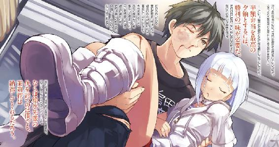

| ベン・トー 06 和栗おこわ弁当３１０円 | |
| アサウラ | |
| 集英社 (2013) | |

ベン・トー ６
和栗おこわ弁当３１０円
アサウラ
この本は縦書きでレイアウトされています。
また、ご覧になる機種により、表示の差が認められることがあります。

主要登場人物
佐藤 洋（さとう・よう）
烏田高校一年。体力とバカには自信がある。ゲームはセガ派。
槍水 仙（やりずい・せん）
烏田高校二年。ハーフプライサー同好会会長。二つ名は『氷結の魔女』。
槍水 茉莉花（やりずい・まりか）
槍水仙の妹。10歳。姉と一緒に暮らしていた時は共に寝ることが多かった、子犬のような少女。
著莪あやめ（しゃが・あやめ）
丸富大学付属高校一年。佐藤洋と同じ生年月日の従姉。イタリア人の母を持つハーフ。ゲームはセガ派。
白粉 花（おしろい・はな）
烏田高校一年。小説執筆が趣味な女の子。実は一部ネットでは名が知られた存在だったりする。
白梅 梅（しらうめ・うめ）
烏田高校一年でありながら生徒会長を担う。白粉をとても大事に想っている。たまに暴力的な一面を見せることも。
山木 柚子（やまき・ゆず）
丸富大学四年。夏はサマードレスを纏っている、年齢の割に幼い性格のボクっ娘。二つ名は『ガリー・トロット』。
沢桔姉妹（さわぎ・しまい）
丸富大学付属高校二年の双子姉妹。やや残念な姉の梗と良くできた妹の鏡。それぞれ生徒会長と副会長を担っている。二つ名は『オルトロス』。
ビッグ・マム
とあるスーパーの半額神。寸胴体型の男だが、男好き。性格は横暴だが、その技術力はかなりのもの。現在は部下の旦那を狙っている。
葦原 藍（あしはら・あい）
ビッグ・マムの下で日々働く若妻。旦那を守るために気苦労が絶えない。
内本 宏明（うちもと・ひろあき）
残念な佐藤の友人の一人。ドＭ。
霧島君（きりしま・くん）
佐藤が住む男子寮の隣人。ロリコンであり、危険な存在。彼の欲望が臨界を迎えた時、世界に危機が訪れる。
イラスト／柴乃櫂人
需要と供給、これら二つは商売における絶対の要素である。
これら二つの要素が寄り添う流通バランスのクロスポイント......その前後に於いて必ず発生するかすかな、ずれ。
その僅かな領域に生きる者たちがいる。
己の資金、生活、そして誇りを懸けてカオスと化す極狭領域を狩り場とする者たち。
――人は彼らを《狼》と呼んだ。
１章 スルーア
「――あっ、今って値引きされてるかも？」
スルーア
０
そこはとあるスーパーマーケットの奥に存在する、総菜・弁当の厨房だった。外周には銀色で統一された調理台や業務用のコンロ、揚物機、冷蔵庫等が並び、部屋の中央にも大きな作業用の台がドンと居座っている。そこは他のスーパーに比べればやや広い造りではあったが、どことなく狭い印象だ。細々したものが多い上、大きなものが動いているせいだ。
現在その中で明日の仕込みをしているのは二人。そのうちの一人は若いパートの女、もう一人は......寸胴な巨漢だった。彼の体重は誰も知らないが、一〇〇キロオーバーは間違いない。このスーパーの総菜・弁当コーナーの主任である彼を、ある者たちはビッグ・マムと呼んでいた。四〇手前の太った男だが、口調が女性のそれに似るせいだ。また今は白い調理帽で隠れているが、黒い長髪もそのイメージに荷担しているし、仕事時間以外では化粧も怠らないのだ。
その彼に、そろそろ行ってきなさいよ、と野太い声で言われた彼女、葦原藍は壁にかかっている時計を見上げた。一九時三〇分。葦原は鍋の火を止めると、流し台で手を洗い、鏡で衣服及びエプロンが汚れていないかチェック。問題なし。よし、と呟き、マスクを外す。鏡には、知り合いから『Ｅ．Ｔ．』みたい、と言われる長い首の自分が映る。特に調理の間はセミロングの黒髪をアップでまとめているので、葦原自身、そう思えた。
彼女は出入り口前にある棚から肩から提げるボックス型の鞄......のように見えるマシンを手に取り、厨房を出る。薄暗い十字の通路。右手に行けば休憩室、真っ直ぐ行けば今は誰もいないが、鮮魚を専門に取り扱っている厨房......そして左手に行けば、スーパーの店内である。無論、葦原が行くのはそっちだ。
両開きの扉の片側を手で押し開け、その身にひんやりとした空気を浴びる。電子音によって奏でられる爽やかな店内ＢＧＭを耳に、彼女は深々と一礼。まずは隙間の目立つ総菜コーナーに向かい、パズルゲームでもするかのように総菜のパックを整頓していく。それら商品を綺麗に並べ直すと、次は弁当コーナーだ。三つだけしかないので、弁当の陳列棚の真ん中付近にまとめて並べた。そこでようやく肩から提げていたマシン――バーコードリーダーとシールプリンターが一体となっている――ハンディターミナルの出番だ。スイッチを入れ、本体からレジ打ちで使われるものによく似た有線のバーコードリーダーを抜き取る。それで弁当の値札についているバーコードを読み取っていけば、その都度またピッと電子音が鳴り、本体に備えられているシールプリンターがカタカタと動きだす。葦原は順次弁当、総菜のバーコードを読み取っていく。全て終わるとレシートのようにプリントアウトされてきた細長いシール台紙を手に取り、そこに並ぶバーコード及び値引き後の値段が記載された長方形の一〇％ＯＦＦシールを指へ。そして、それらを先ほど読み取ったのと同じ順序で総菜、弁当の蓋へ間違えないよう慎重に貼っていく。
「......いらっしゃいませ」
シールを貼り終えた葦原の横を三〇前後のスーツ姿の男が通り過ぎたので、会釈する。
彼は弁当に興味は示さず、総菜コーナーを目指す。その姿にハンディターミナルの電源を落とす葦原は、ふむ、と考える。チラリと見えたカゴには五〇〇ミリリットルのビール缶が一本だけ。仕事がいつもより早く終わったものの、この不況に外に飲みに行く余裕はないので、総菜を肴にして家で静かに一杯やろうというところだろうか。
そこで葦原は何やら違和感を覚える。男にではない。男の視線の先の総菜コーナーに、だ。
今日は平日。特にこれといって何かあるわけでもない日。それなのに、いつもより総菜、そして弁当の残り数が少ないのだ。元々主任の勘と売り上げデータを参考として作り過ぎないように気を遣っているのだが、それでも一〇％引きの段階でこの個数は珍しい。
弁当は通常ならこの時間帯で残り五〜六個といったところなので、これに関しては誤差の範囲内といえる。しかし総菜は、明らかにいつもより少ない。特に皮付きフライドポテトと唐揚げのセット、複数種のウィンナーの詰め合わせセットといった、夕飯のおかずというよりは晩酌の肴を狙ったメニューがほとんど売り切れているのだ。
男は他の総菜を見るも、どちらかといえばご飯が欲しくなるものが多いせいか、やはり手は伸びない。彼は鮮魚コーナーの方に移動すると、すぐさま鰺のたたきのパックを取った。
スタッフルームに戻りがてら葦原も鮮魚コーナーを見やれば、そこにはいつもと変わらないくらいの数がある、三〇％ＯＦＦのシールが貼られている刺身のパック。別に何かの理由から酒の肴の需要が増えた、というわけではないようだ。
バックヤードに戻る前に、葦原は両開きの扉の前でくるりと回れ右をし、店内に向かって一礼する。そして顔を上げた時、ふと、店内にペットボトルジュースやスナックをカゴに入れている高校生の姿が視界に入る。その瞬間、葦原には今回の変化の理由がようやく理解できた。
調理ルームに戻るとハンディターミナルを片づけつつ、葦原は主任に言う。
「もう、そんな季節なんですね。未だに暑いんで、夏の気持ちでいました」
具体的なことは一切言わなかったが、葦原の言いたいことは問題なく彼に伝わったようだった。三年も彼の下で働いているおかげだろうか。
彼は洗い物をしていたその手を止め、天井を見上げるようにして、呟いた。
「あぁ、『奴ら』がもう出ているのね。今年はいつもより早いじゃない」
「明日から個数、調整します？ ......みんな臍を噛んじゃいますよ」
「別にいいわよ、いつも通りで。あたしは《狼》のことを気にするほど、お人好しじゃないわ。自分の仕事をするだけよ」
本当は戦ってまで奪取してくれるのを喜んでいるくせに、と葦原は内心で思う。もちろん思うだけだ。言ったらまた、怒られる。
時にその有様から〝亡者の群れ〟と呼ばれる『奴ら』は、近隣にある烏田高校の生徒たち。
『奴ら』に命じられれば人はそれに従わなくてはならないとされる、夜を舞うこの世の者ならざる集団。たとえそれが狼たちであれ、逆らうのは容易ではない恐ろしき相手。
人は彼らを――《スルーア》と呼んだ。
１
僕、佐藤洋はレジ袋を揺らしながら烏田高校部室棟へと帰ってきた。
この辺りでは一番遅い時間に半額になるスーパー、最終半値印証時刻を有するジジ様の店で戦ったため、現在は午後九時を回っていた。いつもなら校舎も部室棟も静まりかえっているはずなのだけれど、どうやら今日はまだ残っている生徒がいるようだ。
思えば文化祭まではあと二週間。その打ち合わせでもしているのかもしれない。
僕は部室棟の階段を昇り続ける。途中、かすかに笑いまじりの喋り声が聞こえてきたが、最上階である五階に至ればそれは人の気配とともに失せた。通常、廊下に並ぶ扉にはそこを使用している部活のネームプレートが取り付けられるが、五階はほとんどが空き部屋だった。
唯一埋まっているのは５０２号室、僕が所属するハーフプライサー同好会のみ。
僕はその扉を開く。室内から漏れてくる頬を撫でるような柔らかい風に、空腹により鋭敏化した僕の嗅覚がかすかに香水を感じ取る。月明かりだけの薄暗い室内の中央、そこ置かれた大きな円卓の向こう側、開け放たれた窓の前に腕を組んで立ち、風を浴びる女性の後ろ姿。
「獲れたようだな。最近、調子がいいじゃないか」
そう言って肩口までの髪を尖らせワイルドに、しかし実はそう見えるよう丁寧にセットしている彼女は振り返る。ＨＰ同好会会長にして《氷結の魔女》と呼ばれる名うての狼、烏田高校二年槍水仙。ゴツイブーツから伸びる黒ストッキングのしなやかな足が目を引く。
「確かに勝率は上がっていますけど、先輩、それは調子がいいというよりは僕の実力が――」
「間違えた。おまえは調子がいいんじゃなく調子に乗っているんだな。注意しろ」
先輩はフフンと鼻を鳴らすように得意げな笑みを浮かべる。実際に先輩がどう思っているのかわからないが、彼女にそう言われてしまうと、そういうものかも、と納得してしまう。
「まぁいい。夕餉にしよう」
先輩はそう言うと僕が手にしていたレジ袋を取り、普通、高校の部室ではまず見ることがない電子レンジへと向かう。
この部室にはそういった普通ではないものが多かった。円卓もそうだが、電子レンジと同様に小型冷蔵庫、店で貰い忘れた時のために割り箸やちょっとした調味料、そして先輩が好むトランプをはじめとしたテーブルゲームがたっぷり詰まった棚等々、これでユニットバスでもあれば普通に暮らせてしまえそうなレベルである。
僕は電子レンジの稼働音を聞きながら、冷蔵庫の中から麦茶を取り出す。これを二つのグラスに注いで、月明かりが照らす円卓の窓側の席に並べた。ほどなくして先輩が温められた二つの弁当をそこに置く。まだ蓋も開けていないのに僕のカツ丼からはソースの匂い、先輩が奪取してきた弁当からほんのりと甘い匂いが溢れ出ていた。......何だろう？
僕たちは大きな声で「いただきます！」と声を上げる。蓋を開ければ湯気とともに、空っぽの胃袋を刺激する匂いが、より一層濃厚に立ち昇った。
ズッシリと重い丼型の容器を手にし、月明かりの中で僕は今一度そのソースヒレカツ丼を眺めた。割下、タマネギ、卵を用いてとじる普通のカツ丼とは違い、これはご飯の上に薄くキャベツの千切りを敷き、その上に四つのヒレカツを載せた作り。色合いは、黒。ソースカツ丼というと僕のイメージではご飯にカツを載せてそこにソースをかけたものだが、これはどうやら一度カツ全体をソースの中に浸けているらしい。カツの全体がくまなく黒いのだ。しかしドス黒いというのではなく、カツの衣の色が濃い、というように見えるのは月明かりの力だろうか？ また、それらと対比するような黄色いたくあんは夜空に浮かぶ半月のごとき鮮やかさだ。
僕はヒレカツの一つを箸で摘み上げる。当然ながら揚物特有の表面の堅さはなく、衣はソースをたっぷりと吸い込んでしっとりとしていた。
ソース特有のほんのりと酸味と甘みを含んだ匂いが僕の口内にツバを湧かせる。後がけならともかく、ソースをかけたものを電子レンジで加熱すると、ソースの中の酢が揮発して匂いを嗅いだ瞬間にむせたりもするが、これにはない。ただただうまそうだ。
ソースはウスターソースのように重すぎないサラっとしたタイプのようだが、匂いからするにやや甘みが強めで酸味は抑えめ。ご飯にもソースが及ぶ丼物にするにはこれぐらいのバランスがいいのだろう。たまらなくなってそれに齧りつけば、さほどの力を必要とせずにヒレ肉は噛み切れた。咀嚼すれば......そのジューシーな食感に、僕は頭へ一撃喰らったかのようにグラリとくる。ソースをたっぷり抱き込んでいる衣は優しく解れ、溢れ出る肉汁と混じり合う。カツとソースの相性などはもはや日本人にとって釈迦に説法だがあえて言おう、見事だと。
僕の箸は自然とご飯へと向かう。ご飯の上に薄く敷かれたキャベツはさすがにしんなりしていたが、そこを気にしているような状況ではない。箸を差し込んでみれば、やはりご飯にもソースは及んでいた。だが、底にまでは至っておらず、汁だく、というわけではない。カツを載せた後のトドメにサッとかけられた感じで、白と黒の部分が混在していた。好みにもよるのだろうが、何も染みていないご飯ではやや寂しいが、かといって割下よりもずっとパワフルな味わいのソースでヒタヒタとなっているのはさすがにキツイ。これがベストな割合だ。
僕は一気にかき込み、ヌフゥ、と至福の鼻息。そんな僕の隣ではコンコンという、およそ普段のこの時間では聞かないような音がしていた。もぐもぐと咀嚼しつつ、隣を見やれば先輩が卵を円卓の端に打ちつけていた。先輩が僕の視線に気がつくと、得意げな笑みを浮かべる。
「ん？ あぁ、これか。これはな......」
そう言いつつ先輩はヒビの入った卵を手に弁当容器の蓋を開ける。それは今日の僕のカツ丼と同じように丼型だが、若干嵩は低く横に広い。そのためなのか、ブワッというより、ふわわ〜と優雅に湯気が立ち昇り、乳製品の甘く濃厚な匂いが僕のソースカツのそれを押しやる。
先輩の今日の獲得せし弁当、それはドリア。しかもただのドリアではなく、ドリア中央には超大陸パンゲアを思わせる巨大なハンバーグ！ つまりこれはハンバーグドリアなのだ!!
だが、驚くべきはそこからだった。先輩が奪取した店は毎回趣向を凝らすアブラ神と呼ばれる半額神の店、先輩が手にしていた謎の卵......落ち着いて状況を把握していれば察することができたかもしれない。しかし、僕は目の前で起こった意外過ぎる現象に思わず言葉を失った。
先輩は、手にしていた卵をそのドリアの上で割る。するとそこから、ハンバーグという至高の大地に叢雲を纏う月が降臨したのだ。先輩は殻を片づけると、ハンバーグの上の朧月――温泉卵だけを付属されていたプラスチックの先割れスプーンで両断する。
......想像できるだろうか、その見事さを。
割られた卵黄は見る者にため息を漏らさせるほど優雅に、それでいて心沸かせるほど官能的に、何よりも美しく、そしてあまりにおいしそうに熱々のハンバーグの上にその黄色をゆったりと広げていく。僕の全身に鳥肌が立った。
「これは『たっぷりチーズに大きなハンバーグ、そして温泉卵でトドメを刺す！ パワフルにまろやかに、特製ハンバーグドリア！』だ、そうだ」
......相変わらずアブラ神は凄まじい名称の弁当を作る。しかし、彼の作る弁当はその名に負けていないのがさすがだ。
先輩は先割れスプーンで卵黄にまみれた部分のハンバーグを切ると、その下のドリアごと掬う。トローンと弁当容器とスプーンの間をチーズが細い糸を引き、その上を卵黄の滴がエロティックに流れた。先輩はスプーンを回すようにしてチーズの糸を搦め捕り、いよいよ口の中へ。彼女は温泉にでも浸かるように瞼を閉じ、リラックスした面持ちで椅子の背もたれに体を預ける。かなり熱いらしくホフゥと息を吐く。チーズの匂いがする湯気が吹き出た。
肉、チーズ、卵、ご飯......人の心を引きつけるこれらの組み合わせ。うまいのは間違いない。問題はどこまでうまいのか、だ。
先輩の瞼が開かれると、まさに温泉卵のように半分蕩けた瞳が現れてドリアを見つめた。
「......うん。パワフルにまろやか、か。確かにその名の通りだ。......ん？」
先輩の黒水晶のような瞳が隣の僕を見る......というか、見つめている僕に気づく。彼女はクスリと笑い、しょうがない奴め、と僕の額を指先でツンと突く。
きっと今僕はおやつをねだる犬のような顔をしているのだろう。ほんの少しの気恥ずかしさ、しかし先輩ならきっとという信頼と期待......。
いつものこと。ただ犬と狼の間を彷徨っていた時ならともかく、いつまでもこういう甘えた感じでいるのはあまり良くないだろう。それはわかっているのだけれど......いかんせん先輩が獲ってくる弁当はいつも魅力的過ぎるのだ。それに多分、先輩はこの後――。
先輩は先ほどと同じように先割れスプーンで卵の黄身がかかった部分のハンバーグをカットし、ドリアごと掬い、それを僕の口元へ運んできてくれる。
うまいだろう？ と、先輩は確信を持った顔で訊いてくるので、僕は笑顔で頷いた。
ハンバーグはチープな肉の塊などではなく、肉汁が溢れ出る確かなもの。そこに絡むホワイトソースの包み込むようなまろみとチーズ、卵の濃厚な旨味。そして駄目押しにご飯の確かな食べ応え。......なるほど、パワフルかつまろやかだ。
「それじゃ、私も佐藤のをつまませてもらうぞ」
――そう、大抵僕が先輩に食べさせてもらうと、先輩もまた僕のを食べる。だから、おあいこ。ただ、いつも先にねだるのは僕の方。先輩が先におねだりしてきたことなど数えるぐらいである。それは......ちょっと残念というか、少し悔しいというか......。
いつか、先輩の方が先におねだりするような弁当を獲ってこよう。その時は少しもったいつけて、ちょっといじわるして......。いや、無理か。多分僕は槍水先輩からのおねだりに耐えられないだろうなぁ。すぐに差し出しちゃいそうだ。いつもお世話になっているし、何より先輩におねだりされるということ自体が嬉しくて、彼女の笑顔が見たくて、それで......。
僕がそんなことを想像――いや、正直に言えば妄想なのだけれど――して小さく苦笑している間に、先輩はソースカツ丼のヒレカツの一つに先割れスプーンを突き刺し......え？
先輩は大好物を前にした時の子供みたいに目を細め、逆に口は大きく開けてカツを一気に喰らう。そして躊躇なく僕の弁当を掴むとそのままスプーンでご飯をガツガツと......うん、なんて言うか、僕の弁当の四分の一ぐらいが瞬く間に先輩の口へと消えていった。そのあまりにも当然のように行われた一連の動作に僕が止める間など存在せず、ただ愕然と眺めるほかない。
「なるほど......弁当では難しい衣のサックリ感は初めからきっぱりと諦め、あえてその逆にいったか。ソースの染み具合といい、この味わいといい......うまいな」
先輩、と僕は恨みがましい目で僕の弁当を手にしたままの彼女を見つめる。カツの味わいに満面の笑みを浮かべていた彼女は僕に気づき、ん？ と、笑顔で首を傾げていた。しばしそのまま見つめ合っていると、こちらの気持ちが伝わったのか、笑みを消して再び視線を弁当へ。そこでさすがに食べ過ぎたと彼女も思ってくれたのか、弁当を丁寧に僕の前に置き直した。
「スプーンだから、その、仕方ないだろう。つい一気に......それにこの弁当のご飯とカツの割合からするとこれぐらい......」
ジーッと僕は穴が空くほどに見つめ、視線で訴える。それには先輩もたじたじという様子だ。顔を背け、テーブルの下で足を組み直す。
「そ、そんな目をするな！ まったくしょうがないな。ほら、私のをもう少し食べさせてやるから。......そうだ、お互いに丼物というか、一品料理なんだ。この際半分こにしよう。その方が味も栄養もバリエーションが広がる」
「あ、それはアリですね！ それじゃ早速ドリアの卵の部分を――！」
だから調子に乗るな、と、先輩は僕の額を指でペチリと弾いた。
２
僕の通う烏田高校の文化祭は少々特殊だった。そもそもこの学校の教育方針が『自立した生徒を育てる』というものであり、それが反映されている僕の寮は朝食しか出なかったりするのと同様に、文化祭においてもこの方針は顕現されている。
――そこの人、僕らと一緒に青春の一ページを描かないか!? ――先着三名、性別学年問わず！ ――何かしたいけれど何ができるのか？ そんな君のために我々は全力で――
文化祭まで残りの期日がなくなってきたことで、朝の烏田高校は賑やかだ。校門から玄関までの校庭の間には無数の人間が首からプレートを提げたりしつつ、登校してきた学生に片っ端から声をかけまくっていた。
「お、そこの！ 力が有り余っていそうじゃないか。どうだ、俺たちと一緒に文化祭を盛り上げないか!? 代々伝統ある出し物だ！ 楽しいぞ！ 他のトコと掛け持ちもＯＫだぞ!?」
最近毎朝顔を見る、ガタイのいい男が校庭を進む僕に声をかけてきた。彼の胸元にはプレートが提げられており、そこには代表者の名前と学年、そしてチーム名『鼓吹団』、活動内容『文化祭の企画全てを強制的に盛り上げる圧倒的なパフォーマンス集団』との文字が並ぶ。
......何だよ、圧倒的なパフォーマンス集団って。
この男が兎耳をつけていて、チーム名が『ラブラビッツ』というパフォーマンス集団で、高速道路で前転とかしちゃう連中だったら即座に参加しているところだが、そうじゃないのなら興味はない。僕はここ最近毎日来る彼からの誘いを丁重に断り、玄関を目指す。
これらはこの学校の伝統的な文化祭前の光景らしい。というのも、一般的な高校の文化祭はクラス単位で教室を使って店のようなものをやったりすることが多いらしい。無論、それ以外にも部活動単位で、またはステージ企画とかなら音楽を趣味でやっていたりする個人でも出たりできるだろう。烏田高校は全ての出し物がこのステージ企画のように、自由参加の自己申告制なのだ。だから学年、性別関係なく『何かやりたい』と思った人間同士でチームを作り、生徒会または文化祭実行委員会に申請さえすれば簡単な審査の後にその内容、規模等に合わせた適切な学校側からのバックアップと活動場所が割り当てられるシステムだった。そのため文化祭前には春の新入生を目当てにした部活の勧誘のような......まぁ、つまりはこの校門から玄関までの長い人垣が形成されるわけである。
最初この話を聞いた時は参加人数の少ない寂しい文化祭になるんじゃないかと、僕なんかは思ったのだけれど、担任などの話によるとまったく逆なのだという。押しつけられると反発してやりたくないって言う人が出てくるが、逆にやらなくていいよ、と言われると人というのはやりたくなるものらしい。まぁ、事前申請及び予定表の提出こそ必要だが、本人が望めば二日間の文化祭及び終日授業がなくなる前日は学校を休むことも認められているのだけれど、そんな事前準備を万端に備えた上でアクティブに休むというのは逆にハードルが高いのだ。
ただそんな学校の方針やら理念やらも、文化祭が間近になってきたこの時期に未だに人を集めようとしている連中には伝わっていないだろう。先ほどの男のような連中は多分、人数は多ければ多いほどいいということだろうが、それ以外の勧誘は下心が見え見えだ。
最初は僕も気づかなかったが、何回か見ていると一部の勧誘は女生徒にしか声をかけないことがわかる。いってみれば公然のナンパだ。文化祭当日に合コンの約束を取り付けるようなものである。このため美人は毎朝登校にやたら時間がかかってしまうのだとか。
僕が勧誘の間を抜けていると、後方から覚えのある女性の声が聞こえてきた。
「どけどけぇ！ 貴様らのような小物が桃たちの道を塞ごうなんて一〇〇年早い！」
振り返ってみれば案の定の顔......いや、顔ぶれだ。勧誘をかき分けるようにして玄関に向かってくるのは前髪をヘアピンで分け、オデコの目立つ小柄な女生徒と、その後ろには槍水先輩。さらにその後ろにはおっとりした顔に、バレッタで髪をアップにまとめた人。槍水先輩を挟んでいるのは木之下桃先輩と、紫華蔓先輩だ。
二人とも槍水先輩の同級生だ。以前、ＨＰ同好会の部室で会ったことがあった。
「えぇいどけど......って、なんだ、佐藤君じゃないか」
白粉よりも身長の低い木之下先輩はその丸顔で僕を見上げながら言う。気の強そうな細い吊り目と相まってか、何だか生意気盛りな少年のように見えた。
「あ、洋君。おはよう！」
紫華先輩はそう言うと槍水先輩の後ろから、僕に小さく手を振ってくる。僕は......若干の恐怖を覚えつつ、手を振り返す。できるだけ当たり障りのない笑みを浮かべようとしたけれど、多分引きつってしまっただろう。
紫華先輩は、なんというか、あ、この人って一〇年や二〇年たってもきっと顔変わらないんだろうなって感じさせる落ち着いた顔をしていて、凄く家庭的な雰囲気を纏っている人だ。......これで電波さんでさえなければ......凄く好感が持てるのだけれど。この人、以前会った時は唐突に意味のわからないことを言い始めたり、僕に妙な会話を強要したり、メールや電話を五分おきにかけてきたりしたことがあった。それでいて自分のことを至って普通の人間だと思い込んでいたりするのだからヤバイ。要注意人物である。油断はできない。
僕は彼女とはあまり視線を合わせないよう、槍水先輩を見る。彼女は頷くようにして「おはよう」と短く言う。
「おはようございます。......先輩たちって、朝、いつも三人で登校しているんですか？」
歩きながら訊いたら、何故か木之下先輩が小さな胸を張って答える。
「ノン。今だけ。勧誘がウザいからさ。桃はともかく、仙と蔓はご覧の通り、抜けているからね。悪い虫が付いて面倒にならないように、朝はこうしているのだよ。仮にそういう勧誘じゃなかったとしても――」
木之下先輩曰く、なんでも文化祭当日には彼氏さんがライブをやるので、それの準備及び応援をやらせるため、二人に他の変な予定でもねじ込まれたらたまらない、とかなんとか。
僕と木之下先輩が先頭を進んでいると、男連れと判断されるのか、さすがに勧誘たちもほとんど声をかけてこない。僕らはそのまま玄関へ入り、三階の階段のところで別れた。僕が四階の一年生の教室に向けて階段を昇りだしてすぐに、佐藤、と、僕を呼ぶ先輩の声。
折り返しになる踊り場を過ぎていたので、僕は手すりから身を乗り出して階下を見る。こちらを見上げている先輩と目が合った。
「さっき桃から聞いたと思うが、今日、その準備があってちょっと遅くなる。最近は白粉もあまり来ていないし、寂しいかもしれないが――」
「大丈夫ですよ、先輩。了解しました」
「......こういう時は〝寂しい〟と言っておけ。嘘でも私は嬉しい。それじゃ、またな」
そう言って先輩は笑って、手を振り、教室の方へと向かっていった。
今や、学校全体が文化祭に向けて少しずつ動き出していた。
授業の合間の短い休み時間にも、打ち合わせのためなのか、他のクラスの生徒がやってきたり、気がつくといつの間にか教室の後ろの方に工具や資材が置かれていたり......。そして何より、放課後になっても学校に残っている生徒の数が増えた。屋台を組み立てる者、校庭でダンスの練習をする者、当日に展示する絵を描く者......様々だ。けれどもそれらに共通しているのが、日に日に強くなっていく慌ただしさと、高揚感だ。
やはり高校の文化祭というのは中学までのそれとは大きく違うのだ。小、中学校の時は建前は生徒がやっているといっても、実際にはやはり教師が主体となって文化祭は作られていた気がする。以前に行った、著莪の通っている丸富高校の文化祭ではただ遊びに行っただけなのでわからなかったが......なんというか、高校の文化祭はやらされているのではなく、自分たちの手でやっている、文化祭を作っているという実感があった。それは例の教育方針のおかげなのかもしれない。やりたいから、やっている。そう思わせる空気が学校にはあった。
そんな空気の中を一人部室でダラダラしているのも嫌なので、僕は同じ寮の神田君たちのチームをはじめとして、臨時のヘルプ要員として動いていた。なんやかんやで普段、不義理にしていた友人たちはもちろん、女子ばかりでチームを組んでしまい男を欲して、違う、男手を欲しがっていたところなどを手伝っていたり......という感じである。
......そんな時だった。僕がそれを、偶然に発見したのは。
学校から、寮やいつも行くアブラ神、ジジ様たちのスーパーとは逆方向にあるホームセンターにパシらされた時である。木材を買って帰ってくる際、住宅街を抜ける最短ルートを通っていると見知らぬスーパーがあったのだ。住宅街に隠れるように、しかし確かな存在感を放つ大きめの店舗。学校からすぐ近くにあるのに、僕はその存在すら知らなかった。
放課後、事前に聞いていた通りいつもより遅くやってきた槍水先輩にその店のことを尋ねると、あの店か、とぼやくように言って彼女は鞄を棚の上に置き、円卓につく。
「あ、やっぱり知っているんですね」
僕は部室の壁に貼られていた地図を見つつ、言った。その地図には近隣のスーパーの位置とともに大凡の半値印証時刻が記されており、さらにはそれら店舗の半値印証時刻を効率良く回るためのルートまで描かれた優れものだった。当然のことながら、例の店もある。
「ビッグ・マムという半額神が治めている店舗だ。弁当の味はいいらしいんだが総じて、元値が高い。高級志向の店なんだ。だからというわけじゃないが、あまりオススメはしないぞ」
うん？ 僕は地図から視線を外し、円卓の上で頬杖をついている先輩を見やる。
「らしいんだが、って......先輩はそこの弁当を食べたこと？」
「......ない」
一秒ほどの逡巡の後、彼女は僕ではなく窓の外を見つつ、言った。
「意外ですね。てっきり近隣のスーパーはすべて回っているものだと」
「行ってはいたんだ。ただ......ダメだった」
「先輩でも？ 実は今日、ちょっと試しに行ってみようかと思っていたんですけど......」
やれやれ、というように、先輩は首を振る。
「やめておけ。ただでさえキツイ店だ、それに加えて今は時期が最悪だ。アブラ神やジジ様の店もここ最近、弁当の絶対数が少なくなっているのに感づいているだろう？ あれは......」
そこで先輩は頬杖をやめて腕組みをし、瞼を閉じて小さく唸る。
「ん......いや、まぁ、いいか。何事も経験だな。一度行ってみるのも悪くないかもしれない。私も今の佐藤のように勇んであの店に挑戦したのはちょうど一年前の、今ぐらいの時期だった」
「しかし、ダメだった、と」
僕が先輩の隣に座ると、スッと彼女の手が伸びてくる。先輩は生意気だぞ、とでも言うようにわざとらしく口を尖らせ、ピンッと僕の額をその指で弾いた。
「まぁいい。......佐藤があの店に行くのなら、私はジジ様の方に行くとするか。まだ少し時間はあるな。佐藤、何かしよう」
「心配しなくてもまだ七時過ぎですよ。たっぷり余裕あるじゃないですか」
弁当に美しきシールが降臨し、神より我らに恵みを与えん刻......半値印証時刻はジジ様の店は二一時前後......なので、結構余裕はあるはずだった。だが、フフン、と先輩は鼻を鳴らす。
「ジジ様の半値印証時刻にはな。だが、お前の方はそうでもない。あの地図には八時半とあっただろうが、八時には行っておいた方がいいぞ」
僕が首を捻ると、先輩は珍しくイタズラっぽい笑みを浮かべて言う。すぐにわかる、と。
住宅街を抜けて辿り着いたのは、煌々とした光を放つスーパー。そこは日中に見た雰囲気とはまるで別のそれだった。そこに到着した時、僕の視界からは黒く塗りつぶされた近隣の家々は失せ、夜陰を振り払うがごとくライトアップされた圧倒的な存在感を放つ店舗のみが映る。広く取られた駐輪場に加え、店舗の横にはスロープもあり、屋上部は駐車場にもなっているようだ。近隣の住宅街以外の客層も取り込もうとしているのが窺えた。
携帯を取り出して時刻を確認するとまだ一九時五五分。部室の地図に記載されていた半値印証時刻まではまだ三〇分以上ある。果たして先輩は何故こんなにも早く僕をこの場に来させたのだろう。......そこに先輩ですら弁当を奪取できなかった理由があるのだろうか。
僕は今一度、そのスーパーの看板を見上げた。あの《氷結の魔女》の二つ名を持つ先輩ですら獲れることのなかった半額弁当を抱える店......自然と鼓動は高鳴ってくる。どれほどの強敵がいるのか、一体この先どんなことが起こるのか、僕は......勝てるのか。
全ての答えは自動ドアの向こう側にある。
僕は深呼吸すると両の手を拳に固めて、いよいよ入店。自動ドアが開き、冷たい微風が僕の体を包む。残暑色濃い空気から一瞬にして逃れ、まるで違う国へ降り立ったかのようだ。
入店してまず目につくのは高い天井とコインロッカー、そしてこれはまぁどこの店にでもある少し黄ばんだスタッフ募集の貼り紙。次に入り口の左右にあるテナントだ。右手には小物系を集めた広めの雑貨店があり、反対側にはクリーニング店と未だに僕にはそのシステムが理解できない専用ボトルを購入したらタダで美味しい水が入れ放題......らしい謎のマシンが設置されており、さらにこの時間はさすがに閉店しているが、小さなベーカリーまであった。
しかしそれらよりも僕を驚かせたものがあった。
「......おかしいな。何故、今？」
半値印証時刻にはまだ早い時間のはずだが、何故か入店した僕に複数の刺すような視線が向けられたのを肌で感じ取る。その数、五。
しかもそれらの視線はまるで今が半値印証時刻寸前であるかのように厳しく、鋭い。
そこまで警戒されるほど僕は名うてというわけじゃないはずだ。そう訝しみつつ、可能な限り神経を尖らせて、店内の様子を読み取ろうとする。
歩いていくと大半の店がそうであるように最初は青果コーナーに突入する。僕がよく行くスーパーとは違い、そのコーナーは林檎をはじめとした色とりどりの季節の果物が行儀良く、そして美しく並んでいた。色合いや形も皆揃っていて、甘酸っぱくもフレッシュなその香りを振りまいていなければ偽物と間違えてしまうぐらいに整っていた。ただ、お値段はちょっと高め。
この時間でもなお瑞々しい葉物の野菜、泥などこれっぽっちもついていない根野菜等に目を奪われつつも、鮮やかなピンク色を見せる国産ばかりの精肉コーナーを抜けていく。
これが高級志向......か。なるほど、車を使ってでもわざわざ来る人がいるのも頷ける。
やはり普段僕らが行っているスーパーとはいろいろと方向性が違うのだ。驚くほど綺麗に陳列されている生鮮食品をはじめ、かわいらしいコックの人形やピッカピッカに磨かれた調理器具等の所々に置かれたセンスの良いオブジェや、控えめに貼られている宣伝よりもデザインや食に対する安全へのメッセージ性を強めた広告等々......こうして眺めて歩いていると白を基調とした広い店内と相まって、まるで美術館にいるかのような錯覚さえ感じてしまう。
そんなカルチャーショックによりさっきまでの緊張感はやや薄れていた僕だったが、さすがに弁当コーナーに到達すると話は違った。全身が、気持ちが、反射的に引き締まる。まだ一〇％ＯＦＦの段階だというのに......弁当が三個しか、ない。
その衝撃に止まってしまいそうになる足を叱咤し、僕は出来る限り平静を装ってそのコーナーの前を歩み抜ける。その際には視線をその陳列棚の弁当に落とし、可能な限りの情報を読み取る。高級志向というスーパーの弁当とは、果たして......。
一つめ、やや小型の長細い容器に収まっているのは、醤油の色合いがついた炊き込みご飯の上に、厚めにスライスされた鶏肉の照り焼きが並び、端には半分にカットされた味付き卵まで付いているシンプルな『名古屋コーチン鶏飯弁当』。二つめ、鮮やかなサフランの色づけがされたご飯が目を引き、その横にカレーを上品に――少量ともいう――かけられたハンバーグが蓋を開けずとも近くの人間の鼻先を引きつける『和牛ハンバーグカレー』。三つめは一つずつ違う具材の混ぜご飯で作られたお稲荷さんが四つ入り、煮物や玉子焼き等を上品に盛りつけられた『四種類のいなり寿司弁当』だ。そしてこれらの値段は予想通り、僕らが普段買う弁当よりも定価は三〜五割増しという感じだ。度肝を抜くほど高いというわけではないし、半額ということを前提として考えれば十分許容範囲だ。
僕は弁当コーナーを通り過ぎ、ついでに隣の総菜コーナーにも目をやる。こちらはどちらかといえば一般的なスーパーとそれほど差はないが、たまに『和風ローストビーフ』などといった他ではあまり見ない高級品や、よく売れるのか、棚の空白が目についたりもする。
僕が総菜に意識を向けていると、ガコっという扉の開く音がし、目の前にぬぅっと巨大な影が現れた。思わずぶつかりそうになって足を止める。
それは、いや、彼は......何というか、某猫型ロボットを彷彿とさせる寸胴体型の巨漢だ。身長は一八〇ないと思うのだけれど、全身にまんべんなくついた脂肪により横というか、立体感というか......まぁ、太い円柱のような体型のせいで凄く大きく感じる。そして、たるんだ顔は体以上の圧力で見る者を圧倒する。
白いエプロンに白い調理帽を被り、肩からは大昔の携帯電話のようなものを提げている彼は弁当等の調理スタッフであることは間違いないだろう。もしかしたらこの店の半額神、ビッグ・マムかもしれない。......明らかにオッサンなのだけれど、紛れもなくビッグである。
「......あら、いいじゃない......」
彼の口内でかき消えてしまいそうなほど小さな声だったが、ゾクッとした。白粉が頭の中で僕を陵辱している時に覚える寒気と同じものが何故か全身を駆け抜けた。全身から嫌な冷や汗が吹き出すのを感じつつ、停止していた足を意識的に動かし、彼の前を通り過ぎる。......視線が、追ってくる。背中に、腰に、ケツに......彼のねちっこい舐め回すような視線を感じる。
売れてしまったのか、空きの目立つ鮮魚コーナーを眺めつつ、僕は視線から逃げるように歩みを進めていく。ピッピッと音がしたので振り返ってみると、巨漢が総菜のパックにバーコードリーダーのようなものを当てていた......僕を見ながら。するとカタカタと稼働音の後に肩から提げていた機械から三〇％ＯＦＦのシールが出力されていくので、それを今度はパックの上に貼っていく......僕を見ながら。
落ち着け、落ち着くんだ。恐らく僕は自意識過剰なのだ。ほら、よくあるだろう？ 冴えない男子が、かわいい女子とやたらと目が合う、まさか向こうも自分を好いていて......これは両想いか!? って、勘違いする奴とかいるじゃないか。例えば小学校の時に著莪とやたらに目が合う、もしかしたら自分のことを......って勘違いしてラブレター書いちゃった石岡君とか、同様に広部さんと実は両想いだったんじゃって夢見ちゃってるボーイな僕とか、さ......自分で言ってて悲しくなってくるけれど。でも、全国の男子の九割五分ぐらいにはそういう経験があるはずだ。しかしながら大抵そういうのってのは、こっちが見ているその視線に感づいて向こうが警戒しているだけでしかない。だから今回もきっとビッグ・マムは僕の視線に反応しているだけで、間違っても僕のたくましいボディを見つついろんな妄想を脳内で展開させているわけではないのだ。そう、例えば「青い果実はどうしてこう......素敵なの」とか変態じみたことを思ったりするわけが......ハハ......そうだよ、白粉じゃないんだから、さ。あんな変態が世界に何人もいてたまるか。この世が終わる。
僕は額に浮いた汗を手で拭いつつ、意識を切り替える。これから争奪戦が行われるというのに、余所事に気を取られていちゃいけない。初めての店ということでフィールドの下見のためにぐるりと外周を一回りし、エントランスまで戻ってくる。途中でまたガコッという扉が開く音がしたのであの店員さんはバックヤードに戻ったのだろう。とりあえずあの視線からは逃れ......アレ？ 本当に視線が消えている。さっきまで僕に向けられていた五つの視線まで。
無論、その五人が店内からいなくなったわけではなく、僕から興味を失ったかのように視線を向けていないだけだ。......いや、一人だけ僕を見ている人がいる、かな？ ただそれも視線は感じるというだけで、入店時のような敵意や警戒を込めた鋭いものではなく、ただ見ているというだけのようだ。
店内を一周した僕はその視線の主の方へ顔を向ける。きちんとしたベーカリーショップがあるのに、それでも存在しているパンコーナー前に立つ女性。ウェーブがかかったショートヘアに白を基調とした明るい色合いの長いキャミソール......いや、どちらかといえばロングのサマードレスを着た彼女は、興味深そうにひたすらに僕をじーっと見つめてきていた。
その場所は争奪戦を想定するとかなり不利な場所で、弁当コーナーから遠く、むしろ今僕がいるエントランスに近い場所だ。何故彼女がそこに立っているのかはわからないが......まぁ、どうせ時間もあるのだ。僕は彼女と接触を図るため、横に並ぶ。踵が高めのサンダルを履いているせいで一七三センチの僕と同じぐらいはあろうか。中性的な顔立ちをしていたが、体つきはしっかりと大人の女性のそれ。......何だかわからないのだけれど僕の男としての感性が〝この人は何かエロい〟と感じ取っていた。二十歳過ぎぐらいだろうか。
「ひょっとして......佐藤洋......だったりするのかな」
僕は驚き、横の彼女の顔を見る。すると彼女は僕の方を見て微笑んでいた。その少年のような大きく綺麗な目を嬉しそうに曲げて。
「どうして、僕の名を......？」
「当たりだね。どうしてと言われても以前ちょっと見たことがあったから、ひょっとして、って思っただけさ。それ以上はナイショだよ」
シーッというように指を一本顔の前に立てる彼女。ちょっと浮世離れした美少年のような口調や仕草だった。
僕は微笑む彼女の顔を見つつ必死になって過去に対戦してきた狼たちを思い出す。しかしこんな特徴的な人なら一度会っていれば忘れはしないだろう。となるとそれ以外？ スーパー以外で、この土地にて知り合った年上の女性となると......ほとんどいない。僕は降参するように、彼女に名を訊いた。すると彼女はサラッととんでもないことを述べる。
いくつかあるけれどどれがいいかな、と。――この女、二つ名持ちだ。
「それじゃ《ガリー・トロット》って名乗っておこうかな。でもちょっと長いから、本名の方がいいかな？ 本名は山木柚子。柚子でいいよ。丸富大学の四年。このスーパーは一応ボクの縄張り。洋は、初めてだね？」
......ボクッ娘というやつか。僕は頷きつつ改めて彼女の姿を横目で眺める。女性的な服装と体つき、そして年齢を踏まえると、その〝ボク〟という一人称は独特な印象を受ける。
「君はいつもアブラ神やジジ様の店にいるんだっけ？ あの辺に出る狼は二つ名じゃなくても総じてレベルが高いから、きっと洋も強いんだろうね」
フフっと、彼女は横目で僕を見ながら言った。僕は彼女のことを何も知らないのに向こうはこっちを知っている。それはあまり気持ちの良いものではなかった。何故知っているのかを聞き出そうと僕は口を開きかけるも、唐突に店内を包んだ凄まじいまでの緊張感に声が詰まる。
ガリー・トロットこと山木柚子が素早くスーパーのエントランス方向を見やるので、僕もまたそれに倣うと......小さな子供連れの女性がカゴを手に入店してくる。どうやら柚子だけじゃなく、僕が入店してきた時と同様に店内中の狼もあの母子を注視しているようだった。
柚子たちの様子からして、彼女らは半額弁当の争奪戦において最凶の存在、《大猪》なのかとも思ったが、それにしてはカートも装備していないし、何より子供連れであの地獄絵図を描くとも思えない。では、あれで名うての狼だとでもいうのだろうか......？
しかし店内の緊張は唐突に終わる。主婦が青果コーナーのもやしを二袋、カゴの中に入れたのと同時に、だ。僕は意味がわからず首を傾げていると柚子はフフッと笑う。
「わからないかい？ もやしっていうのはほぼ完全に国産という安心感、料理バリエーションの豊富さ、その低価格から庶民の味方の代表格だ。それでいてもやしには結構栄養があったりもする。......ただ、一つ問題点をあげるとすればあまり日持ちがしないこと。遅くとも二、三日中には食べてしまいたいところだよね」
「つまり彼女は今晩にでももやし料理を作るはず......いや、それ以上に高確率で普段から料理しているだろうと読めるから弁当は狙わないだろう、と？」
「なんだ洋、わかっているんじゃないか。優秀だね」
「いや、その......僕がわからないのはまだ三〇％ＯＦＦになったばかりで、半値印証時刻じゃないのに、なんで店内にいる狼はこんなにピリピリしているのかってことなんだけど？」
それはね、と柚子が優しげな顔で言うと、その目が見開かれ、表情が歪む。それまでの美少年のような中性的で爽やかな微笑みから、憎悪に身を焼く女のような顔に一瞬で変貌した。
「洋、答えがやってきたよ。よく見ておくといい。......終わりが、始まる」
柚子は憎らしげに親指の爪を噛み始める。先ほどまでの微笑みとは一八〇度違う顔で、目を憎らしげに歪め、エントランスを見やる。そして遅れて店内にいた四匹の狼も脂汗を滲ませるような、嫌な緊張感を放ち始めた。
......なんだ、一体、何が始まろうとしているんだ。僕には何も感じられないというのに。普通のスーパーで、半値印証時刻前に二つ名持ちが来店しようものなら、そいつが自動ドアをくぐる前に察知出来る。だが、今回はそれがない。かつて戦った気配を消せる強者、禊萩真希乃こと《ギリー・ドゥー》と類似した能力を持った奴か？ 違うな、だとしたら店内の僕以外の狼が察知出来ているのはおかしい。ということは......なんだ？
僕は頭の中でいくつもの仮説を打ち立てるが、すぐに否定されていく。結局〝結論〟が出る前にその〝答え〟が来店してしまう。店内ＢＧＭ越しにでも、離れていても、それでも聞こえてくる会話。若い男女......烏田高校の学生四人組。スーパーでは見かけたことはないが、学校では見たことがある連中だった。彼らは楽しそうに文化祭のことを話しながら清涼飲料水コーナー、アイスコーナーを回り......そして、店内最奥へ向かって歩いていく。
僕の全身に鳥肌が立ち、それと同時に冷や汗とも脂汗かもわからない汗が噴き出した。
嫌な予感がした。僕の中にあったいくつもの疑問という点が、今、一本の線になろうとしているのを感じる。
「行こう、洋。最後まで、見届けよう」
柚子は両手で僕の腕を取ると店内最奥――総菜・弁当コーナーが見渡せる場所へと連れていってくれる。その彼女の手は痛いほどに僕の腕を強く掴んでくるが、僕は何も言えなかった。年上の女性に腕を取られ、豊満かつ妙に柔らかい胸の間に二の腕を埋めているというのに......普段ならヤバイぐらいに興奮しているであろう状況でありながら、何一つそういう気分にはならない。ひたすらにヤバイという危機感が頭の中を跳ね回る。
――ラッキー、弁当三〇パーオフじゃん。――名古屋コーチンっておいしい？ あたし食べたことない。――一生のお願いなんだけどコーチンって一〇回言って。――セクハラ、それ。
彼らは弁当コーナーと総菜コーナーの前で楽しそうに喋り続ける。その様子を僕と柚子は......いや、店内にいた狼たちは打ち拉がれたまま見つめていた。
と、その時だった。さらに店内に若者の笑い声が聞こえてくる。僕らの目の前にいる彼らではなく、再びエントランスの方からだ。新たに何人か来店してきたようだ。
「......まずい。連れていかれる奴が出てくる」
柚子は右手の爪を噛みながらよくわからないことを漏らした。
今し方入店してきた者たちの気配が徐々に総菜・弁当コーナーへ近づいてくる。しかし彼らが僕らの前に現れるより早く、一人の男が神妙な面持ちで現れた。彼は未だどれを買うかで悩んでいる四人にそっと近づき、彼らが総菜コーナーにある唐揚げとポテトのセットに気を向けたわずかな隙をついて和牛ハンバーグカレーを手に取った。音もなく、気配もなく、ただただ悔しそうな面持ちのまま。
僕はそこで気がついた。あの男の巧みな手足の動き......彼は、狼だ。しかしまだ三〇％ＯＦＦの状態だというのに、獲った。獲ってしまった。
「......あれは、一体......何だ？ 何が、起こったんだ？」
あれはスルーアに命じられてしまったのさ、と柚子は爪を噛みながら言った。
スルーア。またの名を亡者の群れ。本来のそれは罪を許されなかった死者たちであり、彼らは毒矢を使い家畜等を射殺してしまう化け物なのだという。そして不思議な能力として、彼らに命じられた者はそれに逆らうことが出来ずについていってしまうんだとか。
そんな話を僕は月明かりの差し込む部室で、先輩から聞かされる。
「これは狼が皮肉混じりに呼び始めた名前なんだ。実際には死者でもなんでもない。他の地域のスーパーでも、こういう連中のことを同様の名前で呼んだりもする」
先輩はそう言いつつ高菜、錦糸卵、鶏そぼろの三色弁当を豪快に頬張る。僕は負けじと、麺が太く、増量されてボリュームアップし、さらにおいしくリニューアルされたどん兵衛のきつねうどんを音を立てて啜った。
僕が実際に見た光景、そして柚子と先輩の話を合わせるとスルーアは特定の誰かではなく、文化祭の準備で帰りが遅くなる学生のこと、または彼らがスーパーで値引きされた弁当及びスナック代わりに唐揚げ等の総菜を買っていくその現象のことを指すようだ。
確かに最近だと弁当が通常より少なかったりする時があったが、恐らく彼らが原因だったのだろう。特に今日は酷く、ビッグ・マムのところだけではなく、僕がその後に向かったジジ様のスーパーでも弁当は彼らに荒らされており、半値印証時刻には結局二個しか残っていなかったのだ。なお、そのうちの一つを獲ったのは他ならぬ隣に座る先輩である。
「......つまり、半額弁当を求めている狼といえども、彼らに奪われるのを恐れるあまり、ついつい半額に至る前の弁当に手を出してしまう、と」
「そうだ。なくなるのは確実だと判断した時に、やむを得ず勝利の一味のない弁当に手を出してしまう......まるでスルーアに引っ張られるように、彼らに命じられたかのように、な」
狼とはまったく別の、異質なる存在。勝つ負けるという枠ですらない、別次元の存在。しかも彼らにこちらはヤれても、こちらに彼らをヤる手段はない。......まるで災害だ。
せっかくの食事なのに、何故か暗い気持ちになる。僕は気持ちを切り替えるため、まだ手をつけていなかった肉厚なお揚げを箸で掴み上げた。熱々のお揚げ......それは気をつけなければ箸先で破れてしまいそうなほどふわっと柔らかなのに、ずっしりと重い。それはジューシーさの表れ。そしてその一枚のお揚げは身の内にどれだけの出汁を、味わいを抱えているのか......箸を持つ者に尽きせぬ想像を促してくる。おかしなことに過去に数え切れないぐらいどん兵衛を食べてきたというのに、いつも最初の一口目は心が躍ってしようがない。それはプレゼントを開ける前の玉響に似ていた。ワクワクして心が跳ね、贅沢な気分に身が縮み、焦るような想いにツバをのむ......。先ほどまで胸中に湧いていた苦々しい想いなど、すぐに失せた。
僕はむしゃぶりつく。唇が火傷しそうなほどのそれを我慢して前歯で噛み切る。泡のように柔すぎず、肉のように硬すぎず、心地よい噛み心地と共にお揚げから出汁が噴き出した。それはただの汁とはひと味もふた味も違い、お揚げの旨味が色濃く出ていて、口の中を躍るほたほたとした食感と合わさり、最高の快楽を与えてくれる。おいしいものを食べる時、人は誰しもが幸せを享受する......そのことを今一度確認させてくれる味わいだ。
勿体ないと思いつつもまるで口の中のお揚げ自体が意思を持っているかのように喉の奥へと滑り込む。口内にまだ後味が残るうちに僕は麺を啜る。麺の甘みと旨味がお揚げの余韻と混ざり合う。......おいしくないわけがない。
これでおにぎり等のシンプルなご飯物、またはエビ天のような天ぷら等の総菜と組み合わせれば最高だったのだけれど、今日のジジ様の店ではお握りをはじめとしたどん兵衛と一緒に食べたくなる総菜がなかったため、これだけだった。
佐藤の敗因はスルーアだけじゃない、そう言いつつ先輩は箸先を僕に向ける。
「おまえが会ったビッグ・マムは半額神として、いや、厨房スタッフとしてかなりの腕前らしい。需要と供給のズレ......我々狼はその狭間を駆けるが、あの店はスルーアを抜きにしても彼の〝読み〟の良さから本当の意味で極狭だ。近隣の住人、遠方からやってくるお客の需要まで完全に読み切るその目は見事としか言いようがなく、その名の通りに神業というレベルに到達しているそうだ。たとえスルーアがいなくとも半額弁当の奪取は極めて難易度が高い。......ただビッグ・マムの凄いところはその〝読み〟だけじゃなく、弁当作りの腕にも素晴らしいものがある。あの太く逞しい指先から生み出される料理の数々は半端ではない......らしい。佐藤ももうわかっていると思うが、あの店は高級志向ということもあり、値段は高め、即ち使用する素材の幅も広くでき、素材だけで勝負出来る弁当や、他ではお目にかかれない高級食材使用の弁当等々魅力も多い。......が、今言ったように、需要と供給の狭間はまさに極狭であるが故に半額弁当を奪取するのは難しく、スルーアが出現しようものなら絶望的でさえある」
いつもの先輩らしい言葉のようだが、味に関してやや不確かで、ちょっとらしくなかった。
「あの〜。先輩はもう挑戦しないんですか？」
「それは......もう、あの店には懲りた。何日も通って一回しか半値印証時刻に至らなかったんだ。しかもそのたった一回のチャンスさえそこを縄張りとする狼に潰されてしまった。さすがに私といえども、ほとんどのＨＰ部のメンバー同様、心が折れた」
「その狼というのは......ガリー・トロット？」
「あぁ、会ったんだな。そうだ。由来となったそれは白く長い毛をした大きな犬のようだが、その輪郭はぼやけていたり、揺らいでいたりしてはっきりしないとされている化け物だ。他の狼も平均的に強めだが、アイツは別格だな。アイツは他の店にほとんど現れず、あの店にひたすら執着する変わった奴だ。私たちみたいにしくじったら他の店へ、というのではなく、その時はすっぱりと諦める。結果、少ないチャンスに全力以上のものをぶつけてくる。その点、私たちはやはり頭のどこかでジジ様の店がある、と次の手を考えてしまっていて......」
槍水先輩は恥ずかしい過去を振り返るように、苦笑いしつつ首を振って、この話を切った。楽しい思い出というわけではない。これ以上深く訊くのも野暮だろう。そう思って僕は残りのどん兵衛を腹に収めようとしたが、ふと気がついたことがあってその箸の動きを止めた。
「あの、先輩......ほとんどのＨＰ部のメンバー同様ってことは、誰かは獲ったんですね？」
「あぁ。それもこの時期に獲った人がいる。だが、それはほとんど偶然みたいなものだったらしいし、真似はできないぞ」
つまりは......決してあの店の半額弁当を奪取することは不可能ではないのだ。ただひたすらに難しいだけで......。〝氷結の魔女〟の名を持つ、名うての狼ですら食べたことのない弁当を手にすることは――いつでも可能なのだ。僕は昨日、いつか彼女の方からおねだりしてくるような弁当を......と、そう願った。これはそれを為すチャンスなのかもしれない。
もしかしたら〝いつか〟はもう目前に――。
「......先輩、ビッグ・マムの半額弁当、食べてみたくないですか」
「それは、味わえるものなら......。だが、無理だ。特に今は。まぁ、スルーアが消えた頃を見計らって様子を見に行くのもいいと思うが、それでもあの店は半額弁当が残りにくいことを考慮して、あらかじめジジ様のスーパーに駆け込むことを考えておくべきで......」
僕は彼女の言葉を聞きながら頭を巡らす。不可能ではないのなら、即ち可能であるということだ。ならば、出来る。必ず、やれる。そして、それを為すのに必要になるものは昔から決まっている。著莪じゃないが、トライ＆エラーを受け入れる覚悟。ただ、それだけでいいのだ。
ふと気がつくと、先輩が僕を見ながらクスクスと笑っていた。
「いやなに、佐藤はこういう時いい顔をするな、と思ってな。......そうだな。まぁ、何事も挑戦してみることは良いことだ。やってみろ、佐藤。期待しているぞ」
はい、と返事をすると、思った以上の声量が出てしまい、先輩の笑いを誘った。
そういえば、と先輩が食べ終わった弁当容器の片づけをしながら思い出したように呟く。
「ここ最近白粉が全然顔を出さないな」
先輩は片づけを終えると、円卓に頬杖をついて天井を見上げる。
「文化祭で何かやるのかな。それにしたって私や佐藤に一言あってもよさそうな気はするが」
「どうでしょうね、アイツの性格からすると積極的にやる感じはしないんですけど。白梅関係で生徒会の手伝いとか。でも特別に忙しい感じじゃなかったしなぁ。今、訊いちゃいますか」
数日来てないだけなのに心配性な人だな、と僕は携帯を取り出しながら思う。普段はクールで粗野なところがあったりするくせに、変なところは細やかで心配性で......。
その時、僕はふと思う。そういえば以前、僕が広部さんに勉強を教えるためにしばらく部室に顔を出さなかった時期があった。今になって思えばあの時僕は先輩に部を休むって言っていたっけ？ 広部さんのことで頭がいっぱいで......よく、覚えていない。
あの時も先輩は今の白粉のように、僕のことを心配してくれていたのだろうか？ そうだったらとても嬉しいのだけれど......。うーん、今さらというか、本人に直接訊くのはバカみたいだし......あ、でも電話を一度貰ってたっけ。......まぁいいや。とりあえず今は白粉だ。
僕が今まさに白粉へコールしようとした時、先輩が「あっ」と何かを思い出したように声を漏らした。彼女は視線を部室の隅に向けて口ごもりつつ言葉を紡ぐ。
「佐藤、電話はやめろ。......その、なんだ。まさかとは思うんだが......彼氏ができた、とか。それで私たちに言いづらくて......」
先輩......それは、ないです。絶対ないです。だって、白粉の性格を考えるとアイツに彼氏ができるとも思えないし、それ以前に最近失踪者や、川や海に若者の水死体、山で変死体を発見とか、そういうニュースを聞いてないですから。
「確か桃のやつも中学校の文化祭がきっかけだったはず。まさかとは思うんだが白粉も......」
「......それじゃ僕、明日にでもそれとなく調べてきますよ」
そうだな、そうしてくれ、と先輩は急にそわそわしながら言った。
僕が男だからしづらいってのもあるのかもしれないけれど、先輩ってあまり異性の話とかはしない人だ。かなりモテそうな人ではあるが、この様子からすると案外その手の話自体に免疫がないのかもしれない。......以前、僕が《パッドフット》と初めて接触した時のこともあるし、多分、そうなのだろう。
僕が言うのもなんだけれど、何だかそんな彼女がかわいく見えてしょうがなかった。普段の格好いい先輩も好きだけれど、こんな先輩も僕は好きだった。
先輩は僕が見つめていたのに気がついたのか、僕へキツい瞳を向けてくる。
「な、何だその半笑いの目は。やめろ、私をバカにしているのか。将棋をするぞ、準備しろ」
了解です、と僕は彼女に背を向けて、将棋盤を取り出す。
僕を睨んだ時に、月明かりの中とはいえ、彼女の頬に照れたように朱が差していたのを見逃さなかった。......やっぱり僕は、そんな彼女がかわいく見えてしようがなかった。
●
葦原藍は風呂上がりで、まだ髪も乾かぬうちにジーンズを穿き、旦那の大きなシャツを着て再び職場を訪れていた。仕事ではなく、単に休み時間にやっている携帯ゲーム機を休憩室に忘れてきてしまったので、それを取りに戻っただけだった。ソフトはツインテールのバーチャルアイドルを用いた音ゲーである。旦那と夕飯、それらを片づけ、入浴後は眠くなるまでゲームを楽しむ......それが葦原の夜のスケジュールだ。無論若い夫婦の二人、夜の営みがないわけではないが、そういうのは仕事に影響が出ないように週末だけと結婚前からきちんと決めている。
時刻は二一時半を過ぎているが、店内にはまだスタッフが残っており、裏口はまだ鍵も掛けられておらず、素通り出来た。葦原が忘れ物をしたと思われる休憩室の扉を開けると、いきなり「はぁ〜あ......」という特大のため息が聞こえてくる。
休憩室は入ってすぐに畳が敷いてあり、壁際に並ぶロッカーを除けば、豪奢な店内とは逆に座布団と大きなちゃぶ台があるだけの和風かつ粗末な作りだ。そこにはノートＰＣを開き、葦原の全体重よりも重いであろう上半身をグデっとちゃぶ台に載せている主任の姿があった。
胡乱な表情で彼は極太の両手足を投げ出しており、傍目から見ると化け物の着ぐるみが放置されているようにしか見えない。
「どうしたんですか主任、そんなわけのわかんない化け物の着ぐるみみたいな格好で化け物みたいな声出して。九割五分化け物じゃないですか」
「......何よ、Ｅ．Ｔ．。あんたの仕事はもう終わったでしょ。星へ帰りなさいよ」
表情と同じく、声にも覇気がない。いつも不機嫌そうな顔と声で暴言を吐く彼らしくない。
「ロッカーに忘れ物を。......あったあった」
いつもの主任なら、忘れ物をするなど注意力が足りない証拠であり、それが普段の仕事にも現れている云々......と、ひたすらになじってくるはずだが、今日は「あぁそう」と何一つ攻撃的な色のない返事が一つだけ。葦原はさすがに不安になって、畳の上で彼が見ているノートＰＣをのぞき込んでみた。日付は今日、時刻は一時間半ほど前の店内防犯カメラ、総菜・弁当コーナー及び鮮魚コーナーをカバーするカメラの映像だ。そこには主任と、近所にある烏田高校の制服を着た男子生徒が一人映っていた。
「誰です、コレ。万引きでも......って、あ、主任......まさか」
ザワっと葦原に嫌な予感が走った。まさかとは思うが、絶対ないとは言い切れないのが主任の怖いところである。
「主任〜高校生はやめましょうよ。問題起こしたらトばされるだけでじゃ済まないですよぅ」
「青い果実はどうして......こう素敵なのかしら。子供のボディにそこはかとなく宿る大人としての魅力、漂うエロス......。未成熟ながら鍛え上げられたボディ......そのアンバランスさがたまらないわ。上腕三頭筋の潜在的な美しさも......いい」
「......服着た上から見ただけでわかるんですか？ 映像からはマッチョっぽくないですけど」
「あたしぐらいになると服の張り具合とか挙動からわかるようになるのよ。彼は細マッチョ、間違いな――って、アンタ、それ、旦那の!?」
いきなり主任は元気を取り戻し、葦原のシャツの胸ぐらを掴むと襟首に顔を寄せてくる。一嗅ぎして目当てのものじゃないとわかったのか、葦原は突き飛ばされる。
「何よ！ 洗ってあるじゃない！ どうせ着てくるんなら今日一日分の汗が染み込んだのを持ってきなさいよ！ だからアンタは使えないっていうのよ！ 給料減らすぞ！」
「いやですよぅ。何でお風呂上がりに旦那の汗染みの出来たシャツ着ないといけないんですか」
「あたしが匂いフェチだっての知っているでしょ!? 気を利かせなさいよ！ まったく店長のバカといいアンタといい、使えない！ ......あぁ？ いつものバス旅行の話よ。何が悲しくて今年も秋に栗拾い行かなきゃいけないのよ。栗の季節は五月から六月の花が咲いている時に決まっているじゃない」
「それこそ嫌ですよぅ。なんでせっかくの社員旅行で実も拾えない上に、くっさい花の匂い嗅ぎに行かなきゃいけないんですか」
「三六〇度、アレの匂いに囲まれるのよ!? 天国じゃない！ しかもその匂いを嗅ぐ男たちがいようものなら......あぁもう」
「主任も男なんですから自分のでも嗅いでいたらいいじゃないですか」
「自分のじゃ興奮しないでしょうが！ あぁっもう気分が悪い！ アンタは早く自転車のカゴに乗って空に飛んでいきなさい！」
胸元がはだけた葦原は畳の上でシクシクと泣き真似をしてみるものの、主任は一切気にした様子もなく、ＰＣをいじり始める。今度はエントランスの自動ドア前の防犯ビデオ動画だ。
「はぁ〜あ。彼が、狼たちの警戒に体を強ばらせた瞬間のボディ具合......たまらないわ」
うっとりとした顔と口調で主任が言うのを、葦原は胸元のボタンを直しつつ聞いた。
「それじゃ主任、私、帰りますね」
「早く失せろ！ 雌豚！」
とりあえず主任の元気は戻ったようで、葦原は安心して帰宅した。
３
槍水先輩と約束した翌日、僕はいつもより早く登校すると、早速隣の教室へと向かった。朝のＨＲまで時間があり、まだ少し閑散としている教室内に......いた。教室の隅に座っている、後ろ髪を白いリボンでまとめ、ヘアピンで前髪を分けた小柄な少女。白粉花。
彼女は僕の視線を敏感に感じ取り、眼鏡越しにこちらを見てきた。
「......あ、佐藤さん、おはようございます......」
僕はおはよう、と言いつつ、その元気のない彼女の様子に少し驚いた。元々元気一杯という子ではないが、それにしたってまるで徹夜明けのような顔である。
彼女の手元を見やればペンとノートがあったので宿題でも忘れて焦っているのかとも思ったが......何かノートいっぱいに所狭しと走り書きでいろんな言葉が踊り、それぞれ矢印で結ばれていたり、横線で黒く塗りつぶされていたり、マルで何重にも囲まれていたり......まるで科学者の計算用紙だ。しかし世界中の、いや史上全ての科学者の計算用紙を探し出しても――
『弓と矢（＝危険なので肉の棒に代替）＋的の男は四つんばいでギュッとお尻に力いれて締めている＝（ダイレクトかつアグレッシブに）ストライクならアッー！ と声が上がる素敵なオートマチック判定システム』
などという狂気の方程式は見つからないと思う。矢と同等かそれ以上に肉の棒の方がいろんな意味で危険だ。命ではなく、人としての大切な何かを失うことは間違いない。
そのすぐ下に『何とかねじ込めるか!?』と書いてあったので、僕は机の上にあった赤ペンで『ムリ』と書いてあげた。
「えぁっ......あ!? 佐藤さ、ここここれは！ 違うんです!! そうじゃないんです！ これは、その、あの......些細なアイディアなんです!!」
顔を赤くした白粉はノートを閉じて胸にしっかり抱きしめた。
「......えっと、それじゃアレか。最近部室に来ていなかったのは小説のネタ出しのためか」
僕が深くため息を吐くと同時に、白粉はよくわからないという様子で首を傾げる。そこで僕は最近白粉が部室に来ないから先輩が心配していたことを告げると、嬉しいような困ったような......彼女は何とも言えない表情を浮かべた。
彼女は廊下で話したいというので、僕たちは教室を出、階の端に設けられた階段のさらに向こうにある、人気のないトイレ前まで移動した。
「なんでわざわざ......？」
あ、いえ、その実は......。と、もじもじしつつ白粉はここ最近の出来事を語ってくれる。
......それは、あまりにおぞましい話だった。
なんでも文化祭でクラスの半数ぐらいの人間がまとまり、何かやろうということになったのだという。当然白粉の控えめな性格上自主的にそこに入ることもなかったし、初めから入る気もなかったそうな。向こうも誘うような素振りもなかったので特に気にせずにいたところ......。
「何か、早めに申請すれば体育館のステージが使えるってことがわかったらしく、だったら人数もいるんだからいっそのこと劇でもやろう、ってことになったそうで......」
しかしながら勢いだけで集まった面々なので、具体的に何をやるかが決まらない。技術面は申請すれば放送局員がバックアップするというシステムなのでこれは良しとして、問題は劇の内容だった。せっかくの文化祭なのに、既存の物語をそのままやるのではつまらない......かといって誰か話が作れるような人間はいない。どうしよう。そんな話し合いが毎日続いていたある日、何故か徐々に彼らの視線が自分に向けられてくるのを、白粉は肌で感じたのだという。
「よくわからないんですけど......普段本ばかり読んでいるあたしなら脚本ぐらい書けるんじゃないか、という感じに話がなったみたいで。お願いできる？ って言われちゃいまして......」
......これは、酷だ。かなり、酷だ。お笑い大好きな人間だからって勢いだけでコントや漫才をやると死ぬほどスベるのと同様である。いくら白粉が普段から本を読んでいるからといってお話を一本作るのは......あ、いや、こいつも一応普段から小説は書いてはいるんだろうけれど、ジャンルがあまりにも違い過ぎる。求められているものと白粉が普段書いているストーリー......そして一番の問題としてメディアも小説と劇の脚本という大きな差がある。
わかりやすく言うならアーケードのゲームを家庭用ハードに移植するのがどれだけ難しいかを考えていただければわかるはずだ。最近でこそ家庭用ハードの性能が飛躍的に上がったためそれほど意識することはないが、本来ゲームセンターの筐体というのは総じて高価で高性能なマシンなのだ。昔、アーケードで絶大な勢力を誇っていたセガの家庭用ゲーム機はいってみれば『アーケードの興奮が自宅で！』という触れ込みだったが、ぶっちゃけその二つにはＦ１と自家用車ぐらいの性能差があった。しかしユーザーが無茶だと思ってみても、いつもセガは天才的なアイディアと技術、根性による荒技、そして時々顔を出す〝苦渋の割り切った感〟でいくつもの名作をコンシューマーゲーム史に残すとともに、良くも悪くもユーザーの度肝をぶっこ抜いてきた。その中でも一際人々の記憶に鮮明なのは......アレだ。いろいろと問題があるかもしれないので、あえて隠語の方で言うが、セガ・マークⅢ版『アウアーアーアー』だ。疑似３Ｄとノリノリの音楽や演出、ハイスピードによる爽快感で一世を風靡した傑作ＦＳＴＧの移植のために、当時としては大容量の４メガカートリッジを用いていたが、それでも抜本的なハード性能はひっくり返せなかったらしく......かなり出来はアレで......。当時、ワクワクして発売前日は寝られなかったという僕の親父曰く――、
「プレイ開始したら戦闘機じゃなくてオレの魂の方がぶっ飛んでいったぜ......アフターバーナー吹かしてな」
――とのこと。あの話をする時、親父はいつも青春の一ページを振り返るかのように、爽やかなのにどこか哀愁の混じった表情を浮かべ、遠い目をしていたっけ。ちなみに僕や著莪の世代になると、そこまでアーケードのアフターバー......アウアーアーアーに思い入れが強くなかったせいか「マークⅢのスペックを考えるとこういうもんだよね」と素直に別物として受け入れることが出来たことを付け加えておく。実際、頑張ってたよ......うん。
まぁとにかく、一見同じようでも土俵が違えば思うようにはならないものなのだ。
「ただ、お願いされちゃうと......その、断れなくて......」
「だから、受けてしまった、と」
コクンと、彼女は頷く。それを作るために忙しく、最近部室に顔を出していなかったのか。
「確かに小説と脚本は別物だよなぁ」
「あ、でもそこはまだ......。普段から書いているんで、ちゃんとしていないかもしれませんけど、なんとかなるにはなるかな、って」
「......白粉、それを先に言え。今僕はわかりやすくセガのゲームを用いた長ったらしい例を考えちゃったじゃないか。どうすんだよ」
「えぁっと......それは、どういうことですか？」
「あぁいや、いいんだ。今のは忘れて。......で、だ。じゃ何が問題なわけ？ やっぱり、その、なんだ。いつものアレなものしか書けないとか」
白粉はそこで腐った魚のような目になり、俯いて何か呪詛を唱えるように俯きながらブツブツと愚痴をこぼしていく。それを聞くところによれば、ほぼ毎日新しい意見、要望を押しつけられるわ、それに一貫性がないわ、日によって意見が変わるわ、催促が日に日に強くなるわ、というかそもそも白粉に話が来た時点で本番まで二週間しかないわ......とのことらしい。
「......なので期日が迫っているのに未だに何も決まらなくて。劇をやるとしたら練習や衣装とかも必要なのに......まだ......。もう学校に来るのが怖くて......」
うぅ......と、今にも泣きそうな顔をする白粉だったが、本当に怖いのはクラスメイトがやる劇に『弓と肉棒のオートマチック判定システム』をねじ込もうとしているコイツの方である。
「佐藤さん、何か......何かいい方法ってありませんか？ アイディアとか」
白粉は哀願するような目で僕を見てくるのだが......いかんせん、僕にはその手の技能はないし、妙案もない。強いて言えば断ってしまうのが一番だけど......今さらだよなぁ。
僕もまた困ってしまい、天井を見上げていると......ガンッと、凄まじい視線を僕は喰らう。それはいきなり狙撃されたような強烈さ。物理的な衝撃ではないのに僕は思わずよろめいた。
その視線が発せられた方を見やれば......いらっしゃったのは......なんということでしょう、我らが生徒会長の白梅様でございます。
彼女は一階の生徒会室にでも行ってたのか、手ぶらで階段を昇ってきたところのようで......そのままのポーズで固まっていらっしゃいました。首だけはこちらに向け、その目はアンチマテリアルライフルの銃口のように大きく見開いていて、それに射竦められようものならあまりの圧迫感にアフターバーナー吹かしてどこかへ飛んでいきたくなることは請け合いで......。
何故か僕の頭の中から『ヨー・サトウ、エンゲージ』という謎の白人男性の野太い声が聞こえてきた。ただもう今はエンゲージじゃなくて、エマージェンシーとかの方が的確である。
「......こ、こんなところで、お二人は何をしているんですか？」
白梅はぎこちない笑みと歩みで、一歩一歩確実に僕との距離を縮めてくる。長い黒髪が腰のところで白いリボンでまとめられているのだが、それが彼女の心を表すかのように揺れていた。
こ、これはマズイぞ！ ＨＲ前という点を除けば、人気のない場所で哀願する見た目だけはかわいい女の子と、それを受けて困ったように天井を見上げるモテ期真っ最中のイケメン......誰がどう見たって、告白のシーンじゃないかっ！
白梅もそう判断したのは間違いないようだが、しかし『そんなはずはない』という思いもあるようで......それで多分このぎこちない感じになっているのだろう。
「あっ、えぁっと......これは、その......ちょっと、佐藤さんに相談を......文化祭であの......」
「ひょっとして白粉、白梅には何も......？」
「心配......かけたくなかったので」
なんで話していないんだ！ 状況を悪くしやがってからに！
「白粉さん、すみません、わたし、ちょっと佐藤君に用がありまして。少しお借りしますね」
白梅の白魚のように細く長い指先に僕は胸ぐらを掴まれると......何故か男子トイレの中へ。
「ちょっとお話をするだけですよ。えぇ、安心してください」
ポカンとしている白粉を廊下に残し、白梅は僕を男子トイレに連れ込むと、扉をしっかりと閉めた。そして僕はトイレの奥に突き飛ばされ、転倒しそうになったが、トイレの一番奥にある窓枠に手をついて持ちこたえる。あの、と声を出そうとするものの、出てこない。
白梅様が、恐怖が......近づいてくる。怖いほど綺麗な笑顔で。
「多分、わたしの心配しすぎだとは思うんです。......ですよね？」
あ、わかってくれてる！ さすが白梅、察しがいい！ 喉が張りついてしまったかのように声が出ないので、僕はコクコクと素早く頷きまくる。
「良かった。でも、白粉さんが私より先に佐藤さんに相談したということ自体に、イラッときてしまいましてね。後で謝りますので、少しだけ怒ってもいいですよね？」
僕はコクコクと素早く頷きまく......あ、しまった!?
「ありがとうございます。では――」
――ヨー・サトウ、エンゲージ。
クソッ！ 警報が鳴りやまない！ エンゲージと同時に強力なのを喰らっちまった。機体のバランスが保てない。戦闘続行は不可能......いや、離脱も無理だ。天地もわからない。雲の中？ いや、違う。ホワイトアウトしているのか、僕は。何てこった、体の感覚がないぞ。木のように硬いシートの感覚だけだ。意識を強く持て、ヨー・サトウ。堪えろ。なんとか緊急脱出するんだ。愛機を失うのは辛いが......やむを得ない。左手を伸ばせ。座席上部にある黄色と黒のリング状のレバーを引け、それでキャノピーが吹き飛んでシートが飛び出す。訓練を思い出せ。手を伸ばし......。クソ、見つからないぞ！ スカスカだ、何もない――
「佐藤君、何をしているんですか？」
「ベイルアウト、ベイルアウトしないと、墜落する！ レバーがない、何でないんだ――！」
「今回、そんなには頭に打ち込んでいませんよ。......佐藤君、わたしの話を聞いていますか？ 無視するようなら......また、怒りますよ？」
その女性の声が聞こえた瞬間、僕の生存本能が悲鳴のような警告音を上げる。まるで目隠しを急にはぎ取られたように脳内が一気にクリアになり、真っ白だった視界にざわつく教室の光景が飛び込んでくる。......全身に鈍く残る痛みとともに。
「こ、ここは......!?」
僕は教室で自分の席に座りつつ、神に助けを求めるように両手を上げていた。多分、レバーを探していたのだろう。何故か内本君がうらやましげな顔をして僕を見ているのが気になる。
「ひょっとして、本当にわたしの話を聞いていなかったんですか？」
後ろの席からその声が聞こえ、訓練された犬がごとく、反射的にそちらに顔を向けて、まさか、と僕は口にしていた。
そこにあった鋭い双眼を真っ正面から受けると、徐々に今までの出来事が思い出される。
僕は......トイレで白梅様にお仕置きされている時に、意識だけが違う世界にアフターバーナー吹かしてぶっ飛んでいたのだ。確か一頻りやられた後に白梅に謝られた気がするようなしないような......。ともかく、その後に白粉と二人で誤解を解いて、教室に戻ってきて......僕は一生懸命レバーを探していて......その間に、白梅から白粉のことをどうにかできないか、と相談されていたような気がしなくもない。
「なら、いいんです。何かいいアイディアはありませんか？」
白梅は椅子の背もたれに体重をかけ、窓の外を見やる。いつもは怒っている時以外は涼しげな顔を崩さない彼女だったが、今回ばかりは少し困ったように苦い顔をしていた。あやふやな数分前の記憶によれば、確か事情を知った白梅がその劇の申請を――生徒会権力を使って力ずくで取り下げるのを決心しかかるも、それはやめて、と白粉に懇願されたのだ。
自分が介入できれば如何様にもやりようがあるものの、今のままでは手の出しようがない。そこで僕に相談を持ちかけてきて......ってか、そう考えるとこの状況は凄い。数分前まで、誤解だとわかった上で殴りつけた相手に助けを求めているのだ。おこがましいにもほどがある。
「おまえが代わりに用意してあげたら？ 脚本」
僕は少しぶっきらぼうに言うと、瞳だけ動かして白梅は僕を睨んでくる。
「出来るのならやっていますよ。そういうのは苦手でして。だからこうしてご相談を」
「困った時だけ都合良く人を頼るのは間違――」
「困ってもいない時に人を頼るのは単なる怠け者ですよ」
うっ......なんだ、何かうまいことを言われたような気がする。アレ？ でもおかしいな、僕が言わんとしたのは、こう、なんて言うか、普段傍若無人に振る舞っておきながらってことであって......。しまった、言葉が足りずに隙が出来ていた！ だから、か！ 白梅の奴、後から僕が付け足せないように途中で言葉を被せてきやがったんだ。
......う、うぅ、物理的だけでなく、精神的にも白梅に押しまくられている......。くそぉう。
「さすがに妙案は思いつかないですよね。......となれば、やはりやりたくても出来ない、という状況に追い込むのが最善なんでしょうか。出来るだけ早く中心人物を二人か三人......そうすれば自ずと消滅に......」
「......気のせいか、今、闇討ちを仕掛ける計画を練ってない？」
「まさか。ちょっと不幸な事故の予想を」
コイツ、この学校からサラッと二、三人消すつもりかっ!? 人に頼る方がまだマシだ！ いかん、白梅の顔から苦々しさが消え、いつもの涼しげな顔つきに戻っている!? すでに彼女の中ではこの問題は解決したことになったのか......!?
クッ！ なんてこった、どうする、どうしたらいいんだ!? なんで僕は余計なことに首を突っ込んでしまったんだ！ くそぉう！ 正義の味方である僕はこのまま白梅が裏で糸を引く不幸な事故を見て見ぬふりなどできない......が、かといって白梅様を止めることは僕のような小市民にはもっとできない！ もう彼女に怒られたくない！ 怖い！
待て待て、諦めたらそこで試合終了だと昔偉い人が言っていたじゃないか。諦めるな、考えろ。考えるんだ。まずは状況を整理してみよう。根本的な問題はなんだ？ 白粉曰く脚本は書ける、と言っていた。問題なのは次々に押し付けられてくる要望（しかも時間経過で変化する恐れアリ）、当日までの時間がないため衣装等を用意する余裕がない......ということだ。後者は手っ取り早く学園物で押し切ってしまえばいいだろうが......今まで押し付けられてきた要望は......しょうがない、これも受け入れよう。問題はそこに新たな要望を追加させないために一気に書き上げる必要が......いや、多分書き上げた後に変更を要求されてきて余計に揉めるパターンになるな。ということは一気に書き上げて、それを固定化させることができれば......。
「白梅、劇の脚本ってさ、生徒会や文化祭実行委員のチェックって......する？」
彼女は一限目の授業の教科書を出しつつ、面倒くさそうに口を開く。
「今のところ予定はありませんが......それが何か？」
「白粉が脚本を書き上げた後、次々にまた要望を押し付けられて、改変させられないように出来るかなって思ってさ」
察しの良い彼女はそれだけで僕の言わんとしていることがわかったらしく「実行委員会の仕事範囲になるかと思いますが、審査機構を立てることはできますよ」と、間をすっ飛ばしてこちらが期待した答えを言ってくれる。また文化祭実行委員会の活動は内容、期間共に限定的ということもあり、烏田では名実共に生徒会隷下組織と位置づけられているため、大義名分さえあれば白梅及び生徒会の方からある程度自由に動かせる、とのことらしい。しかし白梅にとってはもはや解決した問題であり、僕の考えなど車輪の再開発だとでも思っているのか、その目は冷ややかだった。......内本君だったらそれだけで「ウッヒョー！」とか歓声を上げそうだ。
となると問題は書く時間と、押し付けられてきた要望か。前者は仕方ないが、後者は......。
僕は席を立つ。どこに行くんですか、と白梅が尋ねてきたが僕は無視して再び隣のクラス、白粉のもとへ。相変わらず自分の席で例のノートを開いて困り顔をしていた彼女に、今押し付けられている要望を教えてもらう。彼女は言われたことをそのままノートにメモしているらしく、かなり多かったが、その中でも厄介なものをピックアップしてもらった。
予算は衣装代を含めて限りなくゼロに近い。出演予定のオカダ、ホンダ、アダチ君の男子生徒三人は絶対に主役級で、面白くて目立つ役、ただしアダチ君は格好いい役を所望、というかそれ以外は認めない。チームの責任者である私（コバヤシさん）は必ず主役またはヒロインで。ラブストーリーじゃないと許さない。相手はもちろんアダチ君。一般の人を含めて男女双方が楽しめるもの。オリジナリティのある話で。当然ハッピーエンド。暗い話はダメだけれど、影があるようなキャラはＯＫ。少し不思議で夢のある......そう、メルヘンチックなお話がいい。
......どうすんだ、コレ。そりゃ白粉も頭抱えるわ。こんなん一休さんでも連れてこないと打破できんぞ。強いていえばここに『泣ける話』がないだけマシか。っていうか......。
「あのさ白粉、僕の直感なんだけど......最初の方はいいとして、これって責任者のコバヤシさんの要望がほとんどじゃない？」
白粉がチラリと教室の一角を見やる。一つの席に集まって、数人の女子生徒たちが笑いながら雑誌を読んでいるのだが......。
「いえ、実は男子の役についての指示も......はい、全部コバヤシさんです」
元・凶・発・見!! あの女だ、あのコバヤシとかいう女が元凶だ!! アイツのせいで巡り巡って僕は白梅様からお叱りを――!!
先ほどまでは白梅の闇討ちを防がなくては、と思っていたが、事態の全貌が見えた今、彼女一人ぐらいならどうにかなってもいいんじゃないかと思えてくる。
「......アイツさえどうにかなればなんとかなるな。白粉、大丈夫。多分、プログラムから劇は消えて、そのステージ企画の枠は休憩時間になるはずだ」
「えぁっと、それはどういう......？」
......まさか近日中に白梅、またはその手先が彼女をどうこうするとは白粉も考えていないのだろう。まぁ、知らなくても良いことだ。
その時、白梅もまたこちらの教室にやってくる。僕を監視しに来たようだが、いいタイミングだ。僕は彼女を手招きして白粉の席に呼ぶと、事のあらましを説明してやる。
するとどうだ。白梅が目を細め、妖艶さを漂わせつつも名刀がごとくの鋭利さで、コバヤシさんを横目で睨む。それには椅子に座って雑誌を広げていたコバヤシさんも何かを感じ取ったのか、ビクッと椅子が音を立てるほど大きく反応し、慌てて辺りを見渡しだした。
「大丈夫ですよ、白粉さん。今日の放課後にでも彼女にはわたしの方からちょっとお話しさせていただきますので、もう脚本で悩むことはなくなるはず。......というより、劇自体取りやめになるかもしれません」
白梅は僕には決して見せないであろう優しげな笑みで、椅子に座る白粉を見て、言った。
それは僕でさえ思わずドキリとするような綺麗な横顔なのだけれど......そんな面でサラっと闇討ちの計画を匂わせるあたりに彼女の真の恐ろしさを感じる。
白粉は机の上のノートに視線を落とし、モジモジしつつ、恥ずかしそうに言葉を漏らす。
「あ、でも梅ちゃん......劇は、やりたいっていうか、脚本はやってみたかったりして、その」
おや、と僕は思う。なんだろう、ちょっといつもの白粉っぽくないような気がする。
以前までの彼女ならこういうのはすぐに引き下がる、というかむしろ喜んで白梅の提案を受け入れそうな気がするのだけれど......。
「......で、ですが、このままじゃ大変じゃないですか。ストレスで体を壊してしまいますよ。それになんとか脚本を書けたとしても決定権を握っているのがこんな無茶を言うような人ではろくなことにはなりませんよ？ 白粉さんだって、わかっているでしょう？」
白梅もまさかここで自分の助け船が拒否されると思わなかったのか、笑みが消え、机に手をついて少し焦ったような顔になる。普段なら日頃の恨みを晴らすようにその様子を楽しむところだが、今回は白粉にとってもヤバいだろう。知り合いとしてさすがに止めてやるべきだ。
「そうだぞ、白粉。さすがにこの要望通りじゃまともな話なんて出来ないだろ。そもそもなんだよ、予算が限りなくゼロに近いって自分で言ってんのにメルヘンチックな話って。ほぼ不可能だろう。小道具とか用意できないぞ」
横の白梅が姿勢を正し、腕を軽く組んで頷いてくれる。普段は敵対行動しか取らない彼女が同意してくれたことが、僕にはたまらなく嬉しくって、饒舌に言葉を続けた。
「そもそも衣装だって、普通に考えて妖精やら化け物やらを出すとなると凄い手間がかかるんだし、時間もない、金もない、トップの人間がちゃらんぽらんじゃどうしようもない。それともアレか、いっそ何かのコントみたいに思い切って全身タイツで――」
「多分ですが、佐藤君はメルヘンとファンタジーを混同して考えていませんか？ メルヘンというのは童話や昔話ということで、必ずしもモンスターと戦ったり、妖精が出てきたり......ということではありませんよ」
やれやれ、と、ため息まじりの白梅の言葉に、舌を噛んだように唐突かつキッパリと饒舌な僕のトークは終わった。至極まともなことを言われたのは違いないのだけれど......その、なんていうかさ、今は白粉を説得するのが目的なんだしさ......。
白粉が素早く眼鏡をかけ直す。そのレンズの奥の瞳は......ゾクリとするほどに、鋭い。
「......ほぅ。全身タイツ、とな。......つまり、常時モッ――あぅ！」
朝から不快な言葉を聞きたくないので素早く白粉の後ろ髪を引っ張る。と同時に白梅様から強烈な蹴りを頂き、僕は教室の壁に叩きつけられる。派手な音がし、教室中の視線を浴びた。
「佐藤君、転ばないでください。白粉さんにホコリが......白粉さん？」
僕は床に伏したまま白粉を見上げると、彼女は顎に手を当て、ブツブツと何事かを呟く。
「全身タイツ......少し不思議で夢のある......メルヘン......影のあるキャラ......ラブストーリー......ラブ――あ、イける」
え？ と、僕と白梅は目を丸くした。
部室の大きな窓はそこに大きな壁画を飾ったかのように、まだ薄い色合いの星空を縁取っていた。パチッと音が聞こえ、僕は円卓の上の将棋盤に視線を落とす。円卓の下で足を組み替えたような気配がし......槍水先輩は盤から視線を外さずに頬杖をついた。
「......それで？ 白粉は今どうしているんだ？」
「一気にアイディアが思い浮かんで、授業の合間にもガシガシ書きまくったらしくって、昼休みの時にはもう第一稿が上がっていましたよ。今メンバーに読んでもらっているらしいです。多分いけるんじゃないですかね」
途中で中身を見せてもらったところ、押し付けられていた要望は一応全てクリアしていたが、全体的にコバヤシさんの予想の斜め上をいった内容だった。彼女がこれを見た時にどんなリアクションをするかが、直接関係はない僕でさえ楽しみである。
あとはコバヤシさんが余計なことを言いだす前に、審査に提出してしまえば白粉の役目は終了だ。そちらは今頃白梅が生徒会経由で厳命を下しているだろうから問題はないだろう。内容、表現の倫理規定を設け、それを審査する......いってみればゲーム業界のＣＥＲＯのようなもの......という建前での『対コバヤシシステム』だった。『弓と肉棒のオートマチック判定システム』よりはるかに健全かつ平和的なシステムと言えよう。
「そうか、良かった。佐藤にもいろいろ手間を取らせたな。様子を見てきてくれ、と言ったが、まさかそんなことになっているなんて思わなかった」
先輩がまるでお手伝いをした子供を褒めるように微笑んでくれる。僕は、いえ、とちょっと照れつつ......少しばかりの後ろめたさを覚える。僕は別に何をしたというわけじゃないのだ。
「そういえば先輩、ＨＰ同好会では文化祭に何やるんです？ そろそろ申し込まないと場所とかヤバいんじゃないですか？」
「ん？ 特に何もしないぞ？」
「......え？ いや、だって、よく漫画とかだと部活やっている高校生ってみんな何かしら企画やったりして......ほら、それこそ演劇とか即席のバンド組んだりとかで、学生生活の一大イベントで非日常的な時間を、こう、普段は仲違いしている知り合いとも最高の文化祭にしようってんでいつの間にか仲良くなっていたり、憧れのあの人との距離が文化祭というイベントのノリで一気に近づいたり、後夜祭で最高のフィナーレを迎えて女子が泣きだしたりとか......」
「全部の部活がそんなことやっていたら文化祭なんて成り立たないだろう。おかしな漫画の読み過ぎだぞ、佐藤。文化祭だって見せる側と見る側がいて初めて成り立つんだ」
......僕は今、自分がゆとり世代であることを痛いほど噛みしめていた。僕は、アレか、徒競走ではお手々繋いで横一列で一緒にゴールする運動会とか、女子全員が白雪姫役というわけのわからんお遊戯会とか、そういうのを推奨してしまう人間なのか。
確かによくよく思い出してみれば漫画の文化祭のワンシーンだって、出演している主要キャラの何倍もの人間が名前すらないモブでしかないのだ。
どうして僕は自分が文化祭の主役だと思いこんでしまったのか。
......でも、口には出さないだけで本当は誰もが思っているはずだ。自分は全世界、いや異次元すら股にかけた壮大な物語の主人公のはずで、今でこそ退屈な日常に甘んじているが、ある日、空から女の子が降ってきて、自分の中にあった最強のなんだかよくわからない能力が目覚め、その時を境に非日常の幕が開けたりするに違いない。しかし、そう思いつつも心の片隅では『ねぇよ』と自虐的なツッコミを入れてしまう冷静な自分がいて、しかも九分九厘それは正しかったりする。わかっているんだ、本当は心のどこかでみんなわかっているんだ。自分はそんな物語の主人公はおろか、登場人物ですらない。いや......多分、モブですらなく、僕らが期待する心躍る物語自体がこの世には存在しないのかもしれない。この平凡で退屈でくだらない日常こそが世界の真実であり、自分の人生の全てなのだ......。
そう思っていた。あの日、彼女と出会うまでは――。
「――っていう感じの劇とかどうですかね？」
「あぁ、そういう話だったのか。いきなり独白を始めたから少し怖かったぞ」
パチリパチリ、と僕たちは将棋を進めていき、途中で僕は参りました、と頭を下げた。
「劇がやりたいなら今からでも白粉のに参加させてもらったらどうだ。まだ間に合うだろう」
別に劇がやりたいわけじゃないんだけどなぁ。僕は苦笑しながら将棋の駒と盤を片づける。
「同好会で、何かやりません？ てっきりするものだとばかり思っていたんで、友人連中がやる企画とかもう断っちゃってて」
まぁ、でも、友人たちに言えば普通に入れてもらえるとは思うけど......それでもやっぱり僕は同好会で、先輩と何かやりたかった。
先輩は頬杖の手を開き、今度はその掌の上に細い顎を載せ、ん〜、と困ったように唸った。眉を八の字にして、考えるように彼女は天井を見上げる。
「そうは言ってもな。白粉は劇があるだろうし、私の方も桃の彼氏のライブと、蔓のボランティア部チャリティの手伝いがある。それに......実は、文化祭に合わせて実家から妹が来るんだ。一人で。その面倒も見ないといけないからこれ以上何かやるのは難しい。......ただ――」
チラリと先輩が僕の顔を見てくるので、僕は真剣な眼差しで見つめ返す。なんだかんだで半年間一緒にいるおかげか、先輩がこういう顔をする時は大抵チャンスの時だとわかる。僕は少し前のめりになって哀願した。
「佐藤だけ文化祭に何もない、というのも酷といえば、酷か。しかし、やはり――」
「妹さんの面倒なら僕も見ますよ！」
「うちの妹は人見知りも激しいし、体も強い方じゃない、何より少し我が儘で......大変だぞ」
「なんだったら著莪を呼び寄せます。アイツ、昔から年下に慕われるのは得意なんで」
ムムッと、先輩は困惑する。......僕はさらに前屈みになり、先輩のすぐ近くで彼女の顔を穴が空くほど見つめる。散歩を待つ犬のように。
「白粉は出演するわけでもないですから、多分当日は暇ですよ、きっと。仮に何か手伝うとしても二日目の最終日だけ、それも一時間程度のはずですから」
しばしの躊躇の後、さすがの先輩も大きなため息を吐き、折れた。
「まぁ、いいか。......何かやるか」
やった！ と、思わず僕は子供のような声でガッツポーズを取ってしまう。その様子を見て、先輩はクスリと笑った。
「よし、そろそろアブラ神の半値印証時刻だ。行く間にアイディアを出していこう」
「あ、僕はアブラ神じゃなく、ビッグ・マムの方へ行こうかな、と」
「やめておけ、佐藤。あそこは特殊過ぎる。昨日話しただろう、せめて他の時期にしないと奪取どころか半額弁当を拝むことすら難しいぞ。私でさえダメだったんだ」
......だから、行くんですよ。そう言いそうになるも、僕は苦笑して誤魔化した。
カッコつけるのは半額弁当を奪取した時だけでいい。
結果を出して、それからで十分だ。......しくじったら恥ずかしいし。
僕たちは並んで部屋を出、部室棟を下っていく。
「文化祭、無難にお好み焼きとかどうです？」
「いや、今の時期に申請したところで割り当てられる場所はかなり悪いだろう。それじゃ勝機は見込めない」
「......勝機？ やることに意義がある、楽しんだ者勝ち、みたいな流れじゃ......？」
ペチッと鋭い目をした先輩は腕を伸ばして僕の額を叩く。
「何を言っているんだ佐藤。やる以上はきちんと利益を上げる......いや、商売である以上利益確保は最優先事項だ」
......アレ？ 何か、おかしいぞ。僕が望んだ展開から颯爽とズレていっている気がする。劇やバンドで主人公＆ヒロインの隠されたスキルが発動してプロ並みのパフォーマンスをしたりってのはさすがに無理かなと思っていたけれど、屋台にせよ何にせよ、そこで繰り広げられる人間模様......大変だけれど楽しい、苦しいけどこの時間が終わってほしくない......そんな想いの果てに気がつけば僕と先輩の距離は大きく縮まっていて、ついには一生残る青春の一ページを二人で......とか思っていたのだけれど、ここで資本主義が介入してきたのは何故ですか。
ふむ、と先輩は腕を組み、真剣に思考を巡らせ始める。
「場所はもう期待はできない。となると......移動販売か。そうなると商品数、種類共に限られるな。そこで大きく利益を出すとなると......」
――この段階で、きっと自分が期待したような文化祭にはならないんだろうな、ということを僕は薄々予感し始めていた。......多分、当たると思う。
部室棟前で先輩と別れ、僕は昨日と同じく八時前にビッグ・マムの店に向かった。先日同様、弁当を確認の後、途中で見つけた柚子と並んで陳列されているパンを眺める。
やぁ、と彼女は声をかけてきてくれたので、僕は頷いて返す。
「今現在の残されし弁当は四つか。昨日よりはいくらか可能性がありそうだ」
「まだまだ甘いよ、洋。普段の時ならともかく、今時期じゃこの時点でいくつ残っていようがスルーアの到来で全てがおじゃんになって――」
柚子が途中で言葉を切る。店内に緊張が走る。何者かの来店。昨日の経験から僕もまた自然と全身を強ばらせ、店内の狼同様エントランスを見やる。小学生ぐらいの少年が一人。彼は小走りにお菓子コーナーへ向かったので、店内の緊張は一瞬にして消え失せる。
誰かが入店すればその都度体を強ばらせ、スルーアでなければ全員が安堵の息と共に気を緩める......そんな状況が何度も繰り返される。入店してからまだ大した時間は経っていないうえ、この適度な湿度と室温に保たれている店内において僕はジワリと全身に汗を滲ませていた。
精神にのしかかってくる負荷が半端ではないのだ。たとえ緊張しようがしまいが結果は変わらない......そんなドライに考えられなくはないのだけれど、体は正直に反応してしまう。
......仮にこのまま運良く半値印証時刻に至ったとして、果たして僕はどれだけ戦えるのだろう。いくら腹の虫の加護を受けたとて戦えるのか、この疲労感を抱えたままで。他の連中も同じはず、いや、向こうにはまだ慣れというアドバンテージがある、か。
僕は瞼を閉じて首を振る。何故だかわからないが次から次へとネガティブな考えしか浮かんでこない。気分を変えるように、僕は柚子に話しかけた。
「そういえば、えーっと、柚子は他の店には？」
「あんまり行かないかな。......どうしてって、ここのお店のお弁当が食べたいからだよ。このお店のは特別で、他のお店のお弁当じゃ代わりにはならない。最初に食べたのは二年前、まだ二つ名も持たないボクは偶然にも彼の半額弁当を食べた。それはおいしいのはもちろん、まるでそのお弁当がボクに何かを訴えるように胸をざわめきたてて......」
柚子はまるで恋を語るように、それも最高にロマンチックなラブレターを貰ったように、その顔を赤くし、俯き加減に照れながら言葉を紡いでいく。石岡君から貰ったラブレターを一人で見たくないからとわざわざ僕の部屋で、げんなり顔で読んでいった著莪とは大分違った。
柚子は偶然に獲った半額弁当がどれだけおいしかったか、獲れない日々がどれだけ切なかったか、そして最近のスルーアによって狼としての牙を見せることもなく帰宅する日々がどれだけ切ないか......思い出はいくらでもあるようで、それを人に聞かせたくて仕方がないらしく、彼女の言葉は尽きない。
「ビッグ・マムのお弁当を食べた時からボクの心は虜なんだ。その弁当の味わいは繊細で、純朴で、真っ直ぐで......何より心が震えるほどの情熱が込められていた。洋だって食べたらわかるよ。......フフッ、でも、絶対渡さないけどね」
柚子ははにかみながら、恋する少女のような顔と声で、言った。それまでの少年のようなそれとはちょっと違っていて......その、今まで全然意識していなかったのに、柚子のそんな姿を見せられてしまっては僕の胸だってキュンとなる。彼女にハートを鷲掴みされたかのようだ。
それぐらいに、かわいかった。......二秒ぐらいの間。
エントランスから若者たちの声が聞こえた瞬間、柚子は恋する少女から嫉妬に悶える女の顔になる。彼女は顔を憎悪に歪めて、爪を噛んだ。
「やっぱり来た、あのクソ虫ども......ボクの邪魔ばかり......ぶっ殺してやりたい」
僕のハートはキャッチ＆リリースされた。
「で、今夜もダメだった、というわけか」
「はい、スルーアにやられちゃいました。根こそぎ、ごっそり」
僕と槍水先輩はいつものように月明かりで照らされる円卓の、窓際の席に二人並んで座る。いただきます、の声とともに僕らはそれぞれの夕食に手をつける。
僕の夕餉は当然のことながらどん兵衛とお握り（鮭）という鉄板の組み合わせ。アブラ神の店に向かった先輩の今宵奪取せし弁当は『カツだけで満足か？ お前の欲しいのはこれだろう!? 大盛りフライカレー』である。簡単に言うとカツカレーの増量版というか......トンカツ、エビフライ、コロッケ、チーズハムカツとカレーというなんだか凄い弁当だ。
「だから言っただろう。あそこは特殊過ぎる、と。獲れなくてもしょうがない領域だ。そんなんじゃせっかくの実りの秋を堪能できないぞ」
そう言う先輩はカレーをまとわせたエビフライにかぶりつくのだけれど......先輩、今日のあなたの弁当は季節感ゼロですよ......。しかし「うん、プリプリしてる」と満足げな笑顔で頬張る彼女には突っ込めなかった。彼女は僕にも「一口どうだ？」と勧めてくれる。
「......いえ、今は。それよりもやっぱり、季節によってお弁当も変わったりするんですか？」
「当然だ。弁当もその季節に合わせたものになる。この前だって秋鮭や新米の弁当が出ていただろう。他にも秋刀魚、サツマイモ、松茸をはじめとした茸、秋茄子......あぁ、栗もそうだな。そういった食材を用いた弁当が自ずと多くなるぞ」
僕はどん兵衛を啜りつつ、今日のビッグ・マムの店に残っていた四つの弁当を思い浮かべる。......しかし、さほど季節と関係しないものだったような......。高級志向ってことで、予算にものを言わせて好き勝手やっていたりするんじゃないだろうか。訊いてみた。
「あそこだってスーパーには違いない。他と同じく季節のものを出してくる。恐らく佐藤が到着する前に売れてしまったのだろうな。少なくとも去年、私は栗の......そう、それこそちょうど今ぐらいに......彼らは行っていたな」
「行っていた？」
「私も詳しくはないんだが、あの店は、この時期に社員旅行みたいなものに行って栗拾いをするらしくってな。その拾ってきたばかりの栗で栗おこわを作っていた。今年もそうなのかはわからないが、昨年私が通っている時には出ていたし、ガリー・トロットから聞いた限りでは一昨年もそうだったらしいから、今年も出ると思う。ただ、半額になるかはわからないぞ」
「先輩の時は？」
先輩は先割れスプーンを一瞬ぴくりと止めるも、すぐに何事もなかったかのようにハムカツに突き刺した。チーズがうにゅ〜っとはみ出てくる。
「......出たさ。たった一つだけ。しかし、持っていかれた。ガリー・トロットに」
ならばその日を最後に先輩はあの店を諦めたのだ。僕はどん兵衛を啜りながら、思った。
４
授業が終わると、僕は昨夜先輩と作った文化祭企画申請用紙を手に、白梅と校内を歩いた。
どうぞ、という彼女の言葉に誘われるように、校舎一階にある生徒会室の中へ。そこは丸富の生徒会室のように一見オフィスのようだが壁に貼られたポスター等が学校であることを主張し......という感じではなく、まさにオフィスという言葉がピッタリな作りをした部屋だった。特に日本のそれというよりは海外のものに近い感じだろうか。室内に漂う胸がすくようなコーヒーの香り、壁を埋める整頓された資料棚、部屋の中央に集められたデスクは各人ごとが作業に集中出来るようにと仕切られていた。立てば部屋を見回せるが、座っている限りは他人の視線を意識することはない作りだ。特徴的なのは大きなホワイトボードがあるのだが、そこだけは部屋の整頓具合と反比例するかのように所狭しと無数の言葉が走り書きされていた。現在の生徒会の仕事内容を記してあるようだが......部外者の僕にはよくわからない。
僕たちが入室すると一人の女生徒が席を立ち、短く白梅と会話。言葉の端々に漏れ聞こえるところによれば例の審査機構による脚本や演奏する曲目の歌詞等の提出義務化がなされたことを告知するために、文化祭実行委員が各組織へ伝達に回っている旨の報告のようだ。
「確かに仕事は増えましたけど、良い案だったと思います。問題を事前に防げますもの」
白梅はチラリと僕を見やるので、二人して頷き合った。結果的に僕ら二人が立ち上げたシステムである。白梅がどう動いたのかは知らないが、うまくいって何よりだった。
「ということは現在、実行委員は誰もいないんですか？ ......そうですか、それでは佐藤君の申請はわたしが受け取っておきます。こちらへ」
そう言って白梅に連れていかれたのは隣の部屋......というか、部屋をガラスの壁で区切って作られたもう一つの部屋へと案内される。海外の、と先ほど僕が言ったのはこれが目についたせいだ。ガラス壁の奥の部屋は一台のＰＣが載る立派なデスクとチェアのワンセット。それとは別に一対の三人掛けソファーとテーブルがあり、会長室兼応接間という感じだ。
そこへ入室する際、仕切りに触れると、それはガラスではなく、アクリルの板だと知れた。どうやら後付けで作られた仕切りらしい。上部には簡単に取り付けられているブラインド、また下部にはキャスターが付いていることから、必要に応じて片づけることが出来るようだ。
白梅がソファーの方に座ったので、僕もまた彼女と反対側のソファーに腰掛け、申請用紙をテーブルの上に置く。それを見た白梅がいきなり眉根を寄せた。
「......お茶だけ、ですか。しかもペットボトルの」
おかしなものを見るような目で白梅は見てくるので、僕は苦笑しつつ頷く。
昨夜先輩が提案した企画は、そのものズバリでお茶の移動販売である。しかも淹れ立てとか、珍しい種類のそれではなく、普通にお店で売っているようなお茶の五〇〇ミリリットルペットボトルのみを取り扱う。
確実に誰もが思うはずだ。――地味、と。何故に年に一度の大イベント、学校をあげてのお祭りだというのに、ペットボトルのお茶を販売せねばならんのか。僕もそう昨夜は訴えたのだが、先輩の意外なほどしっかりした考えを聞けば納得せざるを得なかった。
恐らく飲料を扱うところはいくつかあるはずだが、そこは祭りだということで海外の怪しげな飲料や、ソーダと合わせた甘ったるいドリンク等の、祭りというイメージに引っ張られたものばかりになるはず。だが、祭りで最も必要とされる飲料は実はお茶なのだ......そうだ。以前合宿に行った際にも先輩から聞いたが、祭りの料理というのは油を多用したものが多い。かき氷をはじめとしたデザート系にしてもアイスやクレープ等のやたらに甘いものばかり。それらを食べつつ飲みたくなるものというのはジュース類ではなく、甘みのないサッパリとしたものだ。その需要を狙う。無名メーカーのお茶を安く仕入れ、一律一〇〇円で販売。しかも、移動販売だからお茶の仕入れ以外に予算は必要ないし、万が一にも余ったら余ったで元々安く仕入れている上、保存の利くペットボトルだからＨＰ同好会の部室に置いておけるし、日々の活動――弁当を食べる時に同好会員がおいしくいただける、という奇跡のような二段構えの策だった。地味ながら恐ろしく手堅い商法である。
......そしてここからは白梅には伏せたのだが、実は僕と先輩が調べた限り当文化祭の出店規定において移動販売に関しては一切記述がないのだ。そのため極端な例をあげれば、これだけ申請が遅くなっても立地条件の良い場所に勝手に居座ったり、出店が認められていない場所での販売という荒技だっていざとなれば出来る。また、先輩によると毎年二日めの日暮れ時になるとどこもかしこも商品を売り切ろうと昔の駅弁販売のような方式で勝手に売り始めるところが多いらしく、移動販売自体は暗黙の了解を受けているため問題はないのだという。
お茶の移動販売......先輩が提案したそれは地味で、手堅く、それでいて規定の隙間を縫う荒技商法をも孕んだ類い希な商売なのだ。
最初は冷めた目をしていた白梅だったが、僕がこの商法について説明すると最後には「ふむ、なるほど」と感心の声を漏らすに至っていた。移動販売、というところで何か思案する顔を見せたので、僕らの荒技商法の可能性に感づいたのかもしれないが、特に彼女がそれに関して何か言うことはなかった。
「槍水さんがおっしゃったように、確かに今のところ申請のあった中で普通のお茶を取り扱うところはなかったですね。一応ないわけではないのですが、教室を使った喫茶店や茶道部が行うきちんとしたものなどですし、ジュース類を扱うところも一律二〇〇円でした。......確かに、面白いところを突いているかもしれません。良いと思います」
白梅は一度ソファーを立つとデスクの引き出しから数枚のプリントとペンを取り出し、何故か僕の隣に座る。どうも申請用紙に不備があったらしく、そこの記入と変更した方が良い点などを一つ一つ丁寧に教えてくれる。つまりは、普通の生徒会の仕事らしいのだが......何だろう、こういうシチュエーションは僕の人生経験の中ではあまりないせいか少しドキリとする。
それらの記入、訂正が終わると数枚のプリントを手渡され、白梅は自分の分に目をやり、朗読していった。文化祭で商売をする時、そして飲食物を扱う場合の注意点等を記したものであるらしく、直接文化祭実行委員または生徒会役員に説明を受ける必要があるらしかった。
......が、何故だろう。僕の目はプリントではなく、白梅を見つめてしまう。同級生とは思えぬ落ち着いた雰囲気を纏い、東洋的な美しさを感じさせる艶やかで真っ直ぐの黒髪、文字を追う彼女の瞳には普段の鋭さはなく、ただただ上品で淑やかな唇が紡いだ言葉は詞章のようにさえ聞こえてくる。そして、かすかに触れ合う肩はお互い夏服ということもあり、彼女の線の細さをうっすらと感じさせ、近くにいなければわからないような、一歩引いた女性の香りが僕の意識を引きつけて放さない。
「以上です。何か質問はありますか？ なければこちらに了承のサインを――佐藤君？」
プリントから顔を上げた白梅は間近で僕と見つめ合う。その瞬間、僕は全てを理解した気がした。昨夜部室で期待したような文化祭にはならないだろうと予感したが、その理由がわかった。そう、今度の文化祭は僕と先輩の距離を縮めるのではなく......彼女、白梅梅と僕との距離を縮めるイベントだったのだ。そう運命づけられていた。だから昨夜先輩はロマンチックの欠片もないやたらに資本主義的に手堅い商法を思いついたりしたのだ。人は運命には逆らえないのだ。思えば白粉の一件からして僕と白梅を近づけるための神の試練だったのかもしれない。
最初反目し合っていた男女が文化祭という共通の目標のために一致団結......そして気がつけば憎らしかった相手は愛おしい相手へと......ベタな展開だが嫌いじゃない。むしろ大好きだ！
「......佐藤君、きちんと聞いていました？」
「ごめん、つい、見とれちゃって」
真剣な顔をして僕は白梅を見る。首を伸ばせば唇が触れ合う距離。きっと彼女は顔を赤らめて「バ、バカ！ なななな何言っているのよ！」とベタなリアクションを――しないよね。
......うん、なんとなく最初からそんな気はしていたんだ。
上品さを絵に描いたようだった白梅の瞳がまるで生ゴミを見るかのように僕を見据えると、ソファーを立ち、何故かアクリルの壁に取り付けられていたブラインドを下ろし始める。
「人がまじめに仕事をしているのに、それをふざけ半分で踏みにじるのはイラっときません？ 丁寧にしてしまった時は尚更に。佐藤君はどうかわかりませんけど、わたしはくるんですよ。......怒っていいですよね？」
白梅の言葉は背後から聞こえ、徐々にそれが近づいてくる。スッと白い彼女の手が僕の両肩に置かれた。僕は静かに左手を上げ......座席上部にあるはずの脱出レバーを探した。
......何故か、ない。脱出は不可能。愛機とともに墜ちるしかない。よぅ、バディ、頼みがある。僕の妻に愛していると伝えてく――。衝撃が僕の言葉を切った。
その後、彼女はぶっ倒れた僕の頭を踏みつけながら再度プリントを朗読してくれました。
「なんだ佐藤、またどん兵衛か」
アブラ神の店から半額弁当を奪取してきた槍水先輩と、丁度部室棟の前で出くわすと、開口一番にそう言われてしまう。僕は軽いレジ袋を持ち上げて曖昧に頷き、彼女と一緒に部室へ。
「まだジジ様の半値印証時刻に間に合うだろう。昨日といい、どうしたんだ？」
先輩は部室に入ると早速電気ポットの再沸騰ボタンを押し、奪取してきた弁当を電子レンジの中に置いた。僕もまたどん兵衛を机の上に置くと、冷蔵庫から麦茶とコップを用意する。
「いえ、なんとかビッグ・マムの店で粘ってみようかと。ほら、先輩言っていたじゃないですか、あそこの店に集うのは特殊な奴らだって。彼らを相手にする以上、ジジ様を意識しちゃうといざ争奪戦という時に覚悟で負けてしまうかな、と思いまして。初めからダメだったらどん兵衛にするつもりでした。虎穴に入らずんば虎児を得ず、ですよ」
「あぁ、それで昨日、珍しく味見を断っていたのか。......だが、それだと──」
先輩はまだ何かを言おうとしていたが、電気ポットがお湯を沸いたことを告げる電子音を鳴らし、一度出かけていた言葉を呑み込んだようだった。
僕はどん兵衛の蓋を開け、粉末スープとお湯を入れる。先輩は半額弁当を電子レンジに入れ、温めを開始。彼女はいつものようにターンテーブルを回る弁当から目を離さない。
「やはり、スルーアか」
「はい。三〇％ＯＦＦシールを貼っている最中に現れてしまって......」
僕らはまたいつものように窓際の席で、二人並んで、いただきます、と声を上げて食べ始める。白粉は劇の練習の方に行っているので、ここのところずっと二人っきりである。
あまり言いたくはないんだが、と先輩は前置きし、言う。
「いい加減無理を悟れ、佐藤。スルーアが活動しているこの時期にビッグ・マムの店はあまりに分が悪い。さすがにどん兵衛ばかりでは栄養が偏ってしまうぞ。何故あの店にこだわる？」
それは先輩がまだあそこの弁当を食べたことがないからですよ。そうキザに言ってしまいたかったが、今言うのは何か違う気がした。
そういうのは獲ってから言うべき台詞だ。カッコつけて、もったいつけて。
「そ、それより先輩、ＨＰ部でもあそこで弁当を獲った人がいるんですよね？ その時ってどうやったんですか？」
やや強引に話を変えたものの、先輩は特に気にせずに天井を見上げた。
「んー。確か何日もずっとビッグ・マムの店に通い詰めて、ある時弁当が一つだけ半値印証時刻まで残ったらしいんだ。文化祭前、スルーアが活発に活動しているこの時期に、だ。その幸運を逃すまいと、ガリー・トロットをはじめとしたあの場を縄張りとする狼たちと激戦を繰り広げ、その末にようやく手にいれたとか。......私はその日たまたま、桃たちとの用事があって部室に行けなかった。奪取できたのを知ったのは翌日。だから、弁当の味見も出来なかった。今でもたまに残念に思う時がある」
「......凄いんですね。誰なんです、その人って？」
「佐藤も知ってる。前ＨＰ部部長《魔導士》こと金城優。最強の枕詞を有するかの狼だ」
５
――あれから、どれだけ僕のどん兵衛生活が続いただろう。
あの卓越なる出汁、リニューアルされてからその存在感を増した麺、お揚げをはじめとした至高の具材の数々、ハイクオリティかつさりげなくも一〇種類を超えるラインナップ......まぁ、近所で売っているのは四種類ぐらいだけど。ともかく、今もなお僕はそんなどん兵衛を夕食とし続けていた。さすがあれほどの味とはいえ、こう何日も続くと辛い。昼は売店でパンという関係上、どうしても栄養が偏りがちだ。特に食物繊維の少なさは僕を便秘気味にする程である。
先輩からは幾度となく「もうやめろ」と言われ続けていたが、今ではもう「今夜もか？ 頑固な奴め」とため息混じりに言われるだけだ。負けるのはいい、しかし戦う以前に負けが決まっている場に挑み続けるのはさすがに違う、と彼女は言う。せめてリカバリィ――ジジ様の店に走り込むことを考えろ、と。ただ、それすら一昨日から言わなくなった。恐らく先輩は明日、明後日の文化祭さえ終わればスルーアは消える、そうなればチャンスは生まれるはずだろうし......と僕の説得は諦めたのだろう。
確かにスルーアが消えれば確率は一気に上がる。たとえどれほどの強敵たちがいようとも、無数のトライ＆エラーを繰り返せばいずれは必ず突破できるはずだ。......しかし......。
「佐藤さん、どうしたんですか、ぼーっとして」
僕はその声にはっとして我に返った。見れば白粉がきょとんとして、僕を見上げている。
僕はもう秋だというのに初夏と勘違いしそうなほど元気な太陽を睨んだ。今日は文化祭前日、終日準備ということで朝から友人たちの屋台の組み立てなどを手伝い、約半日、この太陽に焼かれていたせいで少し疲れているのかもしれない。
ようやく自分たちのＨＰ同好会の準備を始めたってのに、そこでノックダウンしていたら笑い話だ。僕は自分の頬をバシンと一発叩く。
「少し休みます？ 佐藤さんは今日凄く働いていますし......」
白粉が額に浮かんだ汗をハンカチに吸わせながら、心配そうに言ってくれる。
「大丈夫。さぁ、次でラストだ。さっさと終わらせちゃおう」
白粉に言って、僕は部室棟前に積まれた残り三つある段ボール箱の二つを持ち上げる。それは五〇〇ミリリットルペットボトルのお茶二四本入りでかなり重いが、これを五階の部室まで運べば僕と白粉の仕事は終わり。後は移動販売時に使用するクーラーボックスを買いにリサイクル店へ向かった先輩が帰ってくればＨＰ同好会の準備はほぼ完了だった。
僕たちは二人肩を並べて階段を昇っていく。先ほど僕が先に行くと、白粉が偶然を装い、後ろから箱の角でやたらに人のケツを小突いてきたからだが......まぁそれはおいておく。
各階の部室は扉の開閉に関係なく、生徒たちの声が漏れていた。そして明日出すのであろう料理のチェックでも行われているのか、お好み焼きと思しき匂いが廊下や階段に漂い、僕らの胃袋を地味に刺激してくる。
「あ、結構カタチになってきましたね。あたしたちが運び始めた時はまだ全然だったのに」
階段の踊り場に取り付けられた窓を、白粉は立ち止まって背伸びしながら見やっていた。
そこの窓からは校庭が見え、まだ骨組みだけのものが目立つものの、屋台の列が中央玄関から伸びている。列は校門まで連なっているのだが、そこには今、文化祭用の巨大アーチが建造されつつあった。ただでかいだけのアーチではなく、そのアーチは幾何学的な......わかりやすく言えばＳＦ的なデザインとなっていて、思わずジーッと見入ってしまいそうになる代物だ。あれは元々別の場所で作られており、完成したそれを一度分解して校門前に運び、そこで再度組み立て直しているだけなので、白粉が言うようにちょっと目を離している間に驚くべき早さで出来上がっていく。
他にも屋台の列の真ん中付近の道は広い空間があり、そこには屋外用ステージが建てられていて、現在は放送局員たちが音響・照明の設定に勤しんでいる。テストのために時折音楽や変な声が聞こえたりして、その都度屋台設置組の笑いを誘っていた。
そんな校庭を、僕と白粉は重い荷物を持っているというのに不思議としばらく眺めていた。ざわざわとして、そわそわとして......何かしたい、何かしなきゃ......そんなふうに体が疼く。
それはどこか心地よくも、むず痒い。窓から吹き込む秋風にくすぐられているよう。
あたし、と白粉は窓の外の風景を眺めながらポツリと呟いた。
「文化祭って、あまり好きじゃないんです。毎年、どこにも居場所がなくって。梅ちゃんはいつも気を遣ってくれたんですけど、それでも生徒会長やっていたりしましたから、あたしとずっと一緒ってわけにもいかないので......」
文化祭にしろ何にしろ、学校ってのはクラス全員が仲良しで、その全員が素晴らしい子供たちであるという前提で成り立っていることが多々ある。そうでなければ、二人組を作ってくださいとか、好きな人と班を作ってくださいなどと口が裂けても言ってはいけない言葉である。
僕は何か言ってやりたくなったものの、良い言葉が思いつかなかった。
窮していると、白粉は目を細め、独り言のようにさらに小さな声で言う。
「でも......今年は少し、違うのかもって思えたり......」
えへへ、と彼女は小さく笑う。そんな彼女が妙にかわいくって、両手が塞がっていなければ頭でも撫でていたかもしれない。
「そっか。劇の方、どんな感じなんだ？ ずっと練習に行きっぱなしだったみたいだけど、白粉も出演したりとか？」
「いえ、あたしの仕事は脚本を書き上げた時にほとんど終わってて、放課後はいつもみんなが練習しているのを見ていただけなんです。気になっちゃって。......あたしが言うのもなんですけど......面白いと、思います」
「見に行くよ。友達、いっぱい誘って」
白粉はらしくなく、恥ずかしそうに頬を赤らめて俯く。そして、そよ風にさえかき消されてしまいそうな声で、はい、と短く答えた。
どちらからともなく、僕たちは再び並んで階段を昇り始めた。部室に着けば、先に運び入れていた段ボール箱共々部室の壁際に並べると、僕と白粉は腰を押さえて伸びをする。
結局何本分運んだのか数えるのが億劫になるほど、段ボールは広いはずの部室を埋めていた。
「あー......さすがにちょっと疲れたかなぁ」
「あの〜、やっぱり佐藤さん、調子悪いんじゃないですか？ 何かいつもより体力が低下しているようですし......それにお肌も荒れてません？」
自分の方がくたびれた顔をしているくせに、白粉は心配そうな目で僕を見てくる。僕は部室の窓を開けつつ、最近弁当を獲っていないことを伝えた。吹き込む風が僕らの汗を拭う。
「やっぱり栄養が偏っているのかなぁ。あと、食物繊維も足りなくて、最近ちょっと便秘気味だったりで......アレ？」
振り返ってみると、部室内から忽然と白粉の姿がなくなっていた。数秒前まで手を伸ばし合えば十分に届くような距離にいたはずの彼女が......。
僕は素早く携帯を取り出す。
いたはずの彼女がいない。彼女はどこへ行ったのか。いや、それより本当に彼女はそこにいたのか、そもそも白粉花という女の子自体、本当に存在していたのか。揺らぎだす自信、書き換えられていく友人たちの記憶、何が真実で、何が嘘なのか......？ おかしいのは僕か、それとも世界か。全ての謎を解き明かした時、その世界の真の姿が――。
「っていう感じのお話はどうですかね？」
『電話してきたと思ったら開口一番にそういう話をするのはやめろ。怖い話は苦手だと以前言っただろう』
槍水先輩の声がわりと本気で怒っていらっしゃったので、携帯越しに僕は頭を下げた。
「......申し訳ありません。白粉は多分トイレか何かだと思うんで忘れてください。それよりクーラーボックスの方、どんな感じですか？」
『あぁ、こっちは問題ない。安くていいのがあった。お釣り用の小銭も用意したし......冷凍庫で氷は作れるだけ作ってあるな？ よし、じゃ部室に運び入れたら私たちの準備は終了だ』
「了解です。夜までかかるかなって思いましたけど、アッサリ終わっちゃいましたね」
『そうだな。これならいつも通りにスー......。佐藤、今夜も......またマムの店に行くのか？』
「はい。そのつもりです」
『何故、そこまであの店に執着する？ 負け惜しみを言うわけじゃないが、あの店は狼としての実力やプライドがどうこういう場じゃないんだ。本来のそれとは別の場所だ』
何故か、と問われたら実は僕自身よくわからなかったりする。最初は単に槍水先輩ですらまだ食べたことがない半額弁当だから、とか、自分で偶然に見つけたお店だから、とか、そんなことで向かっていたような気がする。......でも、今は......少し、違う気がする。かつて魔導士が獲った。ＨＰ同好会、いやＨＰ部の中でも、槍水先輩が知る限り唯一、スルーアを、そしてガリー・トロットをはじめとした狼たちを退け奪取した。最強と謳われる彼の狼が。
そのことがしこりのように頭の中にこびりついている。それと自分がビッグ・マムの店に行くことと、どう関係があるのか......それは僕自身、よくわからなかった。確かに彼に追いつきたいという気持ちは一匹の狼としてあるに決まっている。けれど、それだけじゃないような気もする。他にも何かあるのだけれど......それが、よくわからない。
ただ一つ、わかることもある。僕があの店に向かう理由、それは――。
「......意地、ですかね。部室で待ってます、それでは」
僕は携帯を切った。何の意地か。それはわからない。だが歯を喰い縛るようにしてあの店の弁当にしがみつきたいとするこの気持ちは、意地という言葉以外に表現のしようがなかった。
瞼を閉じる。体が栄養を欲している。腹の虫が、いい加減弁当を喰いたいと喚いている。......それは半値印証時刻にはきっと力になってくれるはずだ。いつも以上の力を発揮できるのは間違いない。......戦えるのなら、だが。僕は深くため息を吐く。
「はぁ〜......はぁ〜......」
......文字にすると大差ないのだけれど、ため息とは別種の吐息が聞こえた。何故だろう、殺人鬼が最高の獲物を見つけて興奮を抑えきれずにいるような、そんな荒い息が聞こえるのは。
僕は恐る恐る振り返ると......そこには先ほどまでいなかったはずの白粉花の姿が。荒い息で、いつもはヘアピンで分けられている前髪を乱し、ダラダラと流れる汗で額に貼り付けながら、いつの間にか眼鏡まで装備して......立っていた。俯き加減で、ほくそ笑みながら。さっき階段で頬を赤らめていた彼女とは別人のようなおぞましさをその表情に浮かべながら......。
「えっと......どこに行ってたんだ？」
「......ちょっと......近くの薬局まで全力ダッシュで行っていました......はぁ〜はぁ〜」
そう言って彼女は右手を持ち上げる。そこにあったのはイチジク浣腸（二個入り）だった。
想像できるだろうか。文化祭前日、天気の良い秋の昼下がり、人気のない部室棟の最上階、二人っきりの部室で......汗をダラダラと流し、かつ、ほくそ笑みながら、同級生に浣腸を差し出してくる女生徒という極めて猟奇的な光景を。誰も想像なんてできないはずだ、恐らく人類を創造した神でさえも......。そう考えると今、この瞬間、白粉花という存在は神の手の中から抜け出た、本当の意味で自立した生命体へと進化を遂げたのかもしれない。
「ちょっと、用事を思い出したので僕はこの辺で......」
そう軽く言って、僕は部室を出ようとするのだけれど......バスケットのディフェンスのように、白粉は素早く僕の進行を防いできやがる。
間合いを計り合う僕たちの間に『ゴ ゴ ゴ ゴ ゴ......』の文字が見えた気がした。
「便秘はよくありません、えぇ、ですからすぐにこれで。大丈夫です、いつもお世話になっている佐藤さんのためですから、お金なんていただきません!!」
「......あの、白粉......？」
「初めてで不安なのはわかります......ですが、大丈夫です!! これをお尻に挿入し、中に入っている薬剤......いわゆるグリセリン液をドピュッと注入するだけで佐藤さんの悩みは全てぶっ飛ぶんです！ 簡単ですね！ さ、ここで今すぐレッツトライ！」
アホか、ここで今すぐとか僕の人間としての大切な何かまでぶっ飛んでしまうわ。っつぅか便秘気味だというだけで、本気で悩むレベルではないのだ。薬剤に頼らなくとも野菜がちゃんと入った弁当さえゲットできれば解決する。
僕はやたらにアグレッシブな白粉に凄まじい恐怖を覚えたので、強行突破で部室から逃げようとするのだが、させまいと白粉がすかさず道を塞ぐ。
「佐藤さん、ダメです！ いつまでも逃げていては！ 現実を見つめてください！ ......はっ！ そこまで怖いというのなら、あたしが......あたしがお手伝いします！」
......リアルに身の危険を覚え始めた。僕は立ち塞がる白粉を力ずくで退けようとするものの、その小さな体のどこにあるのかと疑問に思うぐらい強靱な力で僕にしがみついてきやがる。しかも興奮したギラギラとした目で、聞くだけで嫌悪感を覚える言葉を次々に......。
――痛くしません、優しくしますから!! ――もうすっきりしましょう!! ――すぐにこれなしでは生きられないようになりますって!! ――本当はしたいんでしょう、素直になりましょうよ!!――先っぽだけ、先っぽだけでいいですから!!――んもう！ 何が嫌なんですか!?
「おまえの台詞はなんだか危険な香りに充ち満ちているんだよ!!」
「何を言っているんですか！ 安心と信頼の国産の薬ざ――ふぐぅふぐぅ」
さすがにこれ以上の発言は危険な気がしたので、僕は彼女の頬を掴み、タコ唇のようにして発言を封じた。......まぁ、もうとっくに越えてはいけないラインを越えている気がするけど。
槍水先輩が部室に戻ってきても変わらず執拗に追撃してくる白粉から逃げるように、僕は今日もまた、ビッグ・マムの店へと向かった。僕がトイレに行こうとすると「佐藤さん、忘れ物ですよ」と、小声で言って浣腸を渡そうとしてきたり、それによって先輩がまた仲間外れにされていると思って不機嫌になったり......正直、今日は厄日かと思った。
一九時五〇分、若干いつもより早く自動ドアを抜けた僕は冷えた空気に出迎えられる。そして狼たちからの視線、しかしこれは入店したのが僕だとわかるとすぐに消えた。何日も通ったことで、今ではスルーアでもなければ、奴らに命じられるがままに一〇〜三〇％ＯＦＦで弁当に手を出すような輩じゃない、と認められているのだ。
僕の後を追いかけるように、誰かが小走りに入店してくる。振り返ってみれば、柚子だ。彼女は白っぽいロングサマードレスを揺らし、純朴な少年のような目で僕を見ていた。
「やぁ洋、今日はボクより早いんだね」
僕は柚子に今日の白粉のことを喋りながら青果コーナーを回っていく。ここ数日で話していてわかったのだが、何故か彼女はそれほど有名でもない僕や白粉を含め、ＨＰ同好会の詳細を知っていたので、そういう話も出来た。何故知っているのかは、未だに教えてくれない。いつもシーッと指を一本立てて「ナイショだよ」と言うだけである。
不思議な人だな、と素直に思う。大人っぽい体を包む清楚さを意識させるロングサマードレスとは対照的な少年のような瞳と口調......まるでボーイッシュな少女がどちらに寄ることもなくそのまま大きくなってしまったような......不思議な魅力を持った人である。
「......食物繊維か。ボクは朝と昼にきちんとサラダとかを食べているから問題ないよ」
「僕、昼はパンだし、朝もサラダなんか出ないしさ......。結構深刻かも」
「あはははっ、大変だね、洋。まっ、なんにせよ、今日でスルーアも最後。明日からはいなくなる。だから、洋にもチャンスがあるかもね。今まで来ていた連中は練習や準備のための買い出しや、遅くなっちゃって自炊するのも食べに行くのも微妙だな〜って人たちだからね。そうなれば......どうしたの、洋？ 険しい顔して」
え？ と、僕は自分の顔に手を当てた。そんな顔をしていたのだろうか。......ただちょっと、マズイな、と思ってしまったぐらいで......。
スルーアがいる中でなければダメということはないはずだ。スルーアは僕ではどうしようもない相手だ。槍水先輩が言っていたように勝ち負けとは違う、狼とは別次元の存在である彼らの有無は弁当争奪戦以前の問題のはず。それなのに......。自分のことなのに、自分の気持ちがわからない。強いて言えば僕は槍水先輩に......そしてあの――。
「ひょっとして洋は、前ＨＰ部部長のあとを追っているのかな？」
柚子の何気ない一言に、僕は驚いて彼女の顔を見つめる。彼女は嬉しそうに微笑んだ。
「当たりだね。洋は去年ボクの半額弁当を奪ったあのクソバカカス野郎の直系と言えなくもない関係だしね。男の子は父や兄や、先輩の背中を見て、それを乗り越えたがるものだよ。その様子だと意識していなかったみたいだけど、多分、そういう気持ちだったんじゃない？ ボクにも兄さんが三人いてね、全員大好きで、ボクは――」
えーっと、背中がどうこう以前に、魔導士をクソバカカス野郎と柚子が呼んだことの方が気になる......。まさか一年前に負けたことを今でもまだ根に持っているのだろうか。
柚子はしばらく兄の話をした後、でもね、と話を戻した。
「洋にとっては残念だけど、それは無理だよ。仮にスルーアが今日弁当を全てを浚わなかったとしても、ボクは半額弁当の一つを必ず奪取する。彼らが出現するこの時期にそう何個も残るものじゃないからね」
「でも、去年は魔導士に......あ、いえ、すみません」
僕が去年のことを持ち出した途端、柚子はギロリと、信じられないぐらい怖い目をして僕を睨んできて、思わず謝ってしまった。
「去年はたまたましくじったんだ。あんな奴には二度と――」
柚子の足が精肉コーナーで、止まった。視線はすぐ先の弁当コーナー。僕も見やるが、四つ弁当が残っているだけでそれ以上の情報は認識できない。僕は柚子を置いて一人、弁当コーナー前へ行き......そこで柚子の驚愕を理解した。四つあるうちの一つが、とんでもない弁当だ。
『特製和牛ステーキ弁当（山葵ソース）』一二八〇円（一〇％ＯＦＦ 一一五二円）。
......信じられるだろうか。駅弁でもなく、寿司の類でもなく、高級志向とはいえ、ただのスーパーの弁当でありながら一〇〇〇円オーバーの弁当なのだ！ 僕も生まれて初めて見る驚愕のプライスだが、その中身もまた素晴らしいボリューム感に溢れていた。
楕円形で、浅い弁当容器。その半分を埋めるのはパセリが散らされたライス、付け合わせとしてキュウリの漬け物。そして青果コーナーの野菜よろしく、作り物のように綺麗な皮付きで丸ごと一個大きなジャガイモが居座り、ニンジンのグラッセとブロッコリー、そしてコーンが赤緑黄の三色で美しく彩り、華やかに脇を固める。そして主菜たる和牛ステーキ。それはペラペラではなく、しっかりとした厚みがありながらも全体では僕の掌ほどのサイズがあるという信じられないボリュームだ。肉の具合も和牛と名乗るだけあって霜降りとまではいかなくとも、きちんとサシが入ったもののようだ。肉は箸でも食べやすいようにとカッティングされ、その肉の下に敷かれている葉っぱのようなものが見えていたが、これは多分飾りだろう。ちなみに山葵ソースとやらは調味料用の小型容器に収まって、何やら刺身に付属する本わさびの小さなパックと一緒に弁当の蓋にテープで貼り付けられていた。
値段を見た瞬間にぶっ飛びそうになったが、これを見た今ではいくら一〇〇〇円オーバーといっても足が出てしまうのではないか、と逆に不安になる。普段は凝視しつつ素通りするはずの弁当コーナーで、僕は思わず立ち止まり、息を......いや、わき出た唾液を飲み込んだ。
ふらふらと歩き出した柚子とともに、僕らは弁当、総菜コーナーを抜けていつものエントランス近くではなく、見たこともない香辛料が並ぶ調味料のコーナーに二人して並んで立った。
「......柚子、あれは......あの弁当は......何だ？」
「わからない。土用の丑の日とか、そういう行事的な時ならたまに一〇〇〇円を超える弁当が出る。けれど、今日のは......いったい......」
二人並んで、香辛料の小さな瓶を見つつ、必死になって今起こっている現象を理解しようと努めた。しかし、無理だ。何か僕らの想像を超えた出来事が起こっているとしか思えない。
しかし、わかることもある。僕が考えるある可能性を、柚子は代弁するように口にした。
「これは残るかもしれない。あの弁当なら。スルーアとて簡単には浚うことは出来ないはず」
●
人間というのは鋭いものだと、葦原はパートとしてスーパーの厨房に入った初日に教え込まれた。どうせわからない、まずバレやしない、どうでもいいじゃないか......そう思って姑息なことをすればお客は無意識ながらも全てを見抜き、離れていく。
例えばこんな話がある。スーパーに虫が出る、ネズミが走っている......不衛生なことこの上ないが、店仕舞いした夜や開店前に見かけるだけで客が多い時間帯は息を潜めるから問題はないとして、店の人間は長いこと放っておいたのだという。ところがある日、業者を使ってこれを完全に駆逐し、衛生状況を改善したところ不思議と徐々に売り上げが伸びていったのだという。これと同様の話がこの業界には数多い。面倒を減らすために、売り上げを少しでも上げるために仕様がなくという建前で、刺身のお作りを前日に作って翌日の店頭に並べたり、消費期限切れとなった精肉、鮮魚を再度パックし直して消費期限を書き換えて陳列させたり......そんなことを平然と行っている店も世の中に存在するのだ。しかし、この類の店の売り上げは低い。そして問題を改善すると総じて売り上げが上がるのだという。
葦原も最初はこんな話を信じはしなかった。所詮建前だけの綺麗事に過ぎない。そう思っていた。しかし、実はこの話は全て葦原が今働いているスーパーの過去の出来事だと知ると話は違った。より正確に言えばこのスーパーのリニューアル前のことだ。
ビッグ・マムこと、主任が他のチェーン店で若い男性店員にセクハラしただか生意気な男性店員をトイレの個室に押し込んでお仕置きしようとしたとかの問題で飛ばされてきた際、この店は先にあげた悪例そのままの酷い有様だったという。しかし彼が一つ一つ改善していくとそれまで低かった売り上げが伸び始め、起死回生のリニューアルオープンをもって、その人気を現在の確固たるものにまで押し上げたのだ。
彼は言う。人間とは鋭いもの、決して気を緩めたり、手を抜いてはいけない。それは必ず伝わってしまうのだから。総菜や弁当......それらを作る気持ちさえも。
葦原は明日の総菜の仕込みを終え、調理器具等も全て洗いきると、最後に主任と共に厨房全体の清掃を始めた。店内以上に直接口に入るものを扱う厨房の清掃は重要である。
一頻りの清掃が終わると、主任はハンディターミナルを持って店内へと出ていく。
二〇時。三〇％ＯＦＦの時間、そして葦原のパートの終了時刻。彼女は清掃道具を片づけると首から下げていたチェーンを外す。そこに通されていた指輪を左手の薬指に嵌めた。
「本日のお仕事終了っと。さて......どうしようかな」
いつもならさっさと帰って旦那の夕食を用意するところだが......今日はサボってしまおうかと葦原は考えていた。何せ今日は、あんな弁当が出ているのだ。三〇％ＯＦＦでも利益はわずか、半額になれば原価ギリギリの主任特製弁当。葦原はこの弁当の行く末を見届けたかった。
狼に恵みを与えんがために、半額になるのを想定して作られた普通ではありえない弁当だ。
今日、彼は言った。いつもサービスしていては意味がない、しかしサービスしないのも問題だ。たまのサービスにこそ意味がある、と。だから今回の弁当を......とのことなのだが、果たして本当にそれだけだろうか。三年も彼の下で葦原は働いているが、今回のような弁当を作ったのは初めてだった。恐らくサービスはサービスでも、最近毎日スーパーに現れるあの男の子を意識したサービスなのだろう。あの二年ほど前から主任の弁当だけを狙う不思議な女性と一緒に、弁当が売れていくのを悔しそうに見ている、若き狼。
かつて、忘年会の席で酔っぱらった主任は口を滑らせたことがある。自分の作る弁当は宛名のないラブレターのようなものだと。全ての総菜、弁当に出来る限りの真心を込め、店頭に並べる。人間というのは鋭い。だから、食べれば味として気持ちが伝わるかもしれない。そう信じていつも仕事をしている。そしてまた、こんな自分が誰かに愛されるとは思っていない、しかし誰かに想いを寄せることは出来る。その気持ちを、いつも弁当に込めている。もしかしたらいつか想う人のところに届くかもしれない。この弁当が、その弁当が、もしかしたら次に作る弁当が......。そう思えるからこそ、この仕事を続けていられる。
そう、主任は述べていた。酔い潰れていたバイトの男の子の太ももを撫で回しながら。
ある意味、主任は今回初めてそのラブレターに宛名を書いたのだ。需要と供給の狭間に生きるあの狼たちへ。しかし狼の誰かまでは書いていない。それを書き込むのは彼ら、狼自身だ。
○
ビッグ・マムが三〇％ＯＦＦのシールを貼り終え、彼がバックヤードへと戻ると、さすがに店内の空気が張った。いつもなら入店してくる人がいればその都度......という感じだったが、今回は違う。店内には僕と柚子の他に狼が四匹。その全員が感じているのだ。今日はたとえスルーアが現れたとしてもあのステーキ弁当だけは、半額へと至るのかもしれない、と。
現在二〇時、この店の半値印証時刻は二〇時三〇分。......長い三〇分の幕開けだ。
あの弁当は三〇％ＯＦＦの今が一番危なかった。半額になってしまえばこちらのものだが、そうではない状態では手出しはできない。そういった意味において一番値引きされている今は一般人にとって狙い目かつ、この時間帯こそスルーアが最も出現しやすく、危険なのだ。
隣の柚子は神に祈るように胸元で両手を組み合わせ、俯き、瞼を閉じていた。本当に祈っているのかもしれない。弁当が手に入るかどうか......それ以前に半額に至るかどうかすらわからないのに、ほぼ毎日通っているという彼女にとっては是が非にでも手に入れたいはずだ。
......だが、それは僕とて同じ。ここの半額弁当を手に入れるために、便秘気味になり、白粉にケツを狙われ、槍水先輩に呆れられても、なおこの店に通い続けたのだ。ただひたすらに半額弁当を欲し、ここにいる。あえて他店を梯子することもやめ、先輩の弁当の味見さえも断って、全てをここに賭けてきた。争奪戦となれば柚子に譲る気などなく、二つ名持ちだろうがなんだろうが負ける気は毛頭なかった。足を引っ張る者がいれば蹴り飛ばし、立ち塞がる者あらば薙ぎ払い、誰よりも早くこの手を半額弁当に伸ばしてみせる覚悟だ。
唾を飲む音さえ響きそうなほど、店内は静かだった。正確には店内ＢＧＭが流れているので静寂ではないのだけれど、緊張に神経を尖らせている僕らにとっては何一つ動きのない時間だった。来店する者も大抵は若い主婦などが中心であり、弁当を狙う者は未だいない。
柚子は、静かだね、と緊張を解くことなく言う。
「やっと勝負だ、洋。弁当は四つあっても、君もステーキを狙うんでしょ？」
僕たちはお互いを見つめ合い、頷き合う。互いの健闘を祈るように。敵だというのに。しかし約二週間もの間、彼女とこうして隔靴掻痒の時間を送ってきた今となっては、ただの敵というわけでもない。しかし手加減する気など微塵もない。みんな弁当が欲しいのだ。勝利者にのみ与えられし、神の恵み......半額弁当をその手にし、舌で味わいたい。そう思うからこそ、相手が誰であろうと持てる力の全てを出し切り、ぶちのめすのだ。
僕は携帯を取り出す。二〇時〇三分。......時間の流れが驚くほど遅い。重い。辛い。
まだ早いからリラックスしておいた方がいい、とは頭では思っていても体がそれに従わない。臨戦態勢を解除することができない。二週間もの間待ち続けた一戦が、あと数十分で行われるというのに、クールぶってなどいられなかった。
「......来たか。奴らだよ、洋」
スルーア。緊張と空腹に神経を鋭敏化させている僕らには、彼らの気配が来店前でも十分に感じ取れる。僕は肺一杯に息を吸い、落ち着けるようにゆっくりと息を吐き出した。
自動ドアが開き、入店してくる若者たち。文化祭を明日に控えた烏田高校の生徒たち......その数、一〇。話し声からするに二グループの同時来店だ。
「柚子......多くないか、今回」
「うん。でも、もしかしたらそれが逆にボクたちに有利になるかも」
そうか、と僕は柚子の言葉にはっとした。まとまった人数である以上、一人二人だけが弁当を食べるというのは気が引けるものなのだ。そのため、全員であえてカップ麺を食べたりするのを、ここ数日間で何度か僕は見かけている。果たして今回は......。
スルーアは四、六で二手に分かれ、店内を進んでいく。時間の流れがさらに遅く、重く、辛くなる。涼しい店内でただ立っているだけだというのに、肌から汗が噴き出す。
六人組はどうやらこれから最後の準備のために焼きそばでも作るようで、キャベツやもやし、三食入りで一九八円の焼きそば用チルド麺（粉末ソース付き）をいくつかカゴの中に投入していく。こちらは問題ないだろう。せいぜい総菜をいくつかツマミ代わりに買っていくかもしれないが、ここで弁当を買うようなことはないはずだ。
......問題は、四人組の方。当然こちらのヤキモキする気持ちなど知る由もなく、彼らは「何食う？」などと少し疲れ顔で、しかし楽しそうに喋っている。狼ではない彼らには、自分たちが今計六匹の獣から注視されていることなど感づく様子はなかった。
――あ〜お腹減った〜。――特盛りのカップ麺とかじゃないと一個じゃ満足できなそー。――そういや以前喰ったここの弁当、うまかったなぁ。――あっ、今って値引きされてるかも？
一番感づいてほしくないところに、感づかれた。ＢＧＭを突き破ってくる彼らの声に、柚子の組まれた両手に力が入ったのがわかる。僕もまた足の指にギュッと力が入った。
彼らは迷うことも、ためらうこともなく、弁当へと向かっていく。誰にも止められない。
......何もしないということが、辛い。いっそ戦えたらどれだけ楽だろう。
戦いたい。戦わせてほしい。この数日間、僕は戦うことなく負け続けた。戦う意志はあっても、戦えない。戦うことが許されず、負け続けていた。
......こういう気持ちは久しぶりだ。セガ好きなら誰もがこの気持ちを経験していることだろう。特に顕著だったのはＳＳの時代だ。何故か人々にはこのハードの素晴らしさが伝わりにくかった。当初は『バーチャファイター』等のメガヒットソフトに牽引され好調な滑り出しを見せたものの、後期、某有名ＲＰＧが他機種で発売されてからというもの、ＳＳに触ったことすらない連中が......いや、触ったことがない連中こそが当たり前のようにＳＳを貶め始めたのだ。某人気シリーズが出ないというだけで、端からダメハードのレッテルを貼り付ける。僕たちはどれだけ叫んだだろう。ＳＳは最高だ、セガは素晴らしい、と。しかし彼らは耳を傾けようとすらしてくれない。一度とて自分の手で触れようともしない。比べてくれれば、遊んでくれれば素晴らしさがわかる。けれど、端からダメだと決めつけられては......。
僕は、いや、僕たちはあの時祈った。心から祈った。お願いだ、比べてくれればきっとわかる。だから――戦わせてくれ、と。ＳＳの素晴らしさを証明させてくれ、と。
そう、あの時も同じことを願った。〝勝ち〟を寄こせとは言わない。戦う機会を。たった一度だけでいい、チャンスが欲しい、と。勝利は、自らの力で手に入れてみせる。しかし戦う機会だけは自分の力だけではどうにもならない。だから神に祈った。
僕は再び祈ろう。今この胸にある想いをぶちまけ、腹の虫が持てる力全てを発揮する、ただ一度のチャンスを、今こそ。
――ラッキー、三〇％ＯＦＦじゃん！ 幕の内弁当かぁ。――黒豚のショウガ焼き弁当うまそー、晩飯決定。――あたし、このシャケ弁にカップのお味噌汁合わせよっ。――それじゃ俺はこのデカイ......ちょっおまっ!? 何これ、これだけズバ抜けて高いぞ!?
僕ら狼は息を呑んだ。次の彼らの反応で今宵の全てが決まる、そんな確信を全員が抱いた。......数秒、いや、そう感じただけ。実際には一瞬の沈黙。その後スルーアの笑い声が聞こえた。
――マジだ！ これだけ三〇パーオフでも九〇〇円超えって！ ――先に選んだ者勝ちぃ！――こんだけあったらファミレスで普通に飯食べられるなぁ。
チクショウ......と悔しげな声が聞こえた瞬間、僕と柚子は顔を見合わせ、ニンマリと笑い合う。店内の緊張が一気に解けた。
「......柚子、あと少し、あと少しだ。半値印証時刻まであと少し」
「あぁ、そうだよ、洋。......今夜は、行ける。一緒に行こう。戦いの野へ」
携帯を見る。残り約一五分。長い一五分......しかし、見込みのある一五分だ。
可能性が、希望が、今、僕たちの前に広がっている。
四人組のスルーアが総菜、そしてインスタント麺コーナー経由でレジへ向かう。最後の一人はお握りとカップ焼きそばを手に向かったようだった。
あと一〇分。店内に幾人かの客が訪れ、僕たちはその都度やはり警戒する。ただいつもと違って最も警戒すべき相手はスルーアではなく、お金に余裕のある仕事帰りの社会人の方だった。
あと五分。幾人もの人々が和牛ステーキ弁当を眺めるも、さすがにあの値段を前にしては諦めざるを得ないようだ。日本を襲っている不況を、今、初めて僕は喜ばしいと思った。
あと三分。店内の狼たちの緊張が今までにないぐらいに張り始める。これまではどこかスルーアが怖くて、怯えるように緊張していた。しかし、今回は違う。今回だけは......戦うために、緊張する。
あと一分。今スルーアをはじめ、如何なる者が来店しようが、店内最奥にある弁当コーナーには到達不可能と誰もが判断。僕らを含めた六匹の狼が戦いの刻に体を合わせていく。幾匹かはそれまでいたエントランス近くから離れ、弁当コーナーに近い島棚のところへ移動した。
......そして、その刻に、至る。
バブンという、段ボール箱を投げたような音とともに、この店の半額神......ビッグ・マムがスタッフルームより店内へと現れ、一礼する。僕もまた心の中で一礼した。現れてくれたことへの感謝と、初めて半額神と狼という関係で出会った気がして、その挨拶のつもりだった。
刺身類には前の段階で半額シールが貼られているので、彼は真っ直ぐに総菜・弁当コーナーへ向かう。肩から提げた小型バッグほどもあるマシンの電源を入れ、次々にバーコードを読み取っていく。そしてカタカタという音とともに新たなる値札、半額の証がそのマシンより生み出されていく。それらをビッグ・マムは総菜から順次貼り付けていき......いよいよ唯一残った和牛ステーキ弁当（山葵ソース）のもとへ。
彼は重そうな上半身を曲げ、シールを貼った。しかし、そこでさらに彼はエプロンのポケットから紙のようなものを取り出した。別の、シール台紙。――月桂冠のシールだ。
しかし、それに驚くことはなかった。あの弁当を見た瞬間に誰もが理解したはずだ、これが半値印証時刻まで残っていれば、月桂冠にならないわけがない、と。
半額神がバックヤードへと戻っていく足音を、僕たちは聞く。彼が扉の前で一度深く一礼。そして、扉の向こうへ。
どれだけこの瞬間を待ち続けたのか。いや、今はそんなことを考えまい。今はただ腹の虫が導くままにあの弁当を想うだけだ。和牛ステーキ弁当を......ただ。
そして、鳴り響く――火蓋を切る、そのバブンという段ボールをぶん投げたような音。
発砲音にも似た六つの踏切音とともに、僕たち六匹の狼はまさに弾丸のごとく駆けだした。柚子が後方にピッタリと張りつくのを認識しつつ、僕は弁当コーナー前に走り込む。
僕はコーナー真っ正面から、左右からは一匹ずつの狼が同様にして疾駆してきた。彼らの到着より先に僕の手は弁当を捕らえられるのかは正直微妙なところ。やって出来ないことはなさそうだが運の要素が強い。ここまできて運に頼るより、僕はより確実かつ実力次第の方を選択する。柚子が速度を上げ、サマードレスを揺らしながら僕の横に並んだ。彼女の視線が僕を見てくる。共闘の誘い......じゃない。瞳の中に敵意を僕は認め、反射的に体を硬直させる。
僕たちが弁当コーナーのすぐ近くに到達すると同時に柚子が僕の脇腹狙いで蹴りを放ってくる。揺らめくサマードレスの長い裾のせいで彼女の足の状態が確認できていなかったため、隠し銃でいきなり撃たれたかのように、それは完全に僕の不意を突いた。直前に体を硬直させていたものの、受け止めることが出来ずに彼女のサンダルの踵がモロに僕の肋を捉える。しかも驚くほどに、重い。衝撃に息が詰まった。僕は吹っ飛び、精肉コーナーから駆け込んできた狼と接触、そいつもぶっ飛ぶ。ぶつかった狼を下敷きにして僕は少しでもダメージの減少に努めるが、それでも勢いは殺しきれず、結局二人して床に体を打ちつけた。
柚子は僕を蹴った反動で直角に近い方向転換を行い、鮮魚コーナー側から来ていた狼に襲いかかる。いきなりの彼女の急接近に、迫っていた狼も間合いを見誤ったのか、拳を放つも柚子は首を捻るだけで易々とかわし、懐に入り込む。ぶつかる。その瞬間、慣性に従い柚子のスカートが狼を包み......そして、狼だけが弾き飛ばされたように宙へ跳ね上がった。顎を上に向けているところを見ると、アッパー、または顎に膝蹴りでも喰らったのかもしれない。
弁当コーナー前には柚子のみ。しかし彼女が弁当に手を伸ばすより先に、遅れていた二匹の狼が引き放たれた弓矢のように真っ直ぐに駆け込んでくる。そして僕もまた体勢を立て直し、床を蹴る。驚いたことに僕が下敷きにした狼も立ち上がろうとしており、未だ参戦する気力を見せていた。普通の狼ならその時点で戦闘続行不可能でおかしくないのだが......。
僕が床を蹴った後、チラリとその狼の顔を見る。彼は必死の形相だ。たとえここで命と引き換えになったとしても何が何でもあの弁当を奪取せんとする強固な意志を僕は感じ取る。
......そう、そうなのだ。僕だけじゃない。ガリー・トロットこと山木柚子だけでもない。この場にいる狼は誰もがビッグ・マムの弁当を追い求め、スルーアに蹂躙されてもなお食い下がり、今日というチャンスに全てを賭けてきたのだ。簡単に諦められるものではないはずだ。
狩りとは、本来こういうものなのかもしれない。生きるために喰い、喰うために狩る......つまりは、生き死にと直結した行為であり、死力を尽くすべき刻。
久しく半額弁当争奪戦から離れていたせいか、それともこれほどの覚悟に触れたおかげなのか、僕は笑みを浮かべていた。彼らと共に駆け、彼らと技を競えることが嬉しかった。
僕はさらに駆ける足に力を入れた。加速する。二匹の狼に挟まれながらも踊るように回避と攻撃を繰り返す柚子が僕の接近に気づき、その大きな目を向けてくる。そこにあったのは少年のような瞳ではなく、殺意にも似た敵意。生半可にぶつかればこちらがやられる。
僕は己の限界速度で疾駆しつつも意識を今一度胃袋......そして腹の虫に向ける。これまでただひたすらにどん兵衛に頼り切っていた夕食の日々、槍水先輩からのやめろという忠告をはじめ、彼女が奪取してきた半額弁当の味見の誘いすらも断り続け......ここにいる。今宵、獲らずしていつ獲るというのだ。あの和牛ステーキ弁当の神々しさを思い出せ。そしてあれを奪取し、口の中いっぱいにお肉を頬張り、ご飯に喰らいつく様をイメージしろ。そしてその弁当を槍水先輩に見せて、驚かせ......そして、たっぷりともったいつけて彼女に――。
柚子が雄叫びを上げ、二匹の狼を振り払い僕へと突進。迎え撃つ。僕は手を拳に固めるも、この速度では伸ばしきる前に懐に入られると読み、肘打ちへと変化させる。彼女もまったく同じ。互いに右腕の肘同士を打ち合わせる。衝撃波に僕の髪が、柚子のドレスが揺れる。ほぼ相殺。しかし、まだだ。僕は右肘を打ちつけた反動を利用し、そのまま左足で膝蹴りを柚子の脇腹へ放つ。入るかと思ったが、またもや揺れるドレスの裾の下から唐突に彼女の膝蹴りが現れ、これもまた衝撃波とともに相殺される。ガリー・トロット......白く長い毛をした大きな犬のようだが、その輪郭はぼやけていたり、揺らいでいたりしてはっきりしない......。僕は今になってようやく彼女のその名の意味を理解した。足技の動きがドレスに隠れて読めないのだ。
僕とガリー・トロットの二連の攻撃はまったく同じ打撃同士で打ち消し合い、お互いに相手の顔を見つつ驚き......そして、二人して死に体となった。
弁当コーナー前に、二人して右足立ちで動きが止まってしまったのだ。
僕の背中にゾクリとくる気配。左足を床に下ろしつつ振り返る。視界の端でかろうじて捉えたのは先ほど下敷きにしてやった狼の接近する姿だ。しかし、完全に動きを止めてしまっていた僕にはどうすることもできず、背中で受けるしかなかった。目前にいた柚子の胸に顔を突っ込み、彼女とともに押し飛ばされる。しかし、ただやられたわけではない。吹き飛ばされる際に、上半身を捻って彼の側頭部に肘を打ち込んでいた。その狼がタックルと同時に弁当に手を伸ばそうと油断していたおかげで、これがこちらの思惑以上にクリティカルに、入る。
狼はその場で意識を失ったのか、タックルした体勢のまま転倒。当然その手に弁当などありはしない。そしてこちらは僕が柚子を押し倒すようにして、二人して床に勢いよく叩きつけられる。その上を二匹の狼が空中戦をやりつつ飛び越えていく。そして、さらにもう一匹の狼がそこに交じっていった。
柚子を下敷きにし、彼女の胸の上に顔を乗せて倒れたせいか、僕のダメージは思いのほか少ない。すぐさま立ち上がろうとした......その時だった。
「......え？」
僕は顔に当たる違和感に気づいた。普段、弁当争奪戦の時はそういったことを考えることなどこれっぽっちもないのだが......反応してしまった。
僕の顔に触れる感触から察するに柚子は......ノーブラだった。サマードレスの薄い生地越しに、普通ならあるであろうブラの感触が一切なく、代わりに戦闘で火照った彼女の体温と......ふにょんと奇跡のような感触とともに何やらその......突起物のようなものが頬に......。
ガリー・トロットの名の由来というのは、まさかこれも含んでいるのか......？ はっきりと捉えきれない足技、そして揺らぐ姿は......主にここがフリーダムに揺れ動くから、だと？
しかし、まさかこの状況でそのことを訊いたり、「柚子ってノーブラ派なんだね。最高に素敵だよ」と率直な感想を最高の笑顔とともに述べるなど愚の骨頂。早く戦闘に戻らなくては......そうは思うものの、狼としての闘争本能と、人間の男......いや、ボーイのエロスへの探求心が衝突し、一瞬ながら僕の思考回路はショートした。せめて彼女の胸に触れたのが手などの部位であれば「だが、それがどうした!? 僕がこの手に掴みたいのは半額弁当だけだ！」とまだ一蹴出来たと思うが、いかんせん......顔は......胃袋よりも脳に位置が近いのだ。
動きが止まった僕を邪魔だと判断したのか、柚子が頭突きを放ってくる。喰らう。首の力だけのそれなので、それほどダメージはないが、続けて彼女の放ってきた拳はヤバそうだった。僕が彼女を押し倒しているような体勢なので間合いはやたらに近く、かわせる......が、僕はあえてその拳を受け入れた。僕の中にある、この場に相応しくないクズなことを考え、動きを止めてしまった恥ずかしいまでに愚かな僕を打ち砕いてもらうために。
柚子の右のそれは僕の頭蓋骨と顎骨を打ち砕くように、強烈に入る。歯を食い縛っていなかったら顎が外れていたかもしれない。僕は雑巾を絞るように体をねじらせ、柚子の上から外れ、床を転がり、総菜コーナーの陳列棚の下に叩きつけられる。
柚子がすぐさま立ち上がり、戦線に復帰していくのを僕は霞む視界の中で見る。無意識に視線は彼女の胸元に行き、その自由奔放に動き回る様子を注視してしまった。
僕は立ち上がろうとするものの......頭がぐらぐらする。体に力が入らない。......そこまでダメージが大きかったのか？ 確かに今の一撃は強烈だ。しかし、それぐらいならまだ......。
「そうか......腹の虫の加護が......弱まっているのか」
事態は僕が考えていた以上に深刻のようだ。人間の三大欲求である睡眠欲、性欲、食欲は恐らくどの組み合わせとて両立することは不可能なゼロサムゲームなのだ。どれか一つが増長すればそれ以外が反比例して減衰するに違いなかった。
仮にこのまま立ち上がり、戦闘に参加したとて僕は一蹴されてしまうだろう。あの合宿先での禊萩真希乃との一戦を思い出せ。あの時僕は戦闘そのものに魅せられ、最後の最後で競り負けた。今はそれよりもさらに悪い結果になるだろう。
このまま参戦したところで勝ちは望めない。邪な気持ちを持ったままでは......。
僕は雄叫びを上げ床に己の額を打ち付けた。地獄にして至高、魂と弁当を賭ける戦いの野、誰もが待ち望む需要と供給のズレが生み出す極狭の領域...そんな神聖な場である弁当コーナーへ、未だ戦い続ける柚子をはじめとした狼たちへ謝罪するように、己の邪な心を殺すように。
そして、僕は空腹を今一度意識し、助けを求めるように己の腹の虫へ語りかける。
●
山木柚子はしつこく喰い下がってくる狼の拳を弾きながら、男の雄叫びとドンという音がした方へ顔を向ける。洋がまるでこちらに土下座するように額を床にこすりつけていた。立ち上がろうとしたものの途中で意識を失ってしまったのかとも思ったが、先ほどの音は頭を落としただけで鳴るような音ではないし、失神する直前に叫ぶのもおかしかった。
洋が顔を上げる。額にわずかに裂傷が走り、一筋の血が両目の間を流れた。そして、その目は真っ直ぐに柚子や狼ではなく、弁当コーナーに向けられている。
彼の、その目はただただ食欲に支配された化け物の、それ。
「......来るのかい、洋」
少し前から、氷結の魔女の犬――佐藤洋についてごく一部の者の間で広がりつつある妙な噂があった。最初に耳にしたのは彼女がかつて秘密裏に協力態勢を取っていた組織、情報戦闘集団《ガブリエル・ラチェット》の元頭目である二階堂連からの情報だった。あれは組織が解散すると彼が告げに来た時だ。正直、丸富大学に通っていた関係で何とはなしに協力していただけで、今はビッグ・マムの弁当以外から興味が失せてしまった柚子にとって、ガブリエル・ラチェットがどうなろうとさほど意味は持たなかったが、それでも何故解散するのかは気になった。それを尋ねた時に出てきた情報の中にそれはあった。
氷結の魔女の犬は――《変態》である。
それがどういう意味なのか、柚子にはわからなかったし、その情報を口にした二階堂連も多くを語ろうとはしなかった。単にそう呼ばれているだけかもしれないし、洋の持つ何かしらの能力のことを指し示しているのかもしれない。
柚子は今肌に感じる気迫に、恐らく後者だと予想する。だとすれば先ほどまでとは別物だと思った方がいいだろう。彼女は一匹の狼の頭を掴み、床に叩きつけて完全にダウンさせる。残りは自分と洋を含めて四。一匹の狼が柚子に仕掛けてきたので、これに対処しながらも彼女は洋への警戒を続ける。
洋が床に手をついたまま尻を上げる。クラウチングスタート。彼の靴が床を蹴り上げる。転倒しそうなほど前に体を倒しながら足を出す。そして二歩目で急激に加速。洋に背を向けつつ柚子へ向かって走ってきていた狼に一気に並び、その狼の腹部に水平に強烈な蹴り......いや、腹部を蹴りつけるように足をかけ、洋はさらに加速してくる。反対に狼は後方へ飛ばされた。
洋、急激に接近。柚子は危機感を覚え、自分を攻撃していた狼の膝蹴りを仕方なく腹に喰らい、その瞬間にその狼の襟元を両手で掴む。そして、腹の鈍い痛みを無視し、狼を全力で洋に投げつけた。これがぶつかり、二人して転倒させられればこの隙に半額弁当を奪取できる。柚子はそう思ったものの、洋は投げ飛ばされてきた狼をかわすでなく受けるでなく、これまた踏みつけた。一瞬、かつて自分からビッグ・マムの弁当を奪い取ったクソバカカス野郎こと魔導士を彷彿とさせる見事な跳躍だが、昨年の彼とは違い、洋は上ではなくそれまでの加速を活かして高速で水平に、飛翔した。今弁当コーナー前にいるのが柚子だけということもあり、上に飛ぶと間に合わないと判断したのだ。
まるで背に翼でも生やしているかのように高速飛来する洋を柚子は肘打ちで迎え撃つ。先ほどと同じように洋もまた肘を打ってくる。衝撃波。しかし、相殺ではない。柚子が圧された。
体勢を崩しそうになる彼女に、未だ空中にいる洋は追撃で体重を載せた踵落とし。柚子はこれを左腕で受け、何とか弾き飛ばす。距離を取った。
柚子は大きく息を吐く。洋が床に額を叩きつけてから数瞬とはいえ、彼女は呼吸が止まっていた。する余裕がなかったのだ。それで激しく動いたため、呼吸が乱れ始めている。
――強い。柚子はそう判断を下す。一瞬の攻防でしかないが他に狼がいる時ならまだしも今の状況では様子見などできないために即座に判断を下し、それに合わせて対処するしかない。
この狼は、強い。最初にぶつかった時もなかなかだと思ったが、今の洋はヘタな二つ名持ちを凌駕するかもしれない。
もしかしたら......彼の飼い主であるはずの、あの氷結の魔女よりも。
では、果たして自分とは......どうだ？ この店の弁当に魅せられて以来、急激に腕と名を上げた。それまで四年かかっても手に入らなかった二つ名すら付けられ、半額弁当さえ出れば高確率で弁当を奪取できるようにもなった。そんな自分よりも強いだろうか。――わからない。
柚子は身震いする。スルーアの手を逃れて降臨したマムの月桂冠だというのに、まさか、また昨年のように負けてしまうのか。最高にうまそうな弁当を目の前で奪われてしまうのか。
......いいや、そんなことは許さない！
洋が、迫る。それを迎え撃つ柚子は構えつつ、胸の中で叫ぶ。
本当にこの半額弁当、和牛ステーキ弁当が食べたいのは――ボクだ!!
柚子の顔が湧き起こる洋への憎しみに歪む。そして同時に両手に力を入れ、爪を立てるように指を開いた。先ほどまで使うつもりはなかったが、今の洋に遠慮なんてしていられない。こいつを倒し、より一層の勝利の一味をあのステーキ弁当に付け加えてやる。
柚子は腰を深く落とし、洋を迎え撃つ。拳。彼女はそれに指を立てたまま、掌底に似た技をぶつけた。衝突する瞬間、五指で洋の拳を完全に掴む。衝撃で互いの手が反発し合いそうになるも、獣が喰らいついたかのように洋の拳はガッチリと柚子の指が固定し、衝撃だけが互いの体の中を駆け抜ける。肘、肩に鈍い痛みを覚えつつ、彼女は洋の第二撃に意識を向ける。洋はこの状況に驚きつつも、すぐさまもう片方の手で拳を放ってくるが、片腕が完全に固定されているため腕の力だけでさほど威力が乗っていなかった。柚子は首を捻るだけでそれをかわし、そして空いている手を洋の懐に差し込んだ。洋は腹筋に力を入れて鳩尾狙いの打撃に備えたが、彼女の狙いはそこではなかった。彼女の手が喰らいついたのは、洋の胃袋。
獣が牙を立てるがごとく、柚子は洋の腹部に指を突き立て、全力で締め上げた。
洋が声にならない呻きを上げ、暴れる。だが柚子は構わず締め続ける。
「争奪戦で狼が使う技じゃないって言われたよ、あのクソバカカス野郎にね」
昔から柚子の得意技ではあったがこれで封じられるのは一人だけ。乱戦が基本のこの場においてはそれがいかに強力でも大した技ではない。それを敗北の味と共に柚子は一年前に学んだ。以来、この技を通常の争奪戦時に使うのは控え、それに頼らなくても勝てるよう己を鍛え上げた。そして今回のような強敵を相手にし、最後に一対一になった時だけ奥の手として使う......これならば技のデメリットは発現しない。
洋は苦しみもがきながら己の胃袋を押さえる彼女の手に掌底を放った。これにはさすがに手は外れたが、その際には肉を引きちぎられたような痛みが彼には走っているはずだった。そして、このクロー技は肉体へのダメージ以外に、狼にとっての守護天使的存在である腹の虫に直接影響を与える。胃への痛みで空腹が濁るのだ。
柚子は握っていた洋の拳を放し、今にも膝をついてしまいそうになっている洋の顎先へトドメの膝蹴り。洋は仰け反って倒れそうになるものの、まだだと言わんばかりに彼の手が柚子の首に伸びてくるが、これを柚子も仰け反ってかわそうとする。かわしきれば弁当を獲れる。
だが、少し遅かった。柚子の予想よりも洋の腹の虫はしぶとかった。彼の手が素早く伸びてきて、柚子の首を捕らえかける。驚いた彼女はさらに首を曲げ、なんとかこれをやり過ごした。かわした、そう思った次の瞬間、洋の手が彼女の片方の乳房を思いっきり鷲掴みにした。
○
僕が部室に戻った時、槍水先輩も白粉もいなかった。白粉は僕がビッグ・マムの店に行く前に、何やら最高に良いネタが思いついたとか言っていたのでスーパーに行かずに寮に戻ったのかもしれない。多分、そうだろう。先輩は......ジジ様の店に向かったのだろうか。アブラ神の店に行ったはずなのだけれど......。
僕はレジ袋を円卓の上に置くと、お茶が入っている段ボールをどかし、棚から絆創膏を取り出して額に貼った。途中、棚から『佐藤洋専用』と赤マジックで書かれたイチジク浣腸の箱が姿を現したが、とりあず戻しておいた。明日にでも白粉の鞄にねじ込んでおこう。
そうこうしていると廊下に人の気配。文化祭前夜で部室棟に残っている生徒が多いとはいえ、五階を使用するのはＨＰ同好会だけだ。となれば......。
「おかえりなさい、先輩」
扉を開けて入ってきたのは案の定、槍水先輩だ。彼女は少しくたびれた様子だったが、その手にはしっかりと弁当の入ったレジ袋があった。
彼女は円卓の上に僕のレジ袋と並べて置くとそのまま僕の隣の椅子に座る。その様子に僕はつい心配になり、大丈夫ですか？ と訊いた。
「あぁ。ただちょっと疲れただけだ。今日はアブラ神の方でスルーアが大量に現れて、弁当を根こそぎ奪われてな。ジジ様の店が激戦になってしまった。しかも普段はあまり現れないような狼も出てきて......まぁ、しかし、そのかいはあったがな」
彼女はニヤリと得意げに笑うとレジ袋から弁当を取り出す。現れた弁当の蓋には当然半額シール......だが、それは達筆な筆文字で『半額』とある――月桂冠シールだ！ 『サバの味噌焼き弁当』......味噌煮じゃないだと!?
「いいだろう。ジジ様の店の新メニューだ。白粉は執筆のために帰宅したから今夜は私たちだけだ。早速......ん？ 佐藤、その額はどうし......まさか、半値印証時刻に至ったのか!?」
「はい、今日、初めて。しかも月桂冠が出ました。和牛ステーキ弁当、山葵ソース」
信じられないという顔をした先輩はバッと素早く僕のレジ袋の中を覗く。そして、小さく「......あ」と声を漏らした。
そう、レジ袋の中にあるのはどん兵衛とお握り（紀州梅）一つだけ。僕は......負けたのだ。
せっかくのチャンスを逃した僕は、妙に恥ずかしくなり、椅子に座ったまま俯いた。
先輩は僕を気遣うように、肩に手を置く。そして電気ポットの再沸騰ボタンを押し、自分の弁当を持つと月桂冠のシールを剥がし、電子レンジの中へ。彼女は〝温め〟のボタンを押す前に月桂冠シールを、ＨＰ同好会の歴史が詰まったフォルダの中に収めた。
「まぁ、そういうものだな。私だってまだ手に入れたことがない店なんだ」
「......だからこそ、手に入れたかったんですけどね」
沸騰した電気ポットから僕はどん兵衛にお湯を注ぐ。そして蓋を押さえる重し代わりにお握りを載せた。ご飯物は電子レンジで温めたいところだが、あの英知の結晶である、簡単にビニールを剥げばいつでもパリパリの海苔が楽しめる三角形のお握りの場合だと、電子レンジではせっかくのパリっとした海苔が湿気てしまう。そのためこうしてどん兵衛の蓋の上でほどほどに温めるのが最近の僕の食べ方だった。もちろん二分ぐらいしたらひっくり返す。
どん兵衛からヨダレをそそる匂いが漏れてくるのと同じくして、先輩が温めを開始した電子レンジから味噌とサバの匂いが漂ってきて、僕と先輩のお腹を刺激した。
それから数分後、いただきますの声とともに、僕たちの夕餉が始まる。
先輩が蓋を開けると、フワッと、香ばしい味噌の匂いが溢れてくる。以前食べたサバの味噌煮とは違う、サバの味噌焼き......それは黒ごまがかかり、梅干しの載ったご飯、玉子焼きとカマボコのゴールデンコンビ、少量のきんぴらゴボウ、贅沢にも小振りなエビ天とシュウマイが一つ。そして......サバの味噌焼きだ。大振りなサバの半身、その身の側にこんもりと厚く味噌が塗られ、その表面には美しくも食欲をそそるような黒い焦げ。
さて、と先輩は割り箸で颯爽とサバの身に差し込み、一口分をつまむ。その断面が素晴らしい。サバの身からは脂が湧き出、味噌はちょっとしょっぱ過ぎるんじゃないかと不安になるぐらいに厚くて......ん？ 何だろう、何か味噌の中に具のような固形物が。麹だろうか。
先輩は科学者が貴重なサンプルを前にしたかのような、鋭い眼差しでサバを口の中へ。
ほふほふ、と彼女はその味わいを確かめる。
「......なるほど、そういう......これはまた」
そして彼女は最高の笑顔でご飯を頬張る。サバの身とご飯のバランスが悪いぐらいに、一気にガッといった。
僕はどん兵衛をかき混ぜながらそんな彼女の喰いっぷりに目を奪われていた。断面から渾々と湧き出る脂を見るまでもなく、ジジ様のサバがうまいのはもはや疑う余地もない。それが新メニューの味噌焼きで、目の前でこの先輩の笑顔と食べっぷり......。おいしそうだ。
僕は今までビッグ・マムの店で柚子らと対等に戦うために、あえて先輩や白粉の弁当の味見、というか摘ませてもらうことを控えていた。しかし、今回ばかりは......我慢できない。
「あの、先輩......お願いです、味見を......」
ん？ と、二口めを食べていた先輩は頬を膨らませたまま僕をきょとんと見てくる。先輩への久しぶりのおねだりだった。そのせいですぐにわからなかったのか、一瞬の間があったものの、その後、彼女は優しく、どこか嬉しそうに微笑んだ。
頬を膨らませていたものをゴクリと飲み込んでから、いいぞ、と言ってくれる。
僕は箸をどん兵衛から引き抜くものの、その前に先輩が自分の箸でサバの身を取り、僕の口の前に。ほら、と彼女は言う。僕は彼女にされるがままに食べさせてもらった。
「おまえに食べさせるのも久しぶりだな」
口内に広がるサバの脂、旨味。だが、それが広がりきる前に味噌の塩っ気が、焦げの部分の香ばしさを引き連れて、迸る。溢れ出る唾液の中、咀嚼すれば、不思議な歯ごたえが味噌の中から現れた。何か硬い、シャキっとしたもの。......生姜だ。粗くみじん切りにされた生姜が味噌の中に混ぜられているのだ！ いや、生姜だけじゃない、恐らく長ネギなどの香味野菜もまた味噌に混ぜられているようだ。それらの爽やかな刺激が青魚であるが故にどうしても現れてしまうサバの臭みを鮮やかに拭い去り、逆に旨味を引き立てる。
「やけに味噌の層が厚くて、最初しょっぱいんじゃないかと思ったけれど......これなら」
味噌も調味料を加えられ、しょっぱ過ぎず、まろやかにと、うまく調整されてもいた。それがサバの旨味と合わされば鬼に金棒、そこに味噌表面をこんがりと焼かれて出来たお焦げの香ばしさが合わさるのだから......どうなるか想像がつくだろう。そう、ご飯への欲求が爆発するのだ。これにはご飯が必要だ。ご飯が、白いご飯が――!!
僕はまだお握りの封を解いていなかったことを悔やんだ。慌ててお握りのビニールを剥ごうとするのだが、それを先読みしていたかのように、クスクスと笑いながら先輩は白米をも食べさせてくれた。久しぶりということもあってか、さすがにここまでされると僕もちょっと恥ずかしくなる。けれど、凄く嬉しかった。そして、食べさせてくれる時の先輩の微笑みが身もだえするほど綺麗に見えて、顔がちょっと赤くなるのが自分でわかる。
「......ありがとうございます。めちゃくちゃうまいです」
だろう？ と、彼女は笑いながら......当然のように僕のどん兵衛を掴み、汁を啜った。
......いや、いいんですけどね、うん。
それから僕たちは先輩の今日のスーパーでの話を聞きながら食事を進めていった。彼女の話を聞くと、どうやら茶髪、顎髭、坊主のいつもの三人をはじめ、毛玉や他の僕が未だ遭遇したことのない二つ名持ちまで現れたらしい。総人数が一〇人を超えているのに、弁当は二つだけ、そのうちの一つはこの月桂冠となれば......まさに激戦だったことだろう。
ちょうど弁当もどん兵衛も全てを食べきった時、先輩の話は終わり、「次は佐藤のを聞かせてくれ」と催促してきた。僕は、言葉に詰まった。今日半値印証時刻で起こったことを語れば、どうしても、柚子のノーブラの件に触れざるを得ない。
先輩は円卓の下で足を組み、頬杖をついて楽しみに僕の話を待っている。その姿を見ていると申し訳ない気分になってくる。......そして、むしろ今、全てを言ってしまいたくなってくる。
彼女に洗いざらい喋り、そして、叱ってほしいと思ってしまうのは何故だろう。
あまり内本君のことはバカにできそうにないな。僕も本当に彼と同類なのかもしれない。
僕は今日起こったことを全て先輩に話す。スルーアの襲来に堪え忍び、ついに半値印証時刻に至ったこと。柚子と拳を交えたこと。......そして、彼女のノーブラに心が乱され、一度は立ち直ったものの、その後初めてのクロー技にダメージを負い、そして偶発的に彼女のを鷲掴みにしてしまい......結局ダメだったこと。
先輩は笑うでなく、怒るでなく、ただじっと僕を見つめ、時折相槌を打ってくれた。
「それで、レジを抜けた時に良かったらって、柚子に夕食に誘われたんですけど、彼女の顔を見るのも辛くって......僕は......」
僕がどうしてビッグ・マムの店にこだわったのかも、全部話した。いつもとは逆に先輩におねだりされたくて......とか、バカみたいに本当に包み隠さず。
ただ......あの魔導士のこととか、自分でもよくわからない気持ちがあったことだけはさすがに伝えようがなく、曖昧に述べるしかなかったけれど。
途中、先輩が怒るだけならともかく、嫌悪されるんじゃないかということに考えが至り、怖くなったが、一度始めた告白は止められず、言い切った。その時にはもう先輩の顔を見ていられず、僕は俯いて円卓を見つめていた。
しばしの沈黙の後、先輩は大きくため息を吐く。
「佐藤も男、か。......そうだな。確かにおまえの言う通りスーパーで、弁当コーナー前、それも半値印証時刻にそういったことを考えてしまうのは愚かだし、恥ずかしいことだ。何より弁当奪取は絶望的になる。狼としては二流以下だな。反省しろ」
「......はい。すみません」
「私に言うな。半額弁当以外に意識を向けていなかった柚子は気ににすらしていないだろうし、何より一番苦しいのはおまえ自身、そして腹の虫だろう。だからそれに関してこれ以上私は何も言わない。独りで反省していろ。だが......」
先輩がジッと睨んできているのを、肌で感じる。僕はそれに引っ張られるように彼女の方を、そしてその黒水晶のように透明感があって吸い込まれそうな彼女の瞳を見つめる。明らかに、怒りの色が浮かんでいた。
「ビッグ・マムの店にこだわり続けた理由が気にくわない。私に弁当をせがませたかった？ 何を言っているんだ。バカか、おまえは」
「......はい。全力でバカです。......でも、なんて言うか、いつもいつも僕がねだってしまうのは、ちょっと先輩に失礼というか悪い気がするというか......」
「どうせ私が食べさせてやった後に、おまえのも貰うんだからおあいこじゃないか。それに失礼だというのなら......この二週間近く、勝つためだかのために私の弁当をせがんでこない方が失礼じゃないか。白粉は来ないし、おまえと私、二人っきりの夕餉なのにそれじゃ......！」
そこで初めて先輩は、僕から視線を外して床に向けた。どこか、悲しそう瞳で。
「......少し、寂しいだろう」
その瞬間、僕ははっとした。そして、本当に自分がバカなのだと確信した。
僕は先輩に先におねだりしてほしいからなどと一人勝手なくだらないことでビッグ・マムの店へ執着していた。先輩がどれだけうまそうな弁当を獲ってきても、そちらには背を向け、勝つためだとしてひたすらにどん兵衛ばかりを啜っていた。
その時、先輩は何を思っていたのだろう。もしかしたら優しい先輩のことだ、弁当を奪取した時、どのくらい僕に食べさせてやろうとか考えたりもしていたりして......でも、それなのに僕はそっぽを向いてしまって......。先輩の優しさを僕は、僕は――。
「いくらうまい弁当でも、汁物が欲しい時ぐらいあるんだぞ、佐藤」
「......寂しいって、夕餉の話ですか」
「ん？ 初めからそういう話だっただろう？ 何を言っているんだ？」
先輩がきょとんとして再びこちらを見てくるので、僕は脱力してうなだれた。
......つまり先輩は、僕が勝つためだとしてどん兵衛を一人で食べていたせいで、自分もどん兵衛が食べたいのに食べられなかったじゃないか......と、怒っているのだ。精神的な寂しさではなく、料理の品数的に寂しいじゃないか、という意味で。
「そ、そんなの言ってくれたら良かったじゃないですか！」
「おまえが私のを食べないと公言しなければそうした。......何故って、そうなると一方的に貰うことになるから、さすがに気が引けるだろう。しかも先輩が後輩にそれを頼むのは、さすがに、ちょっとな。......さて、食事も終わったし、何かしようか」
......じゃあ何ですか。ぶっちゃけ、僕が何も言わずにおとなしくどん兵衛を食べていたら先輩は普通にせがんできてくれた、と......？ 僕はさらに脱力して円卓の上に体を突っ伏した。
先輩は一人で弁当やどん兵衛の容器を片づけると、棚から将棋盤を取り出した。
「明日から文化祭だが、佐藤はどうする気だ？ 私は蔓たちの手伝いで文化祭の間はスーパーには行くのは中止するが、おまえはまたビッグ・マムのところへ行くのか？」
「......いえ、さすがにしばらくはいいかな、と。何か......凄く、その......やる気が......」
「スルーアが消えたとしても、あの店の場合出るかどうか怪しいしな、それがいいだろう」
「それにガリー・トロットもいるでしょうし。......何か、もう一度戦ってもまた負けそうな気がします。気が散るだけでなく、意識すまいとして逆に意識して、それでまた自己嫌悪して動けなくなって......。こういうのに対処する方法とかってないんですかね」
将棋の準備を終えると、いつものように僕が先手で打ち始める。先輩は前屈みに盤を上から見つつ軽く腕を組み、やはり男はそういうところに目が向いてしまうものなのか、と何やら当たり前のことを感心したように言った。
「しかし、技の類ならまだしもそういうのは......どうだろうな。出来ることなら協力してやるが......んー。無意識に目が行ってしまうというのなら厚着になる冬を待つか、とにかくひたすらに弁当を欲してそれに集中するとか、無視できるようになるまで慣れるとか――」
「慣れる？」
「だから誰かに胸を――」
「......え？」
その瞬間、僕は我が耳を疑った。
今先輩が言ったことを整理すると今回の条件下では次のような方程式が誕生する!!
『出来ることなら協力してやる＋無視できるようになるまで胸に慣れる＝槍水先輩の胸を飽きるまで自由にして良い』
僕は数学部門のノーベル賞よりもはるかに凄いものを今、手に入れたのかもしれない。
数秒の沈黙の後、僕はゴクリと息を呑みつつ先輩を見やる。どうやら彼女もまたその方程式に感づいたのか『......あっ』という感じで目を見開き、固まっていた。胸のところで腕を組み、しかもその盤を覗くためにやや前屈みで、だ。......なんて言うか、それはグラビアアイドルが胸を強調しているポーズによく似ていた。
......それを好き勝手に僕が飽きるまで......。
先輩の顔に徐々に朱が差し込んでいき、組んでいた腕を解いて胸元を押さえた。......もしかしたら何か想像したのかもしれない。
耳まで真っ赤になった彼女は上目遣いで僕を恐る恐るという様子で見てくる。
「ま、待て、佐藤、今のは......ナシだ」
「......で、ですよねー......」
ははは、と僕たちは二人して乾いた声で笑い合った。
チ、チクショウ！ ......わかっている、わかっているさ。現実ってのは方程式の通りにはいかないものだ。人生ってのは......そういうものだ。そんな夢かエロゲみたいな展開......あるわけが......ん？ 今、微妙に思ったのが、今し方の〝待て〟と〝ナシ〟というのは将棋のことで、先ほどの方程式は未だに有効なのではないか......ということなのだが......ま、まさかねぇ！
そう思いつつも、僕はそっと今し方動かした駒を掴む。......今、これを戻すかどうかで僕と先輩の今後の関係が変わってしまうような気がするのは僕だけだろうか。......はぁ〜はぁ〜。
「そ、そうだ！ 明日から文化祭だな。佐藤は、何か楽しみにしていることとか、あるか？」
先輩は慌てた声でいきなり、それまでとは関係のない話を持ち出した。
「え？ あ、そうですね、えっと、白粉が脚本やった劇とか......？」
「あれは......そう！ 二日目だな。そうだ。私も蔓たちを誘って見に行こうと思ってて――」
落ち着け、ヨー・サトウ。頭をエロスモードから通常モードへシフトしろ。将棋、そう将棋に集中するんだ。そんなことも出来ないから柚子に......はっ、まさか先輩はこれを狙って......？ 胸そのものに慣れるのではなく、胸を意識してしまう状況に慣れろ、ということを言おうとしたのに僕が勝手に勘違いして......。だとしたら僕は......何て愚かな想像を――！
クソ、自分が恥ずかしい！ もし今この駒を戻し『え？ 待て、今のはナシって将棋のことでしょう？ それより先輩、早速ですけど揉（以下略）』とか言っていたら、人としてクズだった！危ない、ギリギリでかわし切ったぁ！ ......はぁはぁ、何かいろいろこんがらがってきて僕自身よくわからなくなっている気がするが、ともかく先ほど先輩に反省しろと言われた直後に、エロなことに頭が支配された時点で人としていろいろ間違っている気がする。僕は深呼吸し、今一度将棋に集中した。意識や目が先輩の胸元にいきそうになるのを必死に堪える。
先輩は僕が将棋に集中し始めたせいか、先ほどまでのとりとめのない話はやめて将棋盤に意識を向け始めた。しかしそれでも気になるのか、らしくなく、先輩はチラリチラリと頻繁に僕の様子を窺ってくるので、やたらと気になる。それで僕が先輩の方を見ると、当然目が合い、彼女は慌てて逸らした。きっとこんなに目が合うってことはひょっとしたら先輩は僕のことが好きなのかもしれない。......石岡君よろしく、僕もラブレターでも書くべきだろうか。
ちなみに、その日の将棋は、珍しく僕が圧勝した。
２章 訓練犬
「わぁ。お姉ちゃんの匂いだぁ」
槍水 茉莉花
乗降口の窓から見る流れゆく風景は全て見覚えのないものだった。
『彼女』の地元から駅をいくつも経由してやってきた見知らぬ土地、見知らぬ駅。
電車が止まり、乗降口が開く。『彼女』は大きく息を吸って気合いを入れ、ホームへと降り立った。電車の乗り換えはここで終わりなので、彼女は人の流れに身を任せるように、自分よりもずっと身長の高い大人たちに押されるようにして改札へと向かう。
体調は大丈夫。昨日はよく眠れなかったけれど、眠くはない。乗り物酔いもない。母親から預かってきたお土産、アサリの佃煮の汁漏れが心配だったものの、手で触る限り、少なくとも背中のリュックサックにまで染み出ていることはなさそうだ。確認の際、リュックのせいでスカート代わりのロングパーカの短い裾が少し捲り上がっていたので、慌てて直す。
それにしても今日が土曜で良かった、と『彼女』は思う。時折自分と同じぐらいの子がいたりするので、見ると少しホッとする。これがスーツを着た大人たちばかりだったら不安にかられて頻繁に姉に電話していたかもしれない。姉にはいつも心配ばかりさせているので、今回ぐらいしっかりとやって、いいところを見せたい。ある意味、今回は迎えに来るという姉の気遣いを退けてまであえて一人旅にしたのは、そういう理由があった。もう一〇歳、いい加減親や姉におんぶにだっこというわけにはいかない。大丈夫、自分はやれる。
「あとはバスに乗れば......バスに......」
『彼女』は駅から出たところで思わず立ち止まってしまう。姉の話では駅前にバス・ロータリーがあるはずなのだが、彼女の目の前には普通の商店街があるばかりでロータリーはおろかバス停自体なかった。
さっきまでの自信は水泡がごとく、音もなく消え失せる。すぐにポケットから携帯電話を取り出し、姉に電話しようとするものの、白い携帯電話をギュッと硬く握りしめ、思い止めた。
今回の一人旅で、姉に頼るのは本当に困った時のみ。まだ、その時じゃない。『彼女』はそう思うものの、秋とは思えぬ強い太陽の光がジリジリとその白い肌と小さな胸を責め立てる。
誰かに訊こう。息苦しさを覚えながらそう思うものの、駅員は切符が詰まった自動改札を直していてとても声をかけられる感じではなかった。場所を訊くだけだから他の人でも......そう思い、辺りを見回していると、姉の学校名にして『彼女』の目的地を口にする人がいた。
「今日は練習だっての、烏田高校にゃ行かねぇって。友達が......バッカ、女じゃねぇよ」
携帯を使用しているガタイのいいジャージを着た男。姉と同じぐらいの年齢だとは思うが、凄く怖そう。しばし迷った挙げ句、結局立ち去っていくのを黙って見送ってしまった。
そんな時、どうしました？ といきなり声をかけられ、ビクリと体が震える。いつの間にやら目前に二人の制服姿の女子高生がいた。声をかけてきた一人は膝を曲げ、背の低い『彼女』の目線の高さに合わせ、微笑みながら首を傾げていた。
「あ、あの......バス停がなくって、話では駅前にあるって聞いていたんですけど。烏田高校の方へ行きたいんです」
「あら、それでしたらわたくしたちと同じですわね。では、ご一緒しましょうか」
そう言って背の中ほどまである髪に緩いカールをかけた彼女は手を差し出してくる。『彼女』はその手を握った。ほっとするような、温かい手だった。
「今日は烏田さんの文化祭にいらしたのかしら？ ......そう、実はわたくしたちもなんですのよ。そこの生徒会長さんとお友達でして」
『彼女』の手を握る人は明るく、年下相手にも非常に丁寧な口調で喋ってくれる。そのせいか、人見知りのする『彼女』なのに不思議とこの女子高生にはほとんど抵抗を感じない。
『彼女』は手を引かれるまま、駅の中を進んでいく。そこから察するにどうやら自分は出るべき改札口を間違えていたようだとわかった。
「フフ、お気づきになられました？ そうですわ、あなたは駅の反対側にいらしたんですのよ。ロリータはこちらの――」
「ロータリーですよ、姉さん」
後ろをついてきていたショートの髪ながら、もみ上げだけを伸ばしたもう一人の女子高生がため息まじりに言うと、何故かカールの女子高生が、固まった。それはまるで一人だけビデオの停止ボタンを押されたかのように、ピシッと唐突かつ見事なまでの完全な停止だ。
「まぁ、この子を見ていて思わず連想してしまったのはわからないでもないですけど。多分、わかっていないようですし、大丈夫ですよ。そのままスルーしてしまいましょう」
「――ロータリーはこちら側にあるんですの。一度間違えた方が覚えやすいですから、次からはもう大丈夫ですわね」
今度は再生ボタンを押したかのように再び唐突に動き出したので、『彼女』は思わず呆気に取られる。どういうことなのかよくわからないが、この女子高生たち二人が姉妹だということはわかった。妹の方は表情をあまり面に出さないようで、最初はわかりにくかったが、落ち着いて見れば二人はよく似ていた。双子なのかもしれない。
駅を出るとちょうどバスが来ていたので、『彼女』たちは慌てて乗車する。バスの一番後ろの席に、双子の姉を真ん中にして三人並んで座った。
「ちなみに姉さん。先ほどの発言、状況からするにもし姉さんが男性でしたら問題になっていたかもしれませんよ。今後は注意してください」
「まさかこんな風にして女に生まれたことの喜びを噛み締めるとは思いませんでしたわ......」
バスが走りだすと二人は『彼女』にはよくわからないことを言っていたが、聞き耳を立てるのは失礼だと思い、極力耳に入れないようにした。そうしていると、ふと、自分はひょっとしてこの二人――双子の女子高生を知っているような気がしてきた。あれは確か、ビデオチャットで姉が......確か名前は......。
「そ、そういえばあなた、烏田さんの文化祭にいらっしゃるのだと思うのですけれど、誰かお知り合いでもいるのかしら？」
「あ、は、はい。あの......お姉ちゃんがそこに通っていて......はい？」
『彼女』は妹の方が姉の肩越しにじっとこちらの顔を見つめていることに気がついた。
「お話の途中で申し訳ないんですが、ひょっとしてあなた、氷結の......」
姉の肩の上に顎を置くような体勢の二人を見て、『彼女』はその二人の名を思い出した。双頭の犬、《オルトロス》。そういえば以前、他校の文化祭に姉が行った時に撮ったという写真にはこの二人の姿もあった。あれはドレスを着ていたり、執事のような格好をしていたので今まで気がつかなかったが......確か、沢桔梗と沢桔鏡。
その時、バスの車内アナウンスが流れる。『彼女』の目的のバス停だった。
「あ、私ここです！ いろいろとお世話になりました。ありがとうございました」
慌てて『彼女』は降車ボタンを押し、膝の上に置いていたリュックサックを背に担ぐ。
「え？ でも、烏田高校最寄りはもう一つ先の......」
バスが停車する。いえ、最初の目的地はここなんです、と『彼女』は言い、少し失礼な気がしたものの、一礼して降車する。後ろから何やらよくわからないわめき声が聞こえてくる。
――はっ！ まさか先ほどのわたくしたちの発言から身の危険を感じ、逃走のためにこんな中途半端なところで降りたのでは!? ――別に逃げる理由なんてないでしょう。元々烏田高校が目的地とは言ってないですし。――ま、まずいですわ！ 先ほどの発言もあってこのまま警察に駆け込まれてしまってはわたくしたち、刑法二二四条、未成年者略取及び誘拐罪で逮捕されてしまいますわよ！ ――姉さんはいつもどこからそんな知らなくてもいい知識ばかり仕入れてくるんですか。仮にどう悪く考えても未遂ですよ。――すでにバスに連れ込んでしまっていますわ!! 三年から七年のブタ箱入りは堅いですわよ！ ――あの、姉さん、とりあえず声量を抑えてください。周りの方々からの視線が......。――今後わたくしたち二人は年長者の入所者や看守からの数々の凄惨かつ猥褻なイジメを受けて身も心もズタボロにされて――!!
うわあああぁあぁあぁぁ、という沢桔梗のわめき声がバスの外にいる『彼女』のところまで聞こえてくる。バスの窓を見上げると彼女は妹の肩を左右に振っており、沢桔鏡が疲れ果てたような顔のまま、首をガクガクと揺らしていた。
そのままバスが発進していくのを『彼女』は感謝の気持ちを込めて見送る。
優しくて面白い人たちに出会えて良かった。『彼女は』一人思った。
あった、ここだ。そう言って『彼女』が見上げたのは五階建ての学生アパートだ。『彼女』は到着した嬉しさと安堵感に笑みをこぼした。はやる気持ちを抑えつつ、エントランスにある郵便受けから姉の部屋番号を探し出す。テレビドラマなどであったように、小さな郵便受けが一部屋ごとに割り当てられており、その全てにナンバー式の鍵が取り付けられている。それを見た時に初めて『彼女』は都会に出てきたのだと実感した。
姉から教えてもらっていたナンバーを入れてロックを解除すると、中には膨らんだ封筒が一通。その中には部屋の鍵だ。それを握りしめて五階の角部屋まで行き、部屋のロックを解除する。誰もいない。けれど、ほんのかすかに姉が愛用しているエタニティという香水の残り香が『彼女』の鼻を擽った。部屋に入るとビデオチャットで見ていた１ＬＤＫだ。相変わらず姉らしく、整理整頓されていて余計なものはほとんどない。こざっぱりとしていた。
とりあえず『彼女』は持たされていたお土産を何よりも先に冷蔵庫へ収める。冷蔵庫の中も、ジュースやお茶等の飲料水が多いぐらいで、他はあまりたいしたものは入っていなかった。
テーブルの上に二枚の紙があるのを見つけた。一枚はそのアパートから烏田高校への手書きの地図、そしてもう一枚は姉からのメッセージ。
『長旅お疲れ様。疲れただろう？ 少し休んでいくといい。部屋にあるものは自由にしていいぞ。冷蔵庫の中には飲み物も入っている』
『彼女』はその姉の気遣いに嬉しくなる。ペタンとテーブルの前に座り、しばらくそのメッセージといつもモニター越しに見ていた部屋を眺めていた。そして、ベッドに目がいく。
『彼女』はベッドの前に行くと、その上にボフンと勢いよくダイブした。
「わぁ。お姉ちゃんの匂いだぁ」
枕に顔を埋め、久しぶりの姉の匂いを『彼女』は胸一杯に吸った。二年前までよく眠れない夜は枕を胸に抱いて姉の部屋をノックしていた。特に理由はない夜も度々そうだったし、自分の体調が悪い時は姉の方から来てくれることも多かった。だからバラバラで寝ている時の方が少なかったかもしれない。だからだろうか。別々に暮らすようになって一年と半年も経っているのに、今でも姉の匂いが無性に恋しくなる時があるのだ。夏休みに帰省してきた時はさすがに暑かったので、一緒に眠る機会が少なかったのが残念だったが、その分を取り返すように『彼女』は今、ベッドの上で姉の枕を抱きしめた。
そのまま寝てしまいそうになっていると、ふと、ベッド脇に写真フレームがあるのに気がついた。それは以前、『彼女』もデータを貰ったデジカメの写真だ。それは部活の合宿先、漬物屋さんの前で撮ったのだと聞いていた。姉を含めた四人が体を寄せ合うようにギュッと集まり、全員が楽しそうに笑って写っている。
「確か......白粉さん、著莪さん、そして佐藤......さん、だよね」
本当に楽しそうな写真で、思わず見ているだけで『彼女』までも笑顔になってくる。姉もきっとこの写真を相当気に入っているのだろう。そうじゃなければデジカメの写真をわざわざ印刷し、写真フレームに入れ、しかもそれをベッド脇に置いたりはしないはずだ。
見ていると彼らに会いたくなってくる。いつも姉から話に聞いている人たち。
休んでる場合じゃない。『彼女』はそう思うと、ベッドから起き上がり、テーブルの上の地図に手を伸ばすのだった。
『彼女』は地方より姉に会いに、そして姉の通う高校の文化祭のために初めて一人旅をしてきた一〇歳の少女。趣味はインターネットとアニメ、病弱で休みがちながら小学校では図書委員を務める小学四年生。
『彼女』の名は――槍水茉莉花。名うての狼を姉に持ちながら、未だスーパーを駆けた経験を持たぬ、幼き少女である。
○
僕は部室棟の前で、氷とお茶がぎっしりと詰まったクーラーボックスを移動販売用に借りてきた台車の上に置くと、空を見上げる。驚くほどよく晴れた朝の空だった。文化祭が開催されているこの二日間、この天気は続くらしく、今も僕らの肌に汗を浮かばせる季節外れの気温の高さも同様だという。乙女心と秋の空というが、今年の乙女は一途でいい。
「これだけ天気が良ければ、きっといっぱい売れますよね」
白粉が『国産のお茶５００mlペットボトル １００円』という限界まで簡素化されながらも必要十分な情報を書き込んだ看板を台車に取り付けつつ、言った。
「うん、そうだなぁ。これなら完売も見込めますね、先輩」
そう言って僕は槍水先輩を見やるのだが、彼女は僕らではなく、アーチが建っている校門の方を気にしていた。今日の彼女は朝からそわそわとして落ち着きがなく、携帯をずっと手に持っている。確か今日は妹さんが来るそうで、多分そのせいなのだろう。
「ん？ あぁ、もちろんだ。天気予報や昨年の来場者人数も考慮して仕入れたんだからな」
いつもらしい強気な先輩の発言ではあったが、やはり心ここにあらず、という様子で、彼女のキリッとした瞳にはどこか不安の色が浮き、その視線は僕や白粉ではなく手に持った携帯電話と校門を行ったり来たりしている始末である。そんなに心配なら電話でもしたらいいじゃないですか、と苦笑しながら言ってみるものの、先輩は首を横に振る。
「それじゃ一人旅の意味がないだろう。出来るだけ連絡しないと向こうから言ってきたぐらいなんだぞ。それに一〇歳とはいえ、アイツは年齢の割にはしっかりしているし......大丈夫だ」
だったらそんなに心配しなくてもいいじゃないですか、そう言おうとしたものの、僕はその言葉を呑み込んだ。信頼はしている、しかし心配もしている、そんなところなのだろう。
「そうだ。開会式までまだ時間はあるんだ。宣伝がてら校門の方まで行こう」
そう言うなり先輩は早足で校門の方へと向かうので、僕たちは台車を押しつつ慌ててそれを追いかける。すると途中、どこぞから僕を呼ぶ力ない声が......。辺りを見渡せば見知った顔を見つけた。沢桔姉妹だ。
「あ、来てたんだ。まだ開会式前なのに、よく入れたね」
「それは白梅さんから正式に招待を受けていましたので......いえ、それより佐藤さんを見つけられて良かったですわ。あ。白粉さんも。どうも。......それで、実はお別れを言いに......」
青い顔をし、悲しげに微笑む沢桔梗はそう意味のよくわからないことを言った。僕は窮してしまい、妹の鏡の方を見ると、彼女は彼女で疲れ果てたような顔で肩をすくめてみせる。
先輩が沢桔姉妹に気がつかずにどんどん一人で先に行ってしまうので、僕は二人を促し、歩きながら話すことにした。
――で、詳しく話を聞いたところによると、駅で困っていた女の子を助けようとしてついつい性的な言葉を放ち、手を引いてバスに連れ込んだものの、その子は途中で逃走。恐らく警察に駆け込んだはず。自分たちはこれから未成年者略取及び誘拐罪でブタ箱入りになるだろうから、それで......ということらしい。先ほどよりは詳しい情報だったが、相変わらず意味がわからなかった。そもそも助けようとして性的な言葉を放つって一体何があったんだろう......。
「まぁ、その、なんて言ったらいいのかわからないけど......大丈夫なんじゃない？」
「佐藤さんはいつもわたくしたちに優しいですわね......。いいんですのよ、そんな気休めなんて......。でも、その優しさに甘えてしまってもいいかしら。わたくしたちが牢獄の中に入った後に、お手紙をくださいね。必ず、必ずお返事いたしますから」
今にも涙がこぼれそうなほど潤んだ瞳で、僕の横を歩く梗は言った。女の子にそんなふうに言われては、相変わらず意味不明ながら僕は頷くしかなかった。
「ですから何で私も共犯扱いなんですか。セクハラ発言も手を引いたのも姉さんだけですよ」
「鏡!? 自分だけ助かろうなんて、いつからそんな悪党に成り下がってしまったんですの!? わたくしたちはムショへ行くにもお嫁に行くにもずっと一緒だと誓ったじゃありませんの！」
「......姉さん......お願いです、もう少しだけでいいので現実を見てください」
妹の肩を掴み、わめきながら激しく揺り動かす梗を引き連れつつ、僕らは校門前で先輩にようやく追いつく。先輩はそこでようやく沢桔姉妹に気がついたようで、丸富の文化祭以来だな、と挨拶するものの......姉妹は相変わらずの様子だったので彼女は面食らっていた。
「......佐藤、なんなんだ、この二人は」
いえ、実は......、と僕ではなく梗が妹の裏切りに涙をこぼしつつ、再度状況を説明しようとしたところ、その目が〝くゎっ！〟と、見開かれ、固まった。
ん？ と、僕と白粉、そして先輩がその視線の先に目やると、そこには紙を手に、辺りをキョロキョロと見ながら歩いてくる一〇歳ぐらいの女の子の姿が。
「鏡！ あれをご覧になって！ あのロリータですわ！ まだ警察に保護されていないご様子、チャンス！ 今のうちに示談を申し込めばお金の力で全て解決できるかもしれませんわ！」
「......姉さん......」
時折この姉妹――特に妹の方がひどくかわいそうに思えるのは、僕だけだろうか。
さすがに賑やかだったせいか、その少女が僕らを見る。その瞬間、花が咲いたよう笑顔になり、肩から提げた小さなポシェットを揺らし、走り寄ってくる。
寮の隣室に住む変人の霧島君とは違い、僕はロリコンではないのだけれど......走り寄ってくる子はやたらに僕の意識を引きつける。彼女の瞳に見覚えが......というより、似た瞳を知っているのに気がついたのだ。ということは......？
彼女はこちらに走ってくると、真っ直ぐに槍水先輩の胸に飛び込んだ。うーっ！ と、悶えるような声を出しながら、先輩のスクールベスト越しの胸をグニュグニュと頬で楽しむように......うん、何かエロイ。そしてうらやましい。彼女はきっと『槍水先輩の胸を飽きるまで自由にしていい権利』を持っているに違いなかった。
「よく来たな、茉莉花。大丈夫だったか？」
そう言う先輩も満面の笑みで、その女の子を抱きしめた。やはり、先輩の妹さんだったらしい。瞳の色というか、顔つきが同じベクトルなのだ。無論、先輩のようにキリッとした感じではないのだけれど......彼女が以前、寝込んでしまってシュンとしていた時に少し似ていた。
そこからしばらくは梗が財布を丸ごと渡そうとしたり、先輩の妹さんが、沢桔姉妹に迷っていた時に助けてもらったとか言うと、先輩が沢桔姉妹に礼を言ったり、鏡がいえいえと丁寧に対応しようとするものの、梗が涙を流しながら先輩に訴えないで、通報しないで、と懇願したり......と、まぁ、沢桔姉妹と槍水姉妹によるカオスが展開され始めたので、僕と白粉は巻き込まれないよう少し離れたところから見守った。
そこで今一度先輩の妹さんを見ていると......なるほど、確かに先輩の妹だと改めて確信する。彼女は半袖のロングパーカを羽織っているのだけれど......それが腰の下まであり、そこから白くてしなやな生太ももが伸びている。つまり、超ミニなスカートのようになっているのだ。しかも足には白いブーツという......なんというか、幼い様子でありながら、なかなかに男目を引く姿で......なんというかそこで関係性を感じるのもどうかと思うが、さすがは槍水先輩の妹さんだな、と僕は思ってしまったのだった。......ただ気になることが一つ......。
「......あの子、下に何か穿いているんだろうか」
「さ、さぁ。ただ、あそこまで短いと下に何か穿くのは難しいような気がしますけど。......やっぱり気になります？」
「そりゃ......まぁ。気には、なるよね。あぁいうチラリズム的なものは」
「......ほぅ。見えそうで見えないぐらいがやはりイメージをかき立ててやまない、と。つまりビキニパンツからちょっとはみ出てるぐらいがお好みだと――あぅ！」
僕は素早く白粉の後ろ髪を引っ張った。せっかくの文化祭、朝から不快感を覚えたくはない。
しばらくすると姉妹ツーペアの方も静かになっていた。梗の顔に笑みが戻り、鏡の顔はさらに疲労の色が濃くなっていたもののどこか安堵の色が。そんな二人に巻き込まれたことで若干疲れた様子ながら、槍水先輩は笑顔で妹の肩を抱き寄せ、僕と白粉に近づいてくる。
「......なんだかいろいろあって、紹介が遅れたな。妹の茉莉花だ。今年で一〇歳になる」
「槍水茉莉花です。初めまして」
そう言って行儀良く頭を下げられるので、僕と白粉も慌てて同じように一礼する。
「あ、これはどうも。僕は――」
「佐藤洋さんと白粉花さんですよね。いつもお姉ちゃんが二人のことをい――フゴゥフゴゥ」
「ま、茉莉花、そういうのはいい」
先輩が慌てて茉莉花の口を掌で押さえ込んだ。すると茉莉花はその綺麗に整えられたおかっぱの髪を揺らしつつ「んむぅー！」と不満を訴えるような目で先輩を見上げる。
......何か、かわいい。小柄なせいもあってか小動物っぽい。しかし白粉のようなリスやビーバーという感じではなく、どちらかといえば人にじゃれてくる子犬や愛玩犬のようなかわいらしさだった。思わず手を伸ばしたくなるというか、抱きたくなるというか......無論、いやらしい意味ではなく。
「そ、それよりそろそろ開会式が始まってしまうぞ」
「はっ、そうですわ！ まだ白梅さんにご挨拶をしていませんでしたわ！」
すみませんが一足先に失礼いたします、と梗は会釈すると疲れ果てている妹の手を引き、開会式の会場へと駆けていった。
それじゃ私たちも行こう。そう言う先輩と茉莉花の後に続いて僕と白粉は台車を押しつつついていく。......すると、やはり僕の目線は茉莉花のスカートというか、パーカの裾の部分に向いてしまう。あともう二〜三センチ裾が上がればその下に秘められし......クソ、彼女が肩から下げているポシェットが密かに押さえになっていやがるのか!? くそぉう!!
......落ち着け。早計は良くない。僕は健全な日本男児だ。そんな僕が小学四年生の幼子をエロイ目で見るわけがないじゃないか。僕は単に......その、何だ。学術的な興味があるだけなのだ!! ......確か合宿先で同じようなことを宣いながら僕の股間に手を伸ばそうとした化け物がいたような気はするが......あんなものよりも僕のはずっと純粋な性よ......知識欲である。
茉莉花のお尻を観察しつつ、僕らが向かったのは中央玄関と校門前を繋ぐ屋台列のほぼ中央。そこは屋台列が膨らむようにして、広くスペースを取ってあり、屋外ステージが建設されていた。先日見た丸富高校の設備には劣るものの、それでも大きなモニターやスピーカー、照明器具が設置されており、一丁前の体裁は整えられている。現在、その周りには参加が義務づけられている出し物チームの代表者をはじめとして、以前僕をやたらと勧誘してきた鼓吹団の連中がいたり、特にすることがないのか、結構な人数の生徒がブラブラと集まってきていた。屋外ステージ横に設置された関係者用のテントの中に白梅と沢桔姉妹の姿もある。
しばらくすると流行の音楽とともに司会者がステージに現れ、開会式が始まった。無論、いくらノリノリな音楽がかかろうと、鼓吹団が一生懸命声や拍手で盛り上げようとも、この種のものはどうしても堅苦しくなる。開始速攻で教頭のありがたーいお言葉が半永久的に続くのではないかと思える雰囲気で垂れ流され始めた。僕や白粉といえばもうウンザリであり、先輩も......というか、茉莉花も我慢出来ないようで何やらしきりに先輩に話しかけている。最近あったこと、ここに来るまでのこと......とにかく全部先輩に聞いてほしくて仕方ないようだ。先輩はそれを黙らせようとシーッとやるものの、顔は怒っておらず、どこか笑みに近い。
「あの〜......良かったら妹さんとどこか回ってみては？ 多分、大丈夫だと思いますよ」
ん、そうか？ と白粉の提案に先輩は考えるようだったが、顔は嬉しそうだ。
「そうだな。それじゃ抜けさせてもらうか。まったく落ち着きがなくて困る。行くぞ茉莉花」
はい、と茉莉花は言って先輩の手を握ると、それを大きく揺らしながらどこかへと歩いていく。その二人を見送りながら、僕と白粉は笑った。
「茉莉花ちゃん、久しぶりにお姉ちゃんに会えたのが嬉しくってたまらないんでしょうね」
先輩も、かな。そういえば広部さんが部室に現れた時に妹が一番かわいいと言ってたっけ。ほとんど知らないとはいえ、アイドルに向かって躊躇いなく。先輩のあの様子を見ていると、それが本気だったのだとわかる。もちろん、広部さんもかわいいし、美人だし、素敵で――。
『烏田高校の皆さん、こんにちは。お久しぶりです！』
僕はその瞬間耳を疑った。その声は......紛れもなく教頭のものではなく、若くフレッシュ感たっぷりで、それでいてしっかりとした芯のある女性の声......広部さんの声だった。
文化祭......そうか、何故その可能性に思い至らなかったのか！ 大学や一部の高校では文化祭に芸能人を呼んだりすることぐらいあるじゃないか！ しかもこの学校に関係の深い人気のアイドルがいるとすれば......そりゃもちろん呼ぶに決まってる！ はっ、なるほど、それでか！ 退屈になるのが確実な開会式なのに、妙に人が多いなと思ったら、そういうカラクリ――
『今回はビデオレターでごめんなさい』
「本人登場しないのかよ!!」
......思わず僕はステージに向かって叫んでいた。
ステージ周りの観客が一斉に僕の方を訝しげな目で見てくる。僕は固まり、隣にいた白粉は挙動不審に「あ、え、何がどう、え？」とわけのわからないことを喚いていた。
ステージ上の大型モニターの中で、広部さんは困ったように首を傾げる。
『えー、本人登場しないのかよ、っていう声が聞こえてきそうですが、今回はごめんなさい』
周りから一斉に「おぉ、すげぇシンクロ......」というざわめきが起こった。
......広部さん、僕のリアクションを予想していたのだろうか。まさか、と思うものの、同時に広部さんならやりかねないな、という気がする。
どうやら学校から広部さんにオファーはしたものの、現在彼女は新しく撮影に入った映画に出演するため海外にいるそうで、やむなく、今回はビデオレターのみになったらしい。
モニターの向こうの彼女は微笑みながら、短い間とはいえ烏田高校ではいろんなことを学んだ、それによって今の自分があるということ、そして文化祭に行けなかったことが残念でならない、来月には新しいＣＤが出る、再来月には烏田高校在学中に撮影した映画『星空の声』が公開される......と述べていく。明らかに途中からただのコマーシャルになっている気がしたものの、まぁ、それはそれで広部さんらしくって僕としては楽しい。
『さて、そろそろ時間ですね。では最後に一つ、皆さんにサプライズのプレゼントを。......皆さん、後ろを見てください!!』
僕、いや、ステージ周りにいた全員がその言葉にはっとし、一斉に振り返った。
まさにサプライズ！ さすが広部さん、こんな手の込んだ登場の演出を――!!
「え？ オレ？ ......な、何だ、この失望と非難の視線は......」
――しないよね。丸刈りにひげ面の男、壇堂先生が一人でクレープ食ってるだけだった。
『なぁんちゃって。はい、サプライズのプレゼントでした。騙しちゃってごめんなさい。それじゃみんな、またね。バイバイッ』
そう言ってモニターの中の広部さんは笑顔で首を傾げ、掌をグーパーグーパーとするようにして......消えた。
観客一同になんともいえない〝やられた感〟が漂った。相変わらず小悪魔的というか何というか......とにかく広部さんらしくって、僕は......何だか、不思議と嬉しくなっていた。最初のシンクロのせいだろうか、ただのビデオレターなのに実際に彼女と会話した時のような気持ちになっていた。楽しくて、嬉しくて、興奮して、そして、ちょっと切なくて。昔はずっと同じクラスで、そしてつい先日まで隣で一緒に授業を受けていたはずの彼女が......今はもう......。
女々しいな、僕は。完全に吹っ切れたと思ったのに。
――やべぇ、やっぱりランランかわいいわぁ。――名前も変わったけど、やっぱり雰囲気も変わったよなぁ。――そうそう、何か女の子から女になったというか......。――いや、ついに妹から恋人になった感じかな。――俺は前の方が好きだったなぁ。――絶対今の方だろぉ。
周りからビデオレターに対するいろんな声が聞こえてくる。僕はそれを俯きながら少し微笑ましく聞いていた。みんなは〝変わった〟と言うが、僕には〝戻った〟ようにしか思えなかった。僕が大好きだった、あの――
「なぁに、らしくもなくいい顔しているんだよ」
そんな声とともにフッと耳に息を吹きかけられ、僕は慌てる。振り返ってみれば......いつものようにボリュームのあるボサボサの長い金髪、眼鏡の向こうの碧眼を楽しそうに細めている、従姉の著莪あやめだ。彼女は沢桔姉妹と違って丸富の制服ではなく、細身のダメージジーンズに大きめに開かれたＶネックシャツという格好で、オッス、と右手を上げた。
一応事前にあせびちゃんと遊びに行く、という話は聞いていたのだけれど......。
「何だよ、ずいぶん早いな。あれ、一人？」
「いやー、本当はあせびの家で遊んでから来る予定だったんだけど、アイツ急にバイト頼まれちゃったらしくってさ。午前中はダメだってんで先に一人で来ちゃった。あ、花、久しぶり」
ども、と白粉がぺこりと頭を下げ、その際に揺れる後ろ髪を著莪が何故か掴む。そして、引っ張る。えぅっ、という妙な声が上がった。
著莪は相変わらずどこにいてもやたらに目立っていた。偽物のように綺麗な金髪に、見つめれば吸い込まれそうになる碧い瞳はどうやっても日本では浮いてしまう。時折周りの観客から視線を向けられるが、彼女は気にする様子もないため、何故か僕の方が照れてしまう。
ご静粛に。という司会者の言葉が静かに、しかし確かな響きでスピーカーから発せられる。その声にヘラヘラとしていた著莪の顔がビクッと固まり、いつからいたのか内本君とそのご友人方がステージ横で「うほぅ！」と歓声を上げた。ステージの上を見やれば......我らが生徒会長白梅梅様の登場だ。ただの烏田高校の制服だというのに、やたらに気品に溢れた動きで、長く艶やかな黒髪を揺らしながらマイクを持ち、ステージ中央に立つ。
『烏田高校生徒会会長、白梅梅です。長々と言葉を並べるのも無意味でしょうから、手短に。......皆さん、決められたことをきちんと守り、精一杯人を楽しませ、そして楽しんでください。一人一人の思い出に残る、良いイベントにしましょう。では......』
ゴホンと、白梅は形式的な咳払いを一つ。それまでだらけていた観客の意識が引き締まる。
『ただ今より、第三七回烏田高校文化祭の開催を、ここに宣言いたします！』
鼓吹団、内本君らが雄叫びを上げ、観客から大きな拍手が沸き起こる。
二日間にわたる文化祭が、今、幕を開けた。
......で、だ。白梅の開会宣言の時こそ熱気が溢れたものの、その後生徒たちは散開していき、各々の出し物の準備に勤しみだしたのだけれど......まぁいかんせんまだ開店準備ができていないわ、開店こそしているもののぶっつけ本番のせいでまだうまく回っていないわ......といった屋台が多いこと。そもそもまだ午前中だから一般公開がスタートしても人の出入りは少なくて、妙に閑散としてたり......とやや地味な感じで文化祭は滑り出した。よくフィクションの世界では開始早々に凄い盛り上がりを見せたりするが、それがいかに人々の理想を描いたものなのかがよくわかる。そして、台車を押しての移動販売をしているとはいえ、同い年の女の子二人と文化祭を回っていれば少しぐらいは青春という名の青臭くも甘酸っぱい体験ができるはずだと、僕らはフィクション作品で学んだはずなのに、実際には――。
「駄菓子の屋台あんじゃん！ ......えーっと、うまい棒はコンポタージュとチーズと、あ、納豆味もアツイなぁ。あとはわさび太郎、蒲焼き屋さん太郎と、あ、ビッグカツは譲れないよね。ヨーグルはとりあえず三つでいいや。じゃこんだけで。......佐藤、お金」
......神様、何故僕は高校生になってもまだ従姉にカツアゲされるのでしょうか。
僕が了承も拒否もしないでいるうちに、著莪は屋台の男子生徒に対しておまけをつけてくれとおねだりを始めてしまう。見知らぬ外国人風の女の子におねだりされれば......まぁ、日本男児は首を横に振るのは難しいというもの。屋台の生徒は照れたような、困ったような顔で、うまい棒をサービスとして著莪に手渡した。......無論、そうなった以上、買わないわけにはいかないので僕は泣く泣く自分の財布を開くのだった。
「なんだよ、佐藤。もうしょうがないな、ほら、一つやるから元気出せ。はい、花にも」
「......一つも何も、元々僕のお金だしさ......」
台車を一旦道ばたに寄せ、僕たちは駄菓子を手にする。僕が渡されたのはうまい棒だ。
何年経っても変わらぬ、軽いながらバリッとしっかりした食感のうまい棒。一〇円で様々な味を楽しめ、そのどれもが驚くほどクオリティが高いことから、たいして腹にたまるわけではないのに食べると妙な満足感を得られる不思議なお菓子である。
僕が食べたのは無数にあるうまい棒の味の中でも特殊な納豆味。何が特殊って、これ、食べると本物の納豆と同じく、口の中がねば〜っとするのだ。多分、本物の納豆を使用しているのだろう。それ故に、やたらにリアルな納豆味で美味だった。
「......ほぅ、佐藤さんが棒を口に咥えると口内がねちょねちょになる、とな。それはまさにアレとおな――あぅ！」
同じうまい棒を口にしつつ、ネチャリと不気味な微笑みを浮かべる白粉の後ろ髪を掴んで、引っ張る。......こいつは頭の中が腐っているんじゃないだろうか。
僕らがうまい棒を食べていると、著莪はうまい棒の三倍の値段もする、ビッグカツに大胆に齧りつく。その食べっぷりに誘われ、僕もまたそのビッグカツに齧りつかせてもらった。やや堅い魚のすり身に厚くついた黄金色の衣。それに齧りつけば染み出してくる油、口の中に広がるジューシー感、カツのはずなのに何故かほんのりと感じるカレー風味。そんなカツにかけられた甘辛く、旨味の強いソースの味がたまらない。無論本物のトンカツとはやや方向性は違うのだけれど、何故かカツだと思えるこの味わい。幼い頃から僕と著莪が大好きな駄菓子だった。でも三〇円は子供の懐には結構響くので、いつも二人で一つ買って、分けていたっけ。
「さてと。そんじゃ体育館のステージでも見てこようかな。佐藤たちは......え〜、無理〜？」
「さすがにステージ上で何かやっている横で販売するってのはダメだろう」
「チェッ、しょうがないなぁ。いいよ、一人で行ってくるから」
わざとらしく著莪は唇を尖らせ、拗ねたような顔をするも、最後は笑みを浮かべて「じゃまた後で」と一人で歩いて行ってしまった。
「一人で行かせちゃって良かったんですか？ なんでしたらあたし一人でも......」
「今のはさすがに無理だってわかってて言ったんだよ。というか、単に移動販売の邪魔になるから自分から離れていったのかな」
そうなんですか、と白粉は心配そうにしていたが、これは大丈夫だと僕は確信を持って言えた。アイツはそういうところには気が回る奴だし、何より生まれてからこの方一緒にいるのだ、本気かそうじゃないかぐらいはわかる。......多分。
「それにさ、先輩たちが戻ってくるまでには少し売っておきたいじゃん」
「そうですね。まだ一本も売れていませんしね。......というか、ちゃんと売れますよ、ね？」
「先輩も言っていただろう。脂っこいものを食べた後に欲しくなるのはお茶だって。みんなが一頻り食べた後に売れてくるはず、つまり、僕たちのは尻上がりで良くなっていく――」
その瞬間、パッシーン！ と、もの凄げぇいい音を立てて何故か僕は白粉にケツを引っぱたかれる。僕は素早く台車から手を放し、白粉の頬をガッチリと掴んだ。
「な、何をする!?」
「しゅ、しゅみません......しゅい、ふぇんしょんがあぎゃってしまって......」
ペチペチとタップしてくるので、仕方なく白粉から手を放した。彼女は、うぅ、と唸って自分の両頬を揉む。
「佐藤さんの言葉を聞いていたら、ついその......『僕たちは、尻上げて、良くなって、イク!?こ、このイヤらしいケツめ!!』......と、つい心の中で思ってしまって、自然と手が......」
白粉は頬を押さえつつ、サラっと述べやがった。
......こいつの頭の中はどうなっているんだ。危険思想にもほどがあるぞ。何故公安はコイツを野放しにしているんだ？
またこんなことがあってもなんなので台車を押している僕より前にいるように厳命し、再び僕らは屋台の列の間を歩いていく。しばらくすると、一人めのお客に声をかけられた。
「おーい、そこのお茶屋、一本くれ。......って、何だよ、白粉と佐藤じゃねぇか」
見やれば、というか、遠くにいた時からこっちはその存在に気がついていたのだけれど......ひょろりとした長身で猫背、アフロ頭にサングラスを装着した《毛玉》だった。彼はとある屋台の前で、皿の上に盛られたフライドポテトを食べていた。まさに脂っこいもの、お茶が欲しくなるのは当然だ。白粉がお金を受け取り、肩から下げていたキャッシャー代わりの鞄に入れると、クーラーボックスの中から氷水に浸かってキンキンに冷えているお茶を手渡した。
「おう、佐藤じゃないか。おまえも何か買ってくか」
毛玉がポテトを購入していたのは友人の神田君を中心とした寮仲間の屋台、建設の際には僕も手伝った『神田フライヤー』だ。なんだかどっかの調理器具メーカーみたいな看板が付けられているが、要はあの僕らの心を鮮やかへし折った『夏のはじまりにバッドエンド事件』を体験した男子生徒五人が紺色の割烹着を着て、揚げ物類の調理、販売をしている。
メニュー類を見ると、唐揚げ、フライドポテト、フィッシュアンドチップス、アメリカンドッグ、トンカツ、揚げアイス......等々、メニュー数がやたらに多くて入店と同時に一抹の不安を覚える田舎の食事処よろしくといった様子だが、中でも一際目につくのが『限定一名、伊勢エビフライ』二五〇〇円だ。なんでもかんでも用意すればいいというものではなかろうに......誰が文化祭で二五〇〇円もする料理を食べるんだか。
呆れていると「お、おい、佐藤......これは何だ？」と毛玉が困惑した声が。見やれば......あぁ、そういえば最近すっかり忘れていたけど、白粉のクセがまた出ていた。白粉は「す、すみません！ つい、うっかりして！」と先ほど僕のケツを引っぱたいた時とは別人のようにおどおどしながら、毛玉の手をハンカチで拭きまくっていた。
「え〜っと、その......お茶を買ってくれた人への特別サービスです」
さすがに白粉が自分が菌まみれだと思いこんじゃってて、と説明するのは誰の利益にもならない気がしたので僕は適当に誤魔化した。本当に汚れているのは彼女の頭の中だけだ。
「洋君よ、つまりそれは何か、食べた際に汚れた手を拭いてくれるというサービスか......？」
神田フライヤーの店員、僕の二つ隣の部屋に住む男兄弟ばかりの上、危うく親に男子校に入れられそうになったのを全力で抵抗して共学の烏田高校入ったはいいものの、女の子との交流の仕方を知らず、結局寮でロシア美人のエロ画像を収集し続けるのを日課としている矢部君が何故か僕の発言に喰いついた。なんだかよくわからないものの、僕はとりあえず頷いてみる。
「しまった、財布に金入ってねぇよ！ あ、神田、この金、借りるぞ！」
かつてプールに下着のボクサーパンツで乗り込んでいった、目的のためなら手段を厭わぬ剛健、蔵田君が堂々と屋台のキャッシャーに手を突っ込む。それに続いて他の二人も一斉に財布を取り出し......って、いや待てよ、おまえら。
――やっぱり本数に応じて時間は延びるんだろう!? ――洋君、お茶五本くれ！ ――佐藤、だったらこっちは一〇本だ！
......休日にはちょくちょく一緒に遊んでいる寮のメンツとはいえ......たまにこいつらの行動力と躊躇いのなさには驚嘆を通り越して恐怖を覚えてしまうのは僕だけだろうか。今後の付き合い方を考えた方がいいのかもしれない。
神田君だけはさすがにチーム代表としての責任があるのか、周りの連中に気圧されながらも依然としてフィッシュアンドチップスと唐揚げを作り続けていた。
「待てよ、おまえら！ 佐藤の言葉を思い出せ、まずは何か食べて手を汚せ！ ほら、ここで何か喰ってからにしろ！ あと蔵田、キャッシャーの金は使わせねぇ！ 寮まで行って取ってこい！ 一円でも使ったらぶっ殺すぞ！ あと佐藤、俺には五本だ！」
......あぁ、そうか、神田君は資本主義の申し子だったか。しかも最後にさりげなくお茶を注文しているあたりに彼の抜け目のなさを感じる。
っつぅか、こいつら、本当にコレでいいんだろうか。確かにパッと見、特に今みたいにおどおどしていると小動物っぽくてかわいいかもしれないけど......本性は化け物だぞ。
「え？ あ？ えぁっと......え？ あ、ありがとうございます......？」
何かよくわからない状況に白粉が困惑しつつもお金を受け取るとお茶を取り出し、渡していく。無論その時にはどうしても相手に触れてしまうのでその手をハンカチでゴシゴシ......。
寮の仲間五人の注文を考えると、お茶が足りなくなるので、白粉が彼らの手を拭いている間に一度僕は一人で部室に戻って、在庫を補給することにした。
担ぐとなるとやっぱり無理して三箱が限界だろうか。そんなことを考えているといつものクセで僕は鍵を差し込まずに部室の扉のノブを握る。いつもの放課後なら先輩が先に来て鍵を開けていてくれるのだけれど、今日はそうじゃないのだ。しかし、何故か扉は開いた。
扉を開けて中を覗き込めば、そこには当然のように先輩がいた。無論、妹さんと。そうか、部室に来てゆっくりしていたのだろうなぁ......と思ったのと同時に、僕は固まってしまう。
いつものように窓際の席に座った槍水先輩......なのだけれど、今日はその膝の上に茉莉花が撫でられて喜ぶ犬のように、嬉しそうに笑みを浮かべて座っていた。先輩はそんな茉莉花に頬ずりするように彼女の小さな肩の上に顎を載せ......こちらも満面の笑み。
「そうか、それじゃその作文の発表会、頑張らないとダメだぞ。せっかくクラスの代表に――」
先輩の細められていた目が僕を捉え......そして僕たちはお互いに『......あっ......』と胸中で漏らし合ったのを悟った。
僕は静かに部室の扉を閉め、今し方見てしまった光景を思い返す。
えっと......気のせいか先輩が妹さんを溺愛していたように見えたのだけれど......。もうなんて言うか、目に入れても痛くない、食べちゃいたいぐらいにかわいいっていう感じで......。
......別に見てはいけないもの、というわけではないだろう。ただ、家族の会話を知り合いに聞かれる、またはその逆、というのは、はっきりいってかなりの恥辱だ。どちらかを偽っているわけではなく、どちらも素の自分なのだけれど......やっぱり、違うのだ。これまでかなりの割合で同じクラスに著莪という身内がいた関係上、僕はその辛さが骨身に染みていた。
しかしここで逃げるように撤退してしまうと、それはそれでその後が気まずくなる。......となれば僕の選択肢は一つ。今一度この扉を開くしかない。
僕はゆっくりと扉を開けた。そこにはわけがわからず、きょとんとした茉莉花が一人で椅子に座っていて、先輩は僕に背を向けて窓の外を見ていた。不自然なまでに、いつものように。
「佐藤、どうした？ その、何かあったか？」
先輩のその無理している感たっぷりな声に、申し訳なさが込み上げてくる。
今の僕は彼女を連れ込んだ息子の部屋にジュースとお菓子を差し入れに行ったら二人でいちゃいちゃしているのを見つけてしまった母親の気持ちだった。こういう時はそっと引き返すか、ジュースとお菓子を廊下に置いておくか「あらやだ、あの子もそんな歳になったのね」と困惑しつつも息子の成長に親としての喜びを噛みしめるか、それとも「我が前に立ち塞がるもの全てを薙ぎ払わん」と歴戦の戦士が如く息子の部屋に怒濤の勢いで突撃するか......いくつかの選択肢が思い浮かぶが、僕がやってしまったのは多分最後の選択肢である。
「えっとあの......お茶が売れまくっているんで、追加を持っていこうと思いまして......はい」
「そうなのか。それじゃ、私も手伝うとするか」
「今のところ大丈夫ですよ。先輩はまだ妹さん......えっと、茉莉花ちゃんと......」
「いや、私はこのあと蔓の方の手伝いに行かないといけないから、今手伝わないとあまり出来ないままになってしまうからな。うん」
先輩は少し早口で言うと、冷蔵庫の冷えているお茶と常温のものとを入れ替えていく。なんとかこのまま流してしまおうとしているようだったので、僕もこれに乗ることにした。
なんとなく、曖昧な感じで、人に合わせようとするのは日本人の美徳だと僕は改めて思う。
冷蔵庫の中で冷えているのだけでは足りなそうなので、僕は段ボールに入ったままのを二つ担ぎ上げる。先輩は冷えているお茶を段ボールに詰めて、これを一箱持ち上げた。おまけで茉莉花も数本のお茶を入れた袋を両手に持ってくれ、僕らは結構な数を持って部室を出る。
荷物を持っているので、茉莉花に鍵を渡して部室の扉をロックしてもらった。その間に先輩は手にした段ボールを見つめるように俯き、ボソリと呟く。
「......さっきのは、その、夏休み以来で、久しぶりに会ったからで......たまたまだぞ」
「......はい、わかっております。たまたまですよね」
僕たちはそれ以上その話題に触れることなく、神田フライヤーまで戻ったのだけれど......そこにはお茶を浴びるようにがぶ飲みし合っているバカしかおらず、白粉の姿がなかった。
僕らが辺りを見回していると唐揚げに齧りついている毛玉が近寄ってくる。
「白粉ならヘロヘロになってあっちに行ったぞ。......お、これが噂の魔女の妹か？ 美人だと聞いていたが、ほーぅ、なかなかじゃないか」
まじまじと見つめてくる毛玉に圧されたように、怯え顔の茉莉花は先輩の背後に隠れる。
「はは、早速嫌われたかな」
「いや、単に妹は人見知りをする子なんだ。特に男慣れしていなくてな。許してやってくれ」
それから僕たちは屋台街から外れた、校庭の隅にある木の陰に座り込み、クタクタになったハンカチを手にしているグロッキーな白粉と台車を見つけた。お茶は全部売れたが、ついでに白粉の精神力も大分やられてしまったらしい。何が起こっているのかわからなかったものの、とにかく自分が触れた人の手を必死に拭いていたそうな。
お疲れ様、と僕と先輩は苦笑し、二人して彼女の頭をポンポンと叩いた。
先輩と茉莉花が箱からお茶をクーラーボックスに入れ始めてくれたので、僕は唐揚げを喰い終えた毛玉と肩を並べて彼女らを眺め、何でいるんだ？ と声をかける。
「いやなに、ちょっと気になることがあってな。おまえが最近ビッグ・マムのところに顔を出しまくっていることとか、四日前に魔導士が国内に戻ってきたとか......まぁ、いろいろ訊きたいことはあったんで、文化祭の見学がてら来てみたんだが......もう、そんなことはどうでもよくなった。佐藤......あの槍水の妹、下は何か穿いているのか？」
「やはり、あんたも気になるか。僕もそれを知りたいと思っていたよ」
並んで立つ真顔の僕と毛玉は仁王立ちで腕を組むと、木漏れ日の中、箱からクーラーボックスにお茶を入れ替えている槍水姉妹をガン見する。姉妹のその様子は本当に心温まる、ほんわかした光景なのだけれど......やはり気になるのは茉莉花だ。なんというか、見事なまでにギリギリの丈のパーカであり、腰を曲げたりすれば足の付け根部分まで一気に見えてしまいそうなのだけれど、これがなかなかに手強い。茉莉花が頻繁に裾を直しているせいか、常時見えそうで見えないという、合法的かつ丸見えよりも一層男心を擽る有様だった。
「一〇歳だったか？ その年齢でここまでオレたちの心を弄ぶとはさすがはあの魔女の妹だ。まだ女らしい体つきにもなってねぇってのに、まったく、ただ者じゃねぇな」
まったくだ、と僕は頷く。そして二人してまたしばし先輩と茉莉花の様子を凝視していると......ふと、今の自分たちが結構ヤバイんじゃないか、と、今更ながら気づく。
「......なぁ、一六歳の僕と、多分二〇歳を超えている毛玉が一〇歳の女の子の下半身を仁王立ちでガン見するってのは......その、軽い犯罪行為な気がしてこない？」
佐藤......、と毛玉はやれやれというように首を振って、僕の顔を見てくる。
「おまえはまだまだ若いな。いいか、佐藤、これはな、犯罪じゃない。......ロマンだよ」
「ロマン......？」
「そうだ。人に認めてほしいとは思わん、利口なことだとも思わん、しかしそれでも心が真に欲するもの......それはそこにロマンがあるからなんだ。つまり、オレたちはただロマンを追い求めている探求者さ。おまえだって知りたいだろう、あの裾の向こうにはどんな世界があるのかを。その気持ちはな、ロマンがあるから生まれるんだ。それは決して悪いことじゃない」
慰めるように毛玉は僕の肩にポンと手を置いた。納得出来たような出来ないような説明ではあったが、とりあえず僕らは再び茉莉花のパーカの向こうにどんな世界が広がっているのかを探求する作業に戻った。
「あ、いたいた。おーい、なんでこんなトコにいるんだよ」
携帯を手にした著莪が体育館の方からやってくる。多分、僕の携帯のＧＰＳを辿ったのだろう。ステージを見に行ったはずなのに、ずいぶん早く戻ってきたな。
「いや〜、今ステージでミュージカルみたいなのやってたんだけど、見てる方が恥ずかしくなってきたから出てきちゃった。......あ、ひょっとしてコレが仙の妹？」
著莪がツンツンと茉莉花の頭をつつくと、茉莉花はぺこりと頭を下げた。
「あ、槍水茉莉花です、初めまして。著莪さんのこともよくお姉ちゃんから......。はい？」
不思議そうな顔をした著莪は、何故か茉莉花の後ろに回った。先輩が嫌な予感を感じ取ったのか、満杯になったクーラーボックスの蓋を閉めると著莪に手を伸ばす。だが、著莪はそれより早く行動を起こした。――茉莉花のパーカのフードを引っ張り上げたのだ。
「あっ!? ふぁあぁ!!」
甲高い声を上げて茉莉花が慌てて前の裾を押さえるが、時すでに遅し。パーカは見事にずり上がり、僕と毛玉の目は白い......その、何だ、裾の向こうの世界を目撃した。
「あ、なるほどね......って、ちょっと待って、痛いって、ゴメンゴメン、あはは」
笑う著莪を先輩はベシベシと叩き、フードから手を放させる。すぐに茉莉花はパーカの裾を両手でギュッと握って押し下げた。俯いて、顔を真っ赤にして、泣きそうな目で。不謹慎ながらその様子が妙に可憐で、かわいい。
茉莉花、大丈夫か？ と先輩は顔をのぞき込むようにして言い、著莪への非難の声を上げる。著莪は僕の後ろに回り、僕を先輩からの言葉の盾にした。
「え〜、だって気になるじゃん、そんなきわどいの着てたらさ。それに別にホットパンツなんだし、そこまでショック受けることないじゃん」
その著莪の言葉に、思わず僕と毛玉は「何だと!?」と二人して声を出してしまった。
そりゃそうだ。僕と毛玉にはしっかりと白い......その......ロマン世界を目撃しているのだ！ あれがホットパンツなわけが......！
「いや、茉莉花の穿いているのってローライズで、丈の短いホットパンツだったよ？ 生地も薄くてピッチリしてたから二人して見間違えたんじゃない？」
先輩が不思議そうな顔をして「そうなのか？」と妹を見ると、茉莉花はコクンと頷いた。
「......で、でも、恥ずかしいから......その......それに男の人もいるし......」
......そうか、ロマンとは真実ではなく、真実を追い求めることなのだな、と僕はまた一つ学んだ気がした。知らなくてもいいことというのは世の中には多い。
しかし、わからないのは、恥ずかしいなら、なんでそんなきわどい格好をしてきたのかだ。
しばし考えると、僕は一つの仮説に思い至る。
初めての一人旅、慣れない土地だし少しぐらいお洒落をしようとした結果、槍水先輩の私服を参考にした......とか？ うーん、ブーツといい、あり得そうだ。
怒るべきか怒らざるべきか迷っている先輩をよそに、著莪は裾を押さえたまま直立不動になっている茉莉花の前に行くと、しゃがんで、彼女の頭を撫でた。
「ごめんごめん。でもさ、大丈夫だよ。似合っているし、恥ずかしいことなんてないって。むしろそういうのは少し見せつけてやるぐらいでいいんだよ。そうすれば、ほら佐藤とかあの梵天みたいなアフロとか、もうイチコロだよ」
未だ顔の赤い茉莉花が恥ずかしげに上目遣いでこちらを見てくるので、僕は出来るだけ真摯な顔でその視線を受け止めた。
「いきなりやっちゃったのは謝る。ごめんね。......許してくれるかな？」
著莪の問いかけに、茉莉花は迷いつつもコクンと頷く。著莪はそこで笑顔になり、茉莉花を抱き締めた。そしてその様子を槍水先輩は......何故か若干不満げな顔をして眺めていた。自分を差し置いて事態が進んでいるのが気にくわないらしい。
「いい子だね。......そうだ、アタシ一人で回ってても寂しいしさ、何か食べたいものない？ 仲直りのしるしに奢ってあげるよ。行こう」
手を取り、屋台の方へ行こうとする著莪だったが、茉莉花は不安げに先輩を見る。先輩は仕方がない、というように頷いた。
「行ってこい。私も少しは働かないといけないしな。......著莪、いじめたら怒るぞ」
「わぁーってるって。そんじゃ、また後で合流するから」
去っていく二人を追うようにして何故かロマンを追い求める探求者・毛玉もついていき、僕と先輩はため息を吐き合った。
「......あの、何か、すみません」
「別に佐藤が謝ることじゃない。たまには身内以外にも慣らさせてやらないと、後々困るだろうしな。少し不安だが、まぁいい。それより佐藤、販売を再開しよう」
「はい。それじゃ白粉も......あれ？ 白粉？」
木陰で座り込んでいたはずの白粉の姿がない......と、思っていたら見つけた。眼鏡をかけた彼女は木の幹の陰で、メモ帳にペンを走らせまくっていた。
「ロマン......なるほど、そんな都合のいい言葉が......。今までは美学という言葉を多用していたが、これではまかない切れなかった行為や状況の理由付けがしやすくなる......漢とはロマンを追い求めるもの......即ち探求者。損得、いや善悪すらも関係しない。響鉄平という決まった相手がいるオレと、おまえの禁じられた関係、それはロマンなのだ。だから追い求めてしまうのさ、この......ここで一発引っぱたく......パッシーンッ！ この、いやらしいケツを!! ......ほほぅ、悪くない――あぅ！」
薄気味悪いわ。僕はそう言って白粉の後ろ髪を引っ張った。
お茶の販売は先輩の予想通り、昼を過ぎたあたりから急に好調になっていった。やはり脂っこいものが多い屋台料理、しかも一般的な飲食店と違ってそのほとんどではドリンクセットなどという大層なものは存在しない。そこにデリバリーがごとく安いお茶売りが現れればみんな呼び止めるというものだ。しかも一部の残念な男子生徒の間では小さい子からお茶を買えば汚れた手を激しく拭いてくれるというなんだかわけのわからない情報が流れたらしく、わざわざ駆けつけてくる奴らまでいる始末だった。
またその頃には近隣の住人や小中学生も多数来場。気温の上昇とともに祭り自体も一層の盛り上がりを見せ、僕たちは心地よい汗を流していた。まぁ、やたらといろんな人の手を拭きまくっていた白粉だけは心身ともに消耗し、脂汗を肌に浮かべていたけれど。
しょうがないので空のクーラーボックスと共に台車に乗せて僕と先輩が押していた。正直、見せ物もいいところだが、今はもう、本人は周りからの視線を気にする余裕がないようだ。
「何だかもう在庫の三分の一ぐらい売れちゃいましたね。少し休みましょうか？」
「そうだな、白粉もこの様子だし、一旦部室に戻るか。......あ、待て、私はそろそろ蔓のチャリティの手伝いに行かないといけない時間だ」
先輩は携帯で誰かにかけると、部室棟に戻るからおまえたちも来い、と告げた。多分、妹さんか著莪だったのだろう。果たして僕らは部室棟の前で、著莪、茉莉花と合流したのだけれど......先輩が大変苛立たしい顔をしていた。というのも......。
「いやー、なんつぅか、もう仲良しになっちゃってさ」
そう言って紙袋を片手に持つ著莪は隣にいた茉莉花の肩に手を伸ばし、抱き寄せる。茉莉花もまたご機嫌な様子で、躊躇なく著莪に体重を預けていた。
......ひょっとしたら、先輩はそんな二人に嫉妬しているのかもしれない。
「茉莉花、ちょっとこっちに来い」
先輩は茉莉花を呼び寄せると、ハンカチで彼女の口の周りについた汚れを拭いていく。著莪に何か食べさせてもらっていたんだろう。そこでふと、僕も先輩もあることに気がつく。先ほどまではなかった茉莉花の首に、白いチョーカーが巻かれているのだ。
「あ、これは、著莪さんがクジで当ててくれて。それをプレゼントしてくれたの」
嬉しそうに報告する茉莉花だったが......僕はその時点である大きな事実に気づいていた。
何か、人間が付けるのなら必要のない金具がついているのだけれど......それはまるで......。
「なぁ著莪、あれってさ......ひょっとして......」
「うん、犬用」
......やはりか。明らかに綱用の金具だもんなぁ。
著莪はセットの綱もあるよ、とサラっと言って紙袋の中を見せてくれる。
「いやぁ、クジで貰ったんだけど、最初冗談半分につけたらさ。茉莉花の奴喜んじゃって。何か犬用だって言い出せなくなっちゃった」
あははは、と楽しそうに笑う著莪だったが......先輩がそれを知ったら「うちの妹は犬じゃないぞ！」とか叫んで激怒しそうなので僕は紙袋の一番下にリードをしまい、その上に何かの景品で獲ったであろう昔のアニメＤＶＤなどを載せて隠すことにした。
「著莪、佐藤、白粉......は、まぁいいか。いい、おまえはそのまま休んでいろ。佐藤、著莪、すまないが私はそろそろ行かないと。茉莉花をしばらく頼む。......まぁ、著莪に懐いたようだし、大丈夫だとは思うが何かあったら連絡してくれ。いつでも出られるようにはしておく」
先輩はそう言うとしゃがみ、茉莉花の目線の高さで「迷惑かけちゃダメだぞ。寂しくても頑張るんだぞ」と念を押した。茉莉花は心配した様子もなく、はい、と大きく頷く。その様子に先輩はどこか切なそうに微笑んで、彼女の額をツンっと突いた。
そこだけ見ると、本当に寂しいのは先輩の方なんじゃないかと思ったり......。
「佐藤、著莪。手間をかけると思うが、よろしく頼む。......あと」
先輩は立ち上がると、鋭い眼差しで著莪と僕の顔を交互に見やる。
「茉莉花が嫌がることをしたら......怒るぞ。特に著莪、わかっているな」
わかってるって、と著莪は笑う。もう完全に首輪のことを言える雰囲気ではなかった。
先輩が去った後どうしようかとなったが、白粉がもう疲れてダメだというので、茉莉花もいることだし、一旦お茶の販売は休止。白粉をクーラーボックス、そして著莪の紙袋と共に部室に置いて、僕と著莪は茉莉花を連れて屋台列へ向かった。結構な人混みになってきたので、はぐれないよう著莪が茉莉花の手を取り、僕の前を歩いていく。
「茉莉花、次は何食べる？ 今度は佐藤がぜーんぶ買ってくれるから何でも欲しいもの言っていいんだぞ〜」
「え〜、ホントですか〜」
二人はサラッと恐ろしい言葉を放ち、僕を振り返る。その碧眼を不敵に細める著莪はいつもの通りだが、茉莉花まで同じような顔で僕の方を見てくるのは何故だろう......。
歩きながら茉莉花は何かを考えるように「う〜ん」と唸る。著莪は尻尾振って散歩する犬のように気楽な様子だが、僕としてはドキドキだ。ここで、先ほど神田君の店で見つけた伊勢エビのフライとかねだられようものなら僕の懐は大打撃どころか壊滅的被害を受ける
出来るだけ安いもので頼む、と僕が心の中で祈っていると、茉莉花は意外なことを言った。
「それじゃあのっ！ 写真、一緒に撮ってもらってもいいですか？」
え？ と、僕と著莪は立ち止まる。すると茉莉花は肩から提げていたポシェットから見覚えのあるデジカメを取り出した。以前、合宿の時に先輩が使っていたものだ。
「実は私、よく体調崩しちゃうんで、あんまり旅行とかできなくって......それで、その、今回の思い出に。......ダメですか？」
僕と著莪は顔を見合わせた。そりゃ構わないが、先輩じゃなくて僕らでいいんだろうか。しかもぶっちゃけ思い出も何も、こんな普通の高校の文化祭、やっている当人からすればそりゃ思い出深くもなるが......茉莉花としては果たしてどうなのだろう。
「茉莉花が撮りたいっていうんならいいんじゃない？ よし、それじゃどこで撮ろうっか？」
著莪の言葉に茉莉花は「やったぁ！」と瞳を輝かせて嬉しそうにぴょんと跳ねた。
僕たち三人は校門のところまで行き、撮影してくれる人を探す。校門の前は歩道のある幹線道路が走っているのだけど、アーチをフレームに入れようとするとどうしても撮影者には道路に出てもらわないといかず、見ず知らずの人にお願いするのはちょっと気が引けた。
そこにいいタイミングで帰宅するという沢桔姉妹が通りかかった。撮影をお願いすると喜んで引き受けてくれた。鏡に撮ってもらい、梗は僕らと一緒に写真に写る。
撮り終えたカメラを返してもらうと、茉莉花は嬉しそうにはしゃいだ。
先輩は茉莉花を人見知りをする子だと言ったけれど、全然そんなことはないみたいだ。さっき毛玉には怯えた様子でいたけれど、あれはきっと彼の個性的な姿に気圧されたのだろう。
茉莉花は著莪の腰に笑顔で抱きつく。
「著莪さん、佐藤さん、ありがとうございます。嬉しいです」
写真を一緒に撮っただけでこんなに感謝されたことがかつてあっただろうか。しかもこんなかわいい女の子に......。もちろん初めてだ。先ほどの著莪じゃないが、本当になんでも買ってあげたくなる。......無論、安ければなお良いのは言うまでもない。
著莪は笑いながら落ち着けというように茉莉花の頭をポンポンと叩き、そして僕を見る。
「仙がかわいがるのもわかる気がするなぁ。......あ、茉莉花、佐藤にそうしてやるとアイツなんでも言うこと聞いてくれるよ。さぁ、ＧＯ」
心を読まれた!? 著莪の言葉に促されるように茉莉花は笑顔で、ジャンプするように僕に抱きついてくる。細い腕を精一杯に伸ばして、僕の胴に頬をすり寄せるように。
僕はニヤニヤしている著莪を睨みつつ、なんとなく彼女の頭を撫でた。丁寧に櫛でとかしているのだろう。子供特有の細い髪は少しのクセもなく真っ直ぐで、パサつくこともなくサラサラで、まるで指の間を微風が流れるような気持ちの良い触り心地で......。あぁ、何だろう。人なつっこい犬や猫が膝の上で甘えてきているような、そんな癒され感というか何というか......。僕は少しだけ寮の隣室の「第二次性徴が憎い」でお馴染み、ロリコン・霧島君のことを認めそうになってしまう。奴はきっとかわいそうな人なんだと思っていたが、これは意外と......。
「佐藤佐藤、さっき見つけたんだけど、アタシ伊勢エビのフライってのが食べてみたい」
ドスッと、新たな世界へ足を踏み入れそうになっていた僕の急所に、唐突に鋭い単語が撃ち込まれた。それを援護するように、顎先を僕の腹に押しつけるようにして茉莉花が見上げてきて「私も大きいの、食べてみたいです！」と言ってくる始末である。
著莪は楽しくて仕方ないという顔で僕を見ていた。その顔から僕は直感する。恐らくこの展開はコイツが仕組んだものだ。きっとさっき二人でいた時にエビフライを発見、興味はあったがさすがに高い→僕に頼もう、ということだろう。そしてそれを成功させるために茉莉花と予め打ち合わせしていたに違いなかった。先輩が人見知りする子だと言った茉莉花がこうも簡単に僕に抱きついてくることが、それを裏付けている。
「でも、僕の財布にはそこまでお金が......」
「あ、そこは大丈夫。さっき確認したら、佐藤が払うんならローンでもいいって」
......あの資本主義の豚め......。状況は完全に著莪の優勢だった。
「はいっ異論なしね。それじゃ佐藤の奢りで豪華に伊勢エビフライだ！ 行くぞぉ茉莉花」
わーい！ やったぁ！ と茉莉花は喜び、ぴょんと跳ね、そして速攻で僕から離れて著莪に抱きつく。著莪もそんな彼女の頭をよしよしと撫でる。......何か、寂しい。
ひょっとして二人が仲良くなっていたのは、これのせいだろうか。
共通の〝何か〟を持つと人というのは仲間意識が生まれるらしい。それは敵だったり、秘密だったり......僕をハメる作戦だったり......。チクショウ......。
それじゃ行こう、と、したり顔で言う著莪だが、その声を打ち消すかのように『セーガー！』という僕らの心震わせる音が鳴り響く。著莪の携帯の着信音だ。
「あぁ、あせび？ 着いた？ 丁度今アタシらも校門の前に......あ、じゃ、すぐ近くかな？」
あ、いたいた、と著莪は道路を挟んだ向こう側の歩道を指さす。行き交う人々の中に、白くて大きなホワッとした猫耳帽子を被った小柄な女の子、井ノ上あせび。
彼女は最高の笑顔で手を振ってくるので、僕たちも手を振り返した。
今日のあせびちゃんは僕も初めて見る私服姿だが、相変わらず季節感を打ち砕く生地の厚いニーソと長いマフラーは外さない。彼女はスカートを揺らし、スキップするようにして僕らの方へと向かって駆けてくる。......道路を横断しつつ。
僕は笑顔のままある疑問を抱く。......どうしてあせびちゃんが道路を横断しているだけで、こんなにも不安が胸を過るのだろう。まるでこのあと彼女の身に何か衝撃的な展開が待ち受けているのを予感......いや、確信しているかのようだ。
......あ。誰かの呟き。それは僕のだったかもしれないし、著莪や茉莉花のだったのかもしれない。もしかしたらその場にいる全員の呟きだったのかもしれないが、走り来たトラックの排気音が全てを覆い尽くしてしまい、真相はわからなかった。
そう、トラックだった。しかも巨大なコンテナトラックだ。あせびちゃんが道路へ二、三歩踏み出した時、まるでその場に突如として現れたかのように超高速でトラックが肉薄し、ドフッという鈍い音だけを残して走り去っていったのだ。そのあまりの速度に僕らはトラックを目で追うこともなく、さっきまであせびちゃんがいたはずの場所を、手を振ったポージングのまま笑顔で見つめていた。無論そこには誰もいないし、何もない。
......え？ と、茉莉花が目を見開き、声を漏らす。僕と著莪はどこまでも下がりゆく気分とともに腕をゆっくりと下げ、笑みを消した。
校門前を行き交う人々はたった今忽然と僕らの目の前から一人の少女が消えたというのに、誰も気にした様子はない。極めて非日常的な光景かつ、あまりに見事に消えたがために今起こったことを理解できていないのだろう。何人かは首を捻っているので、目の錯覚かな？ とでも思っているのかもしれない。しかし、かねてよりハードなゲームをやり込み、動体視力をこれでもかと鍛え上げた僕と著莪の目は真実を......全てを捉えていた。
手を振りながら、スキップをするようにして道路を横断していたあせびちゃん。その彼女が、足を踏み出す際にわずかに宙に浮いた瞬間、横から高速のトラックがやってきて......ものの見事に彼女を撥ねたのである。しかもあせびちゃんの体は柔らかくも不気味に、平面に近いトラックのフロントをゴロゴロと上へ向かって転がっていき、そのまま荷台の上に乗っかってしまったのだった。
「あ、あの......今、ひょっとして、あの......女の子が......」
茉莉花は著莪に抱きつく、というよりしがみついて震えていた。見えていたようだ。
「......あ〜佐藤、伊勢エビはまた今度でいいや。何か、食欲失せちゃった」
「あ、そう？ ......え〜っと、これからどうしようか？」
「まぁ放っておくのも気が引けるし、ダメ元でアタシがバイクで追ってみるよ。佐藤は......え〜っと、とりあえず茉莉花にトラウマが出来る前にこの場から離して休ませた方がいいかも」
「え？ じゃ、じゃ、ややっぱり!?」
青い顔で著莪のシャツをギュッと掴む茉莉花は、今にも叫ぶか泣くかしそうだ。
「あ、そうだ、茉莉花。佐藤の部屋にさ、面白いゲームがいっぱいあるんだ。歩き通しで疲れただろ、休憩がてらやってみたらどうかな？」
わけがわからないでいるようだが、茉莉花は取りあえず頷いた。
......その後、寮はマズイんじゃないのかと気づいたのは、駐車場に向かっていく著莪を見送った時でもなく、呆然とする茉莉花の手を取って学校の敷地から離れた時でもなく......彼女を寮の玄関へ連れ込んでからだった。
寮に来るまでの間にあせびちゃんのことは忘れさせようと必死に残念な石岡君の話をしたおかげだろうか。彼女は、なんとか元気を取り戻してくれたので安心していたのだが......。
てっきりみんな文化祭に出払っているのかと思えばどうやら屋台等で使う食材の下拵えやら、休憩やら、サボりやらで何人か残っていたらしい。寮母はさすがに茉莉花の年齢では間違いは起こらないだろうとして何も言わなかったが、他の男子生徒はそうもいかない。
――なに、一年が少女を連れ込んだだと!? ――確かアイツは以前にも二年の子を......。――リア充も大概にしやがれってんだ。――ほう、この猛獣の檻に兎とな？
直接姿こそ見えないが、どこかしらからそういった危険な話し声がボソリボソリと聞こえてくる。茉莉花は聞こえていないのか、先輩と同様にこの種のことを理解できていないのか、特に気にした様子もなく、物珍しそうに辺りをキョロキョロと見ていた。
僕はブーツを脱ぎ終えた茉莉花を連れ、急いで二階の自室へ。いるかいないかわからないが、霧島君という最危険人物の部屋が隣にあるので、部屋に入る直前が一番危険だが、無事にこれをクリア！ 茉莉花を安全に部屋に入れることができ、僕はひと安心し――マズイ！ アダルティな本が堂々と床やベッドの上を乱舞し、惜しげもなくその存在を主張しているだと!?
茉莉花を一旦廊下に出すか......いや、それはダメだ。肉食獣は常に確実に仕留められる距離まではその存在を消しているものだ。今し方廊下に誰もいなかったとはいえ......危険過ぎる。
僕は慌てて片づけようとするのだけれど、そうすると自然と茉莉花の目は僕の手にいくだろうことが予想される。なんとか気を逸らさなければ。
「そういえばさっき、著莪と二人の時って何してたのかな？ あ、テキトーに座っててよ、ちょっと......片づけるから」
茉莉花は部屋の中央にあるテーブルの前にちょこんとアヒル座りすると、先ほどのことを楽しそうに喋ってくれる。案の定、神田フライヤーの前で著莪に仕込まれた流れだったらしい。
「そうすれば佐藤さんはなんでも買ってくれるし、どんなお願いでも聞いてくれるはずだからって。さっきはごめんなさい、著莪さんに合わせてつい甘えちゃいました」
茉莉花は『てへッ』というように首を傾げて微笑んだ。その純朴な笑みは見ている側すら笑顔にさせる。......まぁそれで笑顔にされた男は今、彼女のすぐ横で必死に平静を装って『巨乳ナースのお注射しちゃうぞ』の三巻を拾っているという大変素敵な状況だけれど。
「先輩からは人見知りする子だって聞いてたけど、全然そんなことないんだね」
「それは......佐藤さんたちは初めて会った気がしなくって。他の人とはやっぱりちょっと」
どういうこと？ と、口にしつつ僕はエロ本を収納棚の奥に封印する。
どうも茉莉花の言うところによると、僕や著莪、そして白粉については槍水先輩からいろいろと聞いているようだ。週末の夜には姉妹でビデオチャットで結構長く喋っているらしい。
「それもあって今日は楽しみにしていたんです。いつもお姉ちゃんの話を聞いてて面白い人たちなんだなぁってずっと思っていて。あ、そういえば佐藤さんと著莪さんってゲームが好きなんですよね。私もちょっとやるんですよ。お姉ちゃんはボードゲームばかりですけど」
僕は最後にテレビの電源を入れて茉莉花の横に並んで座り、ようやく一息ついた。
「あ、そうなんだ。そこの箱に入っているのがソフトだから、何かやりたいのあったら......」
あ、これですねー、とベッド脇に置いてあった段ボールの中を茉莉花はのぞき込む。
すぐ近くにあったので彼女は四つん這いになって中を漁る。
そこで僕は、ようやく茉莉花が白いホットパンツを本当に穿いているのだと確認してしまう。こちらに向かってグッとお尻を突き出す、その雌豹のごとき体勢では、さすがに僕が見ようとしなくても見えてしまう......いや、見るまいと思っていても自然と目がいってしまうというものなのだ！ 無論この本場イギリス人もビックリなぐらいの紳士たる僕だ、そんないやらしい目でじっくり見たりしないけど、さ......うん。
茉莉花が穿いていたのは、著莪が言ったように、確かにこの体勢ではお尻が見えそうなぐらい丈は短く、小振りな彼女のお尻にぴっちりと張りつくようにタイトで、下着のラインが浮き出てしまうぐらい薄い生地だ。さすがにこれでは妄想補正入りつつ一瞬しかチャンスのなかった僕と毛玉が見間違えたのは仕方がないだろう。今でもパーカの裾でお尻の上半分ぐらいは隠れているせいもあって、じっくり見ないとホットパンツだとは分から――ゲフンゲフン。
そんなホットパンツから伸びるまだ発展途上の細い太もももまた......うーむ、先ほどブーツを脱ぐ時には先輩のような御来光を思わせる神々しさはなかったが、これはこれで乙なものが......。無警戒な様子にチラリズムによるエロスの相乗効果も加わっているという、その幼さを利用した官能的な光景......白粉風に言うなら何といういやらしいケツ。僕を誘惑するつもりか。
「あっ、『青の６号』だ！ この作品、好きなんですよ！ ゲームになってたんですね！」
茉莉花が段ボール箱から取り出したのは、ＤＣの隠れた名作にして『ジョジョの奇妙な冒険 未来への遺産』と肩を並べる〝版権物はつまらない〟のジンクスを打ち破る一本『青の６号 歳月不待人 -TIME AND TIDE-』だ。漫画やＯＶＡで展開された作品を原作としたゲームで、海に沈んだ都市から一人乗り小型潜水艇に乗りお宝をサルベージし、時には行く手を阻む巨大生物とも戦ったり......という内容なのだが、これが本当に面白い。基本は依頼を受けてそのお宝を引き揚げたりするのだが、依頼がなくとも海に潜って自由にお宝を探せたりするので、ちょっとしたリラクゼーション気分で、目的もなくただ海を漂うだけでも楽しかったりする。あせびちゃんショックを受けた今の茉莉花にはちょうどいいだろう。
潜水艦ものということで部屋を暗くし、ヘッドホンを用いて夜な夜な気分を盛り上げてプレイしていたのがいい思い出である。僕の親父はさらに一歩進み、冷蔵庫用の段ボールをどこぞから拾ってきて、中に座椅子とモニターを持ち込んでプレイしていたっけ。まるで家の居間にホームレスがいるみたいでもの凄く不思議な光景だったのを今でも覚えている。
「茉莉花ちゃんはアニメとかって好きなんだ？」
「はい、私、ちょっと病気がちで、学校休むことも多くって。それで、そういう時はお母さんに近所のレンタルビデオ店で借りてきてもらったりするんですよ。新作は高いからダメって言われるんですけどね」
やってみてもいいですか？ と聞いてくるので、僕は早速ＤＣにそのディスクをセットする。......その時だった。隣の霧島君の部屋から三人ぐらいの男の声が壁越しに聞こえてきた。
――なんだって佐藤が少女を!? ――つってもランドセル背負ってるぐらいの娘だぞ。――そうそう、今にもパンツ見えそうな格好だったけどやっぱ子供体型だし、五年後ぐらいに期待したい感じ。――バッカおまえ、今がオレのストライクゾーンど真ん中だって！ ダメだ、我慢できねぇ！ ちょっと行ってくる！ ――おまえのその鼻息の荒さは犯罪者にしか見えないぞ。――素人め、本当のロリコンってのはロリを全力で愛でるものなのさ！ 安心しろって！ 行くぜ、どこまでもクレバーに抱きしめてやる！ ――やっぱりヤる気じゃねぇか！
......ある意味一番いてほしくない輩がいやがった。僕は嫌な汗をかきつつ彼らの言葉を打ち消すようにＤＣの電源を押した。ギシュギシュという駆動音が鳴る。
簡単に操作方法を教えると茉莉花はすぐにそれを把握し、僕に頼ることなくプレイしていく。そしてこの作品のファンだという彼女は挿入されるアニメシーンや本作のオリジナルストーリーに声を上げて喜んだ。......うーん、ゲームがよくできているのは当然としても、こんなにスルリと入り込めて、素直に楽しめるのは版権物の特権かもしれない。
茉莉花はまるで一度プレイしたことがあるかのようスイスイと進めていき、その目は好奇心の塊のようで、テレビをじっと見つめていた。
......だからだろうか。壁越しに聞こえてくるおぞましい男たちの戦いに気づかないのは。――偉大なる霧島よ、その犯罪的情欲を鎮めたまへぇ〜！ ――ロォオォオリィィイィイ!! ――クッ、なんというロリへの衝動......やはり我々の祈りだけでは霧島を押さえきれないのかっ!? このままではいずれ霧島は我らの呪縛を打ち砕き、その恐ろしき欲望を解き放ってしまいますぞ!! ――諦めるな、我ら心霊現象調査研究部はこういう時のために日々研究と鍛錬を続けてきたのだっ！ 今こそその成果をみせる時ぞ！ 第二種結界の術式でヤツの動きを封じる、札の用意だ！ ――は、はい！ ――胆力振り絞れ、いくぞ！ はあぁ――!! ――ペドオォォオォオオォオオォオ!!
......この薄壁一枚向こうではどんな激しい戦いが繰り広げられているのだろう。僕はテレビの音量を上げて茉莉花の耳に入らないようにした。
「......あの、佐藤さん。うちのお姉ちゃんって、普段、どんな感じです？」
しばらくプレイしていると茉莉花が訊いてきた。飽きたのかな、とも思ったが、そうではなくて単に慣れてきて喋る余裕が出来た、ということらしい。
「どうって、言われても。先輩はいい人だよ、凄く。尊敬できるし、美人だし、優しいし......って、妹さんに言うと何か照れるなぁ。またなんで急にそんな」
モニターから視線を外し、茉莉花は部屋の扉を背で押さえながら座る僕を見てくる。
「あ、いえ......ちょっと気になっちゃって」
それからもしばらく彼女の熱気のこもるプレイが続いていると、先輩から僕の携帯へメールが届く。妹の様子が知りたいようだったので、不安にさせないためにあせびちゃんの件は伏せて現状を報告し、ゲームしている茉莉花の写真を撮って送ってあげた。すると向こうからも『私の方はこんな感じだ』というメッセージと共に募金箱を持った槍水先輩と紫華先輩の写真が届く。少し見上げるようなアングルなので、撮影したのは身長の低い木之下先輩だろう。
一旦ゲームを止めた茉莉花にその画像を見せると、彼女は笑った。
「こっちの人、蔓さんですね。久しぶりだなぁ」
「あ、知ってるんだ？」
「直接会ったことはまだ。でも、お姉ちゃんの話や写真ではよく」
「でも、今、久しぶりって？」
えーっと、それは......と、茉莉花は口ごもり、少々困り顔でポリポリと頬を指で掻いた。
「実は以前までは蔓さんたちのことばっかり話してくれたんですけどぉ......最近は部活のことばかりで。お姉ちゃん、その中でも佐藤さんのこと、特によく話してくれるんですよ」
その言葉にドキリとしたが、僕はそれを茉莉花に悟られまいと平静を装った。
「そう、なんだ。......あ、でも、そうか。平日はほとんど毎日顔を合わせているからかなぁ」
茉莉花はその黒水晶のような瞳を僕に向けたまま、ニッコリと笑った。真っ直ぐに向けられたその笑みに僕はなんだか照れる。......一瞬だけ、彼女の顔に先輩の笑顔がダブって見えた。
「うーんぅ......どうでしょうね。ただ、犬みたいな奴だって、よく言ってます」
それは......褒められているのか？
「えっと、他に先輩からはどんなこと聞いてたりするのかな？」
「うーっと、これ以上は。さっきお姉ちゃんから口止めされちゃったんで、ダメです」
えー気になるなぁ、とごねる僕に茉莉花は「ダメですよー」と笑い、ゲームを再開する。僕はなんとか聞き出そうとするのだけれど......。
「それじゃお姉ちゃんの話を聞かせてください。狼のお姉ちゃん。そしたら考えちゃいます」
それぐらいならお安い御用だ。僕は春に出会って以来見てきた、氷結の魔女の武勇伝を詳細に、そして出来るだけ興味を持ってもらえるように彼女に話していく。するとどうだ。茉莉花は興味津々で、時にはゲームを一旦ストップしてまで話を聞いてくれる。
それが嬉しいような、ゲームの方にも集中してほしいような、まぜこぜな気持ちになる。
「本当にお姉ちゃんって凄いんですね！ やっぱり、うん！」
きっと彼女は先輩のことが大好きなのだろう。興奮した面持ちで茉莉花は言った。
「僕も先輩にだけは全然勝てる気がしないし、そもそも戦おうって気がしないもの」
へぇ〜、と茉莉花は自分が褒められたように笑みを深くする。
そこで次は茉莉花が話す番、先輩がどんなふうに僕を言っていたのかを教えてもらおうとしたのだけれど......先輩の武勇伝に満足した茉莉花はサラっとさっきの約束を忘れ、ゲームのプレイを再開する。うーむ、さすがは名作だ。ユーザーの引き込み方が半端ではない。
そのゲームを一旦ストップさせてまで、話を無理強いして聞き出すのもちょっと気が引けたので、おとなしく僕は彼女を見守ることにした。後で訊こう。
茉莉花はなんだかこのまま放っておいたらクリアするまでずっとやっていそうな勢いだったが、体力が切れたのか、二時間ぐらいしたら、アヒル座りのまま急にパタンと後ろに倒れた。
「あ〜ぅ〜、もっとやりたいのに〜......」
両の手をグーにして、その大きな目をグリグリとこする。目が疲れた？ と訊けば、彼女は苦笑する。何でも昨夜は旅行に緊張してあんまり寝ていないのだそうな。
「あの〜、佐藤さん......ゲーム、セーブして、ちょっと、ほんのちょっとでいいんで......少し、寝ちゃダメですか？」
「そりゃいいけど。あ、セーブは僕がしておくよ」
すみません〜、と茉莉花は体を捻って四つん這いで、僕のベッドに上った。
「......あ、男の人の匂いがする......」
一瞬、悪い意味でドキリとすることを茉莉花は呟いた。瞬時に枕カバーとベッドシーツを交換したのがいつだったかを思い出そうとするが、その前に彼女は枕に顔を埋めるように俯せで穏やかな寝息を立て始める。
......ふぅ、もしこの後「佐藤さんって臭いんだよー」とか槍水先輩に言われたりしたらどうしようかと思ったが、この様子なら大丈夫だろう。
........................。茉莉花の吐息と時計の音だけがやけに響く。........................。
......えーっと......。その、なんだ。男子寮の自室のベッドで、今日初めて会った女の子が寝ている、しかも小学生。......なんだろう、シチュエーションの説明だけで犯罪だと確定してしまいそうなこの有様は。そして、そこに付随する若干のロマンは......。
なんとなく僕はベッドに腰掛け、彼女の頭を撫でた。本当に綺麗な髪だった。先輩の髪質にもよく似ているが、普段あの人はセットしているし、以前も濡れていたり、寝癖がついていたりしていたのでよくわからないが、もしかしたら先輩の髪もこんなだったりするのだろうか。意外とクシでとかしたらほとんど同じ感じになったりして......。
僕の手に反応したのか、茉莉花が枕に埋めていた顔を少し横にずらした。現れた横顔に髪がかかるので、僕はそれを指先で払ってあげる。その際に触れた頬は赤子の肌のようにフニフニと柔らかく、キメの細かくて......うん。
僕の携帯が震えた。別に悪いことをしていたわけじゃない......はず、だが、僕の心臓が跳ね上がった。茉莉花が目を覚まさないように慌てて取ってみれば、著莪だ。
『あ、佐藤？ 今ようやくあせびを捕まえたよ。港まで来ちゃった』
「あ、あぁ......お疲れ様。よく追いつけたね」
出来るだけこちらの焦りを悟られないように、可能な限り落ち着かせて、言った。
『うん、途中であせびの意識が戻ってたからね。荷台の上から電話してもらって、それで追いかけられたんだけど、ちょっとしたゲームみたいで面白かったよ。さっきあせびとも話したんだけど今から戻っても遅くなっちゃうからアイツとこの辺見て回ってそのまま帰ることにするよ。仙と花、あと茉莉花によろしく言っといて。......ん？ 佐藤、どしたの？ 何か声が変だけど。何かあった？』
......チィ、勘のいい奴め。そこで僕は一瞬躊躇したものの、茉莉花が今僕のベッドで寝ていると告げる。すると著莪は深く、そして長いため息を吐いた。
『うーん、今すぐに自首するか、弁護士に相談がオススメかな』
「......な、何もしてないっての！ ＤＣで青の６号やったぐらいだよ。嘘じゃないぞ」
『あはは、冗談冗談。大丈夫、信じてるって。それより、今茉莉花が佐藤の部屋にいるなら都合がいいや。実はさ......あの子と二人でいる時に感じたんだけど、茉莉花って凄く呑み込みがいいんだよね。もうまさに乾いた砂が水を吸い込むみたいにさ。多分、素直なんだね。アタシが言ったことを疑うことなく受け止めてくれるっていうのかな』
僕は著莪の言っていることがなかなか理解できず、曖昧な相槌を打っていると、向こうもそれを感じたようで、彼女は『だーかーらー』と痺れを切らしたような声を出す。
『染めやすいんじゃないのかなってことだよ』
その瞬間、ようやく僕は著莪の言わんとしていることを完全に理解した。そう、信者たるもの、布教によりその信心を寄せる宗派を広めるのもまた義務の一つではないか。セガがハード事業を休止させている今こそ、我々が頑張らねばならぬ時。有志たちは日々リアル・ネットを問わず......例えば動画サイトなんかで活動を続けているというのだ。ならば僕らだって！
呑み込みが良く、そして未だ幼い茉莉花なら最適な逸材。......彼女にセガの素晴らしさを教え込み、この無垢な少女をセガ・ブルー一色に染め上げるのだ!! 頭を撫でたり頬を触ったりしている場合ではない。そんな下劣なことより僕にはもっと高尚な使命があったのだ！
著莪に了解した旨を伝え、電話を切る。
寝冷えしないようにタオルケットを茉莉花のお腹の上にそっとかけ、僕は一人、段ボール箱の中から彼女が好みそうなソフトの物色を始めるのだった。
●
うつぶせで寝ていた茉莉花の視界の端に、気のせいか、姉の顔が見えた気がした。顔をそちらに向けると......壁に一枚の写真が貼ってある。それはあの姉の部屋のフォトフレームに入っていた写真と同じものだ。合宿先でＨＰ同好会の面々が写った一枚。
茉莉花はベッドで上半身を起こすと、寝ぼけ眼をこする。少し寝ちゃったな、と思ったが、どうやら〝少し〟ではなく〝結構〟だったのだと、枕に出来た大きなヨダレ染みが示唆していた。あわわわっ、と焦って部屋を見回すが、部屋の主である佐藤洋は部屋の扉に背を預けて座ってこっくりこっくりと船をこいでいる。
茉莉花はほっと一安心しつつも、急いで自分が持ってきていたポシェットからハンカチを取り出し、枕をそれで叩くようにして必死にヨダレを吸い取らせた。
「......う、うん。......言わなきゃ、わからない......よね？」
とりあえず出来ることはした。茉莉花はうっすら染みのある枕を見つめつつ、うんうんと自分を納得させるように頷いていると、ふと、あることに気がつく。壁の写真は随分と低い位置に貼ってあるのだ。これをちゃんと見ようとするには......。
茉莉花は再び横になる。そうすれば目線の位置に写真が来た。
「そういえばお姉ちゃんの部屋も、ベッドのところだったっけ」
もしかしたら白粉のベッドの脇にもあったりするのかもしれない。そして、著莪のベッドの脇にも......。そう思うと茉莉花はなんだかわからないが、急にたまらなくなってヨダレまみれなのも忘れて枕を胸にギュッと抱き締めた。
「......いいなぁ、こういうの」
茉莉花はあまりこういう写真を持っていなかった。家族旅行ならともかく、学校の行事等の多くは直前に体調を崩したり、旅行先で気分が悪くなったりして、友達と一緒に笑顔で写っている写真なんてほとんどない。大抵は集合写真の右上に縁取りされていたり、青い顔で無理やりＶサインしているかのどちらかで、見ているとむしろテンションが下がるものばかりだ。
「私も......こういう写真、欲しいなぁ......」
ベッド脇に置いておけば、毎晩眠るときに楽しい夢を見させてくれるような、毎朝起きた時に笑顔にさせてくれるような、そんな写真が。しかし欲しいと言って手に入るようなものじゃないことぐらい、茉莉花にだってわかる。それに本当に茉莉花が欲しいのは写真ではなく、あの写真の姉たちのように、心の底から楽しいと思える想い出なのだ。
それは自分で作るもの。どれだけ姉たちにねだったところで貰えるわけがない......はず。
茉莉花の頭の中に、姉には止められているが一度は絶対にやってみたいことが思い浮かぶ。
大好きなあの姉が熱中するもの......。それはきっと心の底から楽しいと思えるに違いない。
茉莉花はベッドの上で今一度最高の笑顔を浮かべる四人の写真と佐藤の寝顔を交互に見やる。しばらくそうして迷った後、勇気を出し、佐藤へ近寄っていった。
○
必死に頭を働かせていた僕はいつの間にか寝てしまったらしい。女の子でも取っつきやすいソフトをチョイスするのに手間取っていたのだ。とりあえずＳＳから万人受けしやすい『悠久幻想曲』、みんな大好き『サクラ大戦』、そして版権物の良作である『マジックナイト レイアース』、さらにはムービーシーンで模型を使うという挑戦的なことをやった『バッケンローダー』だ。特に最後のは魅力的なスチームパンクの世界観、ＯＶＡ版『青の６号』と同じクリエーターによるキャラデザインだから茉莉花にも興味を持ってもらいやすいだろう。しかしながらこれらは基本じっくりと腰を据えてプレイするタイプなので、それ以外にもスカッと短時間で楽しめるものをいくつか用意。
......完璧だ。とりあえずこれらをプレイした後、いや、プレイしつつセガの素晴らしさを説いていけば......あっという間に即席の信者が出来上がるはずだ。
「フフッ......茉莉花は......あの子は目覚めるのだ......新たな同胞として......」
「もう目覚めちゃいました」
アレ？ と、僕は瞼と顔を上げる。ぼやけた視界には、僕の間近に座る茉莉花の顔。何やら恥ずかしそうに、というか遠慮がちに僕と床を交互に見やっていた。
......あ、ひょっとしてトイレだろうか。
「佐藤さん......実は、お願いがあるんです」
「あぁ、いいよ。わかってる。大丈夫、僕に任せてくれ。きちんとエスコートする」
この部屋から出るのは危険だが、しかし、何とかするしかあるまい。
僕のそのタフガイな様子に、茉莉花はパッと顔を輝かせる。本当ですか！ ともの凄く嬉しそうに言うので、僕は頷いた。するとどうだ、いきなり彼女は飛びかかってくるように僕に抱きついて......アレ？ トイレじゃなく、まさかこれは......この展開は!! 可憐な少女が大人の階段を上らせてほしいというお願いか!? まま待て、さすがにその年齢ではまだ早――。
「じゃあ、甘えちゃいます！ お願いです、私を......スーパーへ連れていってください」
薄暗い夜道、僕と手をつないで歩く茉莉花の顔を見た。興奮した面持ちだけれど、それ以上に緊張しているのが汗ばむ小さな手から感じられる。
僕の足取りは重い。スーパーへ行くだけならすぐに案内もするが、それが半値印証時刻で、半額弁当争奪戦への参加となると話は違う。あの場は猛者でなければ生き残れぬ戦闘領域。弱き者は飢え、強き者のみが宝玉がごとき弁当を手に入れられる弱肉強食の理そのままの厳しき世界なのだ。そしてそこに生きる者たち――狼はたとえ相手が少女だろうが老人だろうが、同じ弁当を狙うとあらば躊躇いなく殴り、蹴り、その喉元に牙を突き立てんとするのは間違いない。......僕が、そうなのだから。恐らく争奪戦に茉莉花のような女の子が参加していたとしても、僕はその子を力でもって退けることに躊躇は覚えないだろう。全力で叩くはずだ。
茉莉花の身体能力がどれほどかはわからないが、さすがにこの体ではお世辞にも高いとは言えないはず。参戦したばかりの僕や白粉のように激しく薙ぎ払われるのがオチだろう。
多分、槍水先輩もそれを理解しているのだ。茉莉花によれば、ビデオチャットでスーパーの話を聞く度に自分も行ってみたいと言うのだが、先輩に厳しく止められているのだという。先輩の溺愛ぶりを見れば当然である。大切な妹がボコボコにされるなど、我慢ならないはずだ。
「う〜っ、緊張してきました。私もいよいよ狼に......。ですよね、センパイ！」
僕は慣れないその呼び名に曖昧に頷く。何か、スーパーは危険だってのと、狼になるのがどれくらい大変なのかを必死に茉莉花に説明したら、彼女は僕を〝センパイ〟と呼ぶようになってしまっていた。僕が、先輩がいなければ今頃どうなっていたか、先輩のおかげで今の僕は......と、いろいろ言っていたせいだろう。「それじゃ、佐藤さんが私の〝センパイ〟になってください」と笑顔で言われてしまったのだ。
「あ、電話......うーっ、またお姉ちゃんからだ......」
茉莉花は僕の手を放し、メロディを奏でていた携帯電話を耳に当てた。スーパー行きが決定してから、しばらくまたゲームしていたのだけれど、その間はずっとコレだ。何か予感したのか、三〇分置きに茉莉花か僕の携帯のどちらかに先輩からかかってくる。
「うん、そう。今はセンパイ......あ、佐藤さんのことだよ。......うん、今センパイに街を案内してもらってて、うん、お散歩。体調は大丈夫だよ、さっき少し寝かせてもらったし」
まぁ、当然といえば当然なのだけれど、茉莉花はスーパーに行くことを先輩に伏せていた。
茉莉花が携帯を切ると、一拍置いて僕の携帯が震える。無論先輩だ。
『佐藤？ すまないな、妹が世話をかける。多分、初めての一人旅だというのと、おまえたちに会えたことが嬉しくてはしゃいでいるんだろうな。ずっと会ってみたいと言っていたんだ』
「そ、そうなんですか。僕の方は......えぇ、大丈夫ですよ」
『我が儘なヤツですまないな。よろしく頼む。......ところで、おまえの方から見て茉莉花はどうだ？ 本人は体調は良いと言っているが、結構ああ見えて無理をしてしまう子なんだ。やっぱり日が暮れれば気温は下がるし......注意して見てやってくれ。あと、今茉莉花が履いているブーツは新しく買ったものらしいから靴擦れとかも......大丈夫そうか？』
先輩の過保護なまでの心配の仕方に僕の心は一層重くなる。そこまで大事にしている妹さんは、これから狼の狩り場へと繰り出さんとしているのだと彼女に告げたら......果たしてどんなリアクションをされるだろう。怖くて、申し訳なくて、想像すらしたくない......。
『私も行きたいところだが、白粉一人にお茶の販売を任せるのも、な。今、屋台の至るところで値引きが始まっているんだ。それに合わせてお茶がよく売れている。もう少しすれば蔓と桃が来るから、そうなったら二人に台車を任せてそっちに行こうと思う』
「あっ、あぁいえ！ 大丈夫ですよ、もう少ししたらそっちに戻りますから！」
『そうか？ それならこっちで待っているが......。何かあったら連絡してくれ。......あんまり茉莉花を独り占めするな、佐藤』
最後に姉バカ発言をして、その電話は切れた。胃の辺りがズーンっと重くなる。
「男の人との秘密って何かアニメみたいで、私......ドキドキしてきちゃいました！」
問題の張本人である茉莉花はといえば僕の腕を抱き、紅潮していた。
スーパーに行く、となってからは僕の呼び名以外にも彼女との距離も少し......いや、かなり変わっていた。自然と手を握ってきたり、抱きついてきたりすることが多くなり、先ほどまでの遠慮や抵抗がなくなった感じだ。
ははは......と乾いた声で応じて、僕らは再びスーパーへの道を進んでいく。目指すは茉莉花の希望もあって先輩の縄張りであるアブラ神の店、時刻も......悲しいことにちょうどいいぐらいだ。争奪戦に関しては先輩がかなり事細かに教えているようで、半値印証時刻を誤魔化して、着いた時には終わっちゃってた、という具合には持っていけそうになかった。
果たしてスーパーの前に辿り着けば自然と茉莉花のはしゃぎ顔は失せ、足も止まった。彼女は緊張した面持ちでライトアップされたスーパーの看板を見上げる。
「ここで、お姉ちゃんは......狼と呼ばれる人たちは、毎夜戦っているんですね」
こうなったら仕方ない。僕も気持ちを切り替えよう。もうここまで来てしまったのだし、何より昼の間はお茶の販売に集中したあまり、きちんと食事をしていないため、空腹なのだ。
茉莉花のことは気にかける必要があるだろうが、だからといってそちらにばかり気を取られていれば僕とてやられてしまう。
近隣の学校が文化祭ということで需要と供給が変動しているかもしれないし、何より今日は土曜日だ。休日はそれこそ客の入りが普段と違い、弁当の個数はもちろん、半値印証時刻そのものが大きく前後する場合がある。最悪、弁当が残っていないことも......。まぁ今回に限っていえばそれはそれで茉莉花を諦めさせられるのでいいのだけれど。
僕は覚悟を決めて茉莉花の背に手を当て、足並みを揃えて自動ドアへ向かった。
僕らにセンサーが反応し、分厚い透明な壁が左右に展開。店内から溢れるキリッと冷えた風を受け、肌が引き締まる。ビッグ・マムの店とは違う、生活感のあるスーパー......久しぶりのせいか、ここの全てが懐かしい。
文化祭だっていうのに店内には何人か狼がいるようで、一歩踏み込んだ瞬間に視線を浴びる。五人ぐらいだろうか。茉莉花はビクリとたじろぐものの、逃げようとはしない。ある程度の覚悟はしていたようだ。
「まずは、生鮮食品から外周を舐めるように......」
茉莉花は確認するように呟く。どうやら狼としての振る舞いも知っているらしい。
僕は特に何も言わず、いつものようにゆっくりと歩きながら、青果コーナーをじっくりと眺め、胃袋に軽いジャブ。そうして腹の虫が徐々に戦闘態勢へ入っていくと、何も載っていないスペースがあるのを見つける。値札は......キャベツ、そして長ネギだ。青果コーナーでは不作か大安売りの時でもない限りは売り切れるはずのない二品だが、なるほど、屋台でお好み焼きとかを作っている連中が買い占めたのだろう。こういうところにも影響が出る......今一度スーパーというものがどれだけ僕たちの生活と密接に関係しているのかを再確認した気がした。
続いて精肉コーナー。アブラ神の店ではビッグ・マムやジジ様の店のように国産系の肉よりもオーストラリアやカナダ、アメリカ産の肉類が多い。無論、値段は安めで、学生には嬉しい品揃えだ。こちらも文化祭の影響か、お得用豚細切れ肉の五〇〇グラムパックがなくなっていた。きっと焼きそば辺りの屋台で使われていることだろう。
「うーっ......いよいよ、お弁当コーナーですね」
茉莉花は両手を胸に当て、ゴクリと、空腹というよりも緊張で生唾を飲んだ。
僕らは今宵残されし三割引きの弁当を見る。三つだ。一つめは『カロリーのことばかり気にする人生で何が楽しい？ 食べたい物はたっぷり食べればいいじゃないか。さぁ食おうぜ！ ダブルチーズハンバーグ弁当!!』だ。相変わらずのアブラ神らしい思い切りの良い弁当名だ。内容もその名の通り一つだけでもメインを張れる大きなハンバーグが二個、その双方にチーズが一枚ずつ。見ているだけでお腹にグッとくる。二つめは『古い人間の言葉など投げ捨てろ！むしろ嫁に食わせてやれ！ 秋ナスたっぷり麻婆茄子弁当（中辛）』である。たっぷりの白いご飯にたっぷりの麻婆茄子。他にも玉子焼きや焼売の嬉しい付け合わせ。最後は『汁物なのに汁物じゃない、奇跡の合わせ技！ とんこつラーメン丼』......何だ、コレ。僕は歩みを止めずにその弁当を凝視する。透明な蓋の向こうに見えるのは汁なしのラーメンのように、半個分の味付きゆで卵、メンマ、刻みネギ、そして肉厚なチャーシューが二枚と紅ショウガ。しかしその具材の隙間からはうっすらと色づいた白ごままじりのご飯が見えた。恐らくとんこつスープでご飯を炊いたか、スープで味を付けたチャーハンなのだろう。なかなかに興味深い。
三つはどれも僕の腹を引きつける。ラーメン丼は量が少なめだが食べてみたいと思わせる面白さがあった。そう、食事は量や味以外に面白さもあるのだ。思えば駄菓子のあの求心力も値段や味、ボリューム以上にそういった面白さに由来しているといっても過言ではないだろう。
僕らはそのまま総菜コーナーを見て、鮮魚コーナーを回り、島棚である缶詰・瓶詰めコーナー前に陣取った。時刻は一九時五〇分。半値印証時刻まであともう幾ばくか。僕は意識を弁当、そして己の空腹へと向ける。僕はあの三つの中でどれを食べたい？ 僕が欲するものは......麻婆茄子だ。あの茄子を白いご飯の上に載せ、一気に掻き込みたい。そして茄子に含まれる食物繊維も今の僕には嬉しい。しかもさっき僕が見た限りでは挽肉の量もたっぷりあった。
「僕は麻婆茄子。茉莉花は？」
「私はえっと......うーっと......ハンバーグを！」
胸元で両手を握り、鼻息荒く茉莉花は言った。この悪気のないやる気......親の心子知らずというか、姉の心妹知らずというところか。僕もまた今だけは先輩のことを考えるのはやめにしよう。今はただ弁当を奪取すること、そして茉莉花に注意すること......その二つに集中だ。
僕はいつも先輩がしているように軽く腕を組み、俯いて瞼を閉じた。集中力と空腹を高める。横で茉莉花も動く気配。薄目を開けて見ると茉莉花も僕と同じように腕を組んで瞼を閉じ......いや、薄目を開けて同じようにこちらを窺っていた。
どうもそれを見る限りは先輩のマネではなく、今の僕のマネをしたようだ。
僕らは二人して口元に〝ニィ〟という笑みを作り、今度はきちんと瞼を閉じる。
......著莪じゃないが、先輩がかわいがっている理由がわかる気がした。
「久しぶりね。最近見なかったけど......って、あら、今日は随分とかわいいツレがいるのね」
茶髪だ。入店してきた気配はなかったので、すでに店内にいて、僕らの姿を見て移動してきたのだろう。彼女は茉莉花の隣に立つのだが、そうすると茉莉花が押されたように身を寄せてきた。
瞼を開く。少し困ったような顔で僕のシャツの裾を掴む茉莉花。僕や著莪といる時は全然意識しないのだけれど、本当に人見知りする子なのかもしれない。慣れた相手なら甘えて、そうじゃない相手には怯える......まるで本当に子犬のようだ。
「あれー。私、結構子供には好かれるんだけどなぁ」
苦笑するように言う茶髪に、僕は彼女が人見知りするんだ、と告げようとして......絶句した。茶髪はいつもの学校の制服だ、下は。上は......胸元に烏田高校文化祭の文字が入った黒いＴシャツ。すでに周知のように茶髪の胸の大きさはそりゃもう見事なもので、それがＴシャツという平面的なものを着ればどうなるか。――立体感が半端ないのだ。烏田高校の文字がはち切れそうになっているわ、裾が上がり、今にもウエストが見えそうなぐらいだわ......うーん、見とれてしまう。
「コラ、小さな子の前で」
胸元で軽く腕を組む茶髪は横目で叱りつけるように言った。......ですよねー。
茶髪は茉莉花の頭に手を置き、そして髪先を指で弄ぶ。綺麗な髪ね、と彼女は微笑んだ。茉莉花はどうしていいかわからないように、僕のシャツの裾を掴んだまま視線を泳がせる。
「なんか、犬みたいな子ね。垂れ耳の愛玩犬みたいな？ ほら、この首輪とかも」
茶髪が首輪の金具を指で引っ張ると、首が絞まってしまい、茉莉花はう〜っと呻いた。
「氷結の魔女の妹だよ。後でどうなるか考えておいた方がいいぞ」
「あ、そうなんだ。確かに言われてみれば面影があるかも。......争奪戦の経験は？」
「今夜が初めてだって」
「そっか。それじゃさしずめあなたがインストラクターで、この子は訓練犬ってとこか。......ワンコがワンコに教えているなんて、面白いわね」
「......ワンコ？」
茉莉花が僕をきょとんと見上げてくるが、僕は顔を背け、その視線から逃げた。そのことを説明すると、彼女からの信頼度が大きく落ちそうな気がした。
「おっと......奴らもご到着か」
何者かが入店してくる気配......二つ。そちらを見やっていれば姿が見えた。ジャージに文化祭シャツの坊主頭の男と、襟の立った黒いワイシャツを着た顎髭の男。彼らは僕らの気配と視線に感づいたのか、一度をこちらを見ると、茉莉花を見つけて怪訝な顔をした。
二人はぐるっと外周を回り、弁当を確認すると真っ直ぐに僕らのもとへやってくる。彼らは僕らとは背中合わせになるように、反対の島棚に体を向けて立った。
「お久々。毛玉から聞いた。そっちのは魔女の妹だな」
坊主の言葉から逃げるように、茉莉花は僕と陳列棚の間に身を滑り込ませ、こちらに寄りかかってくる。僕は安心させるようにその小さな双肩に両手を置いた。
「まさか争奪戦に参加してくるとは思わなかったぜ。......強いのか？」
「初めてだよ。......それより、二人のその格好は何だ？ 劇でもやってたの？」
「いや、俺たちは単に店やってて、それの衣装というか名残というか。......違う、別々の店だ。来る途中で偶然会ったんだよ」
「そうだ、おまえら、明日にでも来いよ。サービスしてやるぜ。店の場所は校舎二階の――」
顎髭は自分の店のある教室番号を告げる。どういう縁なのか、別々のグループでありながら坊主の店も隣接しているらしい。
「ってか、食い物系やってるんだったら、廃棄品とか食べたりしないの？」
「おまえ、わかってないな。一日中自分らで作っていたものを夕食にするのは......さすがに辛いぞ。試作品だけでも相当喰ったしな」
顎髭が言うと、坊主も同様なのか、コクコクと頷いていた。
バタンと音を立てて精肉コーナー横の扉が音を立てて開かれ、中から逞しい体をした店員、アブラ神が現れる。緊張が一気に跳ね上がり、店全体の空気が硬くなる。
「それじゃワンコ、また後でね。チャオ」
茶髪は緊張を解くことなく僕らから離れ、それに続いて坊主と顎髭も離れていった。
争奪戦は目前。茉莉花は乱れた気持ちを整えるようにお腹に手を当て、深呼吸を繰り返す。
「茉莉花ちゃ......茉莉花、その調子で、戦える？ アイツらは多分、本気で来るよ」
茉莉花が僕を〝センパイ〟と呼ぶようになってから、彼女は僕に、呼び捨てにすることを強要していた。本当は槍水先輩が僕や白粉を呼ぶように、名字で呼んでほしいらしいのだが、そうなると僕にはもう槍水先輩しか頭に出てこないので、下の名前で許してもらった。
「だ、大丈夫です、狼の世界が厳しいのは承知の上です」
「なんでそこまで」
「お姉ちゃんがいつも楽しそうに話してくれるんです。戦いのこととか、出会った強敵のこととか、おいしいお弁当のこととか......だから一度は私も参加してみたくって。実家暮らしだと、お母さんがご飯を作ってくれるし」
このぐらいの年の子は年上のマネをしたがるのかもしれない。しかしマネてスーパーに来たところで先輩の力や技までマネしきれるわけではないはずだった。
半額シールが神の手により弁当に降臨し、僕らの戦いが始まった。
九匹の狼......いや、八匹の狼と一匹の訓練犬の戦いだ。
最初にぶつかったのは僕と茶髪。僕は開始早々に茉莉花に背を向け、弁当コーナーに向かって真っ直ぐに疾駆。一番乗りだった。そこに茶髪が側面から文字通りにぶつかってくる。どうやら彼女も僕と同じく麻婆茄子狙いだったようで、技ではなく退けるがためだけに体ごとぶつかってきた。おはじきのように弁当コーナー前で僕と茶髪は衝突の反動で、お互いに距離を取る。陳列棚からもやや離れ、手を伸ばしても奪取は望めない。そこに迫り来た坊主と顎髭、そしてこの辺りの店で顔はよく見る四匹の狼と、さらに遅れて茉莉花。
八人による乱戦が即座に形成され、そこに茉莉花が飛び込む......というか、呑み込まれた。確認しようにも間が悪いことに僕の前後には坊主と顎髭がいて、ほぼ挟み撃ちという有様だった。左右は別の狼の戦いで塞がっており、逃れる場はない。正直、片方だけでも苦戦を強いられる相手、それがこの状況で二人がかりとなると、茉莉花に気を遣っている余裕がない。ただ、坊主は僕を叩こうとしているのと同時に現在、いつの間にやら最前線、弁当陳列棚に後ろ腰を押しつけるようにして戦っている茶髪の方を常に視野に入れており、何かの切っ掛けでそちらに移る気配が窺える。僕としてはそこにつけ込むしかないが......果たして。
後方にいる顎髭からの左の拳。僕はこれを身を捻るようにして、右の肘をこれにぶつけ、外へ弾く。間髪をいれずに顎髭の右の掌底、鳩尾狙い。僕は肘打ちの勢いを殺さずに全身を回転させて、左手でフック。それで顎髭の掌底を横に弾く。僕らはまるで噛み合った歯車のように、互いの腕を密着させたまま、二人してその場で回転する。僕の左肩と顎髭の右肩が接触した時、同時に踏ん張り合い、相手を吹っ飛ばそうと押し付け合った。しかし、パワーは互角、二人の動きが止まる。
「やるなワン公、だが！」
顎髭の視線は僕の後方――前線へ向いている。その彼の瞳の中に、僕の背後に接近する坊主の頭が見えた。そちらに体を向けようとするが顎髭が僕の体を押さえ、それを許さない。
何とか顎髭の手を振り払って前線方向へ体を向けた時、僕の腹には坊主の靴底が叩きつけられる。そしてそこを起点として坊主は前線に向かって跳躍。間にいた一匹の狼の頭上を飛び越えると、水泳の飛び込みのように頭から最前線の茶髪にぶつかっていく。
茶髪は突如として現れた空中から迫る坊主に意表を突かれたようで、かろうじて両手を眼前にクロスさせ、防御をするのが精一杯だ。坊主はそのクロスした腕に躊躇なく顔面をぶつけていき......驚くべきことにそのまま、床に足をつけることなく半額弁当へと手を伸ばした。ほぼ捨て身のそれにより、彼の指先は麻婆茄子とラーメン丼の間に伸ばされる。その狙いは......ラーメン丼の方だ。彼の指先がラーメン丼の丸い容器の縁を這う。それを掴めば彼の――
はぁあっ！ と、茶髪が雄叫びを上げる。そのスカートから伸びる両足が踏ん張り、坊主に押されて陳列棚に完全に密着した後ろ腰を支点にし、腹筋を収縮させて上半身を前へ押し出す。そして同時にクロスした腕もまた前へ押し出すようにして展開させようとする。
空中の坊主が茶髪に押され始める。地に足を伸ばさなかったことが災いし、彼には初撃の際の前進力しかないのだ。彼の指先がラーメン丼の容器の縁、そして蓋の上を滑る。
ここだっ！ そう叫び、顎髭が動いた。坊主の蹴りに膝をついた僕の横を抜け、押し飛ばされる坊主と、お辞儀をするような体勢の茶髪に向かっていく。僕もまた立ち上がって顎髭の後を追おうとしたが、駆ける彼の踵が僕の顎を狙ってきた。下から迫り来る、それ。意識して狙ったのは間違いなかったが、当たれば御の字という程度の攻撃で、勢いも精度もない。かわせる......そう思って首を捻った。しかし、その際に視界の端に床に這い蹲るようにしながらも乱戦の中を進んでいる茉莉花の姿を捉え、一瞬意識がそちらに向いてしまった。そのため顎髭の踵の軌道が途中でわずかにズレたことを見逃してしまい、彼の攻撃が顎先にギリギリで入る。
衝撃で三半規管がシェイク、天地が回った。しかし今倒れれば弁当奪取にとって致命的になりかねない。両手を床に押し付け、倒れそうになる上半身を何とか支える。足にまではダメージはいっていない。脳震盪ではない。立てる。平衡感覚が完全にぶっ飛んでいたが、体の維持は三半規管ではなく、視界のみに頼り、それ以外は全て押しのけた。目でしか世界を把握できない仮想空間に慣れたゲーマーならではの根性技だった。
立ち上がる途中、ぐらつく視界のまま茉莉花を見る。彼女は......小柄な体、そして身長の割に長い手足を駆使して狼たちの間隙を突いて前へ行こうとしていた。白粉の戦法に似ていたがその動きはあまりに稚拙だ。白粉は人の視線を敏感に感じ取って、迫り来る攻撃をかわし、見事なまでに狼の隙を突いて、弁当を狙った。しかし茉莉花は白粉のように攻撃をかわせない。一応両手で防御しているので今のところ致命的な被害はないようだ。
......しかしそこで僕はおかしなことに気づいた。普通ならいくら防御しようとしても、初心者の彼女だ。ヘタをすれば一発で乱戦の外へと吹き飛ばされるはずなのに、何故今も残っている？ しかも、前線に近い僕の位置から見えることを考えると、彼女は乱戦のど真ん中という全方位から攻撃を受ける非常にやっかいな場所で倒れずに持ちこたえているのだ。
茉莉花の目は前を向き、攻防を展開する狼たちの間から弁当コーナーを見つめ、接近するチャンスを探している。だが、見つからないのか、他に道を探そうとして......僕と目が合った。彼女は僕の方へ近づこうとするのだが、そこに迫る側面から狼の蹴り。茉莉花は感づいていないのか、顔をそちらに向けない。男の狼のその攻撃はまるで茉莉花の頭を蹴り飛ばそうというように、靴のつま先が彼女の首に吸い込まれる。
ヤバイ、と判断した僕は前ではなく、横、茉莉花のもとへと飛んだ。あれをヘタに喰らえば本当の意味で致命傷になりかねない。......だが、間に合わない。
ダメか、と思ったその時だった。茉莉花は顔を僕に向けたまま、腕だけが別の生き物のように恐ろしいまでの速度で、しかも完全に己の首をガードしたのだ。そこに入る狼の蹴り。さすがに衝撃で茉莉花は飛ばされる。
僕はそんな彼女を手を伸ばして捕まえ、胸に抱いて床を転がった。周りから邪魔だというような狼たちの攻撃を、僕は茉莉花に覆い被さってひたすら耐える。
数発喰らった時、乱戦がざわめいた。っしゃぁ！ という顎髭の声が上がったのだ。――アイツ、獲りやがった。乱戦が揺れ動く。焦りが出始め、狼たちは床に転がる僕と茉莉花など気にかけず前へ押し始めた。茉莉花はと見ると、惚けたような目で僕を見ていた。
「これが狼、争奪戦......狩り......凄い」
乱戦から顎髭が堂々と弁当を手に現れる。その手にあったのはハンバーグ弁当だ。
「ワン公、まだ戦う気があるのなら急いだ方がいいぜ。そろそろ残りも決まる」
「......行ってください、センパイ。......私は大丈夫」
茉莉花は傷だらけになった手で僕の胸をそっと押した。
乱戦は前へギュッと圧縮したような状態になり、結果的に僕らがいるのは乱戦の外周より外になった。このまま寝かせていても多分、大丈夫だろう。
僕は立ち上がり、今一度弁当コーナーの前を見る。狼は六。......間に合うか。
僕は駆け、そしてこちらに背を向けている狼に靴底を叩きつけた。きっと僕らはもう戦力外だと判断していたのだろう、そいつは一切反応せずに僕の攻撃につんのめった。
そのままそいつの背を蹴り、上空へ飛ぶ。迫る天井。身を捻り、足をつけ、弁当コーナー前最前線を見やる。茶髪と坊主の二人の攻防が展開していた。普段なら茶髪の方が押すのに、今に限っては坊主が優勢だ。茶髪は横っ腹を押さえ、苦痛に顔を歪めており、恐らく坊主か、または顎髭が弁当を奪取する際に一撃入れたのだろう。そのダメージ分で坊主が押している。
となれば今狙うのは......坊主の方だ。僕は天井をハゲし......激しく蹴りつけ、坊主を上空より狙う。だが......僕が奴を捉える前に、茶髪が崩れた。最前線で坊主に押し切られ、他の狼にぶつかりながら転倒する。
坊主が僕を視認するが、対応しない。意識を弁当のみに向けた。
僕は拳を作る。それで坊主を叩こうとする。防御も、かわす素振りもない今のままの様子なら一撃で彼を沈める自信があった。だが......。
坊主の指先が再びラーメン丼を撫で、そして、それを掴む。僕の拳はすでに放たれており、彼の頭を捉えるまで数センチ。僕はその拳を直撃すんでのところで、引いた。この攻撃は当てることを前提にしたものだった上、無理やり最後の最後で拳を引っ込めたことで、僕は完全にバランスを崩し、自ら床に落ちた。ドン、と大きな音とともに背中から落ちるも、柔道の要領で受け身を取る。その横を勝ち誇った顔で歩き去る弁当を手にした坊主。
残るは後一つ。だが、それは僕が初めから狙っていた麻婆茄子......まだ、いける！
倒れていた茶髪が僕を見つめながら立ち上がる。僕もまた彼女を見つつ、立ち上がろうと膝をつくのだが......そんな僕らの間に他の連中を振り切り、一匹の狼が走り込んだ。
僕と茶髪、そして他の狼たちにも衝撃が走る。僕は片膝立ちから身を投げるように両手を伸ばし、その狼の足にしがみつく。そして立ち上がりかけていた茶髪がその狼の腕を弾いた。
足を掴まれ、手を弾かれ、バランスを崩した狼に茶髪は弾いた体勢のままタックル。よしっ、と僕は声を漏らしたが......本来言うべき言葉は、しまった、だった。
狼が茶髪のタックルを喰らって倒れる、僕の上に。茶髪はあの状況でも場をよく見ており、狼が転倒する方向が僕と重なるように調整していやがったのだ。おまけにこっちは狙ったわけではないのだろうが、倒れた狼の肘がモロに背中に入り、僕は悶絶した。
茶髪を中心として最後の小さくも激しい乱戦が展開。僕は上に乗っている狼共々思いっきり踏まれ蹴られを繰り返し......何とか立ち上がった時、勝負は決してしまっていた。
「教え子がいる時ぐらい格好いいトコ見せなきゃダメじゃないの」
僕が狙った麻婆茄子は、笑顔でウィンクを送ってくる茶髪の手の中にあった。
「あっ！ ダメ、センパイ、痛い、痛いー！」
「あと少しだから、もう少しだけ我慢して。すぐに終わるから」
「さっきもそう言って......うんぐぅーっ！ う〜っ！ 嘘つき、センパイの嘘つきー！」
夜の公園からこんなうら若き男女の声が聞こえてきたら人はどんなこと思うだろう。そして、どう行動するだろう？ きっと男女が夢のようなロマンスを送っているはず、よっしゃ！ たまたま通りかかったフリをしてガン見しちゃるけんのぅ！ うほほーい！ と、鼻息荒く、嬉々として謎の方言を口走ったりするのが九割方の世の男性かと思う。だが、その女の子の方がやや幼いとなると行動は複数に分かれるはずだ。変わらずガン見、何も見なかった聞かなかったことにする......そして無難に通報。
僕は最後のそれを恐れて可能な限り素早く事を済まそうとするのだけれど、そうすると一層茉莉花は声を上げる。一応我慢するように、唇を噛んで「う〜っ、う〜っ！」と唸るのだけれど、それはそれで結構周りに響いていた。
「これで......はい、消毒おしまい。絆創膏貼るよ」
ベンチに座っている茉莉花は隣に座る僕に両手を差し出しているが、目尻に滴を溜め、唇を尖らせて消毒液をかけた部分に一生懸命息を吹きかける。
「フーッフーッ、あ〜染みる〜うーっ。お姉ちゃんはいつも染みないのにしてくれるのに〜」
「......ごめんね、こっちの方が安かったんだよ......」
僕は一通り絆創膏を貼り終えると、他に傷がないか訊く。本人はないというし、僕も彼女の素肌が出ている部分を見る限りでは見つけられなかった。あれだけやられていたのに、だ。
両腕以外、体が極端に丈夫だというわけはないだろうから、茉莉花はものの見事に両手で全ての攻撃を受けていたということらしい。
僕が驚いていると「あ、それは」と茉莉花は腕の絆創膏を押さえる。
「多分、お姉ちゃんのせいです。実家にお姉ちゃんがいる時、私、よく一緒に寝ちゃうんですけど、お姉ちゃんって、気をつけないと相手を絞め殺そうとするんで」
......なんだろう、サラっととんでもない単語が出てきた。......アレ、でも待てよ。確か......。あ、そうだ！ 合宿の時、確か先輩、朝になると白粉の首をガッチリとロックしていたっけ。
「お母さんから聞いたんですけど、お姉ちゃんって昔は大きな犬のヌイグルミがないと寝られなかったらしいんです。それのクセが今も抜けないみたいで、たまに首やお腹に腕を回して全力でギュッてしちゃうんですよ」
「へぇ〜意外な一面というか何というか。でも、それが、どうしてその両手に繋がるわけ？」
「私、眠っていてもお姉ちゃんの腕をガードできるんですよ。腕の間に手を差し込んで締まらないようにしたりっていう感じで。お姉ちゃん、起きている間はぎゅーって優しく抱きしめてくれるんですけど、眠るとたまに本気が出るみたいで。速いし強いしで、大変なんです」
うーん、茉莉花のジョークかなとも思えなくもないが、青白い顔している白粉を一度見ている身としては信じざるを得ない。
「あ、センパイ、ここ。顎に傷ありますよ。血は出てませんけど消毒した方がいいですよね」
ベンチに座り直した茉莉花はニヤリと不敵に......どことなく著莪っぽい笑みを浮かべると、さっきまで僕が茉莉花の腕にかけていたスプレータイプの消毒液を手に取った。
「あぁ、さっきの顎髭の踵でやられた時かな......あっイタッ、染みる！」
「センパイ、さっきなんて言ってました？ 我慢ですよー、もうすぐ終わりますよー。......はい、仕返しはおしまいでーす」
茉莉花はシュッシュッと少し多すぎるぐらいにスプレーをかけてくれると、最後に僕の胸元に寄りかかるように両手を置いて、フーッフーッと息を吹きかけてくれる。
何となく僕は彼女の小さな肩に両手を置いた。......うーん、夜の公園のベンチで女の子が体を寄せて、口を窄めてこちらを見上げるようにしていたなら、もう、することなど一つしかないのだけれど......さすがに......。チラリと茉莉花の顔を見やれば、きょとんと目をまん丸く見開いている彼女と目が合った。その瞬間、心臓が口から飛び出るかと思った。
「あっ、そうだ、忘れてた。佐藤さん、写真......撮ってもいいですか？」
安堵感から、もちろん!! と、僕が勢いよく応じると、やったぁ、と彼女。......素直な子だ。
僕を撮るのかと思ったらそうではなく、一緒に撮りたいらしかった。彼女はアングルをどうしようか迷ったあげく、最終的に僕の片膝の上に跨るようにして、座った。そして僕に背を預けるようにしてカメラを持った手を精一杯伸ばす。それで撮影しようとするが体が安定しないようでフラフラしてしまう。仕方ないので僕は彼女のお腹に腕を回し、抱き寄せた。
彼女の重さ、彼女の髪からかすかに感じる女性ではなく未だ女の子の香り、足に感じる体温、すぐ近くに感じるその息づかい......何よりその小さな体に、エロスとは微妙に違う何かを覚える。......ロマンというやつかもしれない。無性にギュッと抱きしめたくなってしまう。
「それじゃ、いきまーす」
パシャリパシャリと、茉莉花は何枚かを撮影すると、校門のアーチ前で撮った時のように僕の膝を跨いで座ったまま、はしゃいだ。
「敗北の記録だなぁ。これでも良かったの？」
「はいっ。私が狼になった記念ですからね。きっと見る度に思い出し......わっと！」
茉莉花が急に仕事率及び電力の単位を叫ぶと体を仰け反らせ、僕の足を飛び降りる。
一瞬何が起こったのかわからなかったものの、僕のズボンのポケットに入れていた携帯が震えていた。ちょうどこれの上に跨っていたらしい。
「あ、ビックリしたぁ。誰からですか？」
携帯を見やれば......先輩からのコールだ。一日めは今さっき無事に終了し、台車とかも片づけた、いい加減戻ってこい、とのこと。
それを茉莉花に伝えると彼女はしばし迷った挙げ句に、そうですね、と折れてくれた。
何を迷ったのかと言えば、この後、ジジ様の店にまで行く気でいたらしい。
「この手を見せたらさすがにもう止められちゃいますよね。うーっ、行ってみたいのに〜！」
また今度にしよう、そう言って僕は彼女を宥め、手を繋いで学校へと戻った。
......そして、心配して校門前まで迎えに来ていた槍水先輩と鉢合わせた。最初笑顔だった彼女は妹の腕の絆創膏を見るや否や顔色を変え、どうしたんだ!? と、叫ぶ。当然、全てを話さざるを得ず......僕はそこが帰宅する生徒が行き交う路上であることを躊躇うことなく、先輩の眼前で土下座体勢へ。
青い顔で心配していた先輩は見る見るうちに憤怒の赤に顔を染め......腕を組み、必死に内側に怒りを押しとどめようとしていたのだけれど――。
「佐藤......私は妹を頼むと言った。それが、貴様......。しかも二人して私に嘘までついて......。私は妹を傷物にしろと言った覚えはないぞ!! ふざけるな!!」
「せ、先輩！ あの、キズモノというと誤解を招くかと......！」
繰り返しますが、ただいま僕が先輩からお叱りを受けているのは校門前です。えぇ、そりゃもう文化祭の一日目が終わったということで、アグレッシブに帰宅する学生さんや一般の方々が大変多数往来している中でございます。......もう視線がザックザックと刺さる刺さる。
中には――マジかよ、あんな小さな子を？ ――キッツー。普通に犯罪じゃん。――変態にもほどがあるぞ。と、割と洒落にならない言葉が。あと多分、最後の奴は狼だと思う。
「これは私がセンパイにお願いしたからで......それにセンパイは優しくしてくれたし......」
「......茉莉花、それ、先輩以外にはあんまりフォローになってないから」
僕は茉莉花にツッコむために土下座体勢から顔を上げたのだが、その時、校庭の方から木之下先輩、紫華先輩、そして白粉と白梅がこちらに向かってくるのが見えた。
こ......この状況に、彼女らが交ざるというのか......？
文化祭一日目は無事に終わったが、僕の地獄はこれから始まろうとしていた。
３章 ガリー・トロット
「この店じゃ、マムの弁当の争奪戦なら......ボクの方が強い」
山木 柚子
カーテンの隙間から差し込む太陽の光が顔にかかり、その瞼すら貫く眩しさで『彼女』は眠りから覚めた。目をこすりつつベッドから半身を起こすと、薄い掛け布団が艶のある肌の上を滑り、胸元から腰までスルリと落ちる。冬以外、睡眠時『彼女』は全裸だ。
最近では珍しく二日連続であの店の半額弁当を食べることもできた。ゼミも日曜は休みだからたっぷり眠ることもできた。けれどそれでも不思議と寝覚めはあまり良くない。
気分が変わってくれることを期待してバスルームで熱いシャワーを浴びたが、ダメだった。
「やっぱり、違ったからかな。期待しすぎちゃったのかな」
体を軽く拭いたバスタオルを首にかけ、滴を垂らす髪をそのままにバスルームを出ると、テーブルの上にある空の弁当箱を見る。昨日奪取せし半額弁当『博多の味たっぷり 明太子弁当』の跡だ。そして『彼女』の視線はそのまま部屋の隅にあるゴミ箱に向けられる。そこにはビニール袋でまとめられて捨てられているもう一つの弁当容器があり、こっちは一昨日獲った『特製和牛ステーキ弁当（山葵ソース）』の跡だ。
値段の差、メニューの差こそあれ、それらは同じ店の半額弁当。しかしそのクオリティには大きな差があった。『彼女』は作り手が違うのだと一口食べてすぐにわかった。
半額シールを貼るために降臨せし半額神がビッグ・マムではなかったこともそうだが、それ以上にあの店の特徴である、食べた瞬間の興奮が足りなかったのだ。
食べると胸が高鳴り、恥ずかしさにも似た喜びに身悶えするのがビッグ・マムの弁当だ。
ステーキ弁当。あの肉厚さ、サシの入った和牛という素材からして上等なものだが、それ以上に弁当としての仕上げ方が見事だった。醤油ベースで山葵の風味たっぷりなソースと、本来は刺身などに付けられる山葵のパック。カットされた肉にソースをぶっかけ、山葵をちょんとそこにつけて食べる。前歯だけで噛み切れる柔らかさと、その時に溢れ出る肉汁がたまらない。しかも山葵の刺激が肉の脂を重くせず、同時に脂が山葵の強すぎる刺激を押さえ込む。だから口に入れた瞬間はかすかにツンとくるのだけれど、すぐに肉の脂が口を満たすので、鼻をつんざくような強烈な刺激には至らず、ただただ山葵の風味と肉の旨味だけを堪能できる。
また『彼女』が驚いたのはステーキの下にあった葉っぱだ。てっきりただの飾りとして適当な葉物を敷いたのだと『彼女』は思っていたが、実は山葵の葉だったのだ。これが肉の下にあり、電子レンジで温められるとその葉の上品な山葵の風味が自然と肉に移り、同時に蓋がしてあるため弁当全体にその香りが行き届く。そしていざ食べようと蓋を開けた瞬間、それが食べ手の顔を覆うような湯気となって鼻腔と胃を刺激するという信じられない効果を生んでいた。
思い出すだけで、今でも『彼女』の口にはヨダレが湧く。
一方の明太子弁当は確かにおいしかったが、やはり先のステーキ弁当と比べると何かが足りない気がする。スルーアが出なくなったのを見計らって現れた幾人もの狼をなぎ払い、それによりしっかりと勝利の一味も入ったはずなのだが......。やはりマム自身が作ったものかどうかの差なのだろうか。それとも烏田高校の文化祭が始まったせいで、かの変態こと佐藤洋のような明確な強敵の存在がなかったせいだろうか。多分前者だ、しかし後者も今の『彼女』の失望の原因だろう。マムが作った弁当を強敵を退けて食べるのと、マム以外の誰かが作った弁当を名もなき狼たちを叩いて食べるのとでは落差が大き過ぎる。
しかし、何故マムは土曜に休んだのだろうか。マムは土日祝日には休んだことはほとんどない。病気だろうか、怪我だろうか。
『彼女』は胸騒ぎを覚えたが、あることに思い至った瞬間一気にそれが失せる。
「あ、洋たちが文化祭ってことは......そうか、マムは栗拾いに行ったんだ！」
だからだ。だから、マムは休んだのだ。......だとすれば......。
一昨年と昨年を例にして考えれば、今夜、出る。マム自ら拾った栗で作ったあの弁当が。
それに気づいた瞬間『彼女』の中にあったモヤモヤとした気持ちが吹っ飛んだ。
昨年の弁当を『彼女』は思い出す。一年の時を経てもなおはっきりと思い出せるほど、あの味は格別だった。特に弁当の味それ自体もさることながら、クソバカカス野郎こと魔導士と入れ替わりに現れ、当時は今ほど名うてというわけではなかったが、しつこく喰い下がってきた《氷結の魔女》を打ち負かしたことで、勝利の一味もまた格別のものになっていた。
マムが拾ってきた栗。彼やその部下が一生懸命に皮を剥き、作られた弁当......それを思うと不思議と『彼女』の胸は高鳴り、お腹の底がキュンとなる。
『彼女』はバスタオルで体の湿りを取ると、はやる気持ちのままに、まだ朝だというのに髪を整え、中学生かと友人から言われる薄く簡単な化粧をし、服を纏う。
ちなみにいつものようにノーブラである。彼女が夏の間愛用するサマードレスはアパレル系の会社を営んでいる三人の兄から送られてくるものの一つで、ブラをしなくとも特殊縫製のおかげで胸を保持してくれる代物だ。パッドも使用していないため若干ソフト過ぎるが、争奪戦時に激しく動いても特に痛くはないし、その解放感は好むところなので『彼女』としては満足していた。また友達や兄たちからも女性的でよく似合っていると評判で、男四兄弟と誤解されることもなくなった。それに『彼女』の二つ名はビッグ・マムの店に通うようになってからだが、それは同時にこの種の服を着始めた頃でもあるのだ。いろんな意味で気に入っていた。
そうして出かける準備を整えてしまったところで、ようやく『彼女』は動きを止め、夜までどうしようかと考える。すでに麻で編まれた手提げ袋まで持って、玄関でサンダルを履いているのだが......。さすがに散歩するにしても夜までは長いし、近所に住んでいる兄や友人たちにいきなり連絡して、子供のように明るいうちだけ遊ぼうと言うのもちょっと気が引けた。
「あ、そうだ。じゃ、烏田の文化祭に行っちゃおうかな」
まずはカフェで朝食をとろう。それから文化祭で時間を潰してからスーパーに、マムの弁当に会いに行こう。ついでにどうせ烏田に行くのなら一層弁当をおいしくするために佐藤洋あたりを挑発してもいいかもしれない。勝利の一味のための贄とするには、彼は最適だ。
「けれど......確実ってことはないからなぁ。怖いなぁ。残っていなかったら......」
でも大丈夫だよ。きっと今夜も半額にまで残ってくれるはず。二日連続獲れたんだ。今日だって、今年だって......。『彼女』は胸の内でそう自分を勇気づける。
「よしっ、大丈夫！ うん、行こう！」
『彼女』はまるでデートの約束を取りつけたように足取り軽く、そして期待と少しの不安を胸に詰め込んで、マンションをあとにした。
『彼女』は丸富大学四年商学部商学科、山木柚子。
ビッグ・マムが治めるスーパーマーケットのみに現れる、輪郭の定かではない白き犬の姿をした化け物。かつてかの《氷結の魔女》さえも退けた名うての狼。
人は彼女を――ガリー・トロットと呼んだ。
○
センパーイ！ と、声をかけられ、振り向いてみれば白い影が飛びかかってきた。慌てて抱き留めるとそれは白い犬。その子は尻尾を千切れんばかりに振り、その垂れ耳を揺らしながら一生懸命に僕の顔を舐め始める。
よせよー、と僕は言うのだけれど、それほど嫌という気はない。......ちょっと唾臭いけど。
僕はその子の頭を撫でる。長い直毛で、撫でるとサラサラと風を触っているような心地よさ。その手に硬い物が触れる。何だろう？ と、思って見てみれば白い首輪だ。
うん？ これ、どこかで見たことがあるような......これは......著莪が茉莉花にあげた、というか騙してつけた首輪じゃないかっ!? 何故この子犬が......!?
その瞬間、抱いていた子犬がいきなり重くなり、体型が変わる。僕の頬を舐める舌が犬の薄く細長いそれではなく、厚くて短い人間のそれになる。僕は慌ててその子を見る。
......茉莉花だった。彼女は笑顔のまま、首を傾ける。
よくわからないけれど、えらいことをしてしまった。僕に危機感が迸った。逃げようとした僕の前に突如として四人の女生徒が現れる。白梅、木之下先輩、紫華先輩、そして白粉だ。
――佐藤君、こんな大変なことをしでかして人として恥ずかしくないんですか!? ――それ見たことかっ！ 桃が読んだ通りこいつは生まれついての女たらしだ！ ――ち、違うよね、洋君、ちょっとスキンシップをし過ぎちゃっただけだよね？ ね？ そうだよね？ ――まったく、子供に手を出すなんて性欲を持て余しているな。本当はガチムチが良かったんだろ？
僕は茉莉花を横に置くと、いたたまれなくなって膝をつき、土下座する。額を地面にこすりつけるとそこはアスファルトで、チラリと横を見るとそこは見覚えのある夜の烏田高校の校門前だった。さっきまではよくわからない場所にいたはずなのに......。そして何故かハンカチを千切らんばかりに引っ張っている内本君とそのご友人たちが僕を見ているのは、どうして？
あと、この有様をイベントか何かだと勘違いして颯爽と推参してきた『文化祭の企画全てを強制的に盛り上げる圧倒的なパフォーマンス集団』の『鼓吹団』が僕らを取り囲み、「「「犯ッ罪！ ローリッコン！」」」のコールを始めたのは誰の陰謀だ。
――しかもこんな幼い......これは重罪ですよ！ ――そうやってゆくゆくは仙や桃をたぶらかしてハーレムを作ろうってハラだな！ そうはいくか、桃には最高のダーリンがいるんだ！ロリコンのお前ごときに心揺さぶられるものかっ！ ――洋君、今回はたまたま魔がさしちゃっただけだよね？ 普段なら絶対こんなことなんてしないよね？ 謝ろうよ、きっとみんな許してくれるから。って桃、なんで今わたしを抜いたの!? ――おいおいそんな姿勢で......まったくいやらしいケツめ、ほら上げろ、すぐに良くなってイっちまうぞ、この肉ぼ......あぅ！
上半身を持ち上げ、僕はどこぞから魔法のようにフランクフルトを取り出した白粉の後ろ髪を引っ張る。その瞬間、白梅の強烈な蹴りが――。
「ぬぁあぁぁああぁぁあぁっぁぁ――――!!」
僕は悲鳴を上げて吹っ飛んだ。凄まじい衝撃だと一瞬思ったが、実際にはたいしたことはなく、まるでベッドから落ちたぐらいの......ベッドから？
荒い息で見慣れた天井を見つめていると、ようやく状況がわかってきた。横にはベッド、反対を見やれば昨日茉莉花が遊んでいたゲームのソフトが並んでいる。寮の自室だ。
「......ゆ、夢か......。なんて酷い夢だ......」
といっても後半はだいたい昨夜起こったことそのままだけれど......。
何故か関係ない白梅と木之下先輩からボコボコにされ、白粉にはどさくさ紛れで精神的に責められ、紫華先輩は一見優しい言葉をかけてくれるものの何故か僕に犯罪行為をしたと認めさせようとするし......酷い状況だった。弁解しようにも槍水先輩は茉莉花を連れて先に怒ったまま帰っちゃってたし。あの時、内本君が助けに入ってくれなかったらどうなっていたか。
僕は痛む体で立ち上がると、部屋のカーテンを開け、朝日を浴びる。今日も良い天気。昨夜の内本君のように力強く輝く太陽が空にあった。
『やめろ！ オレの友達を責めるのはやめてくれ、君たちの怒りはこのオレが引き受けた！ だからオレを全力で殴ってこい！ さぁ！ カモォ―――――――ン!!』
あの瞬間、真剣な顔つきながらうっすらと口元には興奮を抑えきれない下品な笑みを漏らしていた彼。格好良かったなぁ。輝いていたなぁ。あんな格好良い小太りのドＭを僕は他に知らない。まるで守護天使が降臨したような神々しさすら覚えたぐらいだ。
「うーん、でも、その後半はわかるとして、前半の茉莉花は一体なんでだ......？」
僕は朝日を浴びながら、顎に手を当ていろいろと考えを巡らす。まさか僕は無意識に茉莉花にそういうプレ――ゲフン、行為をしてもらいたがっているとでもいうのか......？
ムム、とあらゆる可能性を考えていると、ふと、どこからともなく、唾をこすったような匂いが......。寝ている間にヨダレが垂れちゃったかと思ったが、どうも僕の顔全体がうっすらとその匂いがするようだ。......なんでだろう？
文化祭の二日目は初日と違い、特に開会式のようなものはなく、一〇時より一般来場者の入場が始まった。しかし昨日と違って今回はもう生徒たちは小慣れて出店をうまく回せるようになっていたり、手元にある材料を使い切ってしまおうと気合いを入れていたりと、売り手は昨日よりも早く盛り上がりを見せていた。そんな屋台列の中を歩いていけば、どこからともなく焼き鳥のタレが炭火に落ちるジュッというヨダレを誘う音と焦げる匂い、シャーっと熱せられた鉄板の上を転がるフランクフルト、ジャッジュジャッジュとソースを焦がしながら金属ヘラによって鉄板の上を躍る焼きそば......昨日からなんだかんだとろくなものを食べていない僕の胃袋を刺激しまくるものばかりだ。今朝だって、今日は日曜ということで寮で朝食が出なかったので非常食代わりに買っておいたカロリーメイトだけしか食べていなかったりする。
視線の先を変えれば甘い香りを漂わせる女生徒だけのクレープの屋台や、まるでこの異常気象を事前に察知していたようなカキ氷屋台、とにかく少しでも目立たないと薄利多売ではやっていけないと、買い手の興味を引くようインパクトな名前やキャラがカラフルに印刷された包装の駄菓子をたっぷりと並べている屋台やら......そういう間食系も僕の心を惹く。
もちろん屋台はそれらの飲食系だけではなく、クジや射的、果たしてどこから仕入れてきたのか型抜きの屋台、果ては電気工作部手作りの懐かしい〝ビリビリ棒〟などという変わり種まである。......今の小中学生にはわかるんだろうか。
今日は彼らの気合いと同調するように、まだ午前中だというのに人の入りも良く、多くの店では調理の手を休めることなく働いていた。......が、僕らのお茶の移動販売といえば特に変わらず、お客を求めて白粉と二人、重い台車を押して屋台列を歩いているだけである。
「大丈夫ですよ、佐藤さん。あたしは佐藤さんが茉莉花ちゃんに手を出したりしないって、初めから信じていましたから」
昨日のことについて喋っていると、キャッシャー代わりの鞄を肩から提げ、一緒に台車を押している白粉はにこやかに言ってくれた。今日、いよいよ劇の本番ということで緊張しているのか、興奮しているのか、朝に会った時から彼女はちょっと饒舌だった。
「そう言ってくれる人がいて嬉しいよ。可能なら昨日の段階で言ってほしかったけれど」
やっぱり漢ですよねー、と白粉がサラっと言ったので後ろ髪を引っ張っておく。
「あぅ！ ......で、でも、そうしたらもう周りから誤解されるようなこともないですよ！ ロリコンと男好きならどっちが合法ですか!? 嘘でもいいんです、最初は嘘から入って、その後はじっくりと染まってイけ――あぅ！」
「もう頼むから黙っててくれ。......あ、いらっしゃい」
鞄を提げた男子生徒のお客が現れたので、僕は白粉から手を放し、クーラーボックスの中からお茶を取り出す。その間に白粉は手が触れあわぬよう、慎重に支払いをするのだけれど、何故か男子生徒は僕の方をじっと見つめていた。お茶を手渡すと、彼はそのお茶を受け取った後も、もう片方の手を僕に差し出してくる。もう一本かとも思ったが、そうではなく握手を求められているっぽかったので、僕はその手を握ってみる。グッと固く握られた。
そして彼は鞄から新聞のようなものを出してきて、去っていった。よくわからないが多分、文化祭のペーパーバックスの類だろうと思って開いてみると......暗澹たる気持ちになった。
トップには『マゾと騎士道の関連性の考察第七章』の論文タイトルとともに『同志内本氏、友人の佐藤氏の尽力によりついに昇天!!』の文字が躍る......うん、まぁＭの兄弟文化祭記念特別会報誌だった。何です、それ？ と白粉が誌面を覗こうとするので、僕はすぐさま引きちぎって道端のゴミ箱に投函した。......ここまでゴミ箱に似合う会報誌というのもなかなかない。
「そ、それより先輩たちが来るまでにもう少し売っちゃおう。昨日だけで半分以上売れちゃっているから、多分今日の日暮れぐらいまでには全部売れるはずだ」
槍水先輩は茉莉花の体調が昨夜からあまり良くないとのことで、少し遅れてくると朝に連絡を貰っていた。少し心配だが先輩がいるのなら大丈夫だろう。だから今僕がするべきことはお茶をいっぱい売って、少しでも好感度の挽回をすることだった。
「でも、そんなに午前中から頑張らなくても大丈夫じゃないですか？ あたしたちのって、ホラ、昨日もそうでしたけど、その、今よりも後の方が......？」
「うん、まぁ、放っておいても尻上がりに良くなっていくとは思うけ――」
パッシーン！ と、もの凄く良い音を立てて白粉にケツを引っぱたかれた。彼女はいつの間にか装備していた眼鏡越しに、どや顔で僕を見る。その様に今、自分はうまいこと誘導されたのだとわかった。......当然、後ろ髪を引っ張っておくのは忘れない。
「白粉の劇もあるだろうが。準備があるんだろう？ 先輩もいつ来るかわからないし、僕一人じゃ移動販売はちょっと大変だしさ」
「......あっ、そ、そうでした。すみません......」
白粉は急いで眼鏡を外し、急に縮こまってしまう。
そこまでならなくても良かったのだけれど......うーん、こいつ、両極端だな。
劇はお昼から最後のリハーサルをするそうなので、その頃に自分は抜ける、それまでに出来る限りのことはします、と申し訳なさそうに彼女は言った。時計を見ると現在一一時ちょい前、あと一時間ぐらいということか。さすがにそれで残り全部を売り切るのは無理だろうなぁ。
一本頂戴、と女生徒から声をかけられて、僕はクーラーボックスを開いてお茶を手渡す。その娘は黒の文化祭Ｔシャツを着ていたが、その肩や背中や胸元には友人たちからと思しき無数の書き込みがあった。黒地に白や黄色のペンなので、やたらに目立つ。
「あ、コレ？ 君たち一年生かな？ あなたたちも買うといいよ。生徒会室前でペンとセットで売ってる。終わってからもいい記念になるしね。それじゃ」
そういえば僕は今回の文化祭でまだ屋内の出し物を一つも見ていないなぁ。ずっと台車を押していたり、茉莉花と寮に行ったりスーパーに行ったり......。そういえば坊主と顎髭も校内で出店やっているんだっけか。後で見に行くついでに、シャツも買ってみようかな。
「アタシにも一本ちょーだい。冷えているヤツね」
「あ、いらっしゃ......って、著莪か。今日も早いな」
女生徒と入れ替わるように著莪は現れ、オッスと、一言。
「昨日はあんまり遊べなかったからね。あせびも今日来られれば良かったんだけど、潮風に当たって風邪悪化しちゃったみたいでさ。今日は大事取って寝てるって。残念がってたよ」
僕はそれに関しては「あはは......」と乾いた笑いをするしかなかった。
著莪はまた一人で回るのも寂しいというので、しばらく僕ら三人でお茶を販売することに。都合がいいので、僕は台車の行き先をそれとなく神田フライヤーの方に向けた。
実は昨夜、僕が帰宅した時に『あの金髪美女がお前の従姉って本当なのかっ!? なぁ洋君、マイファミリー！』と必死に喰らいついてきた奴がいるのだ。
神田フライヤーに到着すると、案の定残念なメンツが昨日と同じく喰らいついてきて大量にお茶を買ってくれる。特に今回財布の紐がユルユルだったのはロシア美人画像収集を生業とする矢部君だ。昨夜疲れ果てている僕の部屋に押しかけてきたのも彼である。彼にとって著莪はかなり好みらしかった。多分、彼は金髪の白人系だったら誰でも好みなんだと思う。
「そんじゃありがとね。佐藤と今後も仲良くしてやってよ。......あ、そういえば伊勢エビって、もうないの？ ......あ、昨日売れちゃったのかぁ。残念だなぁ〜」
ニヤニヤと僕の顔を見てくるが、僕としては予定通りである。昨夜の段階で伊勢エビの有無を確認してあった。そうでなくては怖くて著莪を連れて神田フライヤーなどには来られない。
「バクチ商品だったから、売れて良かったよ。......あ、でも今準備中だけど、もうしばらくしたら新メニューが追加される予定だから、それでも買ってくれぃ」
オッケー、と著莪は安請け合いをするのだけれど......こいつらの日常を知っている僕としてはどんなゲテモノが出てくるか怖くて仕方がない。
神田フライヤーのおかげで在庫がなくなってしまったので、僕らは一旦部室に戻ってお茶を補充する。部室棟前で、さぁ再出発だ！ となった時、どこかから......今朝に見た悪夢の幕開けを彷彿とさせる少女の元気一杯な「センパーイ！」の声が......。
振り返ってみると、夢とまったく同じ感じで白い影が飛びついてくる。慌てて抱き留めると......やっぱり、茉莉花だ。ただ夢と違って彼女は初めから人間の姿をしていたし、僕の顔を舐めまくったりはせず、頬をすり寄せるように僕の首に腕を回し、力一杯抱きついてくる。
「昨日ぶりですっ！ センパイ！」
茉莉花は僕の首にぶら下がっているので、恐る恐る抱き留め、彼女の体を支えた。
「茉莉花、そんなに走るな。まだ本調子じゃないだろう」
茉莉花を追って紙袋を下げた槍水先輩がやってくる。今日の彼女は下はいつものようにブーツに黒いストッキング、制服のスカートだが、上は先の女生徒同様、文化祭Ｔシャツだ。
「センパイって、茉莉花、どういうこと？」
著莪が疑問を口にすると、あ、それは〜......と、茉莉花は僕の体を放してくれる。
僕は槍水先輩の顔を恐る恐る見ると、先輩も僕の視線に気づいてこちらを見てくる。
目と目が合った、が、すぐに逸らされてしまう。
......えっと、やっぱりこれは昨日のことを怒っている、というわけだよね？
僕はそっと彼女に近づいてお茶が結構売れたことを告げるも、そうか、と先輩の反応は素っ気ない。ならば、と茉莉花のことに話題を振る。
「先輩から連絡を受けた時は心配しましたけど茉莉花、元気一杯じゃないですか」
「......ん。まぁ、今はな。実は昨日の夜に少し熱が出た。今は平温だが、朝、少し様子を見ておいた方がいいかと思って、遅くなった。本人も言っていたが、はしゃぎ過ぎたんだろう。今日は寝かせておこうかとも思ったんだが、聞かなくてな。子供用の栄養ドリンクを飲ませて、今日は落ち着いて行動するように言っておいたから大丈夫だとは思う。あとパンツも」
パンツ？ と僕は唐突に出てきた意外な言葉にきょとんとしつつも、著莪や白粉と笑い合っている茉莉花を見る。そういえば、今日の茉莉花は昨日のきわどい白いホットパンツから、少し余裕のある赤いホットパンツに替わっていた。これは先輩のものらしい。
「人は周りの色によって気分や体温が変わったりすると言われている。赤は体温を上げたり、元気が出たりする作用があるそうだ。気休めだとは思うが、ないよりは良いだろう」
茉莉花を見つめる先輩は普段はほとんど見せることのない柔らかく、母性をうっすらと感じさせる微笑みを浮かべていた。そんな彼女は「あー......」と何かを思い出した、というか、何か言いにくそうなことを口にした時のように声を漏らすと、視線を地面に落とした。
「佐藤、昨日のことだが......」
「......すみませんでした。反省しています」
「いや、謝るのはこっちだ。話は昨夜茉莉花から聞いた。あの子が佐藤に無理を言って連れていってもらった、と。しかも乱戦で倒れたのを身を挺して守ってまでくれたとも聞いている」
あー......それは、その、えぇ、まぁ。と、僕は曖昧な応じ方しかできなかった。卑屈に否定するのも、いい気になって肯定するのも、そしてお詫びに『飽きるまで胸を自由にしていい権利』をくださいとお願いするのも、何か違う気がした。少なくとも最後のは絶対違うと思う。
「昨日は、その......茉莉花の傷を見てつい激昂してしまって。きちんと状況も知らずに、佐藤を責めてしまった。......すまなかった。反省している」
先輩が僕の方に体を向け、俯くようにちょっとだけ頭を下げる。
そして、上目遣いでこちらを見てくる先輩に、僕は慌てた。
「あ！ いえ、いいんです。実際に連れていってしまったのは僕ですし！」
「いや、茉莉花はあの歳だが、頭はよく回るんだ。学校の成績も昔の私よりずっといいし、この前あった学校祭の作文を書いたらクラスの代表として......あーいや、それはいいとして、とにかくねだり上手だし、我が儘なところもあって、私でさえいろいろと手を焼くんだ」
そう言って苦笑する先輩だが......昨日の溺愛っぷりを見てしまうと単に甘やかしてしまっているだけな気がするのは僕だけだろうか。
「あ、そうそう。謝罪の意を示すため、というわけではないんだが、さっきコレをおまえと白粉に買ってきた。良かったら着てくれ」
そう言って先輩は紙袋を渡してくる。コレは？ と聞くと、先輩は胸元を摘んでちょっと持ち上げ、コレだ、と言ってくれる。中を覗けば黒いＴシャツ。文化祭Ｔシャツだ！
「ありがとうございます！ 実はさっきコレの話をしてて、ちょっと気になってたんですよ」
紙袋を一旦地面に置き、一着取り出してみる。現れたＴシャツはちょっと大きめのフリーサイズ。生地が厚く、しっかりとした作りだ。
茉莉花の話を聞いていた白粉を呼び寄せ、先輩からのシャツを手渡すと、彼女も喜んだ。
「ありがとうございます。あたし、こういうの今まで着たことなかったので......嬉しいです」
白粉は頬をほんのりと桜色にしてシャツの入ったパックを胸に大事そうに抱いた。
「ん、喜んでもらえて何よりだ。セットでペンも付いてきたから、白粉、鞄に入れておくぞ」
「あ、はい。......そうだ、佐藤さん、どうです、折角ですからもう着替えちゃいませんか？」
「そうだね。それじゃ早速......って、待て。......ここで？」
「あたしはちょっと。でも男性の方なら、別に良くないですか？」
僕は辺りを見渡す。確かに部室棟前ということで僕ら以外に人気もない。普段ならサッと着替えてしまうところなのだけれど......ね、ホラ、その、手を伸ばせばすぐ届くところに一匹変なのがいるしさ......。おまけにいつの間にか眼鏡を取り出して装着しているしさ......。
「断固としてことわ――」
「それじゃ私が一筆何か書こう。......ん？ どうした、佐藤、早く着替えてしまえ」
......あぁ......槍水先輩......。僕は白粉を警戒しつつ、ワイシャツのボタンを外し、まず一枚脱ぐ。白粉は胸にまだシャツを抱いたまま動きはなし。
......いける、か？ 僕はインナーのＴシャツを脱ぎ、肌を太陽の下に――。
カッシャッ、カッシャッ、カッシャッ......。
Ｔシャツを脱ぎ捨てると、携帯電話のカメラを僕に向け、真剣な顔でシャッターボタンを連打しまくる白粉を見る。
「......おい、何をしている......」
「文化祭の想い出に佐藤さんの脱衣の仕方を記録しておこうかと。合宿の時、撮り忘れていたもので。どうぞ、気になさらずに続けてください」
「僕の半裸が文化祭と関係あるかっ！ よこせっ！」
僕は携帯を奪い取ろうとするものの、白粉は手を僕とは反対方向に伸ばし、抵抗する。後ろ髪を掴んで引っ張りつつ、なんとかもぎ取ろうとしていると......パシャッ、と別方向から擬似シャッター音が。見やると、デジカメを手にした茉莉花だ。
「私も今回の想い出に。あ、センパイ、気にしないで続けてください」
茉莉花の後ろにいる著莪を見るが、今回は特に何もしていないのかこちらに関与せずにお茶を飲んでいた。茉莉花の方も微笑むだけでまた撮影を繰り返すので......僕はなんと言っていいかわからず......とりあえず白粉の後ろ髪をもう一回引っ張っておいた。あぅ、と声が上がる。
僕は二つのカメラで撮影されつつ、という普通ではまずあり得ない環境で文化祭Ｔシャツを着る。するとペンを持っていた先輩が早速肩のところにペンを当てた。......ちょっと擽ったい。彼女が書いたのは〝国産のお茶５００mlペットボトル１００円 目指せ完売!!〟という、文化祭の記念というよりは単なる広告利用されている気になる一文が......。
あ、じゃアタシも書かせてもらおうかな。そう著莪が言って先輩からペンを借りると僕の背中に何やらデカデカと文字を書き始める。続けてそこに白粉と茉莉花も背中に......。
当然背中なので、僕には首を捻っても何が書かれたのかよくわからない。先輩が苦笑しているのを見ると、さすがに後で確認しよう、とは思えず、僕は背中を茉莉花に一枚撮ってもらって、それをデジカメの液晶に表示してもらった。......そして、現れてきたのは〝変態宣言!!〟〝漢募集中〟〝センパイ大好き！〟の三つ。すぐさま白粉の後ろ髪を引っ張り、著莪をどつく。あぅ！ と白粉、著莪はやめろよーと笑った。
「何が悲しくて文化祭最終日にこんな宣言をしつつ、漢を募集しないといけないんだよ！ しかも二人して無駄に達筆に書きやがって！」
「大丈夫ですよ佐藤さん、きっと合わせ技で特殊な趣味の熱き漢たちが集まって――あぅ！」
「欲しくないわっ！」
あはは、と著莪は心底楽しそうに笑うと、白粉、そしてつられるように先輩と茉莉花まで笑い始める。僕は不満を目で訴えるが、ブルドッグみたい、と、著莪たちはさらに笑った。
......もうダメだコイツら......。しかもせっかく先輩から貰ったＴシャツに......唯一まともで嬉しいのは茉莉花のだけじゃないか。
僕は茉莉花の頭を他の二人に対する反動でしこたま撫でる。茉莉花ははにかんで僕に背を向け、体重を預けてきてくれた。......この子は無意識だと思うのだけれど、こういうボディタッチを活用した甘え方が上手だ。例えるなら愛玩犬がぴょんと膝の上に飛び乗って満足げに座ったりするのに似ていた。それだけで妙にかわいく思えてしまうし、守ってあげたくなる。彼女がこうだから先輩は溺愛するのか、それとも先輩が溺愛するからこうなのか、果たして？
「さて、そんじゃ次は仙だね。花、何か書いちゃえ」
著莪が言うと、先輩は「ん？ そうか？」と白粉に体を向けた。白粉は先輩の背中......というか肩に近いところに〝いつもありがとうございます〟と......何か僕のとは天と地ほどの差があるフツーのことを書いていた。次は僕。何を書こうか少し迷ったが、ちょっと思い切ることに。先輩に背中を向けてもらい、後ろ腰のところにペン先を当てた。そこはちょうど茉莉花が僕の背に書いた位置でもあり、書くのも同じく〝先輩、大好き！〟だ。
「少しくすぐったいな。佐藤、なんて書いたんだ？ ......ん、おそろいみたいなものだな」
僕と先輩は笑顔を向け合う。次に先程から時折パシャパシャとやっていた茉莉花がペンを持つ。彼女は僕の文字のちょっと上に〝お姉ちゃん大好き！〟と負けじと大きく書いて、どうだ！ というように不敵な顔で僕を見、ちょっと睨み合った後二人して噴き出すように笑った。
「そんじゃ最後にアタシが......うーん、んじゃ、こんなんで」
著莪はペンを持つと先輩の背中の中央付近、ちょうど鳩尾の反対側辺りにペンを当てるのだが、その瞬間先輩がビクンッと体を仰け反らす。
「あっ！ 著莪、待て、そこは......ちょっと......くすぐったい」
先輩のその様子に、著莪は楽しげにニヤリと笑い、ペンのお尻で頭を掻く。
「もう、仙逃げるなって、変になっちゃうぞ。妹さんが見ているんだから、はい、我慢我慢」
「しかし、うっ......んッ！」
著莪がペン先を当てる度に先輩は瞼をギュッとしたまま仰け反ってしまい、我慢しきれないようだ。無意識なのか、彼女は助けを求めるように白粉に両腕を伸ばすと抱きしめる。......というか、抱いて、締めた。まるで小さな女の子が怖いモノを前にした時、胸にヌイグルミでも抱くかのように......だが、今の先輩は高二で、ここがスーパー外とはいえ氷結の魔女と呼ばれる凄腕で、そして抱きしめているのは白粉という生身の人間である。
白粉は抱き合うように先輩の肩に手をやり、というか、肩を必死にタップするのだけれど先輩は気がついた様子もない。白粉の顔色が赤からだんだん青く......。
「ほら、言った通りでしょ、センパイ。あぁいう時はガードしないとやられちゃうんですよ」
茉莉花はサラッと言って、くすぐったさに悶える姉とニヤニヤ顔の著莪、そして天国への階段に足をかけた白粉をデジカメでパシャリパシャリ。
「はい、おしまいっと。......まぁ、文化祭とはあんま関係ないけど」
著莪がペンを離すと、先輩も白粉を放す。白粉はゾンビのような顔色と足取りで僕らのもとへ逃げてくる。僕と茉莉花はそんな白粉にお疲れ様でした、と告げて体を支えてあげた。
ちなみに著莪が先輩の背中に書いたのは〝次は勝ってやるからな！〟という文化祭とは関係のないことを書き、その横にサイン代わりにデフォルメした自分の似顔絵を一つ。変に時間がかかっていたのはコレのせいだ。多分、先輩の反応に面白がって急遽付け足したのだろう。
「さ、さて、それじゃ全員終わったな。白粉は......ここで着るわけにいかないか」
「あ、は、い......。あとで、着替えますので、あとで、お願いしま......す」
まだ先輩の締め技から復帰できないようで、白粉はグッタリとした様子で言った。
「そんじゃまぁ、一段落しましたし、そろそろ行きますか」
「もう少し待ってくれ。今桃と蔓がこっちに向かって......あ、噂をすれば、だな」
先輩が視線を向けた先、屋台列の方から二人の女生徒が小走りにやってくる。木之下先輩が僕に「よぅ危険人物」と嫌な挨拶をしたかと思ったら、著莪にムムッと、警戒の色を示す。
「仙、こちらの外国人さんは？ ハ、ハウドゥユードゥ？ ......あ、日本語ペラペラなのか。......なに、佐藤君の従姉、とな？ 全然似てないぞ」
「わー、綺麗な人ぉ。あ、初めまして、あたし紫華蔓、洋君とは......えー、お友達です」
二人は著莪や茉莉花と挨拶を交わすと、槍水先輩から昨日のは誤解だったという説明を受けるのだが......。いかんせん、二人は僕が茉莉花に手を出したと決めつけているので、先輩が〝茉莉花の方が無理を言って佐藤に付き合わせた〟という説明を受けたところで抜本的な解決には至らないのが悲しい。僕がきちんと説明しようとしても、当然のように木之下先輩は聞く耳を持たず、紫華先輩は菩薩みたいに慈悲深い笑顔で「いいの、わかっているから。大丈夫だよ」と変な大らかさを見せて僕を閉口させた。
ちなみにそんな二人も僕と先輩のシャツに一筆走らせる。先輩への方は普通なのだけれど......僕のは〝ロリコン、ダメ絶対！〟〝わたしはそんなキミを、信じているよ また一から一緒にやり直そう〟という標語みたいなのと、どこぞの詩人の作品みたいな優しさ溢れる一文だ。何かさ、他の書き込みと合わせると本当に僕が罪を犯したみたいな感じになるんだけど......。
「それじゃ大所帯になってしまったが、販売再開といくか。あと少しで完売だ」
先輩は台車を押し始めるが、それを紫華先輩が止める。
「さっき桃と話したんだけどね、しばらくはわたしたちがやるよ。仙はさ、茉莉花ちゃんたちと遊んできなって」
「佐藤君がいるのが心配だが、行ってくるといいよ、仙。昨日、あんなにみんなと一緒に回りたいって言っていたじゃないか」
いや、しかし......とか言っていた先輩が木之下先輩の言葉にピタリと動きを止める。ほんのり、赤みの差した顔で。そんな先輩の腕に茉莉花は飛びつき、ぴょんぴょんと跳ねた。
「やった！ お姉ちゃん、行こう！」
まだ何か言いたげな先輩だったが、それを木之下先輩たちが遮る。
「どうせあとで桃のダーリンのために、その分働いてもらうんだから、気にするな」
「そうそう、それに昨日はわたしの方も手伝ってもらっちゃったからね。行ってきなよ」
さすがにそこまで言われてしまっては槍水先輩も言葉を続けられず、すまない、と木之下先輩たちにペコリと頭を下げた。申し訳なさそうにしていたが、目は、嬉しそうだ。
二人の先輩に部室の鍵を渡し、それじゃ行こうか、となった時、いつの間にか復活していた白粉が申し訳なさそうな顔で小さく手を挙げた。
「あっ、えぁっと、その、すみませんけど......あたし、そろそろ......」
すると笑みを浮かべていた先輩は、目の前にあったお菓子を取り上げられた犬みたいに、急に切ない顔になる。
「なんだ、白粉。ダメなのか」
「実は劇の準備があって。最後のリハーサルがあるんです。残念ですけど......。あたし抜きで楽しんできてください。というか、むしろあたし抜きの方が楽しいですよ、きっと！」
「何で最後の部分だけ元気なんだよ、花」
著莪は白粉の頭をポンポンと叩き、僕たちは笑う。槍水先輩だけちょっと苦笑いだった。
木之下先輩は白粉が肩から掛けていたお金の入った鞄を受け取る。
「そんじゃ、桃たちはいざ出陣と行こう。さぁ、蔓、存分に押すがいいぞ」
「......あ、やっぱりそうなるんだ......」
それじゃ後でねー、と手を振る紫華先輩と桃先輩、そして胸に文化祭Ｔシャツを抱いた白粉と別れ、僕たちは手ぶらで屋台列へと向かっていくのだった。
まずどこへ行こうかとなったが、よくよく考えてみると校庭の屋台列は移動販売しつつ大体回っているので、足先は自然と校舎の中へと向いた。
まずは中央玄関にあった本文化祭パンフレットで行事予定表及び校内マップを確認。白粉の劇は一五時三〇分からとなっているので、しばらく余裕はある。そこで僕は昨日、顎髭に誘われたことを告げ、まずはそこに行ってみようということに。店名は忘れたが確か校舎二階という、正直微妙に行き辛い場所にあったはずだ。......まぁ、行けばわかるだろう。
「なんやかんやと、いろいろありますね」
校舎内は外と同じか、それ以上に活気づいていた。屋外と違って空間が限定されているせいもあるが、それ以上に屋外の儲け狙いの店と違い、楽しもうという企画が多いのだ。屋台はどうしても屋台建設からしてコストがかかるため、予め気合いを入れて商売せねばならないが、屋内での出店なら赤字前提のイロモノ系や無料の出し物も比較的やりやすい。そして総じてそういった店は店側も客側も単純に文化祭を楽しもうとする気概が溢れているように見える。
多分いらないモノを集めただけだろうクジ屋、手作りのショートムービーをエンドレスで流すものの実質的に休憩所代わりになり果てた手作り劇場、昨日痴漢疑惑が出て生徒会より暗闇禁止令が出てしまい本末転倒の明るい中で行うのを余儀なくされたお化け屋敷、そしてそんなお化け屋敷をはるかに凌ぐ恐怖をプレゼンする、この世で最も地獄に近い場所と化したお笑い研究部主宰烏田高校伝統寄席......まぁ簡単に言うと客〇で素人漫才やらコントをやらを延々やっているというカオスな空間で、戸口から覗くだけでも勇気が必要という何が何やらな感じだったりで......。
まぁ、とにかくとてもみんなやる気に溢れ、楽しげな空気が......いや、今の例に挙げた辺りはちょっと残念な感じになっていたけれど、それ以外では十分な盛り上がりを見せている。
僕らはそんな店々を通り過ぎ、階段を昇る。階段の壁は所狭しといろんな店の広告チラシが貼られており、僕たちは度々足を止めてそれらを眺めつつ、校舎二階へ。
「お帰りなさいませ、ご主人さま！」
階段からすぐの教室には昨今の文化祭関係では必ず目にするメイド喫茶が陣取っており、その店員がまたうまいことに、階段を昇ってきた僕らにいきなりこのかけ声である。これで一気に引き込もうというのだろう。その娘は典型的かつ安っぽい生地の黒系のメイド服と白いエプロン、頭には猫ミミを装着しているという、いかにもな構成だ。
著莪は笑い、茉莉花は怯え、僕は苦笑、先輩だけ知っていたのか平然としていた。
「えーっと、どうする？ 寄ってく？」
著莪が訊くと、茉莉花は槍水先輩の後ろに隠れるようにして首を振った。こういうのは嫌いらしい。アニメが好きだと言っていたので、好きなのかと思ったが......いや、多分、こう向こうからアクティブに来られるのが嫌なのかな。
また後で、と僕らはメイド風の女生徒を追っ払い、その隣、顎髭の店へ。そこはメイド喫茶と同様に教室を改造したものだが、すでに出入り口からして装飾が施されていた。黒い垂れ幕や、多分クリスマスツリー用の電飾に一〇〇均とかで買い集めたであろうチープなクリスタル風のプラスチックの欠片を使って無駄にけばけばしい飾り付け。いわゆる夜のお店風だ。
僕らが近づくと客引きであろう黒スーツにサングラスをかけた男子生徒が深々と一礼する。
「ようこそ、『お好みホストクラブ・カラスダ』へ。四名様でよろしいですね？ どうぞ」
僕らは黒い垂れ幕を開けてもらい、入店。
中は薄暗いが、ブラックライトやどこから持ってきたのか無駄に派手な照明器具などで、チープながら一応のホストクラブっぽい内装を整えていた。ただ一つ、その店の最大の売り物を除いて。ドリンク類もあるみたいだけど、メインは店名にある通りのお好み焼きらしい。
「よう、お前ら。担当は俺でいいか？ よし、それじゃこれがメニューだ。オススメは......」
僕らに近寄ってきたチャラい感じの派手なスーツを着た男に一瞬ギョッとしたが、よく見たらスーパーでは馴染みである顎髭である。シャツの襟とか立てまくりで、胸元もはだけていて......著莪は普通に笑っていたけど、似合い過ぎて僕は逆に引く。
彼に案内され、僕らは四人掛けのテーブルへ座る。
僕たちは顎髭のオススメを言われるがままに二人前注文する。すると颯爽と僕らのテーブルの上にホットプレートが用意され、顎髭の手による調理が開始される。この辺りは完全にホストとか関係なかった。そうして出来上がったのは――、
「よしっ、これで完成だ。お好みホスト・カラスダ特製、豚玉お好み焼き甘味噌ソース!!」
なんちゃってホストクラブとお好み焼きという時点で異色の組み合わせだが、オススメは味噌ソースだというのだから驚く。ホットプレート上でお好み焼きは切り分けられ、その隙間から垂れたソース、というかドロッとした液状の味噌がジュジューッといい音と甘い匂いを辺りに放った。昨日からちゃんとした食事をとっていない僕には、これはたまらない。味噌ソースへの興味もある。早速みんなが食べようと箸を持つものの、待て、と顎髭が止めた。
「当店では追加五〇円でこのお好み焼きに〝ぶっかけ〟を追加できる。......どうする？」
「ぶっかけ？ なんだか、よく分かんなけいど......じゃぁせっかくだし、頼むかな」
顎髭が仲間たちに何か合図を送ると、ホストたちが一斉に立ち上がり「「「ぶっかけいただきました!!」」」と声を張り上げる。続けて一斉にかけ声を上げ始め、顎髭がどこぞから取り出してきた袋から、かけ声に合わせて鰹節を大量にお好み焼きにぶっかけ始めた。そしてホットプレートの上一面が鰹節で埋め尽くされると、何故か店内中から歓声が上がる。
僕と著莪は笑いながら拍手するが、先輩と茉莉花は箸を手にしたままポカンと口を開け、そっくりな顔でこの状況に唖然としていた。そんな二人の様子も、僕と著莪には面白い。
さぁ食べてくれ！ と、自信ありげに言う顎髭に促され、僕らは鰹節の中から探し出すようにして箸を動かす。表面に大量についた鰹節はともかくとして、味噌ソースのお好み焼き......僕は好奇心を胸に、そして空腹を腹に抱いて、喰らいつく。
お好み焼き自体はシンプルに千切りキャベツ、天かす、少量の桜エビと豚バラによるもの。厚すぎず、食べやすいサイズだ。そこにかかる鰹節と絡んだ味噌ソースは......甘い。てっきり名古屋だかで食べられている普通のソースに味噌を混ぜた類のものかと思ったが、これはそうではなく、本当の味噌のソースだ。甘く、濃厚なその味噌ソースは多分、砂糖と味噌を酒で溶いて、アルコールを飛ばしたものをベースにしている感じだろうか。出汁の香りもするが〝ぶっかけ〟の鰹節のせいかもしれない。ただ何にせよ、力強いその味はお好み焼き、そして豚バラ肉の脂と旨味にも負けず、その存在を主張すると同時に意外と一体感のある味に仕上がっていた。多分、全体を包む和風出汁の風味がそうさせているのかもしれない。ホットプレートで焦げた味噌ソースの香ばしい感じもいい仕事をしていて......結構、うまい。
僕はもちろん先輩たちもお腹が減っていたのか、ホストの顎髭そっちのけでバクバクと食いまくり、あっという間に平らげた。
元々そんなにボリュームたっぷりな作りというわけではないし、何より四人で二人前だったので、ちょっと食べたりない印象だ。多分先輩たちもそうなのだろう。特にここでゆっくりする気はないらしく、食べ終わるとすぐにお金を払って席を立った。
「おまえら隣の店に行くのか？ ......そうか、それじゃ......きちんと覚悟をした上で行けよ」
お釣りを貰う僕は眉を顰めるが、顎髭はそれ以上言う気はないらしい。僕らは入ってきた方とは逆の戸口、つまりメイド喫茶とは反対の戸口へエスコートされ、教室を出た。
「あ、この曲って......」
廊下に出た途端、茉莉花が天井を見上げるようにして言ったので、僕らも耳を澄ませる。懐かしいアニメの曲だと理解した瞬間、はっとした。僕と著莪は顎髭の言葉の真意を理解した。
先輩は「あぁこれは私も知っているな」と平然としていたが、僕と著莪は気が気ではない。お互いに顔を見合わせ、恐らくこの後に待ち受けるであろう衝撃に備えるように、自然と己の手を拳に固め、腹に力を入れた。
音楽は顎髭の店の隣の教室、つまりは坊主がやっているはずの店から漏れていた。先ほどのメイド喫茶に坊主が関わっているとは思えないので、恐らくこの教室で間違いないだろう。
先輩と茉莉花が先に入店し、続けて僕らもまたその店......『たこ焼きショップ 神龍』へと足を踏み入れ――全てを目撃した。
「「キタァ――――――――――――――――――――――――!!」」
僕と著莪は腹の底から叫び、そして、爆笑した。
クリ●ンがいた。そう！ 僕らの目の前には山吹色の道着を着込んだ坊主頭の男が真顔でたこ焼きを焼いているのだ!! いや前々からうっすら似ているなぁ、とは思っていたけれど......やはり、やはり彼は僕らの期待を裏切らない！ 完全にそこだけ実写版ドラゴンボールの世界、しかもハリウッドの技術力を凌駕するハイクオリティ！
店から溢れている音楽が摩訶不思議なアドベンチャーに出発したくなる初代ドラゴンボールのＯＰだったので、ある程度覚悟していたとはいえ、僕と著莪はその場で膝をつくほどに笑いまくった。それぐらい期待通りに期待以上の光景があったのだ。
「ヤバイ、ヤバイよ佐藤！ 眩しすぎて前が見えない!!」
「......うっせぇな、おまえら......そんだけ笑ったんなら何か食っていけよ」
ムスッとした顔で僕らを見る坊主は、なおもたこ焼きを作り続けており、その有様がさらに僕らの笑いを誘う。しかもよく見たらこいつの道着、本来は〝亀〟とあるべきはずの部分が〝禿〟となっている著作権対策にも余念がない完璧な作りだ。著莪はそれに指をさして笑う。
僕らのそんな様に驚いていた先輩と茉莉花だったが、二人もさすがに坊主の完成度の高さがわかったのか、ちょっと笑っていた。
「食う、ってか買わせてもらうから......ちょっ、ちょっとまって」
著莪はお腹を押さえ、目尻に涙を浮かべるほどに笑いに笑っていた。
僕は今また坊主を見ると笑い転げてしまいそうなので、他を見渡す。一応ここの店員全員がドラゴンボールのコスプレをしているようだ。しかし、坊主を上回る完成度の者は当然誰一人としていない。そして全員が坊主のウケの良さにニヤニヤ顔である。
「うわっ、もぅひでぇっていうか、ヤバイ！ これはヤバイ!! ま、茉莉花、写真撮らせてもらえ、これはうちの学校の奴らにも見せたい！」
かなり失礼な著莪の言葉だが、坊主はもうこの手のやりとりには慣れてしまったのか、相変わらずムスっとした顔のまま「必ず買えよな」と一言言うだけだ。茉莉花はシャッターを切りまくる。記念ということで、坊主を真ん中にしてみんなで撮らせてもらった。
「あー......笑ったぁ。あ、佐藤、もう何か適当に注文しちゃって」
当然、そうなると必然的に支払いは僕になるわけだが、さすがに今回ばかりはどうこう言う気はなかった。こんだけ笑ったらいくら払っても良いという気になってくる。
緑色の塗料を肌に塗った人がメニューを持ってきてくれた。多分、普通に見たら面白いのだろうが、坊主のインパクトの後では、街を歩いている一般人レベルの普通さだ。
「オススメはこの『いでよ神龍セット』だ。七つのたこ焼きにそれぞれ七種の別の具が入っているたこ焼き......のようなものだ。よし、これだな」
僕たちは席に座り、焼き上がるのを待つのだけれど、著莪が一人フラっと立ち上がると、何故かケツのポケットから財布を作業中の坊主の前に差し出す。
「ちょっとコレ匂い嗅いでみて」
「なんで？ ......んん？ 別に特にコレといって、革の匂いぐらいしか――」
「匂うわけないだろっ！ おまえには鼻がないじゃないか！」
著莪が少年時代の孫悟空の声色を真似て言い放つと、坊主以外の店内中の人間が爆笑した。著莪はこの種のことは大好きなので、たこ焼きが出てくるまで、執拗に坊主をイジリ倒す。
しこたま笑っているとようやく『いでよ神龍セット』が出来上がった。
僕らは爪楊枝で突き刺し、それを頬張る。室内ということで電気式らしいのだが、思いのほかよくできていた。出来たてということもあり、表面はパリっと、中はとろろ〜っと半熟加減。そして恐ろしく熱い。口に入りきらなかった茉莉花を除いて、勢いで丸ごと口に入れてしまった僕たちは三人して上を向いて、ホフホフっと湯気を吐く。味は、なかなかだ。
中身の具材はタコ、イカ、エビ、ホタテ、カニかま、鶉の卵、チーズとどれをとってもおいしい品ばかりである。僕たちはたこ焼きを頬張りつつ、しばらくその店に居座ることにした。
次々にやってくる小学生をはじめ、学生、一般来場者からイジられる坊主の姿を見ているだけで楽しい。一頻り笑い、店がお客で一杯になってきたのを見計らって、僕らは席を立った。
去り際に僕はふと思い出して、坊主たちにこの後に行われる白粉の劇の宣伝をしておいた。
それから僕たちは特にあてもなく校舎内の出し物を見て回り、校内をグルッと一周すると、白粉の劇まで少し早いが、体育館に向かおうという流れになった。一旦木之下先輩たちの移動販売の様子を見てくるという槍水先輩、茉莉花と別れ、僕と著莪は体育館に行く前に神田フライヤーの連中も誘っていこうと思い、寄ってみたのだが......これが失敗だった。
「おう、佐藤。新メニューだぞ！ 日本ではほとんど食べられない珍メニューだ！」
資本主義の豚、神田君が嬉々として勧めてきたのは、揚げスニッカーズ、三五〇円。
「本来はマーズ・バーってのを揚げるもんなんだが、手に入らなかったんでアメリカンにスニッカーズで代用してみた。ジャンク中のジャンクフードだぜ。どうだ、一本」
「佐藤佐藤、これ食べてみたい」
著莪は平然とそう言うが、こいつ、わかっているのだろうか。スニッカーズは知っての通り一本で確かな満腹感を食べし者に約束する魅惑のチョコバーだ。そしてもちろんカロリーもその満足感に比例するのだが......それを揚げるとなると、当然......。
財布の都合もあり、僕は著莪と合わせて一本だけ注文。神田君と不愉快な仲間たちはクーラーボックスから冷えたスニッカーズを取り出し、それに衣をつけ、油に投入する。
これの調理にはスニッカーズの温度が重要なんだよ、と油の中でスニッカーズを泳がせながら得意げに神田君は言う。著莪はその調理の様子にどんなものが出来上がるのだろう、と興味津々だ。そしてそんな著莪に矢部君は興味津々だった。......何か、ちょっと、嫌だな。
果たして出来上がったのは......なんだろう。なんというか、少し濃いめのきつね色になるまでしっかり揚げられた謎の物体としか表現のしようのないものだ。神田君が紙皿と割り箸を用意してくれたのだが......肉厚なちくわの天ぷらかアメリカンドッグっぽい見た目である。
割り箸で摘んで著莪はしげしげと眺めた後、それを僕に向けた。毒味せよ、ということらしい。まぁ興味がないわけではなかったので僕はまだ熱々のそれに喰らいついてみる。
表面は熱々の衣。それは揚げ物特有の良い匂いがし、噛めばアメリカンドッグの厚い衣のようにサクッとした心地よい歯ごたえだ。特に何かの味付けがしてあるわけではないようだが、昨日から無数の食材を揚げ続けた油のせいか、ほのかに肉や魚などのおかず的な風味がする。
少なくともその段階ではまるでフライか何かを食べている感じなのだが......。
サクッとした衣の歯ごたえの向こうにあったのは、熱せられて柔らかくなったチョコレートとデロンデロンのヌガー、そしてトロトロのキャラメルに、その中を泳ぐピーナッツだ。それらが表面の衣と混じり合う。普段食べるスニッカーズとはまったく異質なその食感、そして温かいが故に口一杯に広がるそのパワフルな甘さは、どれほどのカロリーなのかを考えることさえ億劫にさせる。スニッカーズ特有のほんのりとした塩気もまた、何だか甘さを強調しているような気がした。そのサクッ、トロロ〜っという食感は確かに心地よく、面白い。そしてノンカロリー炭酸水が流行る今の日本にあってハイカロリーを隠すことなく、そして臆することなく全面的にアピールしてくる。この揚げ物特有の旨味と予想をはるかに上回る甘さには......もう笑うしかない。おいしいはおいしいんだけど......まさにジャンクフードらしいジャンクさだ。
僕のリアクションを訝しく見ていた著莪も、恐る恐る口にする。
「ん〜......うわっ、すっげぇ〜これっ！」
揚げスニッカーズと唇の間にキャラメルの糸を伸ばしながら、彼女はご満悦な顔を浮かべる。そんな様子を神田君たちは自信作だったのか、してやったりという顔だ。
「でもこれ、僕らはいいとして一般の人には売れないんじゃない？ ヘビー過ぎるだろ」
「いやいや、それがもう何本も売れているんだな、これが。面白がる男連中はもちろん、さっきなんか一人で来ていた一般の女性も買ってってくれたらしくて――」
「神田、違うぞ。買おうとしてくれたけど、おまえがいなくて作れなかったんだよ。それで代わりに唐揚げの串刺しを買ってった」
どうやらこれ、一見簡単そうだが、作るのは難しいらしい。多分、揚げ時間の見極めだろう。
ちょいちょいと屋台裏から蔵田君が僕を手招きする。揚げスニッカーズにご満悦な著莪に感づかれないように彼のもとに向かうと、耳打ちされる。
「ここだけの話、その女性、ほぼ間違いなくノーブラだぞ」
「......な、なんだって!?」
「しっ！ 声が大きい。唐揚げ棒を渡す時に、俺の眼鏡に反応があった。サイズはなかなかで、健康的な印象の美人さんだ。年齢は二〇歳前後。おまえにその属性があるかは知らねぇけど、聞いて驚け、なんとその人は、リアル・ボクッ娘だ」
......その瞬間、僕の脳裏に思い当たる人物が一人フワッと浮き上がってきたのだけれど......。念のため、蔵田君にその人はショートの髪にウェーブをかけていて、ロングのサマードレスを着ていなかったかどうかを尋ねる。
「さすがは佐藤、我が同志。すでに鑑賞を終えていたとは」
鑑賞を終えて、というか、一昨日までほぼ毎日顔を合わせていた間柄である。
神田君が他にもまだ新作がある、とか不吉なことを言いだしたので僕は白粉の劇の宣伝をするだけして、著莪の手を引き、逃げるようにその場を離れた。
よくよく考えてみれば以前丸富の大学生だと彼女は言っていたけれど、烏田高校に近いビッグ・マムの店にあれだけ頻繁に現れているのだから住んでいる場所はこの辺りなのだろう。ちょくちょく遊びに来ている著莪を見るまでもなく、烏田と丸富はバス一本、時間に余裕を持てば徒歩でも行ける距離なので、それほど不便というわけではないはずだ。
著莪が揚げスニッカーズをバクバク食いながら、僕と蔵田君が何を話していたのかを気にしていたので、話してやる。蔵田君は気にしていたが、著莪なら以前、僕がノーブラによって弁当が獲れなかったことを言わない限りは......まぁ問題はない。
「ふーん、それじゃそのガリー・トロットってのはアレのことかな？」
口に咥えた割り箸で、著莪は少し先にある射的の屋台を示す。するとそこには手提げ袋にお菓子の詰め合わせをなんとかして入れようと頑張る山木柚子の姿。
彼女は僕らの視線に気づいたようで、顔を上げると、笑顔で近寄ってきた。
「やぁ、洋、ちょうどいいところに。君にコレ、あげる。......こちらは君の従姉の《湖の麗人》だね。大学の近くでたまに見かけるよ」
柚子は三〇センチはあるだろう大きな『スーパーＢＩＧチョコ』を著莪に手渡す。それはチョコバーとはいえ、スニッカーズとは違い、大きなコーンパフをチョコレートでコーティングした代物なので、見ためより軽い。
「調子に乗って射的で取りすぎちゃって。良かったら食べてよ」
......クソッ、少しでも気を抜くと僕の目は彼女の胸を見ようとしてしまう。それが男の性とはいえ、今はさすがにマズイ。横に著莪がいるのだ。他の人ならともかく著莪なら気づく。
「えーっと、柚子、だっけ？ 今食べちゃえばいいのに」
「お菓子は夜食や明日にでも食べようと思っててね。買い溜めておくつもりだったから。それにさっきからボク、いろいろ買い食いしちゃってて、これ以上食べたら今日のマムの弁当を奪取できなくなっちゃうよ」
「......あぁ、やっぱり毎日行っているんだね」
「そう、ほぼ毎日だね。......フフッ、洋、一ついいことを教えてあげるよ。君は需要と供給が不規則に変化することを踏まえて、土日にはあまりスーパーには出てこないよね？」
確かに、僕は槍水先輩からの助言もあってあまり土日祝日には参戦しないが、何もそれは柚子の言うだけのことではない。単に土日はみんな時間があるので寮の仲間で食材を集めてテキトーな鍋をやったりするからだ。前回はみんなで麺だけの冷やし中華を食いまくっていた。
「でもね、実はマムの店は日曜や祝日にこそ半額弁当が現れやすいんだよ。どうしてかわかる？ それはね、高級志向のスーパー、そして周りの住宅街を考慮してごらん。......そう、休日は家族揃って食事をする家庭が普段より増えるんだよ。もちろん売り手も相応に弁当個数を調整しているようだけれど、それでもね。またボクにやられる覚悟があるのなら来るといいよ。......特に今日とかどうかな、凄いお弁当が出るかも......ね」
ニコッと爽やかな笑みを浮かべつつ、彼女は何か意味深なことを口にする。
「......さて、それじゃボクはこれから校舎の方でも回ろうかな。オススメって何かある？」
「二階にあるたこ焼きショップというのは是非に。あと......あ、そうだ、このあと体育館で僕の同級生が脚本をやった劇をやるんだけど、良かったら、どう？ 実はそいつも狼で――」
「白粉花......かな。......やった、当たりだね」
にこやかに言う柚子だが、初めて彼女と出会った時の薄気味悪さを僕は再び感じる。よくよく考えてみれば著莪の二つ名、そして何よりそれが僕の従姉であることまで初めから知っていた。まるで初めから僕らのことを全て知っているような......。
丸富大学在学の狼、僕たちの情報に詳しい......なんとなくガブリエル・ラチェットが脳裏を過る。僕はその大部分のメンバーを今も知らないが、まさか柚子もその一人だと？
しかし単体で二つ名まで所有している彼女がわざわざそんな集団に属するだろうか。
柚子は僕が警戒の色を示したのを敏感に感じ取ったようで、目を細めた。
「半分正解、半分外れ、ってとこかな。そこら辺は湖の麗人にでも聞くといいよ。......それじゃ、ボクはもう少し辺りを見回ったら体育館の方も覗いてみるね。それじゃ」
立ち去っていく柚子。その背を見送っていると、横から著莪がいつの間にか三分の一ぐらいまで食べていたチョコバーを差し出してくる。もういい、とのこと。僕はそれに齧りついた。
「ガブリエル・ラチェットについてはアタシもそんなに詳しいわけじゃないんだけど、確かメインメンバーの他に、協力者みたいなのがいたはず。ほら、元々アイツらって東区が《豚》で溢れかえった時、現役時代のマっちゃんとその仲間が駆逐して、その時だかその後だかのゴタゴタの中で生まれたらしいじゃん。だから友好的な協力関係を持っている奴らが少なからずいるみたい。アタシたちが知っているのって、《パッドフット》が《帝王》を名乗って統括してからだから、そんなイメージは少ないけどね。......あー、お腹一杯になっちゃったなぁ」
普段二階堂と接していると特に意識はしないのだけれど、ガブリエル・ラチェットのそういう話を聞くと、アイツ、本当は結構頑張っていたんだなぁ、と今更ながらに感心してしまう。
途中にあったゴミ箱にチョコバーの包装と著莪が咥えていた割り箸を捨て、僕らは体育館に向かう。体育館横の校庭に面した出入り口前は本来出店は禁止されているエリアだが、移動販売の利点を活かして槍水先輩たちがお茶を販売していた。どうやら神田フライヤーやら柚子やらで引っかかっている間に追い抜かされていたようだ。
「どうです、売り上げは」
「あともう一回補充したら終わりだな。桃たちが頑張ってくれた」
えっへん、と木之下先輩が小さな胸を精一杯に張って、ふんぞり返る。その様子を見て、紫華先輩と彼女に背を預けるようにしている茉莉花が笑う。
木之下先輩たちは体育館に出入りする人狙いでもうしばらく販売するというので、僕や槍水先輩たちはお言葉に甘えて一足先に体育館の中に入った。
中は薄暗く、ステージだけが浮き上がるようにライトアップされていた。現在は歌自慢コンテストなるものをやっており、時間からするに、少し押しているのかもしれない。
ステージ前には二〇〇程度のパイプ椅子が並んでおり、その半数ぐらいが埋まっていた。どのあたりに座ろうかと後ろから眺めていると、一人、ステージとは反対側の体育館の奥から誰かが近寄ってくる。白梅だ。彼女は僕の横に立つとステージを見たまま、軽く腕を組む。
「来年は移動販売にもきちんと規定を作りますよ」
僕は苦笑して頷く。しかし、それを言うためだけにわざわざ僕のところへ来たのだろうか。一応白梅にだけは洒落にならないので、茉莉花へ手を出したという誤解は昨夜、生徒会室に連れ込まれた際に釈明はしているので大丈夫だと思うのだけれど......。しかも、用事がないのに向こうから僕に近寄ってくるなど白梅っぽくなかった。
......不安なのかもしれない。何せ白粉脚本の劇、しかも作成時はあんな感じだったから、ちょっとおこがましいが、広く見れば僕や白梅だって制作に関わったようなもの。だからこそ抱いてしまう不安を共有したかったのかもしれない。......まぁ、白梅が僕に惚れてしまっている線も捨てがたいけど。
槍水先輩たちは観客席の中央付近に座り、茉莉花が僕を手招きするが「後で行くよ」と告げ、しばらく白梅と自慢するほどでもない歌声を観客席の後ろで立ったまま聞いていた。
白梅の顔を見たせいか、何となく、僕まで緊張してきた。脚本が完成した段階で一度目を通しているが......果たしてアレがどんなふうに仕上がっているのか。不安と期待が入り交じる。
何より、アレだ。きちんと役者は揃っているのだろうか。緊張とかで体調を崩したり、事故とかで来るに来られないみたいな――はっ！ 待てよ、ひょっとして......。
「まさか、急遽主人公の代役として僕が抜擢されるパターンか!?」
「......何をいきなり言いだしたかと思ったら」
「でもさ、こういう時って本来の出演者がダメになって僕のような生まれながらの主人公といった男に代役が回ってきたりするのがセオリーじゃないか！ 一度は脚本読んでいるし......。ついでにヒロイン役も急遽交代で密かに想いを寄せていた女性に代わり、その劇を切っ掛けに二人は付き合いだすとか......ほら、よくあるだろ!!」
「佐藤君は変な漫画を読みすぎだと思......ちょっと、待ってください」
白梅は顎先に手をやり、何かを考える素振りをした。そして、ギロリと僕を睨んでくる。
「この場合代わるというと、それまで虐げられていた人物、または陰でひっそりと頑張っていたりする人の場合が多いですよね？」
「わかっているじゃないか。そうそうそういう日陰者がこれを切っ掛けにして人気者になったりするわけだよ！ そしてもちろん僕と付き合いだして、見事なハッピーエンドに――」
「つまり、佐藤君は白粉さんに密かに想いを寄せている......と？」
......神様、何故あなたはこのタイミングで僕にこのような過酷な試練を与えたもうたのでしょうか。僕は否定しようと口を開きかけるもその直前に白梅にＴシャツの胸ぐらを掴まれる。
「ち、違うよ！ 僕は白粉なんてこれっぽっちも......まさかあんな化け物ごときに――」
思いっきりぶん殴られました。えぇ、そりゃもう見事な右ストレートで、えぇ、えぇそうです、左手で胸ぐらを掴まれたままでしたので、首がへし折れるかと......。
「白粉さんは化け物ではないです。それ以上ふざけたことを言ったら、怒りますよ」
つまり今のはまだ怒る前の一撃だと......？
辺りが薄暗かったせいか、それとも白梅の技が見事だったのか、誰一人としてたった今の猛撃に気づく人はなく、僕はただただ一人その場に崩れ落ちた。
しばらく床を転がっていると神田君たちをはじめ、ジャージ姿の坊主や顎髭、柚子など、先ほど宣伝しておいた人がパラリパラリとやって来始める。そしてのど自慢が終わりに向かうにつれて徐々に人数が増えていき、驚いたことに劇の準備に入った頃にはほぼ満席という有様だ。
「少し宣伝しておいたんですよ。文化祭実行委員の方で、イベント関係について記載したペーパーバックを作って配布するんですが、それに少しばかりスペースをいただきました」
僕の疑問を汲み取ってくれたのか、白梅は滔々と言った。チラリと転がったまま白梅を見やると......うん、その、なんだ。ちょうど彼女の足下で伏せっていたので、僕だけへのサービスカット的な光景が！ 薄暗いのでわかりにくいが、多分、白だと思――。
ドフッとボールを蹴飛ばすようにして僕の腹部に白梅の一撃。薄暗い体育館の客席の後ろで、僕は声も出せずにのたうち回る。......誰もそれに気がつかないのだけれど......どうしてだろう。ひょっとして彼らは全員白梅の息がかかった人間で、あえて見て見ぬふりをしているのではないか。何も知らないのは僕だけ、僕だけいつもはぶかれていて、それすら気がつかずに健気に日々の学校生活を......うん、やっぱり代役は僕に回ってきそうだ。準備しておかないと。
僕は白梅の間合いより少し遠い位置で、何とか立ち上がる。床を転がったままでは代役を捜しに来たスタッフに見つけてもらえないかもしれない。
その時、体育館横の扉から女生徒が現れ、誰かを捜すように体育館内を走りだしたではないか。......そぉら来たぞ、真の主人公のお呼び出しだ！ 僕はここにいるぞ！
その女生徒は僕ではなく、何故か白梅の方へ走っていく。......はっまさかヒロインの代役は白梅なのか？ つまり僕と結ばれるのは......やはりいつぞや直感したように白梅だとでもいうのか。それとも単に僕の居場所を訊いているのかもしれない。真相を確かめるためにそっと白梅たちに近づくのだけれど......うん、ただの文化祭実行委員と生徒会長の打ち合わせだった。
僕がションボリして立ちつくしていると、その文化祭実行委員は気を遣ってパイプ椅子を二つ用意してくれたので、僕と白梅はなんとなく客席の後方で二人、並んで座った。
体育館ステージの進行をやっているらしい文化祭実行委員によるアナウンスが響く。
『ただいまより、「劇団コバヤシ」による演劇、「黒ラブッ！」を開演いたします。皆様、どうか最後までご鑑賞ください』
開演のブザーが鳴り響き、主人公代理になるはずの僕が客席にいながら、ついに劇の幕が上がり始める。すると早速、椅子に座った全身黒タイツのオカダ君が登場。よく見ると、黒い垂れ耳と尻尾がいかにも取って付けたような安っぽいものでタイツからぶら下がっていた。
「我が輩は犬である。黒いラブラドールレトリーバーだ。唐突だが、命の危機が迫っている」
白粉が書き上げた物語はこの黒いラブラドール、つまり〝黒ラブ〟が主人である女子高校生――黒好き、黒髪、腹黒、趣味は黒魔術の黒崎黒子の片想いの相手であるクラスメイト、白田君との恋を成就させるために奔走するコメディドラマだ。黒崎さんは我が儘で残酷かつ根暗で、自分から積極的に行動することはないが、白田君に手を出そうとする女には容赦をせずに黒魔術をかけて数々の不幸をバラまく恐るべき能力者。しかし、何故か白田君の心だけはうまくコントロールできない。そこで、生け贄を用いたより強力な黒魔術しかないと最近考えはじめ......目をつけたのが自分のペットである黒ラブだった。
冷静沈着にして頭の良い黒ラブはそれを敏感に察し、主人の恋を実らせるため、そして自らの命を守るために何とか白田君との間を取り持とうとするのだが......いかんせん犬なので、手段が限られてくる。それでも命がかかっているが故にがむしゃらに頑張る黒ラブの活躍が今作の見所である。あと犬の行動時と、独白時のダンディな語り口調や仕草のギャップも面白い。
散歩中、白田君を見つけては飛びかかって腰を振ったり、白田君の家に黒崎黒子を引き摺ったまま侵入し、扉を文字通りにぶち破って入浴中の白田君に飛びかかって腰を振ったり......。
「ぎゃぁ―――――！ このバカ犬！ アンタ、白田君に何やってんのよ!? ってか入浴中は......全裸はマズイ！ リアル過ぎてヤバイって!!」
「は、はは......だ、大丈夫ですよ、黒崎さん、ウチでも犬を飼ってるから慣れて――」
全裸（肌色全身タイツ）で襲われている白田君はそれでも格好良く余裕を見せるものの......舞台は暗転、その瞬間黒ラブの雄叫びと黒崎さんの悲鳴、そして白田君の「アッ―――!!」という叫び声が体育館に響き渡り、場内から笑いが起こる。
このネタだけはさすがにハード過ぎないかと心配していたのだけれど、さすがに高校の文化祭、許容範囲が広いらしい。......まぁ、片方は犬（という設定）だしね！
......ちなみに、脚本を読んだ時と違って実際に人間のやっているシーンを見ると、やたらに生々しく、代理を頼まれなくて良かったと僕は少しホッとした。
劇のその後は下ネタはなりを潜めて結構シリアスになったり、時折お尻を押さえる仕草をするようになった白田君とそのペットである白い秋田犬、つまりは白アキの秘密が徐々に明かされていくのだが......その後のストーリーは是非何かの機会に直接ご覧いただきたい。普段の白粉からはなかなか想像出来ない、質の高い作品に仕上がっているので、驚くことは請け合いだ。また役者であるオカダ君たちも、特別うまいというわけではないけれど、無理は感じないし、何よりとにかく楽しんでやっているのが伝わってくる。
多分、白粉が当人たちを意識してキャラ付けをしたおかげもあるのだろう。......若干、黒崎黒子だけ白粉の恨みを感じるキャラ付けだが、傍から見ている限りでは面白い。
どうも脚本が完成した直後、オカダ君、アダチ君、ホンダ君の三人が絶賛したことでコバヤシさんは何か言いたそうな顔をしていたものの、結局呑み込むしかなかったらしい。
劇が続く。一度脚本を読んだ僕でさえ気がついたら声を出して笑っていた。そして僕とはまったく違う感性の白梅でさえも、堪えきれずに笑い声を漏らしている。当然他の観客もだ。
......何となく、白粉が今、どんな顔をしているか、見てみたい気がした。
クライマックス、黒ラブたちはステージを下りて観客席の間を縦横無尽に走り回り、照明係の放送局員が必死に彼らを追いかけたことでライトが一つくたばるというトラブルこそあったものの、最後には観客も巻き込むように大きな盛り上がりを見せ、物語は見事なフィナーレを迎えた。もちろんこれもコバヤシさんの要望通り、文句なしのハッピーエンドだ。
閉まりゆく幕とともに体育館中を大きな拍手が包み込んだ。拍手は鳴りやまず、そのまま幕が開いてカーテンコールへ。コバヤシさんが出演者を紹介していく......のだが......。
「そして劇団コバヤシ主宰、黒崎黒子役、そして本作の監督、演出、原作、脚本をさせていただきましたコバヤシハルカです！」
その瞬間、僕と白梅は拍手していた手を止め「「えっ？」」と声をシンクロさせた。
その後役者以外のスタッフの紹介が行われていき、次々みんな舞台上に上がっていく。
そして最後の最後に......槍水先輩から貰った文化祭Ｔシャツに着替え、胸にプリントアウトした台本を抱きしめる笑顔の彼女が、ようやく舞台の上に現れた。
「最後に本作の脚本協力、白粉花！ じゃ皆一緒に！ ありがとうございましたぁ!!」
舞台上の全員が深々と頭を下げ、幕が再び閉まっていく。
長い長い拍手の後、体育館の照明がつけられ、体育館ステージ企画は一時間の休憩がアナウンスされた。観客たちが口々に今の劇の感想を言い合いながら立ち上がり、去っていくのだが......僕と白梅だけは椅子に座ったまま動けないでいた。
「......なんですか、アレは。原作も脚本も、全部白粉さんのはずです。それなのに......」
僕と白梅は口を閉じて座り続けた。槍水先輩たちが笑顔でやってきて「面白かったな」と口々に言うので、一応僕らも笑顔で応える。しばらくすると舞台セットの片づけが始まったらしく、文化祭実行委員や今の劇の関係者が動き回り始めた。その中に白粉を見つける。向こうも僕らを見つけたようで、劇メンバーに一言二言話しかけてから、白粉は小走りにやってきた。
「あ、どうも。みなさん、どうでした？」
白粉らしくない、自信ありげな笑顔で言う。先輩たちは絶賛するものの、僕は何と言っていいかわからなかった。劇は確かに良かった、けれど、最後のアレはなんだというのだろう。
「今の劇、原作も脚本も全部白粉さんが一人で頑張ったんじゃないですか。それも無理難題押しつけられて、苦しんで......。それなのに何故、最後、彼女はあんなことを？」
それを聞いて槍水先輩や茉莉花は「そうなのか、凄いな白粉」と普通に感心していた。
白粉は困ったような笑顔を浮かべる。
「さっき裏で謝られちゃいました。ついテンションが上がって......言っちゃったそうです」
「そんな。それってもし今回の劇がスベッてたら絶対そんなことを言わなかったはずだろ。それに、それでも白粉も脚本制作だって言えばいいのに、脚本協力って何だよ。おまえも、なんでそんな平然としていられるんだよ」
今回の劇にはあまり関係のない僕だが、この種のことに関してはちょっと口を挟まずにはいられない。苦労は人に押しつけ、おいしいところだけを持っていく、そういう利口な人が、僕はあまり好きじゃない。頑張った人はきちんと評価されるべきだ。
「黙ってコバヤシさんの発言を受け入れたのか？ 文句言ったっていいだろう」
僕の言葉に白粉は困ったような笑顔のまま、少しモジモジしつつ床の上に視線を泳がした。
「そう、ですね。そうかもしれません。でも、ところどころで台詞は変わってますし、今回のはコバヤシさんの要望があったから出来たお話でもありますし......その、何より劇はあたし一人じゃなくて、みんなで作ったものですし......それに......えぁっと」
白粉は顔を上げ、僕らを見る。照れるような顔で。
「それに、あたしは......お客さんに誰が何を作ったかを知ってもらうよりも、途中で声を上げて笑ってもらえたり、いっぱい拍手してくれることの方が、重要かなって思ったり。えぁっと......ちょっと、よくわからないですけど、とにかく十分満足してるんです！ あと......」
しばらく言葉を探すものの、結局見つからなかったのか、彼女は誤魔化すように「えへへ」と照れるように、困ったように......笑った。
さすがにそんな笑い方をされると僕と白梅もこれ以上何か言うことはできなかった。
詳しくはわからないものの何となく空気だけは察したらしい槍水先輩がポケットからペンを取り出し、キュパッとわざと音を立ててキャップを外す。
「まぁ、とりあえず、昼にした約束を果たそう。白粉、背中を向けろ、一筆書く」
先輩は白粉の背中に『頑張ったな、面白かったぞ！』と達筆に書く。そして続けて茉莉花、著莪と書き、僕もまた書かせてもらう。他の三人同様、僕もまた劇の感想だ。
空いているスペースに『面白かった!! 感動した!!』と、大きく書く。
「では、最後にわたしも失礼して」
白梅がペンを持つと、肩のところに『良い劇でした』と綺麗な字で一言書く。そして一拍置いて、再び彼女はペン先を当てる。大きく『お疲れ様』と、彼女は付け足した。
その様子や、背中の文字を茉莉花はデジカメに撮り、白粉に見せる。
白粉は、笑っていた。最高に、嬉しそうに。
片づけがある白粉、生徒会の仕事がある白梅、二〇時から行われる後夜祭の準備に向かう木之下先輩たちとは別れ、僕と先輩そして茉莉花の三人はお茶販売にラストスパートをかける。
なお、著莪は白粉たちと別れてすぐダウンした。というのも、実は劇を見ている途中から胸焼けが酷かったらしく、もうヤバイ、部室で寝ているから何か面白いことがあったら呼んで、とのこと。劇の後、妙に静かだったのも頷ける。
文化祭終了まであと三時間を切り、校庭の賑やかさはピークを迎えようとしていた。屋台の至るところでは値引きの声が上がり始め、駅弁売りスタイルの移動販売も現れ始めた。
そして彼らの活気に誘われるように人は増え、垂れ流しのＢＧＭをかき消す賑わいを見せる。
その中で僕たちもまた声を上げてお客を呼び込む。食べ物が売れれば飲み物も必然的に売れるため、屋台の値引きが加速すればするほど僕らの売り上げも増していく。
「もう少しで在庫がなくなるな。佐藤、悪いが残りのお茶を全部持ってきてくれ」
了解です、と僕は応じて部室へと一人戻る。中には昼に僕が脱いだシャツをお腹に被せ、著莪が円卓の上でごろ寝していたので、起こさないようにそっと冷蔵庫からお茶を運び出した。残りちょうど二箱。十分余裕を持って売り切れるだろう。僕はそのうちの一本を冷蔵庫に戻し、著莪に飲んでいい旨を書いたメモを残して、部室を出た。
「やぁ、洋。手伝おうか？」
お菓子の詰まった手提げ袋の他に、紙袋を提げた柚子だ。僕がその紙袋を注視すると彼女は肩をすくめる。結局回っているうちにいろいろ買ってしまって、紙袋を貰ったのだという。
「荷物あるし、何より女性に持たせるのも気が引けるっていうか......」
「いいよ、そんなこと。ボクより弱いくせに、何言っているんだい」
柚子は悪気なくサラッと言う。さすがにそう言われては僕に断る理由はないので、両手で抱えていた段ボールを彼女に向けた。柚子は左手に袋を提げ、そして......段ボールの端を掴み、ちょっと重そうにしながらも右手だけで持ち上げる。重さは二四、いや、一本抜いたから二三本入りだが、それでも一一キロ以上はある。そんな箱を手で掴んで持ち上げるのは、凄い。
「......さすがに重いね。よっと！」
柚子は袋の取っ手に腕を通し、ようやく僕と同じように両手で持った。僕は驚きつつも彼女と並び、人混みをかきわけて歩きだす。
「片手で......凄いね。この間のクローといい、何かやってたの？ スポーツとか」
「うーん、昔は陸上やバスケットとかをやってたけど......握力は兄さんたちの方がずっと凄いよ。血筋なんだ。ボクの家系、みんな手が大きいんだよ。ホラ」
そう言って柚子は段ボールを一旦片手で持ち、もう片方の掌をボクに向ける。僕も同じようにして彼女の手に自分の手を当てた。......なるほど、確かに掌は大きく、指も長い。しかもゴツイという印象はなく、こうして比べてみないと特に大きいとは感じないのも凄い。
先輩たちの所へ戻ると、茉莉花が『ただいま準備中』と書かれたの段ボール看板を持っていた。在庫は全て捌けたらしい。先輩も台車に腰掛けて屋外ステージを眺めている。
「あ、センパイ！ お帰りなさ......い？ その人は？」
「や、初めましてだね。ボクは......うんと、なんだろうね？ 洋の友人というわけじゃないんだけど、敵っていうわけでもないか。あ、同志、かな。同じ目的のために日々戦う――」
「......狼、ですか」
知っているんだね、と柚子は段ボールを下ろすと、茉莉花の頭を撫でた。茉莉花としてはどうしていいのかわからなかったようで、彼女は逃げるように先輩の陰に隠れる。
どうした？ と先輩は茉莉花の顔を見、そして彼女の視線を向ける先にいた柚子を見る。
そういえば二人は一年前にも会っているんだったな、と僕は段ボールからクーラーボックスに中身を移し替えていると、わずかに空気が張ったのを感じて、手が止まる。
相変わらずの少年のように微笑む柚子と、そして茉莉花を背にして立ち上がり、目を鋭くした槍水先輩。彼女二人の間にかすかな緊張が走っていた。
「やぁ、ちょうど一年ぶりだね、氷結の魔女。活躍はたまにボクの耳にも入ってくるよ」
先輩は腕を軽く組み、柚子を見据えた。険悪な雰囲気ではないが、互いに隙を見せない。
「私はほとんど聞かないな、ガリー・トロット。先日ようやく佐藤から聞いたぐらいだ」
「ボクはマムの所にこだわっているからね。どうしても閉鎖的になってしまうのさ。さすがにあの弁当を口にする胸のときめきは他では......あぁ、そうか、魔女は知らないんだったね」
槍水先輩は、ふん、と鼻を鳴らした。
狼としての姿を初めて見たのか、茉莉花は姉の豹変ぶりに驚き、僕の方にやってくると影になるよう隠れた。柚子は茉莉花に笑顔を向ける。
「この子は......魔女の身内かな。娘ってわけじゃないだろうから、妹さんだね。昔の魔女に似ている気がする。すぐに誰かの陰に隠れようとするところとか。だから――」
「ガリー・トロット、黙れ」
「やめなよ、魔女。妹の前ではそんな負け犬が牙を見せるようなことをしてはいけない。兄や姉、教師に先輩......先人は格好いいところを見せるもの。ボクの兄さんたちはいつもそうだ」
「負け犬って......お姉ちゃんが......？」
「少し事情があるんだよ、茉莉花。確かに負けたらしいけど、ちょっと特殊なんだ」
柚子が兄妹の話をする中、茉莉花がボソリと呟いたので、僕は頭を撫でつつ言ってやった。
「まぁ兄さんの話はこれぐらいにして、せっかくの文化祭なんだから、そっちの話にしよう。洋が教えてくれた劇、ボクも見たよ。ちょっと気になったんだけど、君たちの仲間の、白粉花が脚本をやったんじゃなかったっけ？」
あぁそれは、と僕はコバヤシさんの悪逆な行為について教えると、柚子はまるで、痛そう、とでもいうような顔をした。
「そっかー。ひどいなぁ。ボクだったらブチ切れちゃいそうだ。その子にさ、面白かったって伝えておいてよ。本当に面白かった。ボクも恋ってのをしてみたくなっちゃうぐらいにさ」
了解、と僕は笑う。ラブなストーリーではあったけど、あんな変な恋を見て触発されるなんて彼女も変わって......ん？ あれ、何か今の彼女の言葉に違和感が......。今の発言だと......。
「さて、それじゃボクはそろそろ消えるとしようかな。いろいろと邪魔しちゃったね」
それじゃ、と立ち去ろうとする柚子だったが、ふと、何かを思い出したように立ち止まる。
「あ、魔女。どうだいこの後。多分分かっていると思うけれど、今夜辺りに出ると思うんだ。昨年、君が取り損ねた『和栗おこわ弁当』がさ」
「随分と余裕だな。私を誘っていいのか？ 一年前のようにはいかないぞ」
「構わないさ。去年、君を退けて獲った弁当の味が最高だったんだ。半額弁当は強敵を退けることでより一層うまくなる。強ければ強いほど、勝利の一味が格別になる。なんだったらあのクソバカカス野郎も連れてくるといいよ。二人まとめて、相手してあげる」
じゃね、と柚子は手を振り、一人人垣の中へと消えていった。
●
「ちょっと、何よこれぇ！ カットが雑過ぎるでしょうが！ こんなの出す気なの!?」
ビッグ・マムこと主任に突発的に怒鳴られ、葦原はビクリと疲れた体を震わせた。
怯えながら葦原は主任が差し出してきたカットされた二つのニンジンを見やる。
「言われてみれば......確かにサイズがバラバラで......。す、すみません、ちょっと昨日の疲れがとれなくて......」
「はぁ？ アンタ、ちゃんと一晩寝たんでしょ？ ほとんど椅子に座りっぱなしのバスツアーで、何が疲れるっていうのよ」
恒例のバスツアーは栗拾いこそメインイベントだが、それ以外にも観光したり、足湯に浸かったり、おいしいものを食べたり......と、〇泊故にスケジュールが詰まっているので、実は結構忙しかった。さらにタダで高級食材の栗が好きなだけ拾えるとなれば、主婦である以上全体力をそこに投入するのは当然であり、今の葦原のようになるのはごく自然なことだった。むしろあの体格で、大きくて虫食いのないものを見分けつつ、掃除機のように次から次に栗を拾いまくって、それで平然と今日も朝から働いている主任の方がおかしいのだ。
「帰ってきてからのアレで体力と精神力が......。今日は午前中もシフト入っていましたし」
昨夜、バスは午後九時過ぎにスーパーまで戻ってきて、葦原は早速旦那が待っている家に帰ろうとしたものの......主任にとっ捕まって、山と積まれた栗の皮剥きをさせられていたのだ。明日の目玉弁当に栗おこわを出すから、と。
一見栗は保存に適していそうなものだが、実は何もせずに放置しておくとすぐに虫が出る。店で販売されているような一般的な栗は薬剤を用いたり薫蒸処理と呼ばれるものをしてそれを防いでいるのだ。「だから下拵えを手伝え、今」と強引に葦原は強要され、夜遅くなるまで手を動かすハメになった。しかも和栗は天津甘栗に使われるような中国産とは違い、その実は大きいものの、皮がとても剥き辛い特徴があり、かなり苦労したのだった。
「アタシだって同じよ！ ふざけんな！ 次やったら給料半分にして毎日開店から閉店までこき使ってやる！」
「......そんなだったらもうやめますよぅ......」
「アンタがやめたら誰がアタシのアシスタントやれるっていうのよ！ 旦那襲うぞ！」
「主任〜、何かにつけて人の家族に手を出そうとするのはやめてくださいよぅ〜」
社員である主任はともかく、このスーパーで働くパート・バイトは開店時間から昼過ぎまでの午前の部と、そこから閉店近くまでの午後の部に分かれていて、大抵の人はどちらか片方だけである。葦原は午後四時に出す『出来たてお総菜シリーズ 夕飯にもう一品！』を作ったり、翌日の総菜・弁当の下準備をしたりする午後が多かった。最初は葦原の希望だったが、今は何よりも主任が満足出来るアシというのが葦原ぐらいしかいないためだ。勤勉で、技術があり、味覚に優れ、言われたことを黙ってやって、途中で逃げず、急な予定が入ってそうそう休んだりしない主婦で......そして何よりワイルドな格好いい旦那がいる、そんな条件を満たすのは葦原以外にいない。特に最後の要素が大きく、働き始めてすぐの時は、事あるごとに家に主任が押しかけてきて大変だったのを葦原は今でも忘れていない。最近はほとんどないが、恐らく今でも隙を見せたら......旦那が危ない。
無論、こんな過酷な職場を葦原が続けているのにも理由がある。家から近く、作り過ぎた総菜等はひっそりと持って帰って良かったり、味見名目で摘み食いできたり、なんだかんだと問題はあるものの腕の良い主任の技術を学べるし、それによりアップした料理の腕で旦那を喜ばせられるし、特別に時給を上げてもらっていたり、買ったものの敏感肌の主任には合わなかった高級化粧品とかをタダで貰えたり......いろいろだ。
「仕事上アタシがいい男との接点なんて持てないんだから、知り合いの男を奪うのが一番手っ取り早いのよ！ っつぅか、そんなんいいからこのニンジンどうにかしろ！ 疲れたとかほざいたら自転車のカゴに押し込んで空に飛ばすぞ！ あと、表の商品の並びを直してこい！」
......なんて恐ろしい職場だろう、と葦原は改めて思う。旦那は狙われるわ、こき使われるわ、場合によっては夜空を舞うことになる。そもそも問題は午後の厨房スタッフが今日は自分と主任しかいないのがおかしいのだ。葦原はこのスーパーのエントランス近くの壁に貼られている黄ばんだ午後の厨房スタッフ募集の張り紙を思い出す。たまに誰かが入ったとしてもすぐに主任に圧倒されてやめてしまうので、常時貼りっぱなしなのだった。
葦原はなんだか自分がもの凄くかわいそうに思えてきた。こんなに頑張っている姿を、是非旦那に見てもらって、慰めてもらったり、褒めてもらったりしたい......と一瞬思ったが慌てて打ち消した。もし仕事姿を見せるとなれば......やはり旦那が危ない。
「......陳列直し、いってきまぁす......」
葦原は逃げるように厨房を出、総菜と弁当コーナーの陳列を綺麗に整頓していく。今日は......やや弁当がいつもより残っていた。それも昨日あれだけ苦労して下拵えをした栗を使った弁当が、だ。採ってきたばかりの旬の栗を使い、一生懸命主任と頑張って作った弁当。しかも値段は他のに比べると結構安め。というのも主任の変なこだわりで、実質タダで拾ってきたということで栗の材料費は価格に反映されていないのだ。自分たちの手間までプライスレスである。そもそも昨日、葦原はオフになっているはずなので、栗の下拵え分はタダ働きである。
それなのに、あんまり売れていない。......理由はわかる。栗の色だ。一般の人がイメージする黄色い栗は、実はクチナシの実を用いて着色してある。もちろん、普通に調理するだけでも黄色がかった色合いは出るが、あれほどの鮮やかさは出ないのだ。
それ故、興味を持った人がいてもその色合いに首を捻り、棚に戻すことがしばしばだ。
これも主任のこだわり。この弁当が必要以上に華美になるのは避けたのだという。和食や日本の食材だけで作ったコレは、落ち着いていて控えめな弁当をイメージしているのだという。
宛名のないラブレターだと呼んだ、主任の弁当。それ故に売り上げよりも自分らしさ......こだわりを優先する。だからこそ彼はうまい弁当を作るのだ、とも言える。しかし、もしそのこだわりを捨てれば今以上に総菜・弁当部門の売り上げは良くなることだろう。ただ、そうなった時、果たして旦那の身を危険に晒したままで、自分がここで働き続ける気になるだろうか。
「......世の中、うまくいかないなぁ」
葦原は一人ぼやき、栗おこわ弁当が少しでもおいしそうに見えるよう、陳列を直していく。
○
「ラスト一本お買い上げ!! おかげさまで完売です、ありがとうございましたぁ!!」
僕が声を張り上げた瞬間、購入者、近くの屋台、通りがかりの人、文化祭実行委員等々、辺りにいた人たちから拍手が起こった。槍水先輩も笑顔で周りに会釈し、茉莉花は僕の腕にしがみついて、興奮がその小さな体では抑えきれないというようにぴょんぴょんと跳ねる。
時刻は一八時。文化祭終了まで残り二時間を切り、俄然文化祭は盛り上がりを見せる。屋台の至るところであとたった○○個！ と声が上がり、日本経済のデフレを思わせる値引き合戦がそこかしこで始まり、そのテンションに引っ張られるようについついバカ食いしたり、買うつもりはなかったものを購入したりと、東の空色とともに会場は狂騒に染まっていく。
僕たちは完売の余韻に浸りながら、しばらくその空気を楽しんだ。
屋台列から離れ、邪魔にならないスペースで台車を止める。
「お疲れ様です、先輩、茉莉花。本当に完売できましたね」
「ん。みんなの協力で売り切ることが出来た。全員がいないのは残念だが......ありがとう」
こちらこそ、と僕は言って、先輩となんとなく握手をする。先輩は茉莉花もな、と、相変わらず僕の腕に自分の腕を巻きつける茉莉花の頭を撫でた。
茉莉花はくすぐったいような顔をした後、携帯電話を取り出す。そして時刻を確認したのか、すぐにしまい、何だか言いにくそうに少し躊躇してから、これからの予定を訊いた。
「そうだな。私はもう少ししたら桃の彼氏が行うライブの手伝いに行かないと。......いやなに、演奏とかじゃなく、あの......ホラ、なんて言うんだ？ あの光る棒を振ったり、拍手や歓声を上げるタイミングの打ち合わせと練習だな」
「でもそれって後夜祭のですよね？ 早くないですか？」
文化祭自体は二〇時前に終了するが、場所を校庭からグラウンドに移して花火が打ちあがる二一時までの間、後夜祭が行われる。屋台を運営していた生徒たちはこの時間を使って片づけを行い、そうじゃない生徒、またはまだまだ祭りの余韻に浸りたい生徒たちはそちらで行われるイベントで体力の続く限り盛り上がる、というものだ。
「うむ。ライブ自体も一五分ぐらいなんだが......何せ桃だからな。アイツ、彼氏のことになると徹底的なんだ。多分辟易するぐらい棒を振らされるんだろう」
そりゃキツイ、と僕と先輩は笑うが、茉莉花はなんだかつまらなさそうだ。
「ねぇ、お姉ちゃん。......私、スーパーに行きたい。半値印証時刻の」
僕と先輩の笑いがピタリと止まり、二人して気まずそうにしている茉莉花を見やる。
「何をいきなり。ダメだ、ダメに決まっているだろう。スーパーは......半値印証時刻はおまえが考えているような甘い場所じゃない。昨日わかっただろう？」
槍水先輩はしゃがんで茉莉花の顔をのぞき込んで言った。
茉莉花は腕に貼られた絆創膏を隠すように後ろで手を組み、バツが悪そうな顔する。
「なんでまた、いきなり......。さっきのガリー・トロットか」
「だって......お姉ちゃんが、負けたって......。そんな嘘を」
「......それは、嘘じゃないんだ。おまえには言ったことはなかったが、確かに私はアイツを相手に勝負して負けた。ただそれは一年も前のことだし、何よりあそこは特殊な――」
「でもお姉ちゃんは凄腕なんでしょ？ ＨＰ部の先輩方以外なら誰が相手でも......」
あー、と僕はそこでようやく合点がいった。きっとこの子は、自分の姉、槍水仙こと氷結の魔女はとにかく強いと信じ切っていたのだ。もちろんそれは間違いじゃない。実際、僕が知る限り、狼の中でもトップクラスの実力だ。強さもそうだし、何より狼としての在り方までそうだと信じて疑わない。きっと茉莉花もそうなのだ。ただ......子供特有の思い込みの強さというか、純粋さ故に、氷結の魔女の敗北という事実が許せないのだろう。
先輩も察したのか......何故か僕に助けを求めるように視線を向けてきた。仕方ないので、僕はビッグ・マムの店の特徴や、負けたり、獲るのを諦めるのはさすがにしょうがないってことを茉莉花に説明するのだけれど......。
「でも、あの人が言うには誰かは勝てたんでしょう？ えっと、あの何とか野郎って人は」
魔導士こと金城優のことだ。しかし彼は《アラシ》を一人で手玉に取り、《女帝》と呼ばれた現役時代のマっちゃんを退け、最強の枕詞を手にした男。さすがに彼を例に挙げられても、先輩は困るだろう。
先輩は真剣な眼差しで、地面に膝をついて、真っ直ぐに茉莉花の目を見る。
「そうだな。確かにあの店で、ガリー・トロットに勝てた奴はいる。そして私は負け、それ以来あの店に出向くことをやめた。それは間違いなく、そしてどうしようもない事実だ」
「そんな......。で、でも、それなら、今なら――勝てるんだよね!? ならやっぱり今日行こうよ、スーパーに！」
さすがにこれには先輩も本気で困ったような顔を浮かべた。果たして本当に柚子の読み通りに今日、あの店で和栗おこわ弁当とやらが出て、しかもそれが半額弁当に至るのか、そして先輩とホームフィールドの柚子が戦ってどちらが勝つのか、僕にもわからない。折角お茶を完売して、あとは後夜祭を楽しむだけだとなっていた時に、それをほっぽりだして極めて分の悪い勝負に出向くのは......さすがにいくら僕らが狼といえど、辛いところだ。折角の文化祭なのだ。
茉莉花は先輩のシャツを掴み、なんとかして先輩をビッグ・マムの店に行かせようといろいろなことを言って促すのだけれど、しばらくすると......。
「そ、それに私、あ、お姉ちゃんだって、マロンケーキとか天津甘栗とかって好きだよね！ 牛乳と一緒に食べるのが最高だって――」
......うん、もう何か全然関係ないことを言い始めていた。明らかにゴールを見失っている。
そんな茉莉花を見ていると、今更ながらこの子が一〇歳だということを思い出した。
僕らの前ではいい子で、エロスを漂わせ......それはいいか。とにかく、年齢以上によく出来た子だった。それが先輩を相手にすると......ちょっと変わるみたいだ。
茉莉花ッ、と先輩は強く妹の名を呼ぶ。
茉莉花はヒッ、と短いしゃっくりのような声を出して、黙った。
「ダメだ。桃とはずっと前から約束していたことだし、だからこそ昼間にアイツらがお茶売りを代わってくれたんだ。そうじゃなかったら一緒に見て歩くこともできなかったんだぞ」
......うーん、茉莉花が来たり木之下先輩たちを手伝うので忙しいという先輩に、無理を言って出店を申し出た僕も責められているようで、ちょっと心苦しい。
「でも、だって......でも。......ん......んぅう〜......う〜っ！」
朝顔の花が昼の太陽に負けて萎れるように、茉莉花は顔を下げ、そして泣きだしてしまった。大泣きではなく、堪えるように口を閉じ、う〜っ、という唸り声みたいな声で、泣いた。ポロリポロリと目尻から玉のような涙が落ちていく。
先輩はそんな茉莉花をギュッと抱きしめると、そのまま赤ん坊のように抱き上げ、頭を撫でる。茉莉花は先輩の首に両腕を回し、姉の肩に顔を埋めた。
茉莉花が泣きやむまでそうしていると、先輩がポケットから携帯を取り出す。
「桃か？ ......悪いが、もう少しだけ待ってくれ。すまないな。急ぐ。うん。それじゃ。......よし、佐藤、台車とクーラーボックスを片づけてしまおう。行くぞ、茉莉花」
下ろされた茉莉花は泣きやみこそしたものの拗ねて俯いたままだ。先輩が台車を押し始めると距離を開けてついてきたので、僕たちは度々彼女を確認しながら部室棟へと向かった。
「悪いが、佐藤、茉莉花のことを頼む。......こんな感じになってしまって、すまない」
「先輩のこと、大好きなんですね」
「ん？」
「きっと茉莉花って、先輩が一番強いって信じて疑っていなかったんでしょうね。だからこそ、先輩が負けたままでいるというのが許せなかったんでしょう」
「多分な。反省している。......どうやら、私は、自分のことを良く言い過ぎていたようだ」
先輩は拗ねた茉莉花と似たような顔で、俯いてため息を吐いた。
「そんな顔しないでくださいよ。大丈夫ですよ、先輩は強くて格好良くて、凄い狼です。僕だって、そう信じて疑っていません。でもあの場所だけは......さすがに、どうしようもないです。暇を見て、茉莉花にも後でまた話しておきます」
「......優しいな、佐藤は」
そう言って先輩は一緒に台車を押している僕に、肩をトンとわざとぶつけてきた。
「先輩、なんでしたら代わりに僕が行きましょうか？」
「いや、ダメだ。私が行くという約束だからな。それにおまえが行ったところで相手は桃だ、結局私も無理やり呼び出されて茉莉花が一人になってしまうだろう」
世の中うまくいかないなぁ、と僕は心の中でぼやいた。
部室に戻ると僕らはまず相変わらず寝っぱなしの著莪を起こさないように、クーラーボックス等を部室に片づけ、生徒会から借りていた台車を返却した。
「茉莉花、また後でな。八時半には終わっているはずだから、それまでは佐藤に遊んで貰え」
相変わらず拗ねたままの茉莉花と僕は頷き、部室棟前から立ち去っていく先輩を見送った。
僕は茉莉花と手を繋ぎ、ところどころで店じまいが始まっている屋台列の間を歩いていく。
「茉莉花、あと一時間ちょいあるけど、これから何したい？ ゲーム......する時間はないか」
茉莉花はあまり喋ってくれないし、表情も優れない。ひょっとしたら昨日今日の疲労に、今泣いたことが切っ掛けで体調を悪くしたのかもしれない。
僕たちは屋台列からちょっと離れた場所にあるベンチに並んで座った。
こういう時にあまり、大丈夫？ 何か飲む？ 横になりたい？ 寒くない？ 僕に惚れた？とかいろいろと訊いてしまうと、逆に気を遣わせたり、それで体調をさらに悪くすることがあるので、僕は彼女の様子を見守ることに徹した。
屋台列から続々と完売の声が上がる。その声を聞きながら、一五分ほど経っただろうか。
「......センパイ、さっきの人、ガリー・トロットって人と、そのスーパーのこと、聞かせてもらっていいですか？」
鼻声で言う茉莉花に、僕は頷いた。
鼻息の荒い茉莉花に、僕は俯いた。
「あの、さ......。茉莉花、何度も言ったけどさ。僕や先輩でもダメだったわけで......」
「大丈夫です、師匠や父親を倒した相手を、弟子や息子が倒すのはアニメとかではセオリーです。だったら私がお姉ちゃんの仇を取ります。あのガリー・トロットを倒します！」
昨日の二つ名持ちがいなかった領域でさえ、薙ぎ払われていたのに、なんという自信だろうか。僕は肩を怒らせながら徐々に学校から離れていく茉莉花の背を見つつ、己の失態を悔いた。ヤケに詳細にビッグ・マムの店のことを聞きたがるな、とは思ったのだけれど......まさかここまで茉莉花が思い切るとは思わず、ついつい場所に関するヒントを与えてしまっていた。この住宅街をウロウロしていれば遅かれ早かれいずれは見つけられてしまうだろう。
現在の時刻は一九時四五分。あのスーパーの半値印証時刻まであと四五分......。
僕は仕方なく一人で歩み進んでいく茉莉花を追って歩いていく。文化祭のクライマックスには後ろ髪引かれるが、さすがに彼女を放っておくわけにはいかない。
どうにかして僕は茉莉花を思いとどまらせようとするが、いかんせん彼女の足を止めることは叶わない。もう言葉がなくなり、しばらく黙って茉莉花についていくようになると、それまで真っ直ぐ前しか向いていなかった茉莉花が時折振り返って僕を見るようになった。まるで綱を繋がずに犬の散歩に行っているみたいだ。普段からそういうのに慣れている犬は常に飼い主の位置を確認し、一定以上は離れたりはしないものだけれど......果たして仮に今僕が立ち止まったら茉莉花も立ち止まったりするだろうか。ちょっと試してみたい気持ちはあるものの、振り返ったら誰もいない、とわかった時の彼女の気持ちを考えるとちょっと出来なかった。昨日来たばかりの街の、初めての場所。しかも辺りは似たような建物が並び立つ住宅街に差し掛かっており、方向感覚は狂いやすい。しかも空はすでに夜のそれに近いとなれば......僕や著莪のように山で遭難経験があるなら別だが、茉莉花にはかなりキツイはずだ。
ちなみにその遭難経験で一番ヤバかったのは祖父さん所有の山にて、祖父さんと親父が当時小学生の僕らの存在を忘れてさっさと下山してしまい、子連れの熊が我が物顔で闊歩している山中に取り残された時である。しかも状況は今のようにすでに夜の時間になろうという時。野生動物にとっては最高の狩りの時間だが......それより何より祖父さんが実益を兼ねて趣味で仕掛けまくっている対不法投棄業者用ブービートラップの数々が僕らを容赦なく責め立てた。暗い中をヘタに動くと命に関わるが、動かなければトラップ位置を完全に把握している獣にやられる恐れがあるという二重の試練が僕と著莪に泣くことすら許さない。泣けば体力を使うし、涙で視界も濁る。生存確率が大きく下がることを幼い僕らは本能的に察し、とにかく暗殺任務を負った特殊工作員みたいに、全神経をフルに活用する慎重な行動を要求された。せめて祖母ちゃんがいてくれたら助かったのだが、婦人会で沖縄旅行だったのが悔やまれた。
その後、三時間かけて僕らは何とか命からがら下山できたのだけど......何がキツかったって途中にあった祖父さんの新作トラップが一番キツかった。大抵は張られたワイヤーを切ったり引っ張ったりして、または落とし穴や地雷のように上に乗ることで発動する王道的トラップばかりなので、ある程度祖父さんの趣味やクセを把握していれば対応は可能なのだけれど......まさか赤外線センサー方式のものが導入されているとはさすがに恐れ入った。何も引っかかってないのにトラップが発動し、空から丸太が降ってきた時はさすがに死を覚悟したものである。
ほぼ手つかずの山なので、当然電源なんてない、だから電気系トラップはないはずだ、という思い込みが油断だったのだ。僕らが知らないうちに祖父さんの趣味は電気工作の分野にまで及んでおり、木の上にソーラーパネルを設置し、日中、有線で接続された地中のバッテリーに蓄電、それにより夜間でもセンサーの稼働及びトラップの発動を行う独立型システムを構築しているとはさすがに身内の僕らでさえ予想出来なかった。暇を持て余したジジイほど恐ろしいものはない、という教訓を僕らは命がけで学んだのである。
ちなみに僕らが帰宅した時、孫や息子をほったらかして颯爽と帰宅していた祖父さんと親父は天然舞茸を肴にベロンベロンに酔っぱらっていた。天然物の舞茸は、その名の由来の説にもあるように、見つけた人が舞い踊るぐらいにうまい、珍しいとされる大変貴重なものなのだが......どうやら親父たちも偶然にこれを大量発見したことで伝承の通りに舞い踊り、他の全てを忘れ去って帰宅したらしい。もしかしたら山中で誤ってヤバイキノコでも食った可能性は否定できないけれど、二人はもとからそんなんなので僕らには判断はつかなかった。
「――はっ！ マズイ、思い出にふけっていたら茉莉花を見失った!?」
慌てて辺りを見渡しても、いない。携帯を取り出してみると......おかしい、ちょっと昔を懐かしんだだけで一〇分以上もぶっ飛んでいやがる。
マズイぞ、このままでは文化祭の締めに参加できないわ、茉莉花の面倒もみれないわで、最悪の結末に至ってしまう！ 二兎を追う者は一兎をも得ずとはよく言ったものだ。
あぁ、何てこった、このままでは僕も祖父さんや親父と同じだと著莪に言われてしまうぞ！
......クッ！ 何故、僕はおとなしく茉莉花の言うことを聞いてあげなかったのかっ!? こんなことになるぐらいなら初めから手を繋いでビッグ・マムの店に連れていってあげれば良かっ......あ、いた。十字路で立ちすくんでいた僕に向かって、トテテテテとそのブーツの底を鳴らして茉莉花が走ってくる。――あぁ良かった、そう安堵して思わず膝をついた僕に、茉莉花は飛びかかるように抱きついてきた。
茉莉花が細いその腕を僕の首に巻きつけ、無言のままギュッと締めてくる。やっぱり怖かったのだろう。さっきまでは一人ででも行くという気概を見せていたが、きっとそれは僕の勘違いだったのだ。彼女は、僕が必ずついてきてくれると信じていたのだろう。だから......。
ひょっとしたら生意気や我が儘ってのは、相手への信頼の証拠なのかもしれない。僕らといる時、茉莉花はいつもいい子で、よくできた子だったけれど......彼女がスーパーに行きたいと駄々をこねた時をはじめ、槍水先輩の前の時は少し違っていた。
......だとしたら、僕は今、茉莉花に......。
今にも泣きだしそうな彼女の、その小さな肩を抱きしめ......そして、覚悟を決めた。
何も出来ないかもしれない。けれど、出来る限りのことはしてみよう、と。
「......わかったよ、茉莉花。行こう、スーパーへ」
僕の肩に顔を埋める茉莉花はコクリと頷く。僕は彼女が落ち着くまでその髪を撫でていた。
......果たして僕は彼女の手を引き、かのスーパーの前に立っていた。
時刻はいささか早いが、今回はちょうどいい。今日は日曜かつ、近くの烏田高校では文化祭とあっては需要と供給が変動しやすいため、余裕を見て然るべきだろう。
「ここ......なんですね。ここがあのガリー・トロットの縄張り、ビッグ・マムのスーパー」
茉莉花はライトアップされ、荘厳さを漂わせるその店を見上げた。僕の手を握っている彼女の手にグッと力が入る。緊張しているようだが、恐れている様子はない。
......たいしたものだ。先輩から話を聞かされているとしても、まだ戦闘領域は一回しか経験がないはず。僕や白粉の最初の頃はビクビクしながら通っていたというのに。
僕たちはどちらからともなく前へ進み出し、入店する。それまでの重く熱い空気が消え、軽やかで涼しい空気......しかし、固い。――視線、その数八。多い。柚子が言っていたように土日は半額シール降臨の可能性が高いとして、あえて狙ってくる者がいるのだろう。
茉莉花がまた手に力を入れる。狼たちからの敵意を込められた視線に圧されているのだ。しかし変だな。一昨日までなら僕だと分かるとすぐに敵意は消えたのだが......。むしろスルーアはもう出ないのに、何故こんなにも彼らは......。茉莉花か？ あの名うての氷結の魔女の妹だから、と？ そんなはずはない。いくらそうでもこの子にそこまで構える必要はないはずだ。
......これは、僕へか。僕に対して、彼らは構えているのか。
よくよく考えてみれば一昨日の争奪戦では、途中までとはいえ、ここの縄張りである柚子と対等に近い勝負をしている。それを見た者、聞いた者たちから警戒されているのだろうか。
「センパイ、さすがですね。これって二つ名とかが来店した時にあるヤツですよね。センパイも他の二つ名持ちとほとんど遜色がない、もしかしたらそれ以上だって聞いています」
うーん、他の店ではそうでもないんだけどなぁ。先輩は茉莉花に僕をどのように話しているのだろう。ちょっと気になるが、この警戒された中で聞きだそうとするのはちょっと違うか。
足が震えるのか、茉莉花は立ち止まったまま動けないようだったので、僕が彼女をリードするようにして店内外周を歩き始める。一度動いてしまえば緊張した面持ちは崩さないまでも普段は目にしたことがないであろう、高級感のあるスーパーに茉莉花は引き込まれていた。僕と同じようにトマトや林檎を見ては偽物みたい、と呟き、興味深そうに辺りを見回している。
果たして店内外周を舐めるようにして進んだ僕たちはいよいよ総菜・弁当コーナーへと至った。今宵残されし弁当は二つ。やや半値印証時刻が前倒しになっているのか、現段階ですでに三〇％ＯＦＦのシールが貼られている。......早めに来て正解だったかもしれない。
茉莉花とともに僕はそれら弁当を見やった。
残っていた弁当は柚子の予想通り、二つとも和栗おこわ弁当だ。
「これがお姉ちゃんが獲れなかった、栗おこわ......。おいしそう」
確かに茉莉花の言う通りだ。僕も思わず、おぉ、と声が出そうになった。
栗おこわというと赤飯に栗を入れたものもあるが、これは栗と白いままの餅米で作られたもののようだ。紅葉を形取った一枚の薄いニンジンを飾りに載せられたそれは、艶々とした餅米にほんのりと上品な色をした大きな栗が六つも並べられて......いや、待て、目を凝らせ。よく見ろ、これは......下にもあるな？ 米の間からかすかに色が見えるじゃないか！ ということはこれはかなりの個数の栗が入っているということだ!! ......弁当それ自体はボリュームたっぷり、というサイズではないが、腹持ちの良い餅米であるということを考慮し、この栗をあわせて考えれば十分なボリューム。そしてこれとともに弁当に収まっているおかずは、漬け物、カマボコ、玉子焼き、ほうれん草のお浸し、何か汁をかけられている焼き茄子と焼いた舞茸......といった落ち着いた和食系。その中で一際目を引くのは......。
「鶏肉？ いや、この肉と脂の綺麗な層の形成具合......鴨か。鴨ネギだ」
この弁当のメインは間違いなく和栗おこわだが、これをあえて主食と考えると、恐らくこの鴨がメインのおかずと言えるだろう。鶏肉と違い、厚みのある皮下の脂肪層を見せつけるかのようなスライスされたものが三枚、長ネギとともにちょっと大きめの紙の器に盛られている。恐らく鴨鍋のように煮てあるのだろう。ほんのりと出汁の色合いがついた汁が下にたまっており、鴨から出たコラーゲン、またはゼラチンでジェリー状に固まっていた。恐らく電子レンジに投入すれば液状化して、汁のしたたるそれを食べることが出来るだろう。
......うむ、栗おこわと同じぐらいにうまそうだ。全体を通して見ると比較的あっさり系のものが多いが、これは恐らく栗おこわを強く意識したせいだろう。メインである栗おこわの味を覆ってしまわないよう、薄味で、素材の風味を楽しむ和物系でまとめられているのだ。それでいておこわであることさえ忘れなければボリューム感が足りないという感じもしない......確かに、柚子が言うように心が震え、腹の虫が吠え立てる弁当だ。
僕と茉莉花は足を止めることなく、その弁当をしっかりと確認し、総菜コーナーを一応見てから、島棚の間に入っていく。調味料コーナーの一角に柚子がおり、僕らに向かって手を振っていたのだ。茉莉花は臆することなく、そこへ足先を向けた。
「や、来たんだね。ボクとしても嬉しいよ。えーっと、妹さん......茉莉花か。いい名前だね。君まで来るとは思わなかった」
軽く胸元で腕を組む彼女。僕はそのノーブラは確実であろう胸元を出来るだけ意識の外に......一昨日あそこに顔を突っ込み、顔一杯に彼女のふにょんとした感触を得たことなど......あぁ、意識の外に追いやるのさ！ そういえば日中に見た手提げ袋などがなかったが、多分コインロッカーにでも放り込んであるのだろう。
「むしろ僕の方が付き添いだよ。茉莉花が柚子と戦いたいって、それで来たんだ」
僕を真ん中に、三人は食べるラー油の特設コーナーを見やっているのだけれど、柚子が覗き込むようにして茉莉花を見る。
「お姉さんの代理、かな。けれど、君の体からするとどれだけ腹の虫の加護を受けてもどうしても力は劣ると思うんだけどなぁ」
「体力だけが、勝敗を決めるわけじゃないです。ここで行われるのは争奪戦。ただの喧嘩じゃない。心を濁さず、狙いを澄まし、ただ弁当を想えば！」
恐らく先輩からの教えなのだろう。茉莉花のそれは気張って言っているが、ちょっと薄っぺらい。その言葉を理解はしていても身についていない印象ではある。
......けれど、そんな彼女ではあるのに、やはり覚悟だけは一人前だ。目の鋭さ、そしてわずかに槍水先輩を思わせる雰囲気を漂わせ始めていた。
「さすが魔女の妹、いい気迫だね。あの弁当を見て一丁前に腹の虫の加護も受け始めているようだし。......そうだ、それじゃボクがいいことを教えてあげる。あの栗おこわ、ちょっと栗の色が薄い印象がなかったかな」
「......はい、私がイメージしていたのより、落ち着いているっていうか、上品な印象です」
二人のその言葉を聞いて僕もまたあの栗おこわを思い出す。確かに、茶碗蒸しや栗羊羹に入っていたりする栗より黄色が弱かった。
「いいね、君。ボクらが普段食べるようなものに使われる栗はクチナシなんかで着色しているからなんだよ。でもここのは使っていない。多分、これは意図的にそうしているんだと思う」
「......派手になり過ぎないよう、あえて一歩引いている、と？」
その茉莉花の言葉と合わせて、あの弁当を今一度想う。そこから受ける印象は清楚で、凜として、慎ましやかな大和撫子のような印象。しかし口紅のように、ニンジンで作られた紅葉が季節感とともにワンポイントの美を演出し、そして栗ご飯ではなく腹にグッとくる栗おこわということ、そしてあの鴨肉の具合を加えると......ただのおとなしい女性ではなく、きちんと太い芯を持った大人の女性のイメージへと変化する。
......なんだろう。今までも十分そうだったのに、なんだか......柚子の言葉に導かれるままにイメージを膨らませるともの凄くあの弁当が食べたくなってきた。腹が鳴りそうだ。
グ〜ッ......。
腹が鳴った。僕のより先に、茉莉花のお腹が。さすがにこれには気張っていた茉莉花の顔が紅潮し、恥ずかしさから俯いた。柚子は笑う。
「腹の虫の加護は十分そうだね。それで少しはまともに戦えるよ」
「何故、こんな？ 茉莉花に余裕を見せるにしたって、僕もいるってこと忘れてないか？」
「昼間も言ったじゃないか。強い相手を倒してこそ、半額弁当はうまくなる。そりゃ洋は強いよ。けれど......この店じゃ、マムの弁当の争奪戦なら......ボクの方が強い。せっかくの和栗おこわ弁当なんだ。最高にしたいじゃないか」
吠え面かくなよ、と、買い言葉に売り言葉で口から出かかるが、携帯の震えがそれを押し止めた。見やれば槍水先輩からの着信だ。今これに出るとなるともの凄く怒られそうな気が......。しばらく携帯を見つめた後、気づかなかったフリをして僕はポケットの中に戻し、しばらく震え続けるそれを無視した。それが止まるのとほぼ同時に茉莉花の方の携帯が鳴った。だが、茉莉花もさすがに今出てしまうとどうなるか想像したのか、もの凄く申し訳なさそうな顔をして......切った。さすがにバイブレーション機能と違って店内で延々着信音を響かせるのは気が引けたのだろう。だが、おかげで僕が意図的に無視したであろうことは先輩に伝わったはずだ。......やっぱり、怒られるかもしれない。とりあえず僕らは二人して携帯の電源を切る。
その際、数分前に著莪から着信のあった記録を見つけた。弁当を見ている時だろうか。集中し過ぎて気がつかなかったのかもしれない。まぁこちらは無視して大丈夫だろう。
――僕らは待った。戦いの狼煙が上がる、その時をただひたすらに。ピリピリと肌の表面を微弱な電気が走るような緊張感が一分ごとに高まっていく。
ふいに何かの匂いを嗅ぎつけた犬のように柚子が天井を見上げ、マズイかな、と呟き、動きだす。僕と茉莉花も一度顔を見合わせ、何事かと彼女のあとをついていくと、辿り着いたのは先日まで柚子と僕がいつもいたパンコーナーだ。柚子はそこで今し方入店してきた人物を見やる。休日出勤でもしてきたのか、仕事帰りっぽいサラリーマン風の男が一人、そしてそれとは別にヒョウ柄のシャツを着たオバチャンが一人、来店。
「まさか、あの二人、弁当を狙う気か!?」
茉莉花はまだイマイチ状況が理解できていないようだが、柚子は悔しそうに顔を歪ませ、親指の爪を噛み始める。残っている弁当は滅多に出ない栗おこわの弁当だ。これは、ヘタをすると......スルーアと同じ現象が起こるんじゃないのか？
店内中の狼も僕ら同様、危機感を募らせたのか、店内の緊張が張り裂けそうなほど一気に跳ね上がる。僕らは彼らの動きに合わせるように店内を動く。軽やかな店内ＢＧＭは遠く、夜の森の中にいる時のように、ざわりざわり、という独特の静けさが僕らを包んでいた。
果たして彼らのうちのサラリーマンはビールを一缶持って......弁当コーナーをスルー。総菜コーナーに向かい、そこで唐揚げとフライドポテトのセットを手にする。よしっ、と思わず声。
続けてオバチャン。彼女は弁当コーナーを......スルーしない！ 立ち止まった。二つの弁当を見やり一つを手に取ってしまった。風が吹いたように店内の空気が震える。ただよく見るために手に取ったんじゃないか......そう祈るものの結局彼女はそれを手放すことはなかった。
これで残った弁当は一個。誰か一人でも心が折れれば......今宵の狩り場は消える。
まだ二〇時を一五分ほど回っただけだ。それなのに店内の空気はもう半値印証時刻のそれに達し、誰か一人でも争奪戦前に動き出そうものなら自分が動こうとでも思っているのか、自然と狼たちは弁当コーナー近くに集結し始めた。争奪戦が開始されれば脚力に物を言わせられるが、それ以外では場所取りが物を言うのだ。
しかし、僕と茉莉花にとっては半額弁当でなければダメなのだ。そのため最初に落ち着いた調味料コーナー前で、食べるラー油を見つめながら、とにかく彼ら狼たちを信じた。
柚子はパンコーナーに残ったまま、新たに来店してくる者たちを観察していたが、多分彼女も僕らと同じ気持ちなのだろう。
槍水先輩を挑発し、僕と茉莉花に塩を送るぐらいの彼女だ。勝利の一味にこだわるはずだ。
一分が、重い。空気が辛い。僕たちを押し潰しそうな場のテンション。普段の戦場でもこれはキツイが、柚子という強敵の存在がさらに僕の心を締める。
今を耐え抜いたとして、果たして僕たちは......どこまで戦えるのか。茉莉花をフォローしつつ、あの強敵相手に......。そしてノーブラの誘惑に、僕は打ち勝てるのか。わからなかった。
僕はチラリと茉莉花を見やる。顔色があまり良くない。緊張というよりも、これは完全に怯えだ。僕がこれだけキツイのだ、経験の浅い茉莉花には辛すぎるだろう。
僕は少しでも安心させるように彼女の後ろに立ち、その両肩に手を置いた。彼女は何も言わず、そして躊躇なく僕に寄りかかるように背を預けてくれた。それが、ちょっと嬉しい。
「どこまで持たせられるかわからないけれど、僕が守る。茉莉花はただひたすら弁当を目指せ。勝利に手を伸ばすんだ。届かないかもしれない、払われるかもしれない。けれど――」
「優しいんですね、センパイ。さっきまであんなに私、我が儘言ってたのに」
それで強ければ良かったのだけれど。僕は胸の内で苦笑した。
「ねぇ、センパイ。何か話してくれませんか。......黙ったままだと、耐え切れなさそうです。......そうだ、センパイが以前ここで戦った時のこととか」
よしきた、と僕は一昨日の出来事を出来るだけ細かく、そして少しでも彼女が今日の戦いの役に立つよう、柚子のことを特に詳細に。......そして、ヤッちまいました。
「その時、僕は気づいてしまったんだ。ガリー・トロットの名の由来をね。僕の意識はもうそこにしかいかなかったよ......そう、柚子はノーブ――」
全身から嫌な汗が一気に噴き出した。
なに僕は小学生相手にこんな赤裸々な内容をちょっとカッコつけて話そうとしているんだ!?
センパイ？ と茉莉花は後頭部を僕の胸に押し付けるように見上げてくる。
「ノー......なんですか？ ノーブ？ ノーブラ......？」
噴き出した汗が茉莉花の顔に垂れるんじゃないかと不安になるほど、汗が......止まらない。
「うーっと...それじゃ、センパイは柚子さんのおっぱいが気になって負けたって事ですか？」
......頭の良い子は必ずしも保護者にとって喜ばしいわけではない。僕は無言を貫く。
「...それじゃ、ひょっとしてそこに意識がいかなければその時は勝てたかもしれない、と？」
「ど、どうだろうね......ははっ！」
――何の笑いだよ！ 我ながら自分が何をやりたいのかわからんぞ！ 今の一連を要約すると『誇り高き狼の僕は柚子の揺れ動くノーブラなおっぱいに心奪われて負けちゃったのさ！ ははっ！』というわけで――だから最後の笑いは何なんだよ!? 女の子に下ネタ言って喜んでる中年のオッサンか僕は!?
さすがに引いたのか、茉莉花は顔を前に向け、下に向け、そしてまた前を向いた。そして両肩に置いたままだった僕の手を両手で掴むとは肩からどかし......あ、マズイ、もの凄い嫌悪されている気配が。これはつまり気持ち悪いから触れないで、ということ――かっ!?
「......センパイ、私もノーブラですよ」
茉莉花は掴んだ僕の両方の掌を、自分の左右の胸に......当てた。僕の意志じゃなく、茉莉花自身が僕の手を......グッと。
「これで......勝てますよね？」
顔を真っ赤にして、見上げてくる茉莉花は......ニッコリと笑った。
その顔から火が出そうなほどの恥ずかしさを堪えての笑顔は......本気で抱きしめたくなるぐらいにかわいくて......悲しくて......。いや......あの、さ。パーカのせいかもしれないけれど......悲しいほど僕の手には何の感触もなかったり......する。そりゃブラなんぞいらんわな、と言いたくなるレベルだ。強いて言えば茉莉花の体温を服越しにほのかに感じるだけでさ......。
あの〜、神様、あと数年待ってからこのチャンスカードを使わせていただけませんでしょうか？ ......ダメですよね、えぇ、わかっていますよ、チクショウめが。
僕は彼女の胸からそっと手を離す。茉莉花はそれぞれ左右の手で僕の手を握ると、見上げたまま「勝ちましょう、センパイ」と、顔を赤らめたまま言ってくる。
僕は......もう、頷くしかなかった。
●
同刻、烏田高校校庭、文化祭会場にて。
――ムッ、なんだこの邪悪な気は!? 男子寮から、だと......。─先輩、どうしました？――バカな、あの封印を内側から破ろうというのか!? ――え？ ま、まさかロリへの執着心から人外の存在になり果てた霧島君が今一度解き放たれようというのですか!? ――そのまさかだ。しかし、何故？ ......どこか近隣で強力なロリ・エネルギーが発生したとでもいうのか。寮に戻るぞ！ 世界の危機だ！ ――は、はい、お供いたします！
そして、この後、烏田高校男子寮の一室にて、今後の世界の命運を握る決戦が始まるのだが......しかし、それはまた、別のお話......。
○
――持ちこたえた。七匹の狼たちがお互いに位置取りで牽制し合い『もしてめぇが動いたら俺が先に獲る』と無言のプレッシャーが行き来し、全員が持ちこたえたのだ。そして新たに訪れるお客も酒や総菜狙いの者ばかりで、三〇％ＯＦＦの和栗おこわ弁当はついに――。
スタッフルームへ続く扉を開き、ビッグ・マムが現れて深々と一礼。説明はしておいたので、彼の個性的な姿にも茉莉花は驚かずにしっかりと横目で見つめていた。だが、顔を上げたマムの視線には圧された。何か彼......肉親の仇でも見るかのような目で僕と茉莉花を見据えてきたのだ。まるでその視線は『この変態野郎がッ！』と吐き捨てるような......。
彼は肩から提げていた鞄のようなものからバーコードリーダーを取り出し、残っていたいくつかの総菜を次々に半額にすると、いよいよ弁当コーナーへ。
マムが手にしたリーダーを弁当の値札に当てれば、ピッ、そしてカタカタと鞄のようなものが音を立て、半額シールが排出される。彼はリーダーを戻し、そのシールを......貼った。
ゴクリ、と店内中の狼が、その半額シールの降臨に喉を鳴らす。
ビッグ・マムが再びバックヤードの扉前で一礼。顔を上げる時、何故か僕らを軽蔑するような目をするのだけれど......小さな子が嫌いなのだろうか。いや、今はそんなことよりも重要なのは弁当だ。そして茉莉花をこの戦場で守り抜くこと。その二つだけ、それだけでいいのだ。
......やはり、この段階までくると文化祭がどうとか、先輩に怒られるとか、そういった余所事はゆっくりと色褪せ、逆に空腹やそれに関連する闘争心だけが明瞭になっていく。
「さぁ、時間だ。茉莉花」
僕の胸に寄りかかっていた茉莉花は頷き、最初の踏み切りの際に干渉し合わないように一歩離れた。柚子のおかげか、その彼女の今の目は完全に狼のそれに......槍水先輩にそっくりだ。
僕は息を吐き、足を肩幅に開く。全身から力を抜くも、神経は限界まで尖らせた。
そして、マムはバックヤードへと消え......扉が、閉まる。
店が震えた。九匹と一人......いや、一〇匹の狼が一斉に地を蹴り上げる。茉莉花、姿勢を落とし、真っ直ぐに弁当コーナーへ。僕もまた彼女の背を追うように追随。いい出だしだ。体重が軽いおかげで初速が出やすいのだろう。しかし事前に抜け駆け対策で豚と呼ばれかねない距離まで近づいていた狼たちの方がさすがに早い。茉莉花の到達より一瞬前に五匹の狼が乱戦を形成し、さらにそこに二匹が左右から迫る。エントランス付近にいた柚子はさすがにまだだ。
茉莉花が転倒しそうなほど姿勢を低くし、軌道をわずかにずらす。彼女は乱戦を形成している長身の狼の股下を潜ろうというのだと知れた。その小柄さを活かそうというのだ。そこを抜ければ確かに、中心部に入り込めるが......。
茉莉花は蹴りを放った狼の股の下に頭から突っ込む。抜け......られない！ 蹴りを引き戻した際の狼の靴に、当たる。それに僕は「何を!?」と漏らしてしまった。茉莉花は狼に阻害されたのではなく、むしろその足に、自ら腕を当ててしまったのだ。彼女なりの攻撃かとも思ったが、そうではなく、先輩との生活で鍛え上げられた自動防御のクセが反射的に出てしまったのだ。確かにきわどいところだったが、守りに入るには少し早い。一度床を転がるものの、茉莉花は乱戦の外周で何とか体勢を直す。そこに先の狼が邪魔だというように裏拳を振るう。茉莉花はすぐに防御の体勢を取るが、そこに僕が介入した。
僕は茉莉花の頭上に腕を伸ばし、その狼の裏拳に拳を当てる。駆け込んできた勢いを乗せたそれは狼の手を上空へ弾き飛ばし、脇をがら空きにさせる。そこに茉莉花の蹴り。体勢が崩れていたのでさしてパワーはないが、狼をよろめかすには十分だ。乱戦が外周寄りとはいえ、隙を見せた敵を放っておかれるほど、優しい場ではない。彼は一歩、乱戦中央に向かってよろめき、二歩目が出そうになるも、それが地に着くことはなかった。乱戦中央付近にいた狼が彼に一撃を放ち、宙に浮いたところを駆け込んできていた狼が跳び蹴りで乱戦から吹っ飛ばす。
僕は手を伸ばして茉莉花の体を支えつつ、一匹の狼に肩からタックルで当たり、そこを中心に乱戦全体を揺らす。一瞬の間が生まれ、その隙に茉莉花がようやく持ち直した。
「白粉さんのようには、いかないですね」
恐らく先ほどの股の下を潜ろうとしたことだ。白粉とともに駆けたことはないだろうが、先輩から聞いていたのだろう。多分、昨日の戦闘でもそうだったのだ。体格が近いから参考に出来ると考えたのだろうが、やはり、この辺りに経験の浅さが出ている。
「僕が道を開く、そこから先は......頑張れ」
はいっ！ という茉莉花の声。それで僕は乱戦の中央に遮二無二体を押し込んでいく。一、二発喰らう覚悟での、乱暴な攻撃を数発放つ。スマートさはないが、その分パワーを乗せた。大振りな攻撃になるため、僕が狙った狼はたやすく受けるが、そのまま僕は押し込み、よろめかし、無理やりスペースを作って、僕はそこに歩を進める。一歩、入れた。しかし、その分周りから二発、蹴りと肘打ちを脇腹と顔面に喰らうが......まだ耐えられる。
僕の後ろから茉莉花が周りからの攻撃を受け止めながらついてくる。
何とか中央に入り込んだ。後はここで粘り、茉莉花を先に行かせたいところだが......。弁当陳列棚前、最前線には二匹の狼が争っていた。奴らを倒さねば弁当には到達できないだろう。
さすがに滅多に出ない上に、今宵たった一つしか半額弁当に昇華しなかった和栗おこわ弁当が目標である以上、周りの狼も普段以上に気合いが入っている。僕がこの状況からどうにかできるかは怪しかった。......となれば、やはり後は茉莉花の運と空腹に懸けるしかない。
僕は横手にいた狼の胸ぐらを掴むと、攻撃を喰らいつつも最前線で戦っている二匹の狼にそいつを盾にするようにし、背を丸めてぶつかっていく。最前線の二匹、足を弁当棚に密着させることで、その棚の重量を自らのものとして僕のアタックを受け止める。......それで良い。
僕は茉莉花の名を呼ぶ。頭の良い彼女は察したようだ。丸めた僕の背に足を掛け、前方に向かってジャンプ。最前線の二人、その間に腕を差し込んだ。栗おこわは、すぐだ。
しかしその直後には弁当棚に突っ込んでしまうだろう――このままならば！
僕は狼の胸ぐらから手を離し、代わりに茉莉花のブーツを掴む。二人で息を合わせたというより、僕が合わせる。茉莉花のこの行為が単なる無謀なそれだったのか、僕を信頼してのことなのかはわからない。
最前線の二匹の狼も突如現れ、伸ばされてきた茉莉花の腕に驚き、払おうとするもやや遅い。茉莉花が掴み損ねなければ――いける！
あっ！ と、声が上がる。指先が弁当まで二センチというところで、茉莉花の動きが止まった。空中で、ピタリと。僕はまだ引っ張っていない。だが、引っ張る者がいた。僕の背、というか肩の上にその柔らかな胸元を乗せ、腕を真っ直ぐに伸ばす柚子だ。彼女は指の第一関節のところだけで、茉莉花のブーツの先をギリギリで掴み、彼女を静止させたのだ。前方にジャンプした茉莉花を止めるにはかなりの力を必要とするはずなのに、たったその部分だけで......。
「惜しかったね、もう少しだよ」
柚子は茉莉花というよりも、僕にそう囁き、彼女を弁当コーナーとは反対側、先ほど僕らがいた調味料コーナーが並ぶ島棚の方へ向かってぶん投げた。一八〇度方向転換させられた茉莉花は悲鳴を上げながら、空中を舞う。僕は慌てて彼女のもとへ疾駆しようとするものの、邪魔が多すぎた。一匹の狼に殴りかかるものの、どうやっても間に合わない。
茉莉花がグシャリと床に叩きつけられた。一応腕で受け身は取っていたが......クソッ！
「今の君に余所見をする余裕なんてないはずだよ！ 洋！」
柚子に言われ、僕は周りから放たれる攻撃に意識を戻す。二発の拳をかわすものの、別の狼から放たれた蹴りを脇腹に喰らう。先ほど茉莉花を送り出すために乱戦をかき乱したせいか、狼たちは僕を意識的に狙い始めていた。
柚子の目と僕の視線が交差する。......なんだ、その目は、冗談だろ。
柚子はサマードレスの裾を揺れ動かし、乱戦を荒々しくも華麗に舞い、僕は舌打ちしつつも彼女の背を守る。そう、彼女の目は共闘を誘ってきたのだ。茉莉花をぶん投げておきながら、だ。状況的に僕もそれに乗らざるを得なかったわけだが......釈然としない。
「洋、本気を出すんだ。一昨日の君はその程度じゃなかったよ。さぁ、ボクの最高の夕餉のために真の姿を見せて！」
......こいつ、自らの夕餉のために僕を贄にしようというのか。半額弁当を最高の夕餉とするには、勝利の一味が必要だ。それはともに駆け、争い、ねじ伏せる相手が強ければ強いほど旨味を増す。だからこそ戦闘前に茉莉花、そして僕に栗についての説明を......。だからか、だから、茉莉花を吹っ飛ばしたな。彼女の存在が、僕にとって重荷だと判断したのだ。
今宵集まった中で恐らく僕がもっとも敵として相応しいと、ここを縄張りとする彼女に選ばれた。それは嬉しくもあるが、同時に......ふざけるな、という想いもある。
僕と柚子は先日に戦っていたこともあり息は合わせやすかった。一匹、二匹と狼の数を減らしていく。人数が減ってくると弁当に対する隙が生まれやすく、手を伸ばす狼が出てくるのでこれに注意しつつ、狼を残り二匹にまで減らす。しかしそいつらといえども僕と柚子が投げ飛ばした奴らで、残った、というよりはダメージを負いながらも復帰してきた連中だった。
跳躍していた僕らは互いに空中で掌底を放ち合い、数歩分の距離を持って着地する。
「さて......邪魔は大分消えたし、そろそろ、本気でやろうよ」
チラリと茉莉花を見やれば、もう膝をついて立ち上がろうとしている。大きな怪我はなさそうだった。......ならば、慌てて彼女のもとに駆け寄ることはない。柚子をねじ伏せ、弁当を奪取してからでも大丈夫だ。
茉莉花は言った。師匠や父親を倒した相手を、弟子や息子が倒すのはセオリーだと。ならば槍水先輩の仇を討つのは僕でも、茉莉花は納得してくれるだろう。
柚子は指を牙のごとくにし、その白いドレスを揺らしながら、まるでステップでも踏むように動きを止めずに構える。
逆に僕は重心を落とす。弁当を間に挟み、一昨日の続きをするように、僕たちは相対する。
僕の目が弁当、そして......やっぱり自然に揺れ動く柚子の胸元に行きそうになるが、それを手を固く握って堪える。別に茉莉花の感触を思い出しているのではなく、恥ずかしいのを耐えてまで勝つために僕に触らせた彼女の覚悟を握ったのだ。
先に僕が動く。地を蹴り上げ、柚子――ではなく、直接弁当を狙う。
ここは闘技場じゃない、狩り場だということを僕は忘れてはいない。
これには完全に柚子の不意をついたようで、彼女は慌てて踏み切ってくる。僕は左手で弁当を狙い、右手を掌底にして迫り来る柚子へ放ったが......その手を掴まれ、引っ張られる。左手が弁当の蓋の上を滑った。
僕はここで一旦弁当奪取は諦め、弁当へ伸ばしていた左腕で拳を放つ。しかし、これが柚子を捉える前に彼女の膝蹴りが胸へと打ち込まれた。僕はバク宙するように背から床に落ち、彼女も慌てたせいで体勢を崩し、僕から一歩離れたところで尻餅をついた。
それをチャンスと見た二匹の狼が迫り......そして、茉莉花もまた、弁当目指して突っ込んできた。目尻にはうっすらと涙を湛えながら。技や力がどうとかいうのではなく、ただ奮い立たせた気合いだけを頼りに、突っ込んできた。
柚子が顔を歪めて狼、そして茉莉花に向けて舌打ちをする。
「ダメだ、茉莉花！」
柚子が立ち上がり、狼を一匹薙ぎ払い、茉莉花へとその手を伸ばす。僕もまた立ち上がり、茉莉花をフォローしようとするのだが......生き残っている最後の狼が僕と茉莉花の間に身を入れてしまう。僕は雄叫びを上げ、そいつを蹴りつけ、吹っ飛ばす。
「洋の邪魔だよ、茉莉花。ちゃんと実力をつけたら、またおいで」
柚子の手が獣の牙がごとく、茉莉花の喉に喰らいつく。
●
一九時四五分、体育館での白梅の閉会の言葉とともに烏田高校文化祭は幕を閉じた。
それと同時に生徒会、文化祭実行委員、放送局員、そして有志の手により校庭にあった屋外ステージ及び関連設備が怒濤の勢いでグラウンドへと移され始める。体育館での閉会式を終えた生徒たちもまたそれを追うようにグラウンドへ移った。そしてキャンプファイヤーを取り囲み、数十年前からの定番である自由参加のフォークダンスが建前的に開始される。
チープな音に合わせて踊る男女たちを、槍水仙は大きなケミカルライトを手に眺めていた。振り返れば放送局員たちが肌にシャツを貼り付けながらコードを抱え、音響・照明機材のチェックに奔走している。二〇時開始の後夜祭まであとわずか。それまでにグラウンドへ移設したステージを完成させようと必死の作業が続いており、その後方では文化祭実行委員と、桃の彼氏のライブをはじめとしたいくつもの催し物の関係者が最後の打ち合わせを行い、反対にステージ正面では、この後のために場所取りを始めている生徒たちがざわめきをもって佇んでいた。
槍水もまた、その中の一人だ。後夜祭開始直後に執り行われる桃の彼氏のライブ、その応援のために最前列に配置させられていた。
「仙、桃からもう一本持って、両手でやれって」
小走りにやってきた蔓は三本の青のケミカルライトを持ち、そのうちの一本を槍水に渡す。
桃は彼氏のためなら手段を選ばない。ケミカルライトの振り方、かけ声と拍手のタイミング等々......たかだか一五分の演奏のために先ほどから槍水と蔓は一時間も練習をさせられている。
「元気ないね、仙。やっぱり疲れたかな？ もう少しだから頑張ろうよ」
あぁ、と槍水は蔓の言葉に出来るだけ笑顔で応える。元気がないのは桃のしごきだけが原因ではなかった。茉莉花のことが気にかかってしょうがないのだ。妹を泣かせてしまった。それが仙の心をズンっと重くしている。我が儘を叱って泣かせてしまうことは何度もあったが、今回のような、自分への期待と信頼を裏切って泣かせてしまったのは初めてかもしれない。妹のためなら出来る限りのことはしてあげたい、妹の前では常に立派な姉でありたい......常々そう思っているだけに今回のことはさすがに堪えた。もしかしたらそう思ってしまっていたが故に、無意識に自分は強い、凄い狼なのだ、と過度に伝えてしまっていたのかもしれない。
身内に得意げに語れるほど、果たして自分は立派な狼なのだろうか。確かにそこいらの狼相手なら対等以上に戦える実力には達している。ただそれでも勝てるかどうかわからない、またはどうしても勝てない相手がいないわけではない。最近会った者たちだけでも幾人ものライバルたちが簡単に思い浮かぶ。自分とてまだまだ成長過程。最強の枕詞にはいささか遠い。
――きっと茉莉花って、先輩が一番強いって信じて疑っていなかったんでしょうね。だからこそ、先輩が負けたままでいるのが許せなかったんでしょう――。
数時間前の佐藤の言葉。それは多分的を射ている。自分はその茉莉花の信頼を裏切った。
そろそろ茉莉花も思春期......もしかしたら今回のことを切っ掛けに一緒に寝てくれなくなるかもしれない。昔から変わらない、その子犬のように甘えてきてくれる彼女をギュッと抱きしめながら眠るのは槍水にとって至福の時間だ。彼女の体温と体重を腕や胸に感じ、華奢な体を両腕で抱きしめるのは、幸せそのものを抱きしめているような気にすらなる。茉莉花が枕を持って部屋にやってきた時など「しょうがない奴だな」と口では言うが、心の中では嬉しくて仕方がないぐらいだった。それが......もし、なくなってしまうとしたら......。
槍水はまるで神に助けを求めるかのように夜空を見上げる。月こそ見えても、そこに星は一つとして見えない。昼はあれほど天気が良かったのに、いつの間にか曇ってしまったのだろうか？ 今の自分の気持ちのようだと、槍水は思う。さっきまではあんなに楽しかったのに。
「よぅーし、二人ともいるな！ そろそろ馬車馬のように働いてもらうぞ！」
桃が木箱を担いで現れると開口一番にそう告げた。彼女はステージの最前線、その中央に薄い木箱を置き、その上に立つ。身長の低い桃だとこれでようやく槍水より頭が出るぐらいだ。
まるで彼女のセッティングが合図だったかのように屋台の片づけ等を終えた生徒たちが徐々にステージ周りに集まり始める。そしてフォークダンスが終わると、いよいよ後夜祭である。ノリの良い連中がステージの上で後夜祭開始宣言を述べれば、すぐさま最初のプログラムである桃の彼氏の出番だ。桃が腹の底から声を張り上げ、ケミカルライトをリズミカルに振る。打ち合わせ通り、槍水と蔓もそれに続く。
桃の彼氏はオモチャのキーボードを使って演奏するという、それまでのミュージックシーンに迎合しない、オリジナリティが溢れ出まくってしまったロッカーのため、一見、イロモノが出てきたと思われがちなのだが、楽曲自体は本格的なそれだ。
「ふぉおぉぉおおぉぉお―――――う！ ダーリン、最高おぉうぉうおぉ―――!!」
最初からクライマックスな桃に、彼女を挟む槍水と蔓は苦笑しながらもついていく。チラリと後ろを振り返ってみれば最初はどうノるべきか迷っていた生徒たちも、桃の熱が徐々に伝わるように、ステージに近い人から興奮の色合いを強めていっていた。
......どこかで携帯が鳴っていた。自分の携帯だと、槍水はかなり間をおいてから気づいた。佐藤？ 茉莉花？ 何かあったか!? 槍水は慌てて携帯を取り出したが、相手は著莪だ。
槍水は場に水をささないように、桃の陰になる位置で中腰になって携帯を耳に当てる。
『あ、仙？ おはよー。あ、って、もう夜か。後夜祭が始まってるのかな、賑やかじゃん。......うん、なんとか復活した。それでさ、佐藤って何か買い出しとか行っているの？ 学校から離れているみたいだけど。さっき電話かけたけど無視されちゃった』
学外に!? 思わず槍水は声を張り上げた。確か著莪と佐藤はお互いの位置を携帯のＧＰＳ機能で確認できたはずだから、間違いはないだろう。
「あ、いやすまない。今佐藤は茉莉花の面倒を見ているはずだ。何をしているかまでは......」
『茉莉花も一緒かぁ。うーん、寮とは反対の方だったし、ま、大丈夫か』
「何がだ？」
『あー......いいのいいの、仙は。気にしないで』
「なんだ、曖昧な表現はやめろ。......まったく、二人は私の方から確認しておく」
『うん、それじゃアタシも後夜祭の方に向かうよ。グラウンドだったかな。うん、そんじゃ』
通話が切れると槍水はすぐさま佐藤をコール。出ない。ならばと茉莉花をコール。今度は......拒否された。そんな、と思わず呟き、しばし愕然とした。それからもう一度佐藤にコールすると、今度は電波が届かないか電源が切れているという。耳を疑った。
茉莉花が我が儘を言って佐藤を連れ出した？ まさか、あのスーパーに？ しかも自分に黙って？ 昨日に続いて？ また？ どうして？ いろいろなことが頭の中を錯綜する。いくつもの疑問。しかし答えは出てこない。唯一はっきりわかるのは孤独感だった。
昨夜佐藤に激昂したのだって、確かに茉莉花を危険なスーパーに連れていったことが一番の原因だが、実はもう二つ理由があった。茉莉花はせっかく自分に会いに来てくれたのになんだか佐藤に盗られてしまったような気がしたし、佐藤も普段は自分を騙すようなことはしない素直な後輩なのにいくら茉莉花に頼まれたからとはいえ、二人して自分に嘘をつくなんて。自分にとって大切な二人が自分を置いて行ってしまうような気がして、怒らずにはいられなかった。
まるで捨てられるんじゃないかと、怯える犬のようだと、槍水自身思う。
茉莉花にとって、あの半額弁当争奪戦はあまりに過酷だ。だから事あるごとに自分も行ってみたい、戦ってみたい、と言う彼女にダメだと言い聞かせてきた。もし、過去に戻って茉莉花の望みを叶えてあげられたら今みたいな気分にならなかっただろうか。
......いや、昨日はそれで良かったのかもしれない。だが、今日はスーパーに行きたいというよりは、どうする気かはわからないが、ガリー・トロットが茉莉花の目的だろう。
彼女に自分の代わりにリベンジでもしようというのか。しかし......それは無理だ。
佐藤はしょうがないと言ってくれたし、自分でもそう思う。何よりＨＰ部の名だたる先輩たち、それこそ部内で唯一弁当を奪取できた金城先輩こと魔導士でさえ同意見だったのだ。
ようやく半値印証時刻に至ったのに、負けてジジ様の店に向かった自分に彼は言った。あそこは特殊過ぎる、もうやめておけ、と。だから、一年もの間、あの店に向かうことをしなかった。そればかりか茉莉花に言われても行くべきか否か、迷うこともしなかった。佐藤に気を遣ってもらっても、それもすぐに拒否してしまった。
「......言い訳を重ねているな、私は」
負けたことを正当化し、悔しさすら覚えずに諦めていたことを人のせいにしようとしている。確かにこんな自分を茉莉花が見限ってもしょうがないかもしれない。もしかしたら佐藤さえも......。槍水は自分の着ているシャツの裾を引っ張り、後ろ腰の部分に書かれた文字を前に持ってくる。そこに並ぶ佐藤と茉莉花の書き込み。大好き、とある。もう一度書いてくれと頼んだら、彼らは同じ言葉を書き込んでくれるだろうか。
『では、ラスト一曲、いかせていただきます！』
「仙、何をしている！ 早くやれ、最後だぞ、盛り上げろ！ ふぅおぉおぉぉおーぅ!!」
桃に促され、槍水は落としていたライトを拾い、また、腕を振った。なんだか無性に寂しい。出来ることなら今すぐ茉莉花に謝りたかった。しかし謝って済むような問題ではないだろう。むしろそんな姿は望まれていない。茉莉花たちが望む自分は、一流の狼であり、そして立派な姉の姿なのだ。......取り返せないか。せめて、どちらかだけでも......。
昔に戻ることが出来たら......あの時もう少し自分に力があれば......あの素朴さと上品さ、そしてしっかりとした芯の太さを兼ね備えたあの弁当を手にすることが出来ていたのなら......。
――和栗おこわ弁当。今でもはっきりと思い出せる。和栗であることを主張するように大きな栗がゴロっと入ったあの艶々と美しきおこわ。その横には和食系のおかずがいくつも並び、メインたる栗おこわを邪魔せぬようあっさりな、素材の風味を大事にしたラインナップ。
......食べてみたかった。しかし、ガリー・トロットが立ち塞がったのだ。
仙は無意識に唾を飲んだ。胸は締め付けられるように苦しいが、同時に腹までギュッと締められたような痛みにも似た感覚を覚える。空腹なのだ。今日、朝は茉莉花と一緒に少量のレトルトのおかゆを食べ、その後は佐藤たちとともに出店を回った際にお好み焼きなどを食べたぐらいである。よくよく考えてみると食事らしい食事はしていないのだ。
槍水はケミカルライトを振りながら、空腹に意識が埋め尽くされていくのを感じる。文化祭閉会式を境に、出店での販売は全て禁止となるからこのライブが終わったとしても何か買い食いすることは出来なかったことを思い出す。いつもならジジ様の店にでも行こうとするが......今日は一日中太陽の下で動いていたし、出店では少々クドいものも食べた。だからサバというよりも、もう少し脂の少ないものの方が嬉しい。しかし素麺のようなサッパリとし過ぎたものではちょっと物足りない。空腹にグッときて、しかし重過ぎない......そんなものが食べたい。そう、それこそあの和栗おこわ弁当のような――。
槍水の振っていた腕が、ピタリと止まる。なんだ、と槍水は思う。
胸の中にあった不安や後悔が徐々に下降を始めたのだ。消えていくのではない。ただ胸から胃へと下っているのだ。腹の虫がそれらを引き寄せ......そして胃の中で一つに融合していく。
寂しさや苛立ち、不安や後悔、そして空腹が合わさり、一塊となる。それはスーパーを駆ける狼が持つ基本的なもの......食への衝動。そしてそれは今の槍水仙にとって答えでもあった。
しかし、と槍水は携帯の時計を見る。すでに二〇時二〇分になっている。間に合うのか。仮に間に合ったとして果たしてそこに獲るべきものはあるのか。――獲れるのか。
槍水の胸に新たに生まれた不安と疑問。しかし、彼女の腹の虫はそれすら胃に引き込み、喰らい尽くした。腹の虫は叫ぶ。迷うな、と。
槍水は瞼を閉じ自らの腹に言葉を投げる。祈るように頼むように、そして命じるがごとく。
――腹の虫よ、私を導け。
その時、ステージ上で桃の彼氏がキーボードを担ぎ上げ、ラスト一曲を熱唱し終えた。桃が失神しそうなほどの歓声を上げる。興奮の中、ステージ上では次の奏者へとタッチ。
「仙、蔓、お疲れ！ あとは好きにしていいぞ。桃はこれからダーリンの腕の中へＧＯだ！」
スタタタと、桃が言うだけ言って人混みの中を走り去っていくのを蔓は苦笑して見送った。
「本当、桃は勝手なんだから。これからどうする、仙？ せっかくだし、もう少し見ておこうか。花火までまだ少しあるし......仙？」
「蔓、私は......行く！」
槍水は手にしていたケミカルライトを蔓に押しつけると、人混みの中を走りだす。
桃のように小柄ではない槍水だが、無作為に群れているだけの人垣など、日々スーパーで鍛え上げている槍水にとってはどうということはない。
著莪は佐藤が寮とは反対の方向にいる、と言っていた。恐らく烏田を中心にして反対のはず。そこは住宅街、つまり......ビッグ・マムの店で間違いない。
一年前の敗北、後悔、茉莉花、佐藤、弁当......今、全てがあの店に集結している。
〝あそこは特殊過ぎる、もうやめておけ〟
ふいに目の前に金城優――金城先輩の姿が現れた。そして〝しょうがないさ〟と苦笑して頭を撫でてくれたＨＰ部メンバー、はい、と口をへの字にしながら頷いた自分もまた。
足が鈍りそうになるが、槍水は何とか足を前に出す。
かつては共に戦い、共に食い、共にあった仲間たちの幻影の中を突き抜ける。
後輩の佐藤は自分が〝しょうがない〟〝やめておけ〟と言ったのに、それでも何日も通い続け、しかもいつあるかわからない争奪戦のために、あえてその後に他の店には行かないという覚悟さえ持っていた。それなのに自分は......。
彼の先輩である、この氷結の魔女が、人に止められたくらいで、諦めてどうする。
恥ずかしさにも似た悔しさがわき出る。そしてまたそれを腹の虫は喰らい、彼女の背を押す衝動を強くする。槍水は学校の敷地を出、固いブーツの底でアスファルトの道を蹴り上げ、走り行く。文化祭の狂騒も明るみもはるか後方へ。
だからなのか。槍水の目に映る月は明瞭になり、先ほどまで見えなかった星々が見えた。祭りの明るさで見えなくなっていただけなのだ。空は、少しも曇っていない。
彼女は走る。今はもう、迷わない。走るべき道は見えていた。
○
柚子の手が牙になりて、茉莉花の喉に喰らいついた。柚子は、声にならない声を上げる茉莉花を首吊りのように片手で持ち上げ、そのまま頭から床に投げつける。
僕は持てる力全てで阻止するために二人のもとに駆けるが間に合わない。ならば、と、茉莉花を受け止めようとするが――
「――ん!?」
柚子の腕の速度が鈍った。茉莉花が彼女の手から離れ宙を舞うも、床にぶつかる前に僕はその隙間に自らを体を差し込み、彼女を抱き留める。
直後、柚子が蹴りつけてくる。僕は茉莉花を守るために彼女を床に押しつけるようにして守る。脇腹にサンダルの先が突き刺さり、僕は茉莉花ごと床を転がり、呻いた。しかしここで僕が伏せってしまうと場には彼女が一人。獲られてしまう。
僕は倒れそうになるのを堪え、茉莉花を寝かせたまま立ち上がる。
柚子は僕に向かって構えつつも、視線をエントランスの方を向けていた。僕もまた、チラリとそちらに視線と意識を向けるが特に何も......いや、僕にも感じ取ることが出来る。この店に迫る、こちらを圧すほどの気迫を。
......まさか来るのか。あの人が、この場に、一年の時を経て、今一度。しかし、何故？
「ここまで届くこの気迫......これは......来るのかい」
柚子の顔に汗が浮かび、目に迷いが生まれた。迫り来る相手を今宵の贄とするべきか否か。勝利の一味を絞り出す相手にしては、大き過ぎるのではないか、と。
何故かはわからない。しかし、彼女はこちらに向かってきている。ならば――。
僕は床を蹴り、柚子に突っ込んだ。彼女の気持ちがどちらに転がるにしても、覚悟を決められる前に一撃を与えておきたかった。来る真打ちのために、出来る限りこの場を――！
柚子は舌打ちとともにドレスを揺らしてバックステップ、弁当コーナーへと身を寄せ、僕の攻撃を受ける。右の拳を僕は走り込んだ勢いを乗せて放つが、これは肘先を軽く当てられただけで軌道をそらされる。しかし間合いが詰まったところで、僕は彼女の額に頭突き。彼女は首を捻って直撃を避けつつ、腕を僕の横腹へと伸ばしてくる。フックかと思ったが、そうじゃない。......クローだ。しかも先ほど蹴飛ばされた部分への追撃だ。巨大な獣に喰らいつかれたような感覚。掴まれただけだというのに、五本の牙が喰い込んでくる痛みが全身を迸った。僕が走り込んできた勢いを利用して彼女は指を締めたまま僕を振り回すように弁当コーナー下に投げつける。手が外れ、脇腹が引きちぎられたような痛み。僕は声にならない悲鳴を上げた。
背が陳列棚にぶつかり、肩に床がぶつかる。しかしその痛みよりも彼女のクローに喰らいつかれた脇腹の痛みがはるかに上回っている。手をやればそこの肉がごっそりと持っていかれ、腸がはみ出ているんじゃないか、そう思わせる痛みに体が震えた。
柚子が迫る。僕を足で踏みつけ、同時に和栗おこわ弁当へと手を伸ばす。起き上がれない。
「うあぁぁああぁぁああぁぁぁ!!」
甲高い雄叫びを上げて、茉莉花が柚子の背中に跳び蹴り。すでに茉莉花を意識の外へ追いやっていたのか、柚子はモロにこれを後頭部に喰らう。致命傷になりかねない場所への一撃だが、茉莉花の技では一撃で沈められない。柚子は一瞬よろめいただけで、たいしたダメージを受けた様子もなく、裏拳を放って茉莉花を床に叩き落とす。
その茉莉花の攻撃、そして茉莉花への攻撃で、僕を押さえていた柚子の足が外れた。僕はその瞬間に残っていた力の全てをかけ、床に掌底を放つ。ドンっと音と衝撃を店内に響かせながら、その反動で半身を起こす。一瞬僕が背にしている弁当に手を伸ばせないかと考えるが、恐らく触れることはできても陳列台から持ち上げる間はないだろう。せめて体の向きが逆に、体が弁当側へ向いていれば何とかなったかもしれないが......しかし、悔やむ暇はない。
僕は茉莉花を払ったことで隙だらけになっていた柚子の腹部に抱きついて陳列棚の下部を蹴る。彼女を力尽くで陳列棚から押し離す。
「最初から君が本気で戦っていれば面倒にならなかったのに！」
柚子は怒りを込めて叫び、再び僕の脇腹ではなく、今度は胃袋――腹の虫へ指先を牙として喰らいついてきた。声すら上げられぬその締め上げ。しかし僕は彼女の体を締める腕から力を抜かず、そのまま押し倒す。僕の額に彼女の乳房の感触を覚えたが、僕は彼女の背に回した両手を拳に固めて意識をそこから遠ざけた。
クローでは外せないと踏んだのか、柚子はその牙を離し、床の上で上半身を捻り、続けて僕ごと下半身もまた捻る。――ひっくり返された。そして僕の頭が掴まれ、後頭部を床に叩きつけられる。さすがにこれには頭の中が真っ白になり、全身から力が抜けた。
柚子が僕の束縛から解き放たれ、立ち上がるのと同時に......店内が凍りついた。そう思うほどに空気が張った。エントランス方向から迫る研ぎ澄まされた気迫。来店したのだ、彼女が。
「悪いけど、獲らせてもらうね。さすがにここまでのリスクはお断りだよ」
白濁する意識の中、僕は見る。柚子の背、そして......陳列棚前で立ち上がろうとしている茉莉花を。先ほどの攻撃のダメージが足にきているのか、内股になっている足を震わせながら、鋭い目で柚子を睨みながら、立とうとしていた。
柚子が駆ける。茉莉花はそこでようやく立ち上がる。ここは通さないというように両手を広げたまま、防御すらすることなく。
あのままでは、マズイ。僕は手を、膝をつき、立ち上がろうとするが......。
柚子が身を小さくし、加速する。巨大な白い獣のようになった彼女と茉莉花が接触、空中へ撥ね飛ばされる。そして、ほぼ同時に、飛翔する黒い影が僕の上空を飛び越えていく。
「佐藤、茉莉花を!!」
その声が鼓膜を震わせた瞬間、僕はその黒い影を追って駆けた。落下してくる茉莉花を両手で抱き留め、二人して床を転がった。グッタリとしているが、意識までは飛んでいない。
僕たちは一瞬だけ視線を交差させた後、引きつけられるように弁当コーナー前を見た。
「お姉ちゃんだ......やっぱり、お姉ちゃんだ......！」
茉莉花の呟きに、僕は頷く。きっと彼女もあの迫り来る何かを感じ、直感したのだろう。
それが彼女が尊敬する姉にして、憧れる狼だと。そしてそれが来る時のために、この小さな体に鞭打って、立ち上がって時を稼いだのだ。
弁当コーナー前から放たれた衝撃波に、僕たちは体を震わせる。
「そうだ、あれが君のお姉さんだ。強く、格好良く、一流の......凄腕の狼。氷結の魔女だ」
弁当コーナー前に二人の女性が拳と掌底をぶつけたまま、固まっていた。
柚子、そして氷結の魔女こと槍水先輩。二人はお互いの腕を弾き合って、距離を取る。
「今更来るとはね。彼らがいなければとっくに終わっていたのに......。けれど、その様子で戦えるのかい？」
柚子は何とか余裕を見せようとするが、その声、顔色までは誤魔化せないでいた。僕や茉莉花はそれほど有効な攻撃を与えていないから、彼女は目前に現れた強敵に気圧されているのだ。
しかし同時に槍水先輩もまた......恐らく全力で駆けてきたのだろう。目に力こそあるが、息は乱れに乱れ、噴き出る汗にシャツを張りつかせていた。当然ながら柚子が息が整うのをただ待つとは思えない。
チラリと槍水先輩は僕らを見る。今の彼女では言葉を放つほど余裕がないのだろう。僕は茉莉花は無事だと告げると、彼女は頷く。そして僕らに背を向けた。
僕と茉莉花は息を呑んだ。大きいとは決して言えぬ背中、しかしそこからたちのぼる気炎は凄まじい。茉莉花にとっては初めて見る姉の本当の狼たる姿だ。先輩は自分を良く言い過ぎていた、と言っていたけれど、それが過剰な表現だと茉莉花は決して思うことはないだろう。
「よく見ておくんだ、茉莉花。君のお姉さんの戦いぶりを。その目で、しっかりと」
茉莉花は頷き、彼女が大好きだと恥ずかしむことなく言える相手を、真っ直ぐに見つめた。
「一年前と君は別人のようだけれど、ボクだってこの一年、マムのお弁当のために日々戦ってきたんだ。......魔女、本気で行くよ」
回復される前に戦えば有利だと判断したのか、柚子は少しばかり気を持ち直していた。
そして、二人同時に動いた。床を蹴り上げ、二人が弁当陳列棚前で真っ正面からぶつかる。柚子は左の肘打ち、先輩はそれを右の掌底で相殺――せずに、押し切った。柚子の肘が押し返される。さすがのそのパワーに驚いた様子の彼女だったが、すぐさまその際の反動を利用して、揺らめくドレスから右足を先輩の腹部へと叩き込む。これは入った。見事なまでに先輩の腹を抉る。よろめき、膝をつきそうになっている先輩を見つめつつ、柚子は一歩下がって、体勢を直し、すぐさま追撃を仕掛ける。狙うは腹部。左手を牙に変え、喰らいつかんとする。
その柚子は、気迫はあるが膝をつきそうになっている先輩の姿に、勝てる、と思ったのか、表情に笑みを混ぜていた。
......そこで僕は、ガリー・トロットこと山木柚子は一つ大きなミスを犯していることに気がついた。何故、そこまで鬼気迫る先輩がそうも簡単に今の蹴りをモロに喰らったのか。彼女は考えなかったのだろうか。油断させるためにあえて喰らったと、考えられなかったのか。
体力を使い切っている今の先輩にとって短期決戦は厳しい。しかし呼吸を整え、体を落ち着けられるほどの余裕をもっての長期戦をさせてくれるような相手でもない。......と、なれば後は......短期決戦よりも短く、体に残ったわずかな力に腹の虫の加護を全て乗せて、一撃で相手を沈めるほかにない。
柚子の蹴りを喰らったのはそのための罠だ。先輩の撒いた毒、そこに柚子の左手が伸びる。
腕の中の茉莉花もまた僕同様何かを感じ取ったのかもしれない。全身を硬直させた。
先輩は膝をつきそうになっている、しかし、それは蹴りを喰らったシーンを見ているからだ。もし、今、この先輩の姿だけを見たのなら......それは大きく足を広げて重心を落とし、力を溜めに溜めているようにしか見えないはずだ。左足の先は床にしっかりと喰らいつき、体重を乗せている右足の膝は床ギリギリのところまで曲げて下げ、左手は前へ、そして腰を捻りつつ右手の肘は後方へ引ききったこの姿。そして何よりも、怯えも焦りもなく、ただ、前へ突き進もうとするかのような鋼鉄の意志を宿せし瞳。それらを柚子は察することが出来ていない。
「呻け、魔女！」
柚子の左腕が先輩の腹部へと吸い込まれ、指が牙となりて胃袋を抉る。そして副次的に彼女は先輩の間合いに踏み込んだ。
先輩の右足が地を蹴る。同時に左足のブーツの底が床をしっかりと捉え、体を引っ張る。同時に後方へ引かれていた右手が、掌底の形となり、柚子の顔面を狙う。
その瞬間に至り、ようやく柚子は状況を理解し、目を見開く。今し方牙を立てたのは罠だと思い至ったのだ。慌てて牙を抜くものの、遅すぎた。彼女の牙は毒に染まっている。
二人はもう密着する距離、しかし攻撃を仕掛けた柚子の体は未だ前進中、先輩に至っては床を蹴り、全身を柚子へ向けて最大加速させている。相対的に先輩の腕は凄まじい速度に達しているが、そこに彼女はさらにありったけの力、そして腹の虫の力を込める。
持てるエネルギーの全てを、今、氷結の魔女は掌底に集中させ、激烈なる一撃を放つ。
「しまっ――！」
柚子の顔面に先輩の掌底が直撃。先輩は柚子にぶち当てた掌底をなおも加速させ、そのまま押し込む。左足を軸に、床を蹴った右足は前へ。上半身を捻って腰の力をも注ぎ、彼女の全てを右掌底から柚子へと――叩き込む!!
ぶっ飛んだ。柚子の体が弾丸のように、水平に頭から弁当コーナー、総菜コーナー、鮮魚コーナー前を飛び抜ける。店の角に迫り、陳列棚の土台部へ衝突。轟音とともに店を揺らした。
僕と茉莉花は息を呑む。その圧倒的なまでの一撃。あれほど僕たちを苦しめたガリー・トロットを、かの氷結の魔女はたった一撃で、有無を言わせずにねじ伏せた。
「......寝ていろ......ガリー・トロット」
絞り出すように先輩が言って、その場で膝をついた。今ある力を全て使い切り、ただの呼吸でさえ苦しそうに咳き込みを繰り返す。
そこに......一匹の狼が近づいていた。恐る恐るというように、静かに気配を消しながら弁当へと向かっていく。争奪戦開始直後に飛び蹴りで薙ぎ払われていた長身の狼だ。この戦いの間に復帰してきやがったのだ。
「せんぱ――！」「おねえ――！」
僕と茉莉花は慌てて顔だけ上げて叫ぶが、その必要はなかったようだ。
先輩は膝をついたまま、床に拳を一撃放つ。ドガンっと音。そして先輩が睨みを効かせるだけで、その狼は魔法でもかけられたように動けなくなっていた。
先輩が立ち上がり、僕らに背を向けて弁当陳列棚へ歩いていく。
「一年越しの、弁当か。昨年以上に、実も大きい......たまらないな」
先輩は絞り出すように言って、ゆっくりと、その和栗おこわ弁当を鑑賞する。そんな彼女の背を、僕と茉莉花は床に座り、見つめた。
「茉莉花......さっきは、すまなかったな。恥ずかしいところを見せた」
先輩が振り返った。そこにはあったのは、笑顔。そして――。
「そして佐藤、ありがとう。......さぁ、夕餉にしよう」
彼女の手の中には、栗おこわ弁当があった。
今宵の勝利、そして一年越しの半額弁当を彼女は奪取したのだ。
茉莉花が、「うん！」と大きな声を上げた。
部室にまで戻ろうかとも思ったのだけれど、茉莉花が歩くのがちょっと辛そうだったので、結局近くの公園で食べることにした。小さいが、芝生があり、木々が立ち並ぶ気持ちの良い場所だった。六人掛けの椅子とテーブルのセットも、僕らには嬉しい。
先輩の弁当をねだるために、自然と僕たちはあえて横一列に並んで座った。先輩の弁当を中心に、テーブルの上にそれぞれの夕餉を並べる。僕と茉莉花はどん兵衛のきつねうどんと、天ぷらそば、先輩はもちろん、和栗おこわ弁当（半額シール付き）だ。
ちょうど移動する間に数分経ったので、僕らはそれぞれ箸を持って声を上げる。
「「「いただきます！」」」
弁当はダメだったものの、こういう狼らしく、外でどん兵衛を食べるという行為に憧れていた茉莉花は嬉々としてどん兵衛の蓋を剥がし、後載せの天ぷらを投入する。楽しくて仕方がないのが手に取るようにわかり、なんだか見ていて微笑ましい。
先輩も妹の姿を笑顔で見つつ、弁当容器の蓋を固定してあるテープを剥がし、今宵の勝利にして彼女の夕餉の封印を解き放つ。左右をどん兵衛で挟んでいるというのに、立ち昇るいい匂いに僕らの意志が引きつけられてしまう。
僕は今一度その弁当を見る。木目模様の弁当容器はほどほどの大きさで、そこに収まるのはカマボコ、玉子焼き、ほうれん草のお浸し、焼き茄子と焼いた舞茸、そして鴨肉とネギを出汁で煮たような......多分、鴨鍋のイメージで間違いないだろう。これに、お腹にグッとくることは請け合いの栗おこわ。あー......ヤバイ、ヨダレが出てきた。
「さて、と。やはり最初はメインからいかせてもらおう」
先輩は僕らに自慢するようにして言うと、割り箸をその栗おこわに突き入れた。先輩が箸を少し持ち上げれば、ふわわぁ〜と、おこわから一層の湯気。そしてふっくらとしたおこわの具合が見え、その米粒の下で隠れていた栗がコロリと顔を出す。
よし、と先輩は気合いを入れると大きな栗を丸ごとおこわとともに口へ。茉莉花と僕は先輩の顔を見つめながら、先輩のその最初の感想を待つが、最初に彼女の口から出てきたのはホフーという息とともに大量の湯気だ。熱々なのだ。普段なら笑ったりもするのだろうが、僕と茉莉花にそんな余裕はない。二人して先輩を真剣に見つめた。
しばらく先輩は口の中でおこわを転がした後、瞼を閉じて少し長めに咀嚼。恐らく、普通のお米にはない餅米特有の甘みを楽しんでいるのだろう。
彼女の細い喉がゴクリと動き、瞼が開かれた。
「熱々でほんのり塩気があって、それが甘みを引き立てて...そして何よりも、ほっくほくだ」
ほっくほくときましたかっ！ 頭の中で素早く栗おこわの味のシミュレーションが始まる。しかしながら僕が食べたことがあるおこわといえば赤飯と山菜おこわぐらいだ。これに栗をなんとか頭の中の合成させ、そこに〝ほっくほく〟という要素をぶちこむ。......うん、ムリ！
僕は文字通りにご飯をねだる犬のように、一生懸命に先輩に目で訴えるのだが、今日は分が悪い。茉莉花だ。僕とは先輩を挟んだ向こう側にいる彼女は感想を聞いた瞬間から先輩のシャツを掴み「う〜っ！」と唸るように哀願する。当然先輩は僕よりもそちらを優先するわけで......悲しくなってきたので、僕は自分の分のどん兵衛の蓋を捲って、かき混ぜた。今日は栗おこわに合わせるために、あえて粉末スープを少なめにして作っていた。ぶっちゃけ、どん兵衛のうどんはその麺の旨さもあってスープの味付けはかなり薄くても普通にうまい。
「んぅー！ ほっふぅ、んっ！ アッツ、アツい！ ......あ、ん！ うん、凄く優しい甘さだね。何だろう、天津甘栗とかとは大分違って、お芋にも似てて......でも、もっと、もっとなんだろう。......うん、とにかくおいしい！」
そうだな、と、先輩は満面の笑みで妹の頭を撫でた。さすがにそこに割り込んで自分にもくれ、というのは悪い気がしたので、一人どん兵衛を啜る。......うん、おいしい......。
「ん？ 何だ、佐藤、そんな拗ねたような顔するな。やらないなんて言っていないだろう」
クスクスと先輩が笑うと、茉莉花も同じように笑った。先輩が箸でご飯を掬って、大きな栗ごと食べさせてくれた。ホフー、と湯気を吹くと、一口食べて余裕がでたのか、茉莉花が笑う。
「今の佐藤に栗はいいだろう。栗はサツマイモより食物繊維が豊富だし、タンパク質をはじめとした栄養分、そしてミネラルも豊富だ。偏った食事をしていたおまえにはちょうど良い」
口の中の栗おこわは熱々だ。先輩がそうしていたように口の中で転がし、それから咀嚼する。おこわは見事なまでにふっくら、もっちりと出来ており、べっちゃりともなっていなければ固すぎるということもない絶妙な具合だ。そしてほんのりと意識しなければ気がつかないぐらいの出汁による味付けがしてあるようだ。そしてそんなおこわとともに口内を埋める大きな栗。......僕はいよいよこれに歯を差し込んだ。――これを......なんと表現すればいいのだろう。もしかしたら僕の知らない適切な言葉があるのかもしれないが、擬音で表現するなら、この和栗......〝ほぅこぉっほぉこぅ〟だ。茉莉花がお芋のよう、と言ったのがわかる。確かにそれにも似ているが、それよりも身がしっかりしていて、やぼったい感じがしない。ほっくりと、歯が最後まで噛み切る前に自ら割れ、その身を崩して、かみ続けると滑らかな口当たりに至り、上品な甘みを口の中に優しく広げるのだ。それも、よく茶碗蒸しとかお菓子に入っている真っ黄色に色付けがなされた栗のような、けばけばしく押しつけがましさすら感じる甘さとは違う。
言うなれば、午後、うたた寝している時にそっと誰かが薄い羽織物をかけてくれるような...そんな優しさにも似た素朴な甘さ。一歩引いたような、あくまで自分は主食であり、スイーツではないと弁えながらも溢れてしまうその甘さが......食べし者のなんとも言えない笑顔を生む。
「あー、いいですねぇ......。柚子がこだわったのがわかる気がします」
うむ、と先輩は頷きつつも、早速おかずの焼き舞茸に箸を伸ばす。何か汁のようなものがかかっているが、先輩曰く、薄くしためんつゆのようなものらしい。
僕と茉莉花も自分のを食べるが......やはり僕らの意識は先輩の弁当に集中しがちになった。
「......やはり、この弁当のおかずのラインナップ、狙ったものだな。おかずは味の主張を抑えめにして、メインたる栗おこわを引きたてるように考えられているようだ。塩気は甘みを引き立てるが、あまりに強いと栗の風味はもちろん、その折角の甘みごと塗りつぶされてしまう」
おこわを食べた時に最初に感じたあのほのかな塩気もきっとそういう理由からだろう。甘みと塩気というのは舌の別の場所で感じ取るもので、塩気の方が伝達速度が速く、同時に食べても塩気の後に甘さがくるため、きちんと引き立て役を果たすのだと、先輩は教えてくれる。
......ただ、まぁ、今はそんなことよりも重要なのは――。
「先輩、おかずの鴨肉の方も食べさせていただきたく――」
「あ、お姉ちゃん、私も！ 三枚あるし、三人でちょうどいいよね！」
わかったわかった、と先輩は笑う。それぞれにスライスされたそれにネギを包んで食べさせてくれ、そして自分もまた口にする。
昆布出汁でまとめられたそれらは、鴨肉の脂身の部分がトロトロになっており、そこから出る脂がネギの汁と混じり、強烈な旨味を生む。先ほどの栗おこわの味を飛ばすような味わいにも思えたが、それは一瞬だけだ。鴨肉は薄くスライスされているので、口に含めばそれほど味を残すことはない。しかしながら昔から旨いもののたとえとして用いられてきたその肉の独特な風味、そして口当たりの良い脂身の部分はしっかりと楽しめるという絶妙なバランスだ。その動物性タンパク質と脂のグッときた直後に、栗おこわとはまたひと味違う、ネギの甘さと風味、そして昆布出汁のまろやかさが、脂をぬぐい去っていく。肉を気持ち厚く、そして味付けを濃いめにしてくれれば、ご飯の上に載せてガッといきたくなるが、栗おこわをより楽しむためのおかずの一つとして考えると、この控えめ具合が絶妙なところだろう。
......う、ヤバイな。この弁当、もっと食いたいぞ。うまい弁当を先輩から食べさせてもらった時など、この肉、もっと食いたいと思ったりすることはあるが、弁当全体をもっと......というのはなかなかない。それはこの弁当が全体で一つの作品として見事にまとまっているせいだろうか。おかず一つとっても、栗おこわとの相性を考えてしまう。だから、それぞれのおかずと合わせて食べてみたいと思ってしまう。
......だが、さすがに......今日は先輩に協力したとはいえ、そこまでお願いするのはちょっと気が引け――。
「お姉ちゃん、もっと欲しい！ これ、この秋ナス？ これいい？」
さすがは妹。遠慮のないおねだりである。先輩はよしよし、と言われるがままに笑顔で茉莉花に食べさせ始めるのだが......ムム、なんだこの嫉妬感。
「せ、先輩、僕も、この玉子焼きとか食べたいです！」
「あー、センパイ、それダメですよー。それも私が貰うつもりだったんですからー！」
「茉莉花、なんだ、私の弁当を全部食べるつもりか？」
「お姉ちゃん、どん兵衛、おいしいよ。お姉ちゃんの好きなおそばだよ。ちゃんとセンパイのを見て、スープは薄めにしたんだ」
先輩が僕を見てくるので、実は栗おこわに合わせるつもりで、と正直に述べた。
「......ですからその、もう一口ぐらい欲しいな、と」
「ね、お姉ちゃん。この玉子焼きと、栗おこわもう少し。ね！」
席が先輩を真ん中にしているので、僕と茉莉花は左右から彼女を猛烈に攻め立てた。
先輩は笑顔を浮かべ「しょうがない奴だな」と漏らし、僕らにさらに弁当を分けてくれる。もちろん、先輩へはどん兵衛をお渡しするのも忘れない。
こうしていると、やっぱり僕らにはこの関係がいいのかもしれないな、とふと思う。こうして、いつものように先輩には僕よりもずっと上にいてほしい。強くて、格好良くて、優しい先輩でいてほしい。......今、僕はそれを再確認した。
「うん、やっぱり汁物があると食事が豊かに――」
先輩が僕のどん兵衛の汁を啜り、その容器をテーブルに置いた瞬間、動きを止めた。何故か僕の方を見たまま目を見開いて。一瞬僕の顔に虫でもついてたのかとも思ったが、そういう感じではなさそうだ。何故か茉莉花も先輩と同じように僕の方を見たまま、目を見開き、固まっている。いや、彼女の手はゆっくりと動き、先輩のシャツを掴む。そして先輩もまたゆっくりとその茉莉花を抱き寄せつつ、僕のシャツを掴んだ。二人して震え始める。先輩の腕に力が入ったのか、茉莉花の手が素早く反応して自分の首と先輩の腕の間に手を差し込んで防御するも、やはり視線は僕......じゃなく、僕の方を見ている？ 僕じゃない？ それじゃ後ろか？ そう思って振り返ると......思わずビクリと体が震えた。木の陰から白い女性が顔を半分だけ出してこちらをガン見してた。しかも若干遠いので、気を向けなければ気がつかないぐらいにひっそりとしていて......アレ？ 夏って、もう終わったよね？
「......あ、あれ？ ひょっとして、さっきのガリー・トロットって人じゃ......」
茉莉花が言って、ようやく僕らはその考えに思い至った。確かに言われてみれば白いサマードレスを着ている山木柚子だ。
彼女はようやく気づいてもらえた、というように、急にそそくさと近寄って俯いたまま静かに僕らのテーブルの対面に座った。そしてモジモジとしつつ、チラリと前髪の隙間から上目で僕らを見てくる。僕より何歳も上だけれど......ちょっとかわいい。
「えーっと、あの〜、あ、顔、大丈夫？ 先輩に強烈なの喰らっていたけど」
コクリと、彼女は頷く。するといつの間にか平静に戻っていた先輩が箸を持ったまま、拳ではなく掌底だったしな、と狼の風貌になってサラっと述べた。
掌底は拳に比べると放つ側の怪我は少なく、喰らった側も裂傷などの怪我には至りにくいのだという。何より争奪戦においては、腹の虫の力を暴走させて痛みを完全に無視する輩が時折出てくるので、これに対しては拳などのように相手への痛みや破壊を目的としたものより、掌底で退けるというのが有効なのだそうな。柚子にも意図的にそうしたというが......単に先輩の得意技が掌底だから、というような気がした。しかし、茉莉花の手前だ、僕は黙る。
「へー、お姉ちゃん凄い！ あんな必死で、一瞬のことだったのに、そこまで！」
茉莉花がベンチに座ったまま、興奮して体をぴょんぴょんと動かした。
「ん、まぁな。それより何の用だ？ ......ん？ 聞こえない、もっとはっきり言え」
「......う、うん。その、少し言いにくいんだけど......ボクにも弁当を一口、食べさせてくれないかなって。どうしても食べたくて......それで、ついてきちゃったんだ。......だ、だって、今朝からずっと夕飯はこれだって決めてて......だからお腹がもうそれ用になっちゃってて！」
「あーわかるなぁ。今晩はアレにしようって一度決めちゃったら他では絶対に代用できないよね。特にイメージしやすいカレーとかラーメンとか...あ、柚子は去年食べているんだっけ」
今にも泣きそうな顔で柚子が頷く。ほんの少し前までの強気な彼女の面影はなく、今は怯えた少女のようだ。
先輩は彼女の心を見据えるように見つめたが、最終的な判断は茉莉花に任せたようだ。どうする？ と先輩は彼女に尋ねる。
「狼は争奪戦が終わったら誰もが同志だって、以前お姉ちゃん言ってたよね」
そうだな、と先輩は茉莉花の頭を撫で、箸とともに弁当を柚子に渡す。彼女はまるで天使と出会ったかのように何度も何度も感謝の言葉を述べ、そして一口栗おこわを口にした。
「ん〜っ！ やっぱりマムのお弁当だ！ あ、凄い、胸が締めつけられるみたいに、あっ、あっ、あぁ......もーう！」
柚子は自らを抱きしめるようにして、テーブルの上に突っ伏し、身もだえする。ちょっとオーバーリアクション、というか、何か変な反応だ。
「......え？ なんで洋たちはこういう感じにならないの？ こんなに胸をざわざわとかき立てて、体がギュッてなって、興奮して、嬉しくって、何かもうどうしていいかわからなくなっちゃわない？」
「いや、確かに僕もおいしいと思うし、感動もした。けど柚子の反応は何か違わなくない？」
柚子は必死にその弁当の感想、そしてマムの技術が如何に素晴らしいか、それにどれだけ自分が魅せられているのかを説明してくれるのだけれど......なんだか、聞けば聞くほど、僕たちとは決定的に何かが違うんじゃないか、という気がしてくる。なんだかそれは......まるで......。
「あの〜、私みたいなのが言うのもおかしいかもしれませんけど......ガリー・トロットさん、ひょっとして、そのマムって人のこと好きだったりします？」
「そんなの決まってる、大好きだよ！ 尊敬しているし、いつもマムのことを考えるとため息が止まらなくて、ベッドに入った時はたまにマムのお弁当やマムの姿とか......いろいろ考えちゃって眠れなくなることだって――」
「それって、お弁当関係なしに、マムさんに恋しているからじゃないですか」
茉莉花は僕の意見を代理してくれるように言った。
先輩と柚子が「え？」と声を上げ、僕らの周りの時間は止まった。
しばらくの沈黙の後......ダンッとテーブルを叩いて柚子が立ち上がる。
「こ......ここ......これが恋っていうものなのかい!? このトキメキが!?」
あー......彼女って、意外と残念な女性だったんだなぁ、と僕はどん兵衛を啜りながら思った。一応駄目押しに異性関係のことについて尋ねてみたところ......そもそもお兄さんが三人もいたせいで、流れで柚子も男の子みたいに育ち、異性を意識することに疎かだったみたい。多分彼女の中性的、少年的な印象はそういうところに原因があるのだろう。今の服装や化粧は大学入ってから兄たちに勧められて始めたのだとか。
「そ、それじゃ、ボクが本当に望んでいたのはマム本人だっていうことなのかい!?」
「恐らくだが、それに狼として半額弁当を求める気持ち、腹の虫の加護が加算されてあの実力を発揮していたのだろうな。話でしか知らないが、確か、ガリー・トロットの名が付いたのはマムの店を縄張りにしてからだろう？」
柚子は信じられないという顔で、先輩の問いかけに頷いた。
彼女の弁当への執着は確かに凄かった。しかも少しでも旨い弁当にしようと危険を冒してまで僕や先輩を挑発してくるし、スルーアにせよ、僕にせよ、いきなり弁当が奪われそうになると、普段の少年のような中性的な顔が消え、急に嫉妬に悶える女の顔になっていたのもそのせいだろう。......ただまぁ何が凄いって相手があのビッグ・マムだということなのだけれど...。
柚子は「お弁当、ありがとう」と力なく言い残すと、よろよろとそれこそ幽霊のようにして席を立って歩いていく。心配になって声をかけたら、スーパーのコインロッカーに荷物を置いてきちゃったので、それを取ったら帰ってじっくり考えてみる、とのこと。
「......何か、あの歳であぁいうこと言えちゃうって......ちょっとかわいいですね」
茉莉花が呟くと、気まずそうな槍水先輩が彼女の額を、ツン、と指でつついた。
●
旦那の身に危機が迫っている。休憩室で着替えつつ葦原は確信した。
今日、主任の片想いの相手が和栗おこわ弁当のために来店してくれた。そこまでは良かった。主任も面には出さなかったが内心、相当喜んでいたようだ。......だが、いざ、彼が半額シールを貼りに行ったら......なんと、少年は幼女を連れていたというのだ。間違いない奴はペド野郎のクソ野郎だ。主任はそれまでの想いをかなぐり捨てて、そう言った。どうも主任にとってロリコンの男が一番嫌いなようだった。というのも、多分主任から最も離れたジャンルだから『ロリコン＝主任が嫌い』だというのを意識してしまうからなのかもしれない。
もういっそ半額になんかしないでやろうかと思ったそうなのだが、そこはプロ、仕事はきっちりとしたが、本来なら貼るであろう、月桂冠のシールだけはさすがに固辞したようだった。
そこまではいい。というか、正直サービス残業に加え、昨夜の疲れが取れないまま下拵えのやりなおし作業を続けていた葦原にとっては限りなくどうでもよかった。早く帰って、お風呂入って、旦那に足をマッサージさせながら眠ってしまいたい。そう思っていたのだが......。
「葦原ぁ！ まだぁ!? 早くしなさいよ！」
ガンと、休憩室の扉を乱暴に開けて先に私服に着替えた主任が入ってくる。まだ閉店前だというのに、仕事を放棄する気満々だ。傷心の自分を癒すために一杯飲む。奢るから付き合え、そう言われて仕方なく頷いてしまったのが運の尽きだった。
「主任、やっぱり、他にしましょうよぅ。あ、駅前においしいお店があるってこの前――」
「はぁ!? この不況に外に飲みに行くってどこの石油王だ!? アンタの家で宅飲みだっつってんでしょうが！」
......旦那が危ない。というか、明らかに例の少年への怒りにより情欲が暴走している。このままでは......危険だ。しかし体力的にも立場的にも、また性格的にも葦原は主任に押されっぱなしで、抵抗できない。彼女は引き摺られるようにして休憩室を出、裏口から屋外に連れ出される。傍から見たら明らかに拉致の現場だが、関わりを持ちたくないらしい他のスタッフは全員見て見ぬふりをした。
主任と葦原は店の外周を回ると、エントランスから入店する。総菜コーナー横の扉はエプロンを身につけた仕事時のみという約束があるのだ。
「さぁ飲むぞ！ 葦原、アンタは何が飲みたい？ 焼酎？ ウォッカ？ スピリタス？」
明らかに酔い潰す気である。自分をか、旦那をか。どちらにせよ......旦那が危ない。
自動ドアをこじ開けるようにして主任が入店、その瞬間フラフラと店内から出ていこうとしていた人とぶつかった。主任は平然としているが、ぶつかった方は吹っ飛ばされて尻餅をついていた。慌てて葦原が駆け寄る。毎日のように半額弁当を狙ってくれる狼の一匹だった。
「あ、す、すみません、ボク、ついボーッとしちゃって......て......」
その子は尻餅をついたままビッグ・マムを見上げた。最初は恐ろしさかと思ったが、だんだん彼女の顔が紅潮していくので、葦原は首を捻る。
彼女は立ち上がると、手に持っていた手提げ袋をギュッと胸に抱き、「これはチャンス、きっと神様がボクのために......兄さん、ボクを守って」となんだかわけのわからないことを呟き続けていた。頭でも打ったのかもしれない。
彼女は呟きを消すと、意を決したように息を大きく吸い、そして......。
「あ......あ、あな、あなたのことが......ずっと好きでした!!」
ポカーンとする葦原に、主任は「この子頭打ったの？」と平然と訊いてくる。
「今さっきわかったんです！ ボクは二年前からずっとあなたのことが好きだったって！」
「じゃアンタ、その二年の間何やってたのよ。で？ だから何よ。女のアンタが、何の用？」
「大好きです、付き合ってください！」
葦原はいきなり告白する奇天烈な娘に一縷の望みを見た。よくよく見ればサマードレスこそ着ているものの、ボーイッシュだし、一人称はボクだ。若干胸が邪魔だが、服装次第では中性的な美少年のように出来るかもしれない。......旦那の身を守る、最後のチャンスかもしれない。
「主任！ この子ですよ、この子が主任の運命の人で！ よく見てください、やりようによっては男の子に見えないこともないじゃないですか！ 何より男と女、ベストな組み合わ――」
「は？ ダメに決まってんでしょうが、そんなまがいもの」
シュン、とその子とともに葦原もまた肩を落とす。しかし、今諦めたら仕事で疲れている旦那のもとに化け物を送り込むことになってしまう。諦めるわけにはいかなかった。
何か、何か手はないか。この娘を主任に宛う方法......いや、そこまでは望まない。せめて今晩、主任が我が家に押しかけてさえこなければ――！ 何か、何か......！
葦原は視線を泳がす。その時、黄ばんだスタッフ募集の張り紙が見えた。コレしかない。
「そ、そうだ、あなた、このお店で働いてみたら？ いきなり好きだなんて言ったりしたってやっぱムリだから。きっと近くで日々働いていればそのうち......コロっとね。ね、主任!? とりあえず裏連れていって店長に紹介しましょう、うんそうしよう！ そして早速今晩からここのルールを教えこんで、明日から即戦力に！」
「......どこをどうやったらアタシがコロってなるのよ。そもそもアタシの近くで働くって、そんな小娘が厨房で何が出来るの？」
痛いところをつかれた。厨房スタッフは技術職だ。特にレシピを用意しないこの店ではそれは顕著である。しかし、葦原はまだ諦めるわけにはいかない。愛する旦那のために。
「えーっと、そうだ、あなた料理は？ あ、そこそこ？ それじゃ......」
待てよ、と葦原は思う。この子は狼、それもこの店に二年間通い続けている。もしかしたら自分よりも来店回数は多いかも知れないぐらいだ。
葦原はダメ元で店に対する質問をぶつけてみた。どこに何が配置されているか、業界用語......そして、弁当の味について。そこで葦原は驚いた。この娘の味の記憶力が半端ではない。葦原がなんとなく主任と作った覚えがある......というぐらいに前の弁当を、漬け物の種類まで完全に言い当て、その際の味の詳細を歌うように述べていく。
さすがのこれには主任も言葉を失っていた。責任者であり、一つ一つを全力で作っている主任本人ならまだしも、ただ客として来店しているだけの娘にここまでわかるものなのか。
彼女は言う。最初は弁当への気持ちだと思ってた。それが、気がついたら主任のことを......。
葦原は震えそうになる。つまりこの子は主任の宛名のないラブレターを熟読し、それに身を焦がしていたというのか。書き手がこんな化けも――こんな人間だと知っていて、それでも、なお。どういう感性をしているかわからないが、何かしらに才を持つ者はどこかしら壊れているものなのだろう。
「主任、この子、やっぱり採用ですよ！ 厨房スタッフ、午後の部で！」
「......本人の意思を確認しなさい。やる気があるなら......考えるわ」
さすがにこれには性別がどうという以前に、主任も心を動かされたのだろう。これで本人がやると言えば、自分に後輩が出来て面倒が押しつけられるし、何より今夜はなんやかんやと理由をつれば地獄と同義である宅呑みを回避できるかもしれない。
「やる気は......ある!? ......え？ 大学四年生？ それじゃ就職活動中だったりする？」
「あ、それは大丈夫。ボク、卒業後は兄さんたちの会社に入ることになっているんだ」
兄さんたちの会社？ と葦原が繰り返すと、山木柚子と名乗った娘は携帯を取り出し、どこかのビルの前に並ぶ三人の男たちの写真を見せてくれた。その瞬間、葦原は度肝を抜かれた。バックに映っているビルは大してお洒落にお金を使わない葦原でさえ知っているような、ここ数年で一気に台頭した大手アパレル系会社のものだし、何よりその前に並んでいる三人の美形さといったらなかった。二〇代後半の知的な草食系イケメン眼鏡男子、三〇代前半のホストのようなバリバリにお洒落な男、そして三〇代後半と思しきガタイの良いワイルドな男......。このバリエーション豊かな三人が直接の経営者で、山木の兄だという。
葦原はかなり驚いたが、そりゃこんな兄が身近にいたら感性もおかしくなるわ、と数秒したら逆に納得した。ついでに、この三人に男物の服を着せた柚子――美少年チックな彼女を並べようものならさらに完成度が増す。
主任これ、と教えようとした瞬間、突進してきた彼の巨体により、葦原は数メートルもの距離を弾き飛ばされた。
「これがアンタのお兄さん......？ 今でも一緒に暮らしていたりするの？ 特にこの長兄は」
「一緒には暮らしていないけれど、大兄さんなら結構近所で......」
「採用」
「......へ？」
「採用、アンタ。山木？ 山木ね。うん、アンタ採用。店長の方はアタシがどうにでもするから。......葦原、寝てんじゃないわよ！ 履歴書用意してこい、今すぐだ！ 走れ！」
今日ばかりは旦那に頑張りを褒めてもらおう。床を涙で濡らす葦原は、そう心に決めた。
○
夕食を終えると僕と先輩で左右から茉莉花の手を握り、まだダメージの色が濃い彼女を支えながら公園をあとにした。今からグラウンドに戻ればなんとか花火大会には間に合うはずだ。
「茉莉花......今日はすまなかったな。恥ずかしいところを見せた」
人気のない道を進んでいると先輩がポロリと漏らす。茉莉花が一瞬なんのことかわからないのか、きょとんとするが、すぐに日暮れ前に叱られたことだとわかったようだ。
「ううん、お姉ちゃんは桃さんとの約束があったんだし......それにやっぱりお姉ちゃんは凄かった。お姉ちゃんが謝ることなんて何もない。やっぱりお姉ちゃんは、お姉ちゃんだもん！」
茉莉花が言ったのは言葉としてはおかしいが、気持ちとしてはよくわかる。
「......ありがとう。佐藤も、妹がいろいろと迷惑をかけたと思う」
「えーそんなことないよ！ センパイに迷惑なんて......かけてない、とは言わないけど......」
「そら見ろ。そもそも佐藤をスーパーまで無理やり案内させたんだろう？」
でもぉ、でもぉ......うーっ......と、ごねる茉莉花に僕は苦笑した。
「いいんですよ。僕はホント、大したことはして――」
――あ、してる。悪い意味で。若干性犯罪臭いことを......。
僕は慌てて茉莉花の耳元で、あれは僕たちだけの秘密で、と囁く。茉莉花はこれも一瞬意味がわからなかったようだが、すぐにノーブラ関連のことだと察してくれたようだ。
「あっ、はい！ 私たちだけの秘密ですね、センパイ♪」
不可抗力とはいえ、あの時の行為が知れ渡ると僕がリアルに変態として通報→入所という極自然な流れになりかねない。時効を迎えるまでは茉莉花には黙っていてもらわなくては......。
なんの話だ？ と、先輩は僕らを眉根を寄せて見てくるが、茉莉花は得意げな顔で「ヒ・ミ・ツ」と告げ、手は繋いだまま、僕に体を寄せてくる。
「なんだ、それは......。茉莉花、佐藤、なんなんだ？」
無論僕らは答えず、茉莉花は笑顔で、僕は引きつった笑みで体を寄せ合う。先輩がだんだん不愉快そうに顔を歪め、怒られちゃうかな、と思ったが彼女は瞼を閉じて首を振った。いつもならこういうことをされると途端に彼女は不機嫌になるが、さすがに妹の前では堪えたようだ。
「佐藤、茉莉花から手を放して、こっちへ来い」
僕は言われるがままに先輩を中心にするようにして並ぶ。すると先輩が僕の手を掴む。
「うん、これでいい。これなら内緒話は出来ないぞ」
先輩は両手で僕と茉莉花の手を握り、それで満足げに歩きだす。
その時、ドンっという音とともに空に花火が打ち上がる。どうやら二一時を回って、花火大会が始まったらしい。
「まずいな、走るか」
「このままですか？」
そうだ、と、先輩は言って、本当に走りだす。手を繋いでいるので、三人はグチャグチャな走り方になるが、それが先輩と茉莉花には面白いらしく二人は笑う。そして、僕もまた。
「急げ、茉莉花、佐藤。文化祭の終わりを学外で迎えてしまうぞ」
「あ、そうだ。センパイ、お姉ちゃん、著莪さんや白粉さんってまだいるかな？ みんなで一緒に写真撮ろうよ。今日の思い出に、勝利の記念に、ね？」
「あぁ、そうだな。みんなで一緒に撮ろう」
やったぁ、とはしゃぐ茉莉花の声が上がる。
グラウンドでは大勢の人たちが空を見上げていた。その中で僕たちは著莪、そして一緒にいた白粉と白梅たちと合流。写真は花火が終わってからにしようということになったのだが......。
「それでね、そこでお姉ちゃんが空を飛んできたみたいにして――！」
茉莉花の姉自慢がノンストップで繰り広げられる。著莪と白粉はその茉莉花の満面の笑みを楽しそうに見ている。そして何故か白梅までも茉莉花を興味深そうな目で見ていた。
先輩はさすがにこの褒め殺しは辛いのか、一度茉莉花を止めたものの、結局諦めて顔を赤くしたまま堪えることにしたようだ。先輩は著莪たちから一歩離れて花火を見上げ、茉莉花たちの声を聞かないようにしているが......やっぱりダメらしい。お疲れ様です、と僕は隣に立つ。
「......さ、さすがにこれは......辛いな」
「いいじゃないですか、先輩。それだけ尊敬されてるってことですよ」
それは嬉しいんだが......、と先輩はらしくなく頭を掻く。
「実際、凄かったですからね。最後の。あの状態から勝つためには確かにアレしかないって後で考えればわかるんですけど、それを実戦ですぐに思いついて実行できちゃうってのがまた」
「ん。さすがに長く狼をやっていればあぁいう状況に一度は陥るものだ。そういう時に......」
そこで何故か先輩は、はっ、としたように目を見開き、視線を空から地面に落とした。
「......そうか、そういうことか。......戦えぬ日々が続くあの店に執着するより、他でもっと経験を積め、と......だから先輩は......」
何のことです？ と、僕が訊くと、先輩は瞼を閉じて笑みを作る。どこか、寂しそうに。
「佐藤、私はやっぱりまだまだのようだ。まだ......最強には、ほど遠い」
え？ と、聞き返そうとしたものの、空に一際大きな花火が打ち上がり、僕の言葉を打ち消した。これがラストだと、言われなくてもわかるぐらい、見事な花火。
「あの......先輩。先輩は――」
「よしっ！ お姉ちゃん、花火終わったよ！ 撮ろう！」
カメラを手に茉莉花は先輩の胸にダイブ。そしてムニュムニュ......。うん、エロイ。
「茉莉花、ちゃんと花火は見ていたのか？ まったく......。著莪、白粉、佐藤、白梅、すまないが付き合ってくれ。それじゃあ、誰かに......あ、蔓！」
先輩が手を振った。彼女の視線の先にはケミカルライトを四本も持って、ションボリ空を見上げていた紫華先輩の姿があった。彼女は僕らを見つけると最高に嬉しそうに駆け寄ってきたが、写真を撮ってくれと頼まれるとまた少しションボリしていた。
僕たちは茉莉花と、彼女の後ろに立って後ろから抱きしめるように腕を回す先輩を中心にして並んだ。僕は、先輩の隣だ。
紫華先輩がデジカメの操作に四苦八苦している間に、あの、と僕は先輩に話しかける。
「さっき言い損ねちゃいましたけど、その、なんて言うか......槍水先輩は最強じゃなくても、僕や茉莉花には......最高ですよ」
先輩はきょとんとするものの、一瞬の間をおいてからニッコリと微笑む。あ、それはー、と紫華先輩に操作説明をしていた茉莉花の腕が、超高速で首に巻きつく姉の腕を押さえた。
「佐藤、ありがとう。......なんだか、今日はこればっかりだな」
先輩は声を出して笑い、僕もまた誘われるように笑った。茉莉花や著莪が何を笑っているのかを気にするが、それを紫華先輩の声が止める。
「いくよ〜みんな〜。はいっ、チー......ッズ!!」
《了》
著者紹介
アサウラ
１９８４年生まれ。北海道出身。東京在住。
大学在学中に第５回スーパーダッシュ小説新人賞に応募した「黄色い花の紅」で大賞を受賞、デビュー。
「ベン・トー」シリーズが「このライトノベルがすごい！ ２０１１」（宝島社）で第５位にランクインし、大ブレイク。
柴乃櫂人（しばの・かいと）
１９８１年生まれ。大阪出身。東京在住。
ゲーム会社に所属しニンテンドーＤＳの大ヒットＲＰＧ「ルミナスアーク」などのキャラクターデザインを手がけたのち、フリーに。
「ベン・トー」シリーズのコミカライズで漫画家デビューも果たす。
集英社ｅスーパーダッシュ文庫
ベン・トー ６
和栗おこわ弁当３１０円
著者 アサウラ
(C) ASAURA 2012
２０１２年４月５日発行
この電子書籍は、集英社スーパーダッシュ文庫「ベン・トー ６ 和栗おこわ弁当３１０円」
２０１１年７月27日発行の第７刷を底本としています。
発行者 鈴木晴彦
発行所 株式会社 集英社
東京都千代田区一ツ橋２丁目５番10号
〒１０１−８０５０
［電話］
０３−３２３９−５２６３（編集部）
０３−３２３０−６３９３（販売部）
０３−３２３０−６０８０（読者係）
制作所 株式会社デジタルディレクターズ
本作品の全部また一部を無断で複製、転載、改竄、インターネット上に掲載すること、および有償無償に関わらず、本データを第三者に譲渡することを禁じます。なお個人利用の目的であっても、コピーガードを解除しての複製は、法律で禁じられています。